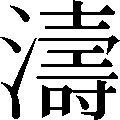

| Dの変身 (PHP文芸文庫) | |
| 吉村 達也 | |
| 株式会社ＰＨＰ研究所 (2011) | |

Ｄの変身
吉村達也
Ｄの変身 目次
序 章 夢
夢──という言葉には、二通りの意味がある。ひとつは、睡眠中に脳内で勝手に描き出される幻想のドラマ。もうひとつは、未来に実現したい理想とか願望だ。
前者の夢は「みる」ものにすぎないが、後者の夢は「みる」というより「抱く」ものであり、しかも「かなえる」ことも可能だ。
ぼくにとって、後者の意味で記憶に残っている最初の夢は、幼稚園のときに抱いた「パイロットになるゆめ」だったと思う。可愛 いもんだ。もちろん、ぼくはパイロットにはならなかった。いまのぼくは、平凡なサラリーマンだ。
そもそも、幼少時の夢をのちにかなえたという立派な話はあまり聞かない。四歳からピアノを習いはじめて天才的な作曲家になったモーツァルトの例もあるけれど、あれは夢を実現したのではなく、宮廷音楽家の息子として生まれた宿命だろう。
そういえば幼稚園のころ、ひとりっ子だったぼくは、四国・高知にある実家の隣に住んでいたひとつ年下の女の子と、ふたりでよく遊んでいた。彼女は「みよちゃん」と言った。正しくは「みよこ」だ。
みよこ──音で聞くとずいぶん古典的な響きを持つ名前だけど、漢字では「美代子」ではなく「未予子」と書いた。幼稚園児のぼくは「大 輔 」という自分自身の名前さえ、「輔」のほうを漢字で書くことができなかった。だから、みよちゃんの名前に彼女の両親が込めた意味など理解できるはずもなかったが、いまになってみると、すごい漢字を当てたものだと思う。「未予子」は「未来を予知できる子」と解釈できるからだ。
そのみよちゃんにも可愛い夢があった。「お嫁 さんになって、三人の女の子を産む」ことだ。当時、ぼくは彼女からその夢を何度も聞かされたから、いまでもハッキリと覚えている。
いま、ぼくは二十七歳になった。ということは、隣のみよちゃんは二十六歳になる計算だ。けれども、みよちゃんがどこでどうしているかは一切わからない。ぼくが小学校にあがったときに、彼女は両親とともにどこかへ引っ越してしまったからだ。あまりよくない事情で越したらしいことは、ぼくの母親がほかの大人たちと囁 きあっている雰 囲 気 から察せられた。
はたして未予子は自分の名前どおり、未来を予知した夢をかなえているころだろうか。いまとなっては、それも確かめようがない。
ところで、幼い女の子は「お嫁さんになるゆめ」をしばしば抱くが、幼い男の子が結婚に対する憧 れを抱くなんて聞いたためしがない。たぶん、花嫁のウェディングドレス姿に相当するような美しいイメージが、花 婿 のほうにはないからだろう。そして、それ以外にも、ぼくが結婚に対する夢を抱かなかった理由がある。
子供のとき、ぼくは何度か結婚式に出たことがある。いずれも親 戚 の誰かが結婚するというケースだ。そして、ぼくの母が毎回決まって花嫁にかける言葉があった。
「いまがいちばんいいときよね」
というセリフだった。
それを聞いて、子供心にぼくは不思議に思ったものだ。だって、結婚式の当日がいちばん幸せなら、その先はいまほど幸せではない、ということではないか。だったら、なんでこの人たちはわざわざ結婚をするんだろう、と。
もしかすると、母自身が幸せな夫婦生活を送っていないところから出た自 嘲 的 な言葉なのか、などと幼いぼくに推測できるはずもなかったけれど......。
ともかく、新しい人生の門 出 に際して、「いまがいちばんいいときよね」と花嫁に語りかける母の声が頭にこびりついていたおかげで、ぼくは無意識のうちに、結婚というものへの過剰な幻想を抱かないようになっていたのだ。隣のみよちゃんとは対照的に。
そして現在──
結婚して、一児の父になったぼくは、母の決まり文句を自分自身の結婚生活にあてはめてみて、こう思う。
いまも幸せとは言い難いけれど、結婚式の当日だって、決して人生でいちばん幸せだったとは言い難かった。ちなみに、母はいつものセリフを花嫁に──ぼくの妻となった瑛 子 に言わなかった。「いまがいちばんいいときよね」とは。
実際、ウェディングドレス姿の瑛子が父親にエスコートされながらヴァージンロードを歩んでくるのを見たとき、ぼくは心の中でこんなふうにつぶやいていた。「おれの人生は、いま不幸な未来に向けてカーブをきりはじめた」と......。
夢。
子供時代のぼくは、パイロットになりたいとか、サッカー選手になりたいという、いかにも少年らしい夢を抱いていた。
思春期のぼくにも、いろいろな夢があった。
そして大学に入ってからは、夢は将来の目標という形で、現実味を帯 びた種類のものになった。とりわけ結婚とは、未来の幸福を約束してくれる輝かしい夢であると信じて疑わなかった。
それなのに、その夢をかなえた瞬間に──つまり、瑛子と教会で永遠の愛を誓 い合うことになったその日に、いまが不幸へシフトする人生の分岐点だと感じるなんて、あまりといえば、あまりではないか。
第一章 決 断
１
【Ｄの変身......一日目 六月七日（水）】
《ぼくはＤである。
Ｄがぼくの実名のイニシャルなのか、そうでないかは、ご想像にお任せする。ともかく、きょうからはじめるこのブログのタイトルを『Ｄの変身』とすることに決めた。
ブログ開設にあたって、何から書き出したらよいものか、ずいぶん迷った。でも、あまり構えていたらいつまで経 っても画面が埋まらないので、とりあえず思うままにキーボードを叩 いてみることにする。
ぼくは二十七歳。先月末に誕生日を迎えたばかりだ。
二十七というのは若いといえば若いし、もう若くないといえば、そうともいえる年齢だ。少なくとも『青春』と呼べる時期は、ぼくにとっては、とっくに過ぎ去ったものと考えていいだろう。
ぼくは何年も前から、「自分は変わらなければならない」と思ってきた。できるだけ早い時点で、人生の航路を針路変更しなければならない、と。もっと詳しく言えば、結婚式当日から不幸に向けて走りはじめてしまった船の舳 先 を、もういちど幸福の方角へ向け直さねば、という焦 りを伴う危機感だ。
しかし、何をどう変えればよいのかという答えを、なかなか探し出せずにきた。
だが、その答えがようやく見つかった。いや、とっくに見つけていたのに、その正解からあえて目をそらせようとしてきた。
やはり結婚をやめるしかない。
たどり着いた結論は、それだった。結婚生活を送っていることが──家庭人であることが、ぼくに「いまの人生はどこか望んでいたものと違う」と思わせている最大の原因だった。
ただし、決して妻に問題があるわけではない。たしかに、彼女と結婚したから結婚生活が楽しくならないのだと考えていたときもあった。うまくいっていない世の夫婦の大半がそうであるように、ぼくは『性格の不一致』というありふれた言い訳を持ち出して、殺 伐 とした結婚生活の原因を説明しようとしていた。そして『性格の不一致』と言いながら、相手のほうだけに非があって、自分はあまり悪くないという、よくありがちな勝手な決めつけをしていた時期があった。
でも、ほんとうのところはそうではなかったのだ。結婚という形態じたいに幸福を阻 む何かがある。それにぼくは気がついたのだ。
もちろん、すべての結婚がそうだとは言わない。結婚してもなお、ずっと愛情を保ちつづけているカップルはあるだろう。だが、とくにぼくのような結婚のきっかけを持つ人間にとって、結婚は幸せな生活の象徴とは言い難いものになる。
仮に、ぼくの妻をＥと呼ぼう。Ｅが妻の実名のイニシャルなのか、そうでないかは、これもまたご想像にお任せする。
Ｅと結婚したのは四年半前の十二月初めだった。そのとき、ぼくも彼女もまだ学生だった。同じ大学の四年生だったのだ。知り合ったのが大学三年の夏で、結婚が大学四年の冬だと言えば、おおよその事情は察してもらえるだろう。
そう、ぼくたちは『できちゃった婚』だった。
可能ならば、結婚は大学を卒業してからにしたかった。しかし、彼女の腹が目立つようになって、キャンパスでの好奇の視線を避けられなくなったからには、ふたりの関係を公式なものとするために結婚するよりなかった。
ぼくの両親、とくにオヤジは非常に口うるさい男だったが、交際相手を妊 娠 させたという報告をおそるおそるしたところ、「おまえがちゃんと責任をとって結婚するなら、今回の件は大目にみよう」と、意外にも平静な対応をしてくれた。
彼女の父親のほうも、ぼくが結婚という結論を用意して挨 拶 に行ったところ、まるでうちのオヤジのセリフをコピーしたように、そっくりの言い回しで笑顔を見せたものだった。
「Ｄ君がきちんと責任をとってくれたことで、娘の親としては非常にホッとしているよ。きみの誠実な態度に感謝している。こうなったら、早く孫の顔を見せてもらいたいものだ」
そのときから、何かが引っかかりはじめていた。ぼくの父と彼女の父が奇 しくも口を揃 えて発した『責任をとる』という言葉に、言いようのない違和感を覚えたのだ。
責任をとる？
おかしいと思わないか。
子供をつくったから責任をとって結婚する──それが幸せの出発点として、はたしてほんとうに正しいのか？
ぼくは、そのときから自問自答をはじめていた。
そもそも『責任をとる』という言い回しは、たとえば「部下の不 祥 事 の責任をとって社長が辞任する」といった、マイナスイメージで使われるものではないだろうか。
たしかに学生の分 際 で、しかも婚約をした仲でもなく、たんなる恋人どうしにすぎない関係の段階で妊娠という事態を引き起こしたことは、双方の親にとってみれば不祥事に違いない。だけど、その責任をとって男が結婚を決意するというのが、ほんとうに立派だと褒 められた姿なのか？
中絶が罪 深い行為であることはわかる。でも、決して子供がほしいと望んでいたわけではない親のもとに、子供が生まれてくることは幸せなのか。少なくとも、いまのぼくがふり返って思うのは、妊娠、即結婚、という選択は、あまりにも軽 率 ではなかったか、ということだ。
だが、まだ学生で経済的にも自立していなかったぼくとしては、双方の両親の倫理規準に従うよりなかった。それに、最初からそれ以外の選択肢はなかった。
なぜなら、病院で正式に妊娠の診断を受けたＥが、真っ先にその事実を伝えたのは、ぼくではなく、彼女の母親だったからだ。そして、娘を伴ってぼくの前に現れたＥの母親の発した言葉がこうだった。
「Ｄさん、このことについては、きちんと責任をとってくれるんでしょうね」
このときも『責任をとる』という言葉が出た。
なんで周りの大人たちは、みんなそういう発想をするんだ。文句を言いたかったが、Ｅの母の目尻を吊 り上げた迫り方に、ぼくはすっかりたじろいで、ノーと言う勇気は出なかった。
そして最悪なことに、「もちろんです。責任、とります」と心にもない返事をしてしまったのだ。言った瞬間に「ああ、しまった」と唇 を噛 んだ。
普通なら妊娠の事実は、もうひとりの当事者であるぼくに真っ先に知らされるべきだろう。Ｅがそれをしなかったのは、ぼくに最初に知らせたら、堕 ろせと言われるに決まっていると思ったからだ。実際、ぼくは間違いなくそう言ったはずだ。
その事態を避けるために、彼女は自分の母親に第一報を入れた。つまりＥは、絶対に赤ん坊を産みたいということだ。だから、未婚の母という事態を避けるには、ぼくに正式な結婚を承 諾 させるしかない。それがＥとＥの家族の方針だった。
Ｅがぼくを愛しているから、どうしても結婚したいというのではなかった。お腹 の中に目 芽 えた生命 のために、法的な父親が必要だった。だから結婚を迫ってきたのだ。そこからして、ぼくは虚 しいものを感じた。まず子供のことがありきで、ぼくは添 え物にすぎなかった。
これはどうしてもおかしなことだった。
それに、当時のぼくの気持ちもよく考えてみてほしい──いや、このブログを読んでいる不特定多数の『アカの他人』のみなさんにしてみれば、おまえの気持ちなど、いちいち考える義務なんかないんだよ、とおっしゃりたいかもしれないが──大学四年生にして妊娠発覚、即結婚というレールに否 応 なしに乗せられたぼくは、そのときから青春時代の恋愛を楽しむという権利を奪われてしまったのだ。それが不幸でなくて、何なのだ。
２
そもそもぼくは、Ｅとなぜつきあいはじめたのか？ もちろん好きになったからだ。第一印象から好感を抱き、そして交際を重ねるごとに愛情は増していった。ただし、つきあっていた期間はそれほど長いわけではない。
Ｅとは大学に入ってすぐ知り合ったのではなく、三年生になってから初めて顔を合わせた。それまでは学部が違うので存在すら知らなかった。ぼくが通っていたのは、いわゆるマンモス大学で、学部ごとに校舎が違っていたりするから、卒業までＥとは一度も顔を合わせずに終わっていた可能性もじゅうぶんあったのだ。
そんな環境で恋人どうしになったのは、やはり縁があったからだとは思うが、交際一年ほどで彼女を生 涯 の伴 侶 と決めるほど、当時のぼくは結婚に憧れていたわけではなかった。それどころか、結婚という形で人生の選択肢を早々に狭めるのはつまらないことだと思っていた。
それでもＥと急速に親密になったのは、愛情というきれいな言葉だけでは説明のできない、もっと生 々 しい理由があった。セックスの相性がよかったのだ。
二十七歳になった現在のぼくの性欲指数を百とすれば、学生のころは五百、いや千ぐらいの値があったと思う。そのグツグツと沸 騰 する若い欲望を、Ｅは理想的な形で受けとめてくれた。だから毎日会いたかった。そう、愛しているから会いたいのではなく、毎日抱きたいから毎日会った。それが正直なところだ。
当時のぼくにとって『愛情』とは『性欲』そのものにほかならなかった。それを愛だと思っていたのだ。
そんなぼくを、あなたは他人事 のように笑えるか？
もともとＥとは、結婚という先の話など考えたことがなかった。当時のぼくがＥとの結婚を考えるとしたら、最高のセックスフレンドである彼女を、ほかの男に渡さず独占するために必要な契約としての意味ぐらいしか持たなかっただろう。間違っても、子供の母親となった彼女の姿なんて想像したくもなかった。
ところが、そうなってしまったのだ。
妊娠を聞かされたとき、ぼくの頭に浮かんだのは父親としての自覚でもなければ、幸福感でもなく、「これでしばらくは、いままでのようなセックスができなくなるんだな」という、きわめて俗っぽいレベルの落 胆 だった。
かといって、よその女に欲望のはけ口を求めては、恋人時代ならまだ浮気として咎 められるだけで済むかもしれないが、既婚者の立場でそれをしたら、不 倫 という重大な背信行為になる。
大学四年という若さで、ぼくはいきなりそうしたタガをはめられることになってしまったのだ。しかも、『セックスは二の次状態』は、出産を迎えれば終わるというわけではない。それどころか、子供が生まれたら、なおのこと昔のようなわけにはいかなくなり、彼女は子供のお母さんとしての顔を日に日に強くしていくだろう。
妊娠の事実を聞かされた瞬間を境に、ぼくとＥは元のような関係には永遠に戻れなくなった。心の愛より身体 の愛を重視してつきあってきたぼくにとっては、それがまったくの正直な気持ちだった。
精神的な愛情を大切にはぐくんできたふたりだったら、妊娠の事実によって、失うものの大きさを痛感したりはしないだろう。当然のことながら、戸 惑 いよりも喜びのほうが圧倒的に大きいはずだ。だが、ぼくはＥと崇 高 なプラトニックラブで結ばれた関係ではなかったのだ。Ｅがどう思っていたにせよ、少なくともぼくにとっては、Ｅという女はセフレだったのだ。
それなのに、いきなり彼女がぼくの妻になるという運命が襲ってきた。これから社会に出て、男として思いきり遊ぼうかという時期に、だ。
こんなはずじゃなかった。こんなはずじゃなかった。こんなはずじゃなかったよ、ほんとに。
３
ＥとＥの母親が ってやってきて、彼女の妊娠を告げたとき、臆 病 者 のぼくは、すっかり動転して、結婚という責任のとり方をすることに即、オーケーを出してしまったが、せめて大学を卒業するまでは独身でいたかった。
父ちゃんと母ちゃんの立場で青春の旅立ちに臨むなんて、あまりにも悲しすぎる。だから、なんとか結婚そのものは先延ばしにしようとしてきた。
だが、どう計算しても卒業式の前に出産予定日がやってくる。だから、子供が生まれたときに戸籍上の父と母になっていなければ恰 好 がつかないという体 裁 づくりのために、やむなく大学四年の十二月に式を挙げて、ぼくたちは正式な夫婦になった。そして翌年の二月に、Ｅは男の子を出産した。
いかにギリギリまで結婚式を引き延ばしたかがわかるだろう。そしてぼくは、一児の父という立場で青春のキャンパスを巣立っていった。
なんて夢のない卒業なんだ！
周りのみんなが、学生時代の恋を継続したり、社会に出て新しい出会いを求めようというときに、ぼくは希望に満ちた若者ではなく、『夫』と『父』という両方の肩書を背負い、早くも家庭という重荷を押しつけられ、さまざまな義務感と責任でがんじがらめとなった人生にはまりこんでいた。十歳分ぐらい一気に老 け込んでしまった感じだった。そしてＥも、『妻』と『母』の肩書を背負って、恋人時代の輝きをたちまち失っていった。
もちろん、彼女の妊娠はぼくの播 いた種だ。自 業 自 得 と言ってしまえば、それまでだ。そうだけど、結婚という形で妊娠の責任をとるのは、ぼくにとって不幸以外の何物でもなかった。それに、男が望まない『できちゃった婚』は、女性にとっても決してよいことではないはずだ。
なぜなら、お腹が大きくなって、やがて母になるという女など、男の目から見ればもはや恋愛の対象にはならないし、性的な興味も惹 かない存在ではないか。だから恋人時代と同じ愛情など、妻になった『元恋人』に対して注げっこないのだ。
なんと身勝手な、と怒りますか？ あ、そう。でも、あなたが男だったら、そんなきれいごとが言えた立場ですか、と突っ込みたいものですね。
当時のぼくは二十二歳だ。二十二歳で、もはや人生で二度と恋愛ができないことになるなんて、あまりにもつらすぎる。
いま街を歩けば、その当時のぼくと同じぐらい、あるいはもっと若い『少年パパ』が『少女ママ』といっしょに幼い子供を連れ歩いている光景に出会う。ぼくは、昔の自分と同じ立場にいる男を見かけるたびに、そっと心の中で同情の言葉をつぶやくのだ。あんたも可哀 相 だよな、不本意な責任をとらされたんだよな、と。
新聞を広げると、若い夫婦が子供を虐 待 して、ひどいときには死なせてしまうような記事が目につく。しかし、ぼくに言わせれば、そんなことは当然予測されるべき悲劇ではないかと思う。
女はともかく、まともに避妊のことを考えずにやりたい放題の男にとっては、赤ん坊はセックスの副産物にすぎない。それも非常に迷 惑 な副産物だ。けれども結婚によって、その迷惑な存在を『愛の結晶』という定義でごまかし、なんとか世間一般の道徳規準にかなうよう、自分たち自身の気持ちをごまかしているだけなのだ。
そんな無理はすぐに破 綻 をきたす。現代の若い男女の恋といえば、かなりの部分がセックスの快楽によって構成されている。それなのに、子供が誕生したことで楽しい日々がゼロになってしまうのだとしたら、子供という存在に腹が立つのは当然ではないだろうか。恋する日々を退屈な家庭生活へと格下げした原因となった存在を抹 殺 したくなってもあたりまえではないだろうか。
その結果、幼児虐待が起きるのだ。
虐待は、決して子育てのストレスだけがすべてではない。恋愛を楽しんでいる若者に、いきなり結婚という形を押しつけるから、わずか一、二年のうちに耐 えられなくなり、本 音 を爆発させ、哀 れな悲劇が起きるんじゃないかな。
若いカップルによる幼児虐待は、若さゆえの愚 かさとして単純に片づけられる問題ではない。あれは『できちゃった婚』が抱える基本的な不幸を象徴する出来事なのだ。
え、いけないですか？ こういう思想は危険ですか？
だけど、ぼくはこう考える。
人類がまだナントカ猿人とかナントカ原人と呼ばれていた時代には、セックスの第一義は子孫繁 栄 だった。もちろん高等生物だから、猿人や原人の時代にだって愛情は伴っていただろう。だが、あくまで種 の保存という本能があっての行為だった。
そうした発想は、現代人になってもつづいた。昭和の前半、日本が戦争に突き進んでいったときの「産めよ殖 やせよ国のため」という国策のもとにあった結婚観は、むしろ原始時代よりも愛情の占める要素が後退した、民族の増殖が目的の前面に出たものといっていいだろう。
いまのように女性がセックスに心のやすらぎさえ見出す時代と違って、性行為を罪悪感に満ちた恥 ずかしいものと受けとめていた当時の女性たちは「お国のためじゃ、ガマンせい」という叱 声 のもとに、気乗りがしなくても、夫に無理やり身体を開かされ、妊娠させられた。時代がそうさせたとはいえ、愛情なき機械的な妊娠が数多くなされたという点で、ぼくはゾッとしてしまう。
そのあと戦争が終わり、第一次ベビーブームによって、『団 塊 の世代』と呼ばれるジェネレーションがどっと生み出された。これは「産めよ殖やせよ」の生産工場的な妊娠とは違っているが、それでもセックスという行為はあくまで結婚生活において子供をつくるために存在する手段であって、それじたいがオープンな愛情表現として認められるところまではいっていなかった。
でも、時代は変わり、セックスはカジュアルな娯楽になった。
このあいだ常務の接待にお供したとき、取引先の社長と話している内容を横で聞いて初めて知ったのだが、常務たちの青春時代には、『エッチ』という言葉は『セックス』そのものではなく、『いやらしい』とか『スケベ』という意味でしか使われていなかったそうだ。
終戦直後、日本がアメリカの占領下にあった時代、米兵は Government Issue＝官給品という言葉からＧＩと呼ばれていた。そのＧＩの性的観念の奔 放 さが当時の日本人には驚きだったために、アルファベットのＧとＩの間にあるＨを、彼らのいやらしさを表わす符 丁 として使ったところから『エッチ』という言葉がはじまったという。
その説の真 偽 はよくわからないが、ともかく『いやらしい』といった程度の意味でしかなかった『エッチ』が、時が流れて平成の世の中になったころには、いつのまにか『セックス』そのものを表わすようになり『エッチする』という動詞も生まれた。
常務に言わせれば、『エッチ』の意味の大幅な変化は「いまの若者にとってのセックスが、おれたちが若いころのワイ談程度の軽さになった証 拠 」だそうだ。
言えてると思う。ぼくが学生だったころでさえ、すでにセックスとは、子供をつくるためのプロセスからは完全に独立して、キスや抱 擁 をもう少し刺激的にしたスキンシップの一種になっていた。
しかもそれは、特定の異性のためにとっておく神聖なる儀式でもなくなっていた。男も女も、まるで映画や食事のデートに誘い誘われるような感覚で、複数の相手と同時進行でベッドを共にすることに抵抗感を覚えなくなっていた。
ところが、その程度のものでしかなくなっているセックスも、ひとたび妊娠という結果が伴うと、突然、ドカーンと重い人生を背負わされる。ちょっとそこまでのつもりで気楽にハンドルを握 った飲酒運転が、いったん人を撥 ねてしまうと、問 答 無 用 で刑務所に送り込まれてしまう。それと似たものがある、妊娠の責任をとらされて、結婚させられるというのは。
そう、誰が何と言おうと、ぼくにとっての結婚は、恋人を妊娠させた『罪』に対して、一生涯、家庭の束 縛 から逃れられない無 期 懲 役 を宣告されたようなものだった。
それが幸せな結婚って言えるんですかね？
４
結婚二カ月後に生まれてきたのは男の子だった。
仮にこの子をＡと呼ぼう。Ａが息子の実名のイニシャルなのか、そうでないかは、やはりご想像にお任せする。
ともかく、Ｅとの結婚によって『夫』というダサい肩書を背負い、Ａの誕生によって『父』というウザい肩書まで背負って、ぼくの人生設計は完全に狂ってしまった。
さっきも書いたけれど、ぼくはＥとは適当にセックスを楽しめる程度のつきあいでじゅうぶんだったのだ。彼女を将来の妻として見たことなど、一度もなかった。Ｅをひとりの女性として愛していたのは事実だけれど、その愛情の七割か八割かは、肉体の快感から生まれたものだった。だから、おたがいが社会に出て違った環境に置かれれば、学生時代の関係など、いずれ自然消滅していくものだと考えていた。そして、その程度の関係でよいのだと。
ところが彼女の妊娠によって、いっぺんに事態が変わってしまった。Ｅは青春のひとこまを飾る思い出の恋人ではなく、ぼくと一生を共にする伴侶となってしまったのだ。妻として、母として......。
そんなつもりじゃなかったのに。
そして結婚から丸四年半──子供が生まれてからだと、四年と四カ月が経った。
もうダメだ。限界だった。
ぼくはまだ二十七歳だというのに、夢というものがまったくない結婚生活をつづけている。まさに『責任をとらされた人生』を過ごしている。そして、これ以上この状況が継続したら、ぼくは何のためにこの世に生を受けたのかわからない。
変えなければ......自分の人生を変えなければ......。
針路変更、針路変更、針路変更だ。
お題目のように、自分に言い聞かせる。
そりゃ焦りますよ。焦らないほうがおかしいだろう。一刻も早くいまの生活を捨てて一から人生をやり直さなければ、取り返しがつかなくなる。グズグズしていたら、ぼくは三十の大台に乗ってしまうじゃないか。たったの三年後にだ。
その前に、二年後には息子のＡが小学校に進学することになる。
ぼくは近所の公立小学校に行かせればじゅうぶんだと思っているのに、妻のＥはお受験を前提にしている。そして息子を有名私立の一貫校に入れるべく、塾通いと情報収集に明け暮れている。Ａはまだ幼稚園の年中組だというのに、だ。さらに、めでたく合格した場合の入学金を工 面 することに必死だ。
第一志望校の入学金を聞いて、ぼくはひっくり返った。冗談ではない。そんな大金がいったいどこから出るのか。Ｅは、「とにかくＡちゃんが小学校に上がるまでは、一に倹約、二に倹約よ。がんばりましょうね」と言うが、そんなために、ぼくは自分の遊びをガマンしなければならないのか？
やなこった！
決して息子が可愛くないわけではないが、しかし何百万円という大金を、うちの子はこんな立派なエリート校に通っているんざんす、と自慢するために使うなんて、そんなバカげた話はない。
ぼくが大金持ちの実業家ならともかく、入社五年目の平凡なサラリーマンだ。年間いくらもらっているかは、Ｅだって知っているはずじゃないか。いまはマイホームを買うための頭金すら貯まっていないというのに、なんで子供のためにそんな無理をしなきゃならないんだ。
そういう妻の教育熱心の理由を突きつめていったら、けっきょくは彼女が夫のぼくではなく、息子にしか目を向けていない、という結論に達するわけだ。できちゃった婚をしたときから、こうなる未来がなんとなく見えていたけれど、実際そうなってみると、虚しさが募るばかりだった。
そしてぼくは後 悔 の日々を無策に送ることに耐えられなくなり、ことし五月──つまり先月だ──ひとりの女と浮気をした。
いや、もしかすると最初から本気かもしれないぞ、と思う。
その女を仮にＲと呼ぼう。Ｒが彼女の実名のイニシャルなのか、そうでないかは、これもまたご想像にお任せする。ぼくとＲが出会ったのは、ある意味で特別なシチュエーションだった。場所は都内の某 繁 華 街 にあるキャバクラ。そして》
５
中途半端だったが、キーボードにそこまで入力したところで、増 岡 大 輔 はいったん打つ手を休め、自分の肩を交互に揉 んだ。かなりパンパンに張っていた。
（よくこんなにたくさんの文章を書いたものだな）
画面を埋め尽くした文字を見ながら、大輔は自分で感心した。
もちろん、ここまでの長文を一日で書けるわけがない。ブログの冒頭に『六月七日（水）』と書き込んだが、それは文章を書きはじめた日のことで、もうすでにそれから十日ほど経過して、いまは六月十六日の金曜日から十七日の土曜日へと日付が変わっている。
つまり『変身十日目』から『十一日目』に入ったところだった。
いま打ち込んだ文章は、開設したブログの画面に直接入力しているのではなく、ワープロソフトを立ち上げて、そこに下書きとして書いている。冒頭の日付は大輔が変身を決意した記念日だったから、ブログのカレンダーと日記の日付の違いはそのままにしておくつもりだった。
（ああ、もうこんな時間か）
片手を反対側の肩に当てたまま首を回し、その動作をつづけながら大輔は壁の時計に目をやった。もう夜中の二時を回っていた。妻の瑛子は寝室で、息子の亜 輝 は子供部屋で爆睡中で、静まり返った２ＤＫの賃貸マンションの部屋で、大輔のいるダイニングキッチンだけに明かりが灯 っている。
息子が四歳に成長し、すでに手狭な感のある住まいには、大輔専用の部屋を設ける余裕はない。だから彼は、自宅に戻ってから仕事をする必要があるときは、いつも正方形の小さなダイニングテーブルの上にノートパソコンを置いて作業をする。
いまも──これはもちろん仕事ではないが──テーブルにノートパソコンを置いて文章を打ち込んでいた。そんな姿が、カーテンを開けた窓ガラスに映っていた。
（もっと広い部屋がほしいよな）
闇 の中に半分溶け込んだ自分の反射映像に向かって、大輔は声を出さずにつぶやいた。
彼の勤めている会社は福利厚生には非常に手厚いので、住宅手当もかなり満足のいく金額が給料に加算されている。だから、ほんとうはもっと広い部屋を借りることも、経済的には決して無理な話ではなかった。
だが、瑛子がそれを許さなかった。
「アッくんがいい学校に入れるまでは、一に倹約、二に倹約、三、四がなくて、五に倹約よ」
結婚当初から、瑛子は大輔の給料が入金される口座の通帳及びキャッシュカードを自分の手元に置き、パソコンの計算ソフトで自作の家計簿をつくって厳しく出入金を管理していた。
そのパソコンは瑛子専用のもので、夫婦といえどもパスワードを教えてくれなかった。だから大輔は、毎週月曜日に瑛子から決まった額の現金を手渡され、まるで子供が親からもらうお小 遣 いのように、そこから決して出費がはみ出すことのないようにやりくりをしなければならなかった。
特別に『予算外』の出費が必要になったときは、まるで会社の仮払い申請書のように、いちいち瑛子に理由を申し述べて、プラスアルファをもらわねばならない。そういう家計システムをずっとつづけてきたのだが、ことしの二月に、大輔はガマンの限界に達してブチ切れた。
会社の同僚と雪見温泉旅行に出かける企画が持ち上がり、そのための旅行代を瑛子に請求したところ、高すぎるという理由で却下されてしまったのだ。そんなつきあいはムダだ、という一言を添えて。
最初は大輔も下 手 に出て、つくり笑いを浮かべながら懇 願 を重ねていたのだが、「これからアッくんをまた新しい塾にも行かせなければならないのに、そんなお金が出せるわけないでしょう！」という瑛子の言葉を聞いて、頭の中で何かがプツンと音を立てて切れるのが聞こえた。
気がつくと大輔は「いったい、この家庭は誰のためのものなんだ。おまえと亜輝のものなのか。おれの存在はどこにあるんだ！」と大声でまくし立てていた。
いったん暴走した感情は止まらなかった。息子がそばで見ているにもかかわらず、ダイニングテーブルの上に置いてあった大皿を窓ガラスに向かって思いきり投げつけた。
皿が割れずに、窓ガラスのほうが割れた。真冬の寒風が室内に流れ込み、呆 然 とする瑛子の髪の毛を真横に泳がせた。亜輝が大声で泣きはじめた。しかし、大輔の興奮はそれでも収まらなかった。
「どうだ。おまえがおれの気持ちを無視して金を倹約するなら、こうやってムダな出費をどんどん増やしてやる。完璧にムダ以外の何物でもない、もったいないの極 致 ともいえる金遣いをガンガンやってやる！」
瑛子は真っ青になっていた。彼女にしてみれば、これほどまでに怒りをあらわにする大輔を見たことはないはずだった。だから彼の怒りが尋 常 ではないことをすぐに理解した。
妻の凍 りついた表情を見た大輔は、そこで一気にたたみ込んだ。今後は銀行口座の管理は一切おれが取り仕切り、いままでとは逆に、おれがおまえに一週間ごとに金を渡す、と。さらに、それが不服なら、もうおまえとは別れる、とまで言い放った。
そのとき初めて大輔は『別れる』という言葉を妻の前で口にした。と同時に、夫婦の間で『別れる』とか『離婚』という言葉を一度でも吐 いたら──たとえ、それがたんなる脅 しのつもりであったにせよ──その瞬間から、ふたりの関係は二度と元に戻らないことを、大輔は直感的に悟った。
翌日から、増岡家の預金口座管理は妻から夫の手に渡った。そして、その晩すぐに、大輔は東京とは思えぬうらぶれた街の風俗街に足を運び、性的な欲望を満たした。
そうした風俗遊びは大輔にとって初めてのことではなかった。だが、いちいち妻の瑛子に頭を下げ、ウソの言い訳をつくってお金をもらっていたのと違って、自分で勝手に金を使えるのは気分がよかった。
それをきっかけにして、大輔は急に女遊びをはじめるようになった。飲みに行っては女を口 説 き、営業活動で外を出歩いているときに、ちょっと可愛い子を見かけたら声をかけ、というふうに、昼夜問わず、遊べる女を漁 りはじめた。それはサラリーマンというよりは、まるでナンパ師だった。
やがて大輔は、そんなナンパの繰り返しの中から「本気で愛せる女」を探しにかかった。そして出会ったのが玲 花 という女だった。
６
玲花は新宿歌 舞 伎 町 のキャバクラで働く女だったが、その若々しく、かつ知的な美 貌 に、大輔は一 目 惚 れした。そして玲花目当てに二度、三度と通い、必ず彼女を指名するうちに、彼女のほうも大輔に心を許して、自分のプロフィールを少しずつ語るようになった。
意外にも玲花は現役の女子大生だった。都内の私立女子大三年生で、まだ二十一歳だという。非常に実入りのいいアルバイトということで、週に三回、夜になるとキャバクラ嬢を務めているのだった。
ほとんどのキャバクラ嬢が、店ではいわゆる源 氏 名 を使っているが、玲花は本名だった。杉 本 玲花という。そんなところも、彼女の意外なウブさを見るようで、大輔は好感が持てた。
彼女の二十一という年齢を聞いて、大輔は六年前の自分を思い出した。それはちょうど瑛子と出会ったときだった。なんとなくそれが、神の巡り合わせのように思えた。
（いまのおれの年齢で、二十一歳の女子大生を恋人にしたら、ぜんぜん違う人生が展開しているだろうな）
玲花を見ながら、大輔はそう思った。その設定を空想の中だけにとどめず、現実のものにしたいという欲求に強くかられた。もういちど二十一歳のときに戻って、人生をやり直せるような錯 覚 に陥 ったのだ。玲花には大輔にそこまで思わせるだけの魅力があった。
そして先月、そのキャバクラに四度目の来店をしたとき、大輔の指名で席にやってきた玲花の耳元で、彼はそっとささやいた。
「よけいなお世話かもしれないけど、きみのような女の子が、こんな店で働いていちゃいけないよ」
その言葉を聞くと、玲花は肩をすくめてクスッと笑った。
「何がおかしい？」
「だって、パターンどおりのセリフだから」
「パターンどおり？」
「うん。私を口説こうとするお客さんは、決まってそのセリフを言うの。『きみのような女の子が、こんな店で働いていちゃいけないよ』って。もしかして男の人って、みんな口説き文句の教科書でも持ってるの？」
「いや、そんなことはないけど」
自分の吐いたセリフが、ほかの男たちも使っている陳 腐 なものであることを知らされて、大輔はちょっと傷ついた。また、キャバクラに遊びにきていながら、キャバクラ嬢という職業に対して一種の偏見を持っていることを見抜かれたようで、非常に気まずかった。
しかし玲花の表情には、大輔を咎めるような厳しさはなかった。むしろ好意さえ感じられた。そこで大輔は、思いきって切り出した。
「もしよかったら、こんどの日曜、どこかで食事でもしない？」
九十パーセントの確率で、ていよく断られるだろうと思った。ところが、答えはイエスだった。そして、その日から大輔の本格的な恋がはじまった。
大輔にとって玲花とのつきあいは浮気ではなかった。本気だった。真剣な愛情を伴う、真剣な恋だった。最初からそのつもりだった。だから日を追うごとに、大輔にとっての玲花は大きな存在になっていった。家庭の崩 壊 と引き替えになっても、永遠に自分のものにしたいと思うほどに......。
運命の日は五月三十日の夜にきた。翌日に二十七回目の誕生日を控 えた大輔は、一日早いバースデー・ディナーを玲花と楽しみ、そして都心のホテルで結ばれた。妻の瑛子には、仕事が忙しくて会社に泊まると言い訳をした。疑うなら勝手に疑えばいいと開き直った。
ゆったりとしたダブルベッドで快楽の余 韻 に浸りながら、大輔は自分の胸に顔を埋める玲花に向かってきいた。
「いま、何がほしい？」
預金通帳を妻の管理下から取り戻せて、経済的な観念が少しゆるみがちな大輔は、バッグかアクセサリーあたりの答えが返ってくるものと思ってたずねた。ところが、玲花の口から出たのは予想外の言葉だった。
「お金」
一瞬、しらけた。
だが、玲花はそんな大輔の心理を見透かしたように、すかさずつけ加えた。
「お店を辞めるためには、どうしても当座のお金が必要なの。でも、その代わりお店を辞めたら、増岡さんだけの玲花になれるから......ね？」
こわばっていた大輔の表情がまたゆるんだ。そして玲花の髪を撫 でながら言った。
「わかったよ。できるだけのことはしよう。で、いくらぐらいほしいんだ」
「ううん、やっぱり要 らない」
大輔の裸の胸に顔をこすりつけながら、玲花は首を左右に振った。
「いまのは、ただの冗談」
そんなリアクションをする玲花を可愛いと思った。そして大輔は決めた。この子とともに第二の人生を歩もうと。
妻の瑛子も息子の亜輝も、玲花の前では完全に霞 んでいた。キャバクラで出会った女子大三年生の存在は、そこまで大きくなっていた。
男という生き物は、かんたんに家族を捨てられるようになっているんだな、と、大輔は他人事のように思った。
７
長文のブログを綴 る途中で手を休め、物思いにふけっているうちに、大輔は無性に玲花に会いたくなった。
いまは夜中の二時すぎである。にもかかわらず、いますぐ車を飛ばして彼女の住むマンションへ行きたくなった。だが、こんな時間に勝手に部屋を抜け出すことはできない。
大輔はつくづく家庭に縛られている息苦しさがイヤになった。
ブログを開設し、そこに実名のイニシャルで、いまにも爆発しそうな感情を綴り、広く世の中に読んでもらおうと思ったのも、もう後戻りできないところまで自分を追い込もうという心理から出たものだった。『Ｄの変身』とは、すなわち家庭を捨てる決心にほかならなかった。
しかし実際には、瑛子に面と向かって自分の気持ちを告げなければ事ははじまらないのだ。そのタイミングが難しかった。自分の人生に大激震を招く決断だけに、離婚の意思を切り出す勇気は、なかなか湧 いてこなかった。
（いったい、いつになったら自分でこの状況にピリオドを打てるんだ）
いくらブログ上で変身への思いをかき立てても、実生活ではネットに記した文章のように威 勢 よくはいかない。大輔は重いため息とともに書きかけのブログを保存し、とりあえず今夜はもう寝ることにした。
そしてダイニングテーブルに置いたノートパソコンを閉じようとした、そのとき、冷蔵庫の横の壁に掛けたコルク製の伝言板に、瑛子が大きな字で書いたメッセージがピンで留めてあることに気がついた。
近寄って読んだ。
《亜輝の塾で、こんど『夏休み・お受験合宿』の企画があるの。涼 しい蓼 科 高原のロッジに泊まって、お受験用の特訓を親子でいっしょに受ける五泊六日の集中講義。費用は親子参加で二十三万円プラス消費税。わりと安いと思うのね。週明けの月曜までに入金しなくちゃいけないので、お金、お願いします》
「バカ言え」
ひとり起きている夜中の部屋で、大輔は声に出して文句を言った。そして、つづきを心の中でつぶやいた。
（なにが『わりと安いと思うのね』だ。二十三万だぞ。そんなことに大 枚 をはたくんだったら、玲花にやったほうがよっぽどいい）
その心のつぶやきは本気だった。とにかく無性に瑛子の独断に腹が立った。仕返しをせずにはいられない気分だった。そして大輔は、いったん終了したパソコンをまた起動して、インターネットバンキングのページを立ち上げた。
いまは土曜日の午前二時すぎ。銀行が実際に金を動かすのは月曜日になってからだが、振り込みの手続きは、ネットバンキングでは土日も関係なく二十四時間可能である。
なにか言いようのない激しい感情に突き動かされた大輔は、「お金がほしいと言ったのはホントに冗談なんだから」と、しきりに遠慮する玲花から強引に聞きだした銀行口座の番号を、画面に入力していた。
大輔は興奮していた。
サラリーマンとして大輔が会社から得る給料に対して、塾の合宿費用がどれほど大きい割合を占めるかを気にもせず、四年間の倹約につぐ倹約で、やっと百五十万円に達する積立預金をつくったというのに、息子の教育のためなら、何十万出しても平気という妻の神経に血が上った。
（お受験合宿なんて、しょせん塾の商売じゃないか。そんなものには一銭たりとも出さないぞ。その金は玲花にやる。おれが稼 いだ金は、おれの自由に使うんだ）
激しい勢いで、大輔は玲花の口座に送金する金額欄に２３０......と数字を打っていった。瑛子が払おうとしていた合宿代金とわざと同じ金額を、玲花にあげてしまおうと思ったのだ。いまの大輔にとっては大金だ。だが、ためらわず、確認画面に現れた送金ボタンを無 造 作 にクリックした。
一秒もかからずに、振り込み手続きが完了したという画面に変わった。
（この不審な送金に瑛子が気づいて、おれを厳しく問いつめてきたときが、離婚を切り出すときだな。考えようによっては、いいきっかけだよ）
大輔は自分にそう言い聞かせた。
その直後、とてつもない失敗をしでかしたことに気がついた。二十三万円を振り込んだつもりが、ゼロひとつよけいに打って、二百三十万円を振り込んでいた！
ショックで頭がクラッときた。そして大輔は、あわてて普通預金の残高確認を行なった。マイナス勘 定 を示す三角印が、彼の目を射 た。
1,432,515
八十七万円ほどあった普通預金の残高を一瞬にして食いつぶし、総合口座に設けた百五十万円の積立預金分ギリギリまで食い込んだ赤字の数字に、大輔は衝 撃 を受けた。仮に積立預金の額面いっぱいまで借りられたとしても六万七千円あまり。実際にはもっと少ない金額が、いまの増岡家の全財産になった。
呆然と画面を見つめる大輔の指先が、細かく震えていた。
第二章 愛 人
１
出ない。
さっきから一時間近くものあいだ、数え切れないほど電話をしても、玲花の携帯は「電波の届かない場所にいるか電源が入っていない」状態だった。「大至急連絡を」というメールも何本打ったかわからない。しかし、それにも返事がなかった。
時刻が深夜の三時であることは、彼女が応答しない理由にはならなかった。本業の学校にはほとんど行かず、夜のキャバクラ嬢のアルバイトに精を出している女子大生の杉本玲花は、完全に昼夜逆転の生活をしていた。夜明けとともにベッドに入り、昼過ぎにあくびをしながらようやく起きるという生活である。だから、夜中に電話やメールをしても、即座に返事があった。少なくとも電源を切っていることは一度もなかった。
（くそっ、こういうときにかぎって、なんで出ないんだ）
妻子が寝静まったマンションのダイニングで、ひとり苛 立 っている増岡大輔は、動転した気持ちをなんとか鎮 めようとして、ガラス戸を開けてベランダに出た。
ちなみにこのガラス戸は、二月に大輔が癇 癪 を起こして大皿を投げつけて叩き割ったものである。そこだけ新しく嵌 め直したので、ガラスとサッシの隙 間 を埋めるためのコーキング材が、ほかのガラス戸に較べて白く引き立っている。
それを見ると、妻の瑛子に対して初めて『別れる』という言葉を使ったときの記憶が り、苦い気分になった。
大輔の部屋は、六階建て賃貸マンションの四階にあったが、決して眺 めはよくない。目の前には自分たちのマンションよりもずっと背の高い、そして住民たちの生活レベルもはるかに高い十一階建ての豪 華 分譲マンションが、威圧するようにそびえ立っている。それを目 の当たりにするたびに、そこの住人から見下されている気分になる。
しかし、いまはそんなことを気にしている場合ではなかった。まもなく本格的な梅 雨 の到来を迎える都心の夜は、じっとりと不快だった。それでもベランダに出たのは、タバコを吸うためだった。
妻の瑛子も、大学三年で出会った当時は、タバコを一日十本ほど吸っていた。だが、亜輝をお腹に孕 んでからは、喫煙の習慣をピタリとやめた。そして大輔にも禁煙するように命令した。「あなたも禁煙してね」というおねがいではなく、「あなたもパパの自覚を持って禁煙しなさいよ」という命令だった。
まだおたがいに学生だったのに、妊娠がわかったときから、瑛子は大輔に対して上から物を言うようになった。
だが、どんなに頭ごなしに命じられても、学生時代からヘビースモーカーの仲間入りをしていた大輔には、子供ができたからという理由だけでタバコをやめるのは不可能だった。せいぜいの妥 協 点 が、本数を減らし、生まれてきた子供の前では吸わない、また子供がそばにいなくても自宅内では吸わない、というところだった。
そのため大輔は、在宅中にタバコを吸いたくなると、ベランダに出なければならなかった。凍 てつく北風が吹く冬の日も、ぎらつく太陽が照りつける夏の日も、窓に滝のような水が流れる大雨の日も、タバコが吸いたければベランダに出る必要があった。テレビを見ながらゆっくりと紫 煙 をくゆらせるということはできないのだ。誰のせいで？ もちろん、瑛子の命令でもあるが、息子の亜輝のせいでもある、と大輔は考えていた。
（子供なんかつくらなきゃ、瑛子とはセフレのままでいられたし、彼女が恋人から母親に変わるところも見ずに済んだ。そして、いままでどおりタバコも好き放題吸えたんだ。それだけじゃない。金だって、もっともっと自由に使えた。何から何まで自由だった）
タバコを吸うため、携帯灰皿を手にしてベランダに出るたびに、大輔は、子供が生まれたことでの不便や不自由を繰り返し心に浮かべた。そして無意識のうちに、可愛いはずのひとり息子を、人生の妨害者扱いしていた。その誕生には自分も責任を負う立場にあるにもかかわらず......。
だが、今夜はベランダに出てもそんな思いは湧かなかった。二十三万円ではなく、ケタを間違えて二百三十万円を玲花の口座に振り込んだ大失敗──その対応策を考えることだけで頭がいっぱいで、自分に喫煙制限を強いてきた妻や、その原因をつくった息子に対する不平不満を浮かべている場合ではなかった。
きょう明日じゅうに玲花に話をつけ、二十三万円だけは予定どおり彼女にあげるにしても、差額の二百万ちょっとは、週明けの月曜日に大輔の口座へただちに返金してもらわないと大変なことになる。
来週末の二十三日、金曜日になれば──六月分の給料が銀行に振り込まれる。さらに、同じ日に夏のボーナスも支給されることになっていた。いまの見込みだと、二十七歳の大輔にも五十万円前後は出るはずだ。だから、たったの六万数千円しか口座にない状況は、一週間しのげば、なんとか切り抜けられる。
しかし、前から瑛子との取り決めで、夏冬のボーナスは亜輝の進学資金を主な目的として全額貯金するという約束をさせられていたから、生活資金がギリギリの自転車操業を強いられることに変わりはない。
そもそも、一回でも家賃の支払いが滞 れば、その催 促 をきっかけにして、口座から大金が消えたことが妻にばれてしまう。そうなれば、重大な問題が大輔に降りかかることになる。それは離婚交渉への悪影響だ。
瑛子に対する不満を募らせた大輔は、強気一辺倒の態度で離婚を切り出そうと思っていた。それなのに、家計を崩壊させてしまうほどの大金を女子大生の愛人に振り込んでいた事実が明らかになれば、たんに感情的にもめるだけでなく、家裁の調停に持ち込まれた場合、圧倒的な不利を招くことになる。うっかりミスによる送金であっても、それが作為的なものではないと証明する手段などない。
「あなた、わざとなんでしょ。わざとよその女にありったけのお金を振り込んで、私を困らせようとしたのね！」
目尻を吊り上げて食ってかかる瑛子の顔が見えるようだった。その罵 声 が耳元に響いてくるようだった。
（月曜朝イチで金を取り返していなければ、離婚計画が根底からひっくり返る）
頭上にのしかかってくる向かいの豪華マンションの威 容 を眺めながら、大輔はベランダで立てつづけにタバコを三本ふかした。
一瞬、郷里の高知にいる両親の顔が浮かんだ。親から金を借りて急場をしのいだらどうか、と。
だが、学生時代に瑛子を妊娠させた不始末を、結婚という形で『責任をとった』ことで、なんとか親の怒りを買わずに済んだ立場としては、瑛子との離婚を考えているとは口が裂 けても言えなかったし、まして不倫相手の口座に大金を振り込んでしまった後始末を頼むわけにもいかなかった。いくら考えても、金銭的なＳＯＳを頼める相手はどこにもいない。
（クッソー、なんでちゃんと数字を確認しないで送金ボタンを押したんだ。いつもは何度も確かめてからクリックするのに）
ゼロひとつよぶんに打ち込んでいたミスに気づかなかったことを、大輔は何度も悔 やんだ。しかし、いつまでも失敗を悔やんでいたところで時間のムダだった。無理やり寝ようとしても神経が高ぶって眠れないのは目に見えている。それならば、家にいて玲花と連絡がとれるまで待っているより、いますぐ彼女のところへ行ったほうがいい。
玲花がひとりで住んでいるマンションは、夜中なら車で二十分ほどで着く。もしも寝ているなら起きるまでインタホンを鳴らしつづけるつもりだったし、どこかに出かけているなら、マンションの前でずっと待とうと決めた。妻に夜中の外出を怪 しまれる危険はあったが、この際やむをえない。
大輔は三本目のタバコを携帯灰皿の上でもみ消し、肺に残っていた紫煙を夜空に向かって吐き出すと、ベランダのガラス戸を開けて室内に戻った。
２
２ＤＫの手狭な間取りで、ふたつある洋室のうち、ひとつは夫婦のための寝室で、もうひとつが亜輝のための子供部屋兼タンス置き場になっていたから、家族の共有スペースはソファを置くゆとりすらないダイニングキッチンだけだった。
そのダイニングテーブルに広げておいたノートパソコンをしまうと、大輔は携帯と財布とタバコの箱、それに車の鍵 をまとめてつかみ、玄関へ足早に急いだ。そして上がり口に腰を下ろし、ウォーキングシューズの紐 を結びはじめたとき、背後で水洗トイレを流す音がした。つづいて、カチャリと音を立ててトイレのドアが開いた。
びっくりしてふり返ると、ライオンやクマのイラストがプリントされたパジャマを着た息子の亜輝が、寝ぼけまなこで立っていた。大輔がベランダでタバコを吸っているあいだに、ひとりで起き出してトイレに入っていたらしい。
「パパ、おでかけ？」
玄関に腰掛け、すでに両足を靴 に突っ込んでいる父親を見て、亜輝がパジャマのズボンをずり上げながらきいた。
「あ......ああ......いや、お出かけとは違うんだけど」
大輔は急いで言い訳した。
「ちょっとそこのコンビニまでお買い物だよ。パパの好きなタバコがね、切れちゃったから」
「ふうん」
口をとがらせながら、亜輝は、父親が脇 に置いたタバコの箱を見つけて指差した。
「タバコなら、そこにあるよ」
「あ、これはもうすぐ空 っぽになるんだ。だから買いに行くんだよ」
ウォーキングシューズの片方はまだ靴 を結んでいない状態だったが、そのまま大輔は立ち上がり、息子の両肩をつかまえて言った。
「とにかくアッくんは自分の部屋に行って寝なさい。まだ夜中の三時だよ」
「なんか、ねむれなくなっちゃった」
「だいじょうぶ。前にパパが教えただろ。ひつじさんが一匹、ひつじさんが二匹って、数えていたら眠くなるやつ」
「それより、パパ、お話しして～」
「パパは、いまからお出かけしなきゃならないんだよ」
「ウソだ。おでかけじゃないって、いま言ったよ。コンビニまで行って、すぐ帰るって」
「いや、やっぱりお出かけなんだ」
どうしておまえは間 の悪いときに起き出すんだよ、と心の中で息子を罵 りながら、大輔は身をかがめて、もう一方の靴紐を急いで結んだ。その姿勢のせいもあったが、息子の存在に改めて腹が立って、大輔は顔を真っ赤にした。
「とにかくね、アッくん」
身を起こすと、大輔はまだ顔に赤みを残したまま、息子の額 を人差指でつついた。
「パパは御用があって出かけるけど、アッくんはすぐ自分のおふとんに潜 って寝なさい。そうしないと、こわ～い鬼がくるよ」
「やだー、オニさん、きらい～」
「だったら、早く寝なさい」
「じゃ、ママのとこにいく～」
「それはダメだって」
大輔は、妻が寝ている寝室へ入ろうとする息子をあわてて引き留めた。
「ママはぐっすり寝ているんだから、起こしたら可哀相だ。アッくんは自分のお部屋があるんだろ？ もう大きいんだから、赤ちゃんみたいなこと言わないで、自分のベッドに行きなさい」
「やだー！ オニがくるんだったら、ひとりじゃねむれないもん」
「しーっ、静かに」
亜輝の声が大きくなったので、大輔は唇に人差指を当てた。が、効果はなかった。
「アッくん、ママといっしょにねる～。ママーっ！」
「バカッ、なんでパパの言うことが聞けないんだ！」
大輔は息子の腕をつかみ、思いきり強く自分のほうに引き寄せた。
「いったいよー、パパ！」
父親に腕をひねられ、亜輝が泣きそうな声を出した。
その瞬間、寝室のドアが開いて、コットンのパジャマを着た妻の瑛子が顔を出した。ふたりの声で目が覚 めたといった様子の瑛子は、玄関のまばゆさに顔をしかめ、つぎに大輔を見て眉 をひそめた。
「なに騒いでるの。いま何時だと思ってんのよ」
明らかに不 機 嫌 な声だった。
「三時......ちょっと過ぎだけどね」
頭の中で言い訳をとっさに考えながら、大輔が答えた。
「いったいどうしたのよ」
「パパがこわいこというんだもん」
べそをかきそうになっている亜輝は、母親のパジャマの裾 を引っぱって揺すった。
「オニがくるっていうんだもん」
「鬼？」
「亜輝がすぐに寝ようとしないからだよ」
三人の声が交 錯 する。
「それよりパパ、なによ、その恰 好 は」
ようやく照明の明るさに目が慣れた瑛子は、玄関に立つ夫の姿をまじまじと見つめた。
「こんな時間に、どこへ出かけるの」
「タバコだよ、タバコ」
大輔はタバコの箱を片手で振った。
「仕事のことを考えていたら、やたら吸いたくなって。もちろんベランダに出て吸ってたけどね。あと残り何本もなくなったから、買いに行こうと思ってさ」
「こんな夜中にわざわざ外に出ないで、少しはガマンしなさいよ。いくらベランダに出て吸っても、大輔の服とか髪とか、ぜんぶヤニ臭 くなってイヤなのよね。それでベッドルームに入ってこられると、私、吐きそうになるのよ」
妊娠を機に禁煙して以来、すっかりタバコの臭 いが嫌いになった瑛子は、大げさに顔をしかめて訴えた。その言葉には、夫への愛情や親しみはカケラも感じられなかった。
「寝る前に、ちゃんとシャワー浴びてよね、おねがいだから」
「わかったよ、うるせえな」
こっちこそ、おまえなんかといっしょの部屋で寝たくないんだよ、と内心で罵った。二月にいったん『別れる』という言葉を発して以来、夫婦の会話すべてがギスギスしてきた。何かあると瑛子はすぐにトゲのある言い方をしてきたし、大輔のほうもすかさず喧 嘩 腰 で応じた。
そんなやりとりをするたびに、大輔は思った。夫婦がこんな状況になってしまえば、結婚なんかしている意味がひとつもないじゃないか、と。そして『かすがい』のごとく、父親と母親のあいだにいる息子の存在じたいが猛 烈 に腹立たしくなった。
（おれは、子供のために別れないなんて判断はしないからな。子はかすがいなんかじゃないぞ。別れたいときは別れるんだ）
そう決めつけようとすると、頭の中で母・加 寿 子 の声が聞こえてくる。いまの大輔の心境を知ったら、必ずこう言うに違いないという母親の声が。
（あなたね、瑛子さんと何があったか知らないけど、アッくんのことを考えたら離婚なんてできないでしょう。アッくんを父親のない子にするつもり？ 学生じゃないんだから、父親としての自覚をきちんと持ちなさい。もう大輔ひとりの人生じゃないのよ）
母親には子供のころからさんざん口うるさく躾 けられてきたから、その説教の言葉も、歌うような節 回 しも、すべてがリアルに思い浮かべられた。
（亜輝のことを考えなさい、亜輝が可哀相でしょ、亜輝のためにガマンしなさい......亜輝、亜輝、亜輝......二言目には子供のことを考えろ......冗談じゃねえって！ 大輔ひとりの人生じゃないのよ、だって？ とんでもない。おれの人生は、おれひとりのものじゃないか。世の中の夫婦を見ろ。子育てをすべてに優先させてきた挙 げ句 、ふたりの関係が完璧に冷め切っただけでなく、当の子供からも裏切られているような惨 めな夫婦が、いったいこの日本にどれぐらいいると思ってるんだ。
おれはね、そういう将来を迎えたくはないんだ。そうなりそうだとわかっていながら、この家族関係をつづけて一度きりの人生を浪費するつもりなんてない。これ以上瑛子と夫婦ごっこをつづけていくのは時間のムダだ。悪いけど、おれはおれの人生を大切にさせてもらう）
重大な振り込みミスで、妻や息子への不満どころではない状態だったのに、起き出してきた妻と息子を目の当たりにしたとたん、また日ごろの不満が沸 々 と湧き上がってきた。
「とにかくだな」
大輔は声を荒らげた。
「おれのベッドに亜輝を寝かせてもいいから、おれのことはほっといてくれ。タバコの臭いが嫌いなら嫌いで結構だ。眠くなったらベランダでごろ寝してやるよ！」
感情的に吐き捨てると、大輔は妻と息子に背を向け、ドアノブに手を伸ばした。が、瑛子の咎める声が待ったをかけた。
「ちょっと待って。自販機はすぐそこの角でしょ」
「だから？」
妻に背を向けたまま、大輔はきき返した。
「だから、なんだってんだ」
「すぐそこまでタバコを買いに行くのに、なんで車のキーを持ってくのよ。歩いていきゃいいじゃない」
瑛子は、大輔のズボンのポケットから少しはみ出しているキーを目ざとく見つけていた。寝起きだというのに、イヤになるほど鋭い観察眼だった。
「ああ、これは......どうせ眠れないなら、気分転換にドライブでもしようかと思って」
「気分転換にドライブですって？」
背中に聞こえる瑛子の声が疑惑でとんがってきた。
「こんな時間から？」
「こんな時間だから、道路が空 いてていいんだよ。仕事のことで悩みすぎて、頭がボーッとしてきたから、窓を開けて外の空気を吸いながら車を走らせたい気分なんだ」
そう言い繕 いながら大輔は、「なんで、いちいち瑛子に言い訳しなきゃならないんだ。子供じゃあるまいし、夜中に何をしようと個人の勝手だろ」と、気弱な自分を叱 るもうひとりの自分の声を聞いた。
実際、心の中では数え切れないほど妻への不満を洩 らし、離婚への決断までしておきながら、瑛子に面と向かうと、なぜか思っていることの半分も言えず、そんな自分に腹が立った。
『Ｄの変身』と題したブログをはじめたのも、けっきょくのところは、妻に面と向かって言えない不満をネットでぶちまけるという、一種の逃げにすぎなかった。そして、いざというときに弱気になる自分を、瑛子に完璧に見透かされている、という引け目が、なおさら大輔を頑 なにした。
「一時間か二時間か、ひょっとしたら帰ってくるのは朝になるかもしれないけど」
依然として妻に背を向けたまま、大輔は言った。
「心配しなくていい」
「.........」
「わかったかよ」
「.........」
背後で沈黙。
瑛子は、いつも不機嫌になると黙り込んでしまう。それが大輔はイヤだった。文句があるならあるで、いっそのことガーッとまくし立てられたほうが、よっぽどスッキリする。だが、瑛子はいつのころからか、怒りを沈黙で表わすようになった。恋人時代にはなかった態度だった。
いつまで返事を待っていてもキリがないので、大輔はドアノブを回した。と、その瞬間、押し黙っていた瑛子が口を開いた。
「女がいるんでしょ」
ドアを半分開けたところで、大輔の動きが止まった。
一秒か二秒、そのままのポーズで固まったのち、大輔は低い声で言った。
「亜輝の前で、つまらないことを言うんじゃない」
３
「おい、何をやっているんだ、玲花」
携帯電話を持ったまま部屋の中をうろうろする杉本玲花に向かって、少し嗄 れた声が問いかけた。その声のかすれは、老 いによるものだった。
「落ち着かないから、早くこっちにおいで。私の隣に座りなさい」
「だって......」
「携帯でどこに連絡をとろうというんだ」
「......ただ、メールをチェックしておきたくて」
「ムダだよ」
老人が言った。
「ここへくるとき、すぐ近くに観光ホテルがあっただろう？ このあたりでは、あそこが携帯の電波が飛ぶ限界なんだ。ウソではない。この家は固定電話しか使えない。だからこそ、おまえさんに自由に携帯をさわらせているんだがね」
しかし、玲花はあきらめなかった。なおも広い室内を移動しながら、液晶画面に三本の線が立つ場所を探した。だが、画面に出た『圏外』の表示が消えることはなかった。
そして、あきらめ顔で男のほうへ向き直った。
個人所有の別荘だが、プチホテルと呼んでも差し支えない瀟 洒 な建物のリビング部分には、およそ四十畳 ほどの広さにわたって豪 奢 なペルシャ絨 毯 が敷かれていた。その中央に置かれた革張りのソファには、スーツからカジュアルなカーディガン姿に着替えた白髪の老人が、片手に持ったブランデーグラスを揺らしている。
顔は赤 銅 色 に日焼けしており、そこには無数の細かい皺 が深く刻み込まれていた。それは、これまでの彼の人生が、いかに喜 怒 哀 楽 に満ちていたものであるかを物語っていた。
ソファの背後にしつらえたレンガ造りの暖 炉 には、薪 がパチパチとはぜながら燃えていた。きょうは六月十七日。東京ではじめじめとした夜になっていたが、標高千四百メートルを超すこの高原では、ヒートアイランド化した都心より気温が十五度も低く、今夜も暖房なしには過ごせぬ夜になっていた。
その暖炉の火は、老人が自分でおこしたものではなかった。彼には妻も子供もいなかったが、身の回りの雑事をやってくれる人間がいた。ただし女性ではない。男性で、しかもふたりいた。深夜の時間帯は別荘の敷地内にある別棟のログハウスに控えていたが、連絡用のボタンをひとつ押せば、すぐに彼らが飛んでくる。
主人の呼び出しに対して、文字どおり『飛んでくる』ほどのすばやい反応を求められているのは、彼らが忠実な下 僕 であるという証明をするためだけではない。老人のボディガード役を務めているからであった。
老人の名前は嶋 田 龍 郎 、七十四歳。自称貿易商だが、都内を拠 点 とする有力暴力団組長の親戚筋にあたり、若いころは『歌舞伎町の鉄砲玉』と呼ばれ、年老いた現在も組の最高顧問という名目で若い衆の精神的支柱になっていた。それゆえに敵対する勢力から狙われることもあり、身の危険と隣り合わせの生活をしていた。
組長命令によって配されたふたりのボディガードは、片方が背が高く、片方が小太りと対照的な体型だったが、ブラックスーツに黒のタイ、そして黒のサングラスをかけるといういでたちは同じで、頭も ってスキンヘッドだった。
今回、都心から嶋田の別荘へ向かうときも、彼らが同行した。ふたりは運転手であり、料理番であり、洗濯、掃 除 、買い出しもする雑用係でもあった。だが、最大の任務は嶋田龍郎の護衛だった。そのため、ふたりとも拳 銃 とナイフをつねに携帯していた。彼らにとって銃刀法などの法律は、あってなきが如 しだった。
老人のそうした素 性 も知らず、杉本玲花が嶋田と出会ったのは、増岡大輔と知り合った一カ月後──いまから二カ月前の四月中旬だった。場所は、玲花がアルバイトで勤めている新宿歌舞伎町のキャバクラである。
嶋田は玲花をひと目で気に入り、最初から彼女を指名し、その後もくるたびに玲花だけを指名するようになった。嶋田の指名が入ると、店の支配人が玲花のところへ飛んできて、ほかの客についたばかりであっても、ただちに引き離されて、老人のところへ行かされる。
そうした支配人の対応からみても、嶋田という老人がただ者でないことは玲花にもわかったが、暴力団の最高幹部だとは夢にも思わなかった。嶋田は仕立てのよい高価なスーツに身を包み、物腰も穏やかで、顔には知性が満ちあふれていた。いくら飲んでも大声になったり、玲花にセクハラ的言動をするようなことが一切なく、まさに上品な老紳士という言葉がふさわしい立ち居振る舞いだった。彼が自分で語った貿易商という肩書を、玲花は鵜 みにして疑うことがなかった。
その嶋田から玲花が個人的に誘われるまでに、それほど時間はかからなかった。それまで玲花は、客からいわゆる『アフター』に誘われても一切応じなかった。アルバイトできているキャバクラ嬢のうち、本業がＯＬの子は翌日の勤務に差し支えるし、主婦も夫や子供の待つ家庭があるし、専門学校生は学校の出席ノルマが厳しいためアフターに応じることは少なかった。だが、玲花のようにロクに授業に出なくても単位がとれる四年制大学に通う子が、いちばん時間が自由になるためアフターをとる率も多かった。
しかし、お金になるとわかっていても、玲花は客と店外でのデートはしないと決めていた。露 骨 にホテルへ誘ってくる客を断るのが面 倒 だということもあったし、真面目 に毎日大学へ通っていると信じている郷里の両親に、キャバクラのアルバイトを秘密にしている心理的な負い目もあった。
そうしたケジメを自分に課していた玲花だったが、三カ月ほど前に客として知り合った増岡大輔は例外だった。彼とだけは、個人的なデートをしてもいいと思った。すでに結婚して子供もいることは本人から聞かされていたが、遊びで自分に声をかけてきたような気がしなかった。
（この人は、本気で私を愛してくれているみたい）
直感で、玲花はそう信じた。だから身を任せてもいいかな、と思った。少なくとも先に相手から裏切られる心配はなさそうだ。身を委 ねていいと思った理由は、そこにあった。自分が本気かどうかは、さしたる問題ではないのだ。相手が玲花の気持ちをどう解釈していようと。
（寝たら本気だと思うなんて、増岡さんも古典派）
などと、内心で笑ったりもしていた。
そして店外デートを承諾する二人目の例外が、嶋田老人だった。こちらは身体の関係はないものと決めてかかっていた。嶋田は七十四歳という高齢だったし、その紳士的なふるまいからして、玲花をたびたび指名する目的は、あくまで若い女の子と楽しく語らい、食事をすることにあるのだと信じていた。だから玲花は、おじいちゃんと孫娘のほのぼのデートのような気分で嶋田の誘いに乗った。
一度目は店が休みのときに都心の高級フレンチで食事、二度目はつぎの休みのときに、ミュージカルの観劇に誘われた。いずれも昼間のデートで、きわめて健全なムードに終始したため、玲花はすっかり安心した。そのときの移動には地下鉄とタクシーを使ったが、嶋田のボディガードが一名、影のように付き添っていることに、玲花はまったく気づいていなかった。
そして今夜、店にやってきた嶋田から「週末のサプライズをきみに贈 ろう」と、初めての深夜デートを申し込まれたときも、玲花はどこか洒落 たバーにでも連れていってくれるのだろうと勝手に想像し、まったく無警戒のまま老人の申し出を承諾した。
店を出たのが午前零 時。ちょうど金曜から土曜に日付が変わるところだった。いつも嶋田が帰るときは、店の支配人も同行して、玲花が表まで見送りに出る。そのさい、店の近くには必ず最高級のベンツが回されていた。そして今夜も同じベンツが同じ場所に横付けされていたが、いつもと違う点がふたつあった。ひとつは支配人の見送りがなかったこと。そしてもうひとつは......。
ベンツの中を見て、玲花はひるんだ。ドアを開けるために外に出た背の高い運転手だけでなく、助手席にもうひとり、小太りの男が乗っていたからである。しかもふたりともブラックスーツに身を包み、夜なのに黒いサングラスをかけていた。
助手席の男は、嶋田と玲花が車に乗り込むまで表に出ることはせず、ふたりが後部座席に腰を落ち着けても挨拶ひとつせず、ニコリともしなかった。
「なあに、怖がることはない。彼は私のボディガードだよ」
玲花のこわばる横顔を見て、嶋田は笑いながら説明した。
「ボディガード？」
「そうだ。無 愛 想 で無口なのが取り柄でね。そう思わんかね。護衛というものが愛 想 をふりまいたり、おしゃべりだったらおかしかろう」
「.........」
「そう怯 えなさんな。運転手にしても、こっちの彼にしても、いちばんの任務は私を護 ることだが、その一方で、コックや家政婦という一面もある」
『家政婦』という言い方に自分でウケて、嶋田はクククと笑った。
「護衛って......嶋田さんは、誰かに生命を狙われているんですか」
「まあな」
前を向いたまま短く答えると、それ以上の質問を許さない雰囲気で、嶋田は運転手に向かって命じた。
「それじゃ、出発してくれ」
運転手がうなずき、ベンツはゆっくりと動き出した。
４
一点の曇 りもなく磨き上げられた車体に、歓楽街を彩 る原色の光の洪水が映し出され、それが前から後ろへと動いていく。窓ガラスも同じように、極 彩 色 のネオンが映し出されていた。
玲花は、このにぎやかな歌舞伎町を離れていくことが急に不安になった。
「これからどこへ行くんですか」
玲花がたずねると、嶋田は行き先を答える代わりに、奇妙な質問をした。
「店を出る前、トイレには行ったかね」
「え？」
「ちゃんと用足しは済ませたか、ときいているんだ」
「しましたけど......どうして？」
「そこそこ長い道中になるのでね」
「近くのバーとか、そういうところへ行くんじゃないんですか」
「いや」
「じゃ、どこなんですか」
「それを教えてはサプライズにならんだろう」
「あの、遠くへ行くのは困るんです」
「なぜだね」
「両親が心配しますから」
「あはは、玲花も言い訳がヘタだな。ひとり住まいのあんたには、家で待っている家族もおるまい」
「え？」
玲花は、顔色を変えて老人に向き直った。
増岡大輔を除けば、客に自分のプライバシーを詳しく話したことはない。住まいも、通っている大学名も、決して明かさなかった。それは、これだけ親しくなった嶋田に対してもだった。
「なぜ私がひとりで住んでいるって、知っているんですか」
「なぜ知っているか、だと？ 私は超能力者だからね。人の心が読めるんだ」
そう言って嶋田は唇を歪 めて笑った。店にいるときの理知的な笑い方とは別人だった。その笑いを引っ込めると、嶋田は前を向いたまま言った。
「私はしばらく仮眠をとる。先は長いから、あんたも寝ていったらどうかね」
やがてベンツは首都高速から東北自動車道に入った。ますます玲花は不安になった。このままどこまでもまっすぐ行けば、最終的には青森まで行ってしまう。あるいはそこから北海道に渡ることさえありえそうな気がしてきた。
玲花は、目を閉じてじっとしている白髪の老人を横目に見ながら、バッグからそっと携帯を取り出した。誘 拐 されるのではないか、と感じたからだ。だから、なんとかして自分のこの状況を彼に知らせておかなければ、と思った。『彼』とは、週末の深夜には必ずメールで連絡をとりあう不倫の恋人、増岡大輔だった。
だが、携帯を開こうとしたとき、それまで一言も口を利かなかった助手席の男がいきなり厳しい声を出した。
「そういうものは、しまっておいてください」
運転手用とは別に取り付けられたもうひとつのバックミラーの中で、助手席に座る小太りの男と目が合った。
といっても、相手はサングラスをかけているから、視線が合ったわけではない。しかし、玲花には黒いレンズそのものが男の瞳 にみえた。ベンツに乗り込んで以来、彼がずっと後部座席の玲花に目を光らせていたことに、いま初めて気がついた。
いちおう敬語だったが、男の有無を言わせぬ口調と鋭い眼光に、玲花は反射的に携帯をバッグに戻した。
「ついでに、電源を切っていただけるとありがたいです」
男の追加命令に、玲花はもう一度携帯を取り出し、電源を切った。
その時点で、玲花は自分から大輔に連絡できないだけでなく、大輔のほうから連絡を取ろうとしても、メールには応答できず、電話のほうは不在着信すら受けられない状態になった。
嶋田老人は、そんなやりとりなど耳に入っていないといった顔で、目を閉じたまま表情ひとつ変えなかった。だが、ほんとうに眠っているのかどうかはわからない。
それから三十分ほど走ったころ、つぎのサービスエリアが二キロ先にあるという表示が路肩に見えた。それを目にした玲花は、助手席の男ではなく、ハンドルを握る男の背中へ声をかけた。
「すみません、トイレに行きたいんです。つぎのサービスエリアで停 めてもらえませんか」
実際に尿意を催 していたのではない。ふたりの護衛も、まさか女子トイレまではついてこないだろうから、そこで増岡大輔に連絡をとろうと思った。仮に携帯を車に残していくように命じられたら、女子トイレに入ってきた誰かに頼み込んで携帯を借りるつもりだった。あるいは、終夜営業の売店に駆 け込んで救いを求めるやり方もあった。
だが──
玲花の隣で眠っていたはずの嶋田が、いきなり声を発した。
「おしっこなら、ここでしなさい」
驚いた玲花が横を見ると、嶋田は依然として目を閉じたままだったが、その皺だらけの指は、ベンツの床 を指していた。そして、玲花の狙いを見透かした嘲 笑 が、目を閉じたままの顔に浮かんでいた。
玲花は黙りこくるよりなかった。
深夜の高速道路を北に向かって走るベンツは、栃木県の宇都宮インターで降り、一路、日光方面へと進路を西へ変えた。
すでに時刻は午前二時を回っていた。高速を降りたことから、目的地がそう遠くではないと玲花にも見当はついたが、朝まで帰してもらえないのは確定的だった。それどころか、まともに自宅に戻ることができるかどうかさえ不安だった。
いつのまにか嶋田老人は目を開けていた。が、玲花は何も話しかける気にならなかったし、嶋田のほうからも口を利かなかった。
闇に包まれた国道を西へ走るベンツは、やがて日光東照宮の脇を通り、ぐんぐんと標高を上げながら中 禅 寺 湖 を通りすぎ、奥日光に入った。その高原のはずれにある、携帯の電波も届かない山林の中にある嶋田龍郎の別荘に着いたのは午前三時になろうとするころだった。
そこでようやく玲花は携帯を自由に使ってもよいと言われたが、電源を入れても圏外であったため、通話はできず、大輔がこの一時間ほどのあいだに数え切れないほど打ってきたメールを受信することもできなかった。
携帯電話という連絡手段が無効となっていることを知り、玲花は絶望に包まれた。そして嶋田老人が命じるとおり、彼の待つソファのほうへ行かざるをえなかった。
５
「まあ、ここへ座りなさい」
嶋田が指差したのは、ソファではなく、自分の足元のカーペットだった。仕方なく、玲花はご主人様にかしずく奴 隷 のように、命じられた場所に膝 を折って座った。
「何も説明なしに連れてきたので、きみも驚いたことと思う」
頭上から降りかかってくる老人の息は、ブランデーの香りがした。
「驚くのはあたりまえでしょう」
低い姿勢から老人を見上げ、玲花は必死に強気を保とうとした。
「嶋田さんがやったことって、誘拐ですよ」
「かもしれないね」
ブランデーグラスを揺らしつづけながら、嶋田はにこやかな微笑を浮かべてうなずいた。その物腰は、いつも彼が玲花に見せてきた上品な老紳士というイメージに戻っていた。
「いや、実際そのとおりだと言うべきだろうな」
「え......」
「きみを永遠に私のものにしたいがために連れ出した、という点で、一種の誘拐と言えなくもないという意味なんだがね」
「.........」
「回りくどい表現はわかりづらいだろうな。では、はっきり言おう。私はきみにプロポーズをする」
「プロポーズ！」
予想もしなかった言葉に、玲花は目をむいた。
「そうだ。私はきみに結婚を申し込む。週末のサプライズとは、そのことだ」
「冗談でしょう」
「冗談で、きみを誘拐じみた手段で奥日光くんだりまで連れ出すと思うかね。真剣な目的がなければ、それこそきみから警察に訴えられて大変なことになる」
足元に座る玲花を見下ろす嶋田の言葉には、たしかに冗談めいた響きはなかった。玲花は青ざめた。
「いいかね、玲花。きみに『おれの愛人にならないか』と言い寄る客は多いだろう。だが、私はそういう中途半端な関係を望んでいるのではない。正式な結婚を申し込んでいるのだ」
「嶋田さん、私は二十一歳ですよ」
「そのセリフは、つまり私が七十四歳である点を強調したいのだろう。私ときみが、祖父と孫娘ほどに年が離れていることを」
「あたりまえです」
玲花は、赤銅色に日焼けした老人の顔をにらみつけた。
「私、お金なんてほしくないですから。お金で自分の人生を売ったりはしませんから」
「おいおい、早 合 点 しては困るな。これだから人生を二十年ちょっとしか生きていない娘は、読みが浅はかだというんだ」
嶋田は目を細めて玲花を見つめた。その顔には、もはや笑みは残っていない。
「年寄りの私が先に死ぬことによって、若いきみには遺産がドンとくる。それをエサにして、老人が身の程知らずの結婚をせがんでいる──おおかた、きみの頭の中にある想像はそんなところだろう。しかし、それほど話は単純ではない。少しだけ私の身の上話をしよう。私はこの年になるまで五度結婚して、五度妻と別れている。最後の離婚はいまからもう二十年も前になるか」
玲花を見つめていながら、嶋田は遠い過去をふり返る眼 差 しになった。
「二度目の妻から五度目の妻までは、いずれも私の生きざまについていけず、向こうから別れを切り出してきた。私は、いわば世の中の裏街道を歩いてきた人間なのでね。愛想を尽かされるのも無理はない。しかし、最初の妻だけは違っていた。結婚したのは、いまからちょうど五十年前、私が二十四で、彼女がいまのきみと同じ二十一のときだった。金がないから結婚式など挙げることはできなかったが、籍を入れた日には桜の花がみごとに咲き誇っていたよ。......そして妻が死んだのは、その満開だった桜が散りかけたころだった。意味がわかるかね」
「わかりません」
「きみはかんたんな計算もできんのか」
嶋田の声に怒りが混じった。
「満開の桜が散ってしまうまでのたった十日間──結婚してわずか十日で、私は愛する妻を失ったのだよ」
「.........」
玲花は押し黙った。その悲劇の物語に胸を打たれたこともあったが、嶋田の瞳が、みるみるうちに涙で濡 れてきたことに驚いたからだった。
「病気、ですか」
唐 突 なプロポーズを受けた驚きを脇に置いて、玲花はきいた。
「いや」
嶋田は洟 をすすりながら首を横に振った。
「じゃ、事故ですか」
「違う」
「だったら......」
「きみには想像できまい。殺されたんだよ」
「え！」
「当時の私はバリバリのヤクザだった。じつはいまでもそうだがね」
「.........」
初めて聞かされる嶋田龍郎の正体に、玲花は息を んだ。
「しかし、その当時はまさに『歌舞伎町の鉄砲玉』、刃 傷 沙 汰 が日 常 茶 飯 事 という荒くれ者だった。だから、そんな私に怨 みを持つ連中も大勢いてな。そして、卑 怯 者 どもは、私を襲う代わりに、新妻となった彼女を襲った。そのほうが私への怨みをより強烈に晴らせると思って」
嶋田が手にしたグラスに残るブランデーが、彼の震えを伝えて波動の同心円を描きはじめた。
老人は、しばらくのあいだ沈黙した。背後ではぜる薪の音だけが、玲花の耳についた。
「あれから五十年......」
涙をふりきるようなため息をついてから、嶋田はまた口を開いた。
「私には金もできたし、それなりの力を持つこともできた。男としての夢の多くをかなえてきた。だが、いまだかなえることのできぬ夢がひとつ残っていた。それは、最初の妻を自分の手に取り戻すことだった。それさえできたら、私はその日のうちに死んでもいいと思うほどだった。そして玲花、きみを見たとき、私はその不可能な夢が可能になったことを知ったのだ」
「もしかして」
玲花は片手を口元に当てた。
「私が最初の奥さんに......」
「そうだ、生き写しだ。恐ろしいほどよく似ている」
嶋田の瞳が涙と感情とでギラギラと光り出した。
「きみは、たった十日で失った私の永遠の恋人にそっくりなのだ。だから私の夢をかなえさせてくれ。殺された彼女を取り戻し、中途半端で終わった夫婦生活をまたはじめたいという、嶋田龍郎、五十年がかりの夢を......ドリーム」
嶋田は「夢」を英語に置き換えた。
「ドリーム・カムズ・トゥルー。きみと出会った瞬間、私は夢が現実になったことを知った！」
興奮のあまり、嶋田の手にしたブランデーグラスから琥 珀 色 の液体が勢いよく飛び出して、玲花の顔にかかった。
その瞬間、玲花の口から拒絶の言葉が飛びだした。
「いやです！」
嶋田の足元に正座していた玲花は、勢いよく立ち上がった。
「死んだ人の身代わりとして結婚するなんて、冗談じゃない。いますぐ私を東京に帰してください」
「そうはさせない」
まだ中身が入ったブランデーグラスをカーペットの上に転がし、嶋田もソファから立ち上がった。
「せっかくつかみかけた奇跡を、そうかんたんに手放せるものか」
嶋田は玲花の腕をつかんだ。七十四歳とは思えぬ力だった。
「おまえは私の夢だ。いったん放したら、二度と戻ってくることはない私の夢だ。だから......だから私と」
「やめてくださいってば！」
甲 高 い声で叫 ぶと、玲花は嶋田を思いきり突き飛ばした。
いま座っていたソファに尻もちをつく恰好で倒れ込んだ嶋田は、その衝 撃 できちんと整えていた白髪を大きく乱した。
「玲花！」
怒りで顔を真っ赤に染めた嶋田は、拳 を震わせて叫んだ。
「増岡大輔という男のことを私が知らないとでも思っているのか！ 彼がどうなってもいいのかね。私を怒らせたら、タダでは済まないぞ！」
第三章 告 白
１
コンコンと車のウィンドウを叩く音で、増岡大輔は目を覚ました。玲花のマンションの前に車をつけたまま彼女の帰りを待っているうちに、深い眠りの底に引きずり込まれていたらしい。眠っている間に夜が明け、いつのまにか雨が降り出していた。
車のウィンドウに流れる雨水のために外の景色が歪んで見え、窓ガラスをノックした人物の姿もはっきりと判別できなかった。ただ、その人物が着ている服の色らしい赤い色だけは、ぼんやり滲 んで目に入った。
倒していた運転席のシートを起こしながら、大輔はダッシュボードの時計に目をやった。朝の七時を示していた。雨のせいで明るい朝ではない。しかし、いまが何曜日なのかという正確な日にちの感覚を、大輔は失っていた。
玲花の口座に誤って二百三十万円もの大金を振り込んだのが、金曜日から土曜日に日付が変わった午前二時過ぎだ。そして午前三時過ぎに、起き出してきた妻の瑛子と言い争いをしてから家を出た。「女がいるんでしょ」というとげとげしい声を背中に浴びながら。
だから、当然いまは土曜日の朝七時だと、起きた瞬間はそう思った。
だが、リクライニングさせたシートをまっすぐ立てるまでのあいだに思い出した。まったく同じ状況を繰り返してはいるが、いまは衝撃の送金ミスから丸二十四時間以上が経った日曜日なのだ、と......。
前日の土曜日は、未明に玲花のマンションまで車で向かったものの、けっきょくは無 駄 足 だった。朝の十時までずっと待っていたが、玲花は戻ってこなかったし、携帯での連絡もとれなかった。そのときは車中で仮眠などとらなかったから、さすがに十時を回ると眠くなり、仕方なく家に戻った。薄 曇 りの空でさえ快晴のようにまぶしく感じられ、ハンドルを握りながら瞬きするたびに、涙がこぼれた。
それが純粋に徹夜明けによる目の痛みが引き起こした涙なのかどうか、大輔にはわからなかった。
週末は会社は休みでも、息子の亜輝が通っている幼稚園は土曜日もあった。だから十時半過ぎに帰宅すると、いつものように妻は不在だった。亜輝を幼稚園に送ったあと、『お迎え』の時間がくるまで、ほかのお母さんたちとターミナル駅まで出てカフェで雑談したり、ウィンドウショッピングを楽しんでいるのがふだんの習慣だった。
亜輝を引き取ったあとも、また子連れの仲間同士でどこかへ出かける。子供を遊ばせるためと言いながら、母親たちが遊ぶ目的も大いにあった。そうした母親同士のコミュニケーションについていけないお母さんも少なくなかったが、瑛子の場合は、積極的にそうした時間を楽しんでいるように、大輔には思えた。
だからいつも土曜日は、日が暮れるまでは家の中に家族の声はしない。しかし大輔は、それを淋 しいと思ったことはなかった。むしろひとりだけの自由時間が楽しくて、外がいい天気であっても、決して広くない家の中にこもり、テレビを見たり、ネットを見たり、読書をして過ごすことが多かった。そこに妻や息子がいればもっと楽しいのにと思ったことは、一度もない。
そういう意味では、最初から自分は家族愛の薄い男なのかもしれない、と大輔は自覚していた。
そんなガランとした土曜の自宅に戻った大輔は、タバコの臭いを瑛子から口うるさく言われたことを思い出し、とりあえずシャワーを浴びた。そして冷蔵庫に入れてあった缶ビールを一本空けてから、Ｔシャツとショートパンツに着替え、寝室に入るなりベッドに倒れ込んだ。それが土曜日の正午前のことだ。
目が覚めると、いつのまにかカーテンの隙間から差し込んでくる光もなくなり、寝室は真っ暗になっていた。枕元のデジタル時計を見ると、夜の七時半になっていた。そんな時刻まで寝込むつもりはなかったので、大輔は急いで飛び起きた。妻の瑛子に、ともかく言い訳をしなければならなかった。
しかし、寝室のドアを開けると、ダイニングキッチンの蛍 光 灯 の明かりと、土曜の夜に必ず亜輝が見るテレビアニメの音が流れ込んできたものの、夕 餉 の香りはなかったし、瑛子がいる気配もしなかった。
寝起きの目をしばたたかせながらダイニングキッチンへ顔を出すと、子供用の椅 子 にちょこんと座った亜輝が、片隅に置かれたテレビの画面をひとりで食い入るように見つめていた。起き出してきた父親のほうは、まるで見向きもしなかった。
家族三人分の食事を並べるといっぱいになる小さいテーブルの上に、幕の内弁当がポツンとひとつ置いてあった。ただし、その弁当は近所のスーパーで買ってきたようなものではなく、品のよい和紙で包装された、やけに立派なものだった。
大輔は、瑛子の姿を捜 した。だが、どこにもいない。瑛子が使ったあとちゃんと締 めなかったのか、それとも亜輝が水でも飲むために開けたのか、キッチンの蛇 口 から水がぽたり、ぽたりとステンレスのシンクに垂 れ落ちている。
その蛇口をキュッとひねって締めてから、大輔は声を出して呼んでみた。
「瑛子......おい、瑛子......いるのか」
やはり、返事はない。
「ママは？」
大輔がたずねると、亜輝はテレビから目を離さずに答えた。
「どっか行ってる～。パパがおきてきたら、おべんとうのところ見てって」
息子の言葉で弁当のほうへ視線を戻すと、包み紙を縛 る紐の隙間に、折り畳 んだメモがはさんであった。
広げると、瑛子の字で短いメッセージが書いてあった。
《お弁当、買ってきたのでどうぞ。私たちは、もう外で食べてきたから。食べ終わったら、ケータイに連絡ください》
２
メッセージを見たとたん、妻が幼い息子を残してこの時刻に家にいないのは、何か特別な意図があるからだ、と感じた。短い文面の行間から、そうした雰囲気がこぼれだしていた。
夜中に大輔が玲花のマンションへ出かけようとしたとき、瑛子は「女がいるんでしょ」と吐き捨てた。面と向かってそうした言葉を妻がぶつけてきたのは、結婚してからそのときが初めてだった。だが、口に出すのは初めてであっても、だいぶ前から夫への疑惑と不満を溜 め込んでいたことは容易に想像できた。
瑛子に向かって「おまえとは別れる」という禁断の語句を大輔が発して以来、夫婦関係は一気に寒 々 しい冬の時代に突入した。そして、それ以前の状態に戻れそうな雰囲気がまったくなくなっていた。
それ以前にも些 細 なことで夫婦げんかはよくしていたが、翌朝には何事もなかったかのように笑顔で話すこともできていた。ところが「おまえとは別れる」発言を境に、瑛子は大輔とのあいだに、明らかに心理的な一線を引いた。夫婦でありながら、完全にうち解けなくなったのだ。
その静かな冷戦状態が四カ月ほどつづいていたが、そろそろ瑛子の不満が一気に噴火するのではないかという予感を大輔は抱いていた。大輔が杉本玲花に対して一歩も二歩も踏み出した行動に出ようと決めたのを、妻に察知されたような気がしていたからだ。
「おい、亜輝」
瑛子のメモを片手に握り、大輔はテレビに夢中の息子にきいた。
「ママはどこにいるんだ」
「どっか行ってる～」
「テレビを見ながら答えるんじゃない。ちゃんとパパの顔を見て返事をしなさい」
いつまでもアニメ番組から目を離そうとしない亜輝に腹を立て、大輔はリモコンでテレビのスイッチを切った。
「あ、だめー！」
「ダメじゃない。パパの質問にちゃんと答えるんだ」
「こたえたよ。ママはどっか行ってるって」
「だから、どこに行ったんだ」
「アッくん、どこか知らないもん」
「きょう、幼稚園が終わってから、家に帰るまでママと何をしていた」
「わかんない」
「わからないワケないだろ。何をしていたんだよ！」
「テレビ、見た～い」
「ちゃんと答えるまでテレビは見せないぞ。おまえは幼稚園が終わってから、ママとずっといっしょにいたんだろ」
「いた......よ」
電源を切られ、暗くなったテレビ画面を見つめる亜輝の瞳には、うっすらと涙が浮かびはじめていた。
「で、ママと何をしていた」
「ちかてつに、乗ったよ」
「それでどこへ行ったんだ」
「ろっぽんぎ」
「六本木？」
大輔は眉をひそめた。自分たちが住んでいる場所からすれば、六本木はわざわざ時間をかけて移動せねばならない位置にある。幼稚園の行き帰りにふらっと寄れるような感覚のところではないはずだった。
「ずいぶん遠いじゃないか。そこで何をしていた」
「パパのおべんとうかったの」
やけに上品な包装の幕の内弁当に目を戻すと、たしかにそこには高級テナントが多数入っていることで知られる六本木の複合施設にある店 舗 の名前が記されていた。
「ほかにも何かしたんだろう。どこかでごはんも食べたんだよな」
「アッくんは食べたよ。でも、ママは食べないで、だれか知らない人とお茶のみながら話してた」
「知らない人？ それは女か？」
「男の人」
その答えに、大輔は表情をこわばらせた。
「年は」
「おとな」
「そんなことはわかってる。何歳ぐらいなんだ。二十代か、三十代か、それとも中年以上なのか」
「.........」
四歳の子供にはわかりもしない年齢の識別を求められ、亜輝は口ごもった。それでようやく大輔も、質問のレベルを子供向きに下げた。
「幼稚園の園長先生ぐらいなのか、それともパパぐらいなのか」
「パパぐらい」
二十七歳の若き父親に向かって、亜輝はそう答えた。
亜輝がどの程度、成人男性の年齢を読み取れるかは疑問だったが、その答えは大輔にひとつの連想をさせた。同じ年代の男との浮気──夫がやるなら、私もやる、という不倫の復 讐 戦 である。
まさか、と思った。
だが、ひょっとして「やられた」かもしれない、とも思った。
自分は本気でキャバクラ嬢の女子大生に入れあげ、瑛子との離婚を内心で決意していながら、いざ瑛子が不倫をしているかもしれないという考えに行き当たってみると、大輔はうろたえた。
女子大生と結婚するという大胆な計画を念頭に、妻に正式に離婚を切り出そうと考えていたときは、それを聞かされた瑛子が大泣きするか、怒り狂って取り乱す場面ばかり想定し、よもや向こうも同じように不倫を考えているかもしれないとは、想像もしなかった。
子育てに最大の生き甲 斐 を見出している妻が不倫など考えるはずがないと、大輔は単純に決め込んでいた。勝手なものだった。勝手だが、それが男の自然な心理だった。夫などそっちのけで子供にだけ愛情を注ぐ『お母さん』には、恋する女としての感性などすでになく、まして不倫など考えるはずもない、という理 屈 だった。
しかし、その前提が崩 れるのだとしたら、大輔にとっては、送金ミス問題を上回るショックとなる可能性があった。事実、もしやと思いはじめたとたん、大輔は急に落ち着かない気分になった。
「で、ママはその男の人と何を話していた」
大輔は、テレビを強引に消されたことで涙ぐんでいる息子の肩をつかんでたずねた。
「知らない」
「ママは楽しそうにしていたのか」
「泣いてた」
「なに！」
大輔の顔が青ざめた。楽しそうにしていたと報告されるよりも、それはもっと衝撃だった。
「ママが泣いていた？ なんで泣きはじめたんだ」
「わかんない」
「じゃ、男の人はどうしてた」
「ママの手をにぎってたよ。がんばって、とか言ってた」
「手を......」
「ねー、もうテレビつけていい？」
「ああ」
呆 けたような表情で答えると、大輔は息子にリモコンを渡し、ふたたびはじまったテレビアニメの音を背中に聞きながら寝室に戻った。そして部屋の明かりをつけてから、ドアを閉めた。
「あ～」
自然に声が洩れた。頭がクラクラして、たったいままで寝ていたベッドの上に、ふたたびあおむけに倒れ込んだ。
（いったい瑛子は誰と話していたんだ。おれぐらいの年齢の男っていうと、もしかして、おれも知っている大学時代の仲間か？ それとも瑛子の高校時代のクラスメートか？ ひょっとして、同じ幼稚園に子供を通わせている、どこかの父親か？）
寝室の天 井 を見つめながら、さまざまなパターンが頭に浮かんだ。
しかし、考えれば考えるほど悪い方向に想像がふくらんでいきそうだった。もうこうなったら本人にじかに確かめるよりないと思い、大輔は半身を起こして携帯を握り、瑛子を呼び出した。
コール音一回で、待っていたかのように通話がつながった。
「もしもし」
妻の第一声は、緊張で硬かった。
なにはともあれ、瑛子は、まず夫の朝帰りの理由を厳しく追及してくるはずだ、と大輔は身構えた。おそらく第一声は「それで、女のところに何時までいたのよ」とか「女のところで何をしていたのよ」とか「いったいどこの誰なの、その女は」といったあたりになるだろうと想像した。
深夜の三時過ぎに家を出て、亜輝が幼稚園へ行く時間になっても戻ってこなかったのだから、瑛子がその理由を激しく問い詰めてくるのも当然だと思った。
六本木で泣きながら相談をしていたとみられる相手の男が、いまも瑛子のそばにいるような気がした。ひょっとしたら、携帯電話に反対側から耳を押し当て、夫婦の会話を盗み聞きしているかもしれない。そんな光景が、大輔の脳 裏 に浮かんだ。
「おい、どこにいるんだ。亜輝を置いて、こんな時間に何をしているんだ」
大輔は、自分の不倫を咎められる前に先制攻撃を放った。すると瑛子は、それには直接答えず、大輔が予想もしなかった問いかけを逆にしてきた。
「ねえ、大輔の夢って、なに？」
３
「夢？ おれの夢？」
あまりに唐突だったので、大輔は質問の意味がわからなかった。
「そう、大輔がいま持っている夢よ」
学生時代に瑛子から同じ質問を受けたなら、自分の夢について、いくらでも熱っぽく語れただろう。なぜなら当時の瑛子は『妻』ではなく『彼女』だったからだ。恋人だからこそ、ロマンに満ちた夢を語れるというものだ。というのも、聞き手の彼女が真剣に耳を傾けてくれるからだ。
しかし結婚生活を通じて何もかも見透かされてしまった妻に対しては、いまさら将来の夢など大げさに語れたものではなかった。絵空事を述べ立てても「あなたにそんなことできるわけないでしょ。なに言ってんのよ」と一笑に付されておしまいになってしまう。
（結婚生活って、現実があまりにも大きな位置を占めすぎて、夢を片隅に追いやってしまう淋しい世界かもしれないな）
携帯から伝わってくる妻の声を聞きながら、大輔はふとそんなことを思った。
「夢なんて......」
ようやく大輔は口を開いた。
「いまは、そんなものは持っていない。いまはな」
瑛子に皮肉と受け取られるのを承知で『いまは』という部分に力を込めた。
「だけど、なぜそういうことをきくんだ」
「じゃ、私の夢はなんだと思う？」
急に瑛子は質問の矛 先 を変えた。しかし、その問いなら大輔にもすぐ答えることができた。
「亜輝だろう」
寝室のドア越しに洩れてくるテレビアニメの音を聞きながら、大輔は言った。
「亜輝が立派な男の子に育つことが、おまえの夢なんだよな。それ以外にありえない」
さらに、自 虐 的 な言葉が自然と口をついて出た。
「夫という存在が新鮮でなくなったおまえには、息子に夢を託 すよりないんだ。そして、いつも亜輝にこう言い聞かせているんだ。『あなただけは、パパみたいになっちゃダメよ』ってな。そんなこと、とっくにわかってる」
「ぜんぜんわかってないわ」
瑛子が即座に言い返した。
「大輔は、私のことを何もわかっていない」
瑛子の声は暗かったが、しかし弱々しくはなかった。むしろ、強い気持ちが滲み出ていた。
「わかっていない？ じゃ、亜輝がおまえの夢ではないと言うのか」
「そうよ」
「だったら、何が夢なんだ」
「永遠につづく恋──それが私の夢だった」
「は？」
恋という単語が、妻の口から出てくるとは思わなかった。
「恋って......おれとの？」
「ほかに誰がいると思うの」
瑛子の口調は、学生時代のそれに戻っていた。
「その恋は、決して子供ができたぐらいのことでは壊れるものではないはずだった。もちろん、お腹に亜輝ができたとき、子供が宝物だと思ったのは確かよ。でも、それよりも先に、私たちの恋が永遠につづくことが最高の夢だった。ずっとずっと仲のいいふたりでいることが」
「.........」
「だから、できちゃった婚にも迷いはなかった。結婚って、私たちの恋愛が永久に保証されることだと信じていたから」
そこで瑛子は、声のトーンを落とした。
「でも、その期待が甘すぎるって気づかされたのは、結婚してすぐだった。亜輝が生まれてから大輔、変わったよね。変わらないと思ったのに、変わった」
「それならおれにも言わせてもらうけど」
自分が言いたいセリフを逆に妻から言われるとは思ってもみなかったので、大輔は少しムキになってやり返した。
「変わったのは瑛子のほうじゃないのか。おれのことなど二の次で、明けても暮れても亜輝、亜輝......。口を開けば『アッくんがね、アッくんがね』。新婚生活といったって、瑛子の話題は子供のことばかり。......なんて言ったらいいのかな、男と女の会話がなくなっちゃったんだよ。それって、瑛子のほうからそうしたことだろ。なのに、『永遠につづく恋をするのが私の夢だった』なんて言われても、いまさらなんだよ、って感じだな」
「大輔は表面しか見ていないのよね。私の表面しか」
「じゃ、心の奥にあったのは何だったんだ。言ってみろよ」
「亜輝が生まれてすぐに、私、自分の夢が物理的にかなえられないってわかった。精神的にじゃなくて、物理的に無理......肉体的に無理だってわかった。亜輝にかまわなきゃならない時間が多すぎて、大輔を恋人として愛せる時間がなくなったの。わかる？ 気持ちの問題じゃなくて、時間の問題なのよ。わからないでしょ、大輔には。子育てが、どれほど女の時間をつぶしてしまうものか」
「それで？」
大輔は、わざとそっけなく言った。
「両方できないから、二者択一の結果、おれを捨てたわけだろ」
「だから大輔はバカだって言うんだよねっ！」
急に瑛子がヒステリックな声になった。
「そんなワケないじゃん。ほんとは、大輔をとりたかった」
「まさか」
瑛子の激しい口ぶりにひるみながら、大輔は反射的に笑った。笑うべきでない場面で笑えば、それはイヤミになる。たとえ顔が見えない電話越しであっても。
瑛子は怒った。
「なんで笑うの！ 私が嘘 でも言ってると思うの」
「思うね」
大輔は笑いを引っ込めて、携帯の向こうにいる瑛子にまくし立てた。
「なんだかんだ理屈をこねたって生まれてきた亜輝が可愛くて可愛くて仕方ないから、製造元の男のことなんて、どうでもよくなったわけだ」
「製造元？」
「だろ？」
「最低だよね、そういう開き直りは」
「開き直ってしまったのは、おまえのほうだろ」
しだいに大輔の声も大きくなった。
「永遠の恋という話をしたいのは、おれのほうだよ。結婚したころ、周りからは新婚、新婚とずいぶん冷やかされたけど、うれしくも何ともなかったよ。だって家に帰ったって、子供のことしか目に入っていない妻しかいないんだから。新婚ムードなんて、結婚してすぐに終わったんだから」
「だから、どうしてそういうふうにしか受け取れないのよ。じゃあ、もうハッキリ言うけどね、亜輝のことに一生懸命なのは、義務でやってんのよ」
「義務！」
大輔はびっくりした声をあげた。
「そうよ、義務よ。母親というものになったから、仕方なしにやってるのよ。でも、イヤイヤ子育てをしているなんて思ったら亜輝も可哀相だけど、それ以上に自分がみじめになる。だから、とにかく必死になって『亜輝のために、亜輝のために』って、自分に言い聞かせてがんばってきた。でも、ほんとうのことを言ったら、亜輝を育てることなんかより、大輔とふたりきりで、いろいろなところに旅行したり、おしゃれなレストランで食事を楽しむ暮らしをつづけていたかった」
瑛子の声が震えだした。
「やっぱり早すぎたんだよ」
「何が」
「妊娠するのが」
「おまえから、そんな言葉を聞くとは......」
「思わなかったでしょ」
「たしかに」
「私、大輔と結婚するのが早すぎたとは、いまでも思ってない。だけど、子供を産むのが早すぎた。母親になるのが早すぎた」
いまさら何を言うんだよ、と、大輔は心の中で反発した。結婚という形で責任をとらせたのは、そっちの親じゃないか、と。
瑛子の親だけではない。大輔の両親もやはり同じように、結婚という形で責任をとるならば、学生の分際で交際相手を妊娠させた不始末を不問に付すと言った。
みんな、そこで世 間 体 を取り繕いさえすれば、人間として間違っていないと思っていたのだ。しかし、ふたりの......いや亜輝も含めた三人の未来はどうなろうと知ったことではなかったのだ。瑛子の両親も、大輔の両親も。
瑛子自身も妊娠がわかったときには、正式な夫婦として子供を産むために一刻も早く結婚することが最良の選択と信じていたはずだ。産むことじたいに疑問を抱いていた大輔とは大きな違いだった。
もしもあのとき、大輔が瑛子に中絶を求めていたら、瑛子からも双方の両親からも袋だたきの非難に遭 っていただろう。ところが四年たったいま、ほかでもない瑛子が、亜輝を産んだことを後悔していると洩らしはじめた。
大輔にとって、それはまさに衝撃の告白だった。
ブログにアップする予定の原稿に長々と書き込んだ悔 恨 の思いが、自分だけではなく、瑛子にもあったとは、想像もしていなかった。
「亜輝が生まれてからは......」
依然として震え声で、瑛子がつづけた。
「私まで一気に幼児レベルの生活。食べにいくところ、遊びにいくところ、ぜんぶが一歳レベル、二歳レベル、三歳レベル。四歳のいまになったって、私には耐えられない。二十七歳の女が一日中いる世界じゃないんだもん。おまけに、名前もなくなっちゃったし」
「名前がなくなった？ どういう意味だ」
「公園デビューしたその日から、同じ立場の母親どうしでしゃべるときは、いつだって、『アッくんママ』『アッくんママ』って呼ばれて、瑛子って名前がなくなった。結婚してすぐ、生まれたときからの苗 字 がなくなって増岡に変わったと思ったら、こんどは下の名前までなくなっちゃって、私、自分が誰なんだか......だんだんわからなくなっちゃって」
ついに瑛子は、電話口で泣き出した。
「おい、ちょっと」
大輔はあわてた。明らかに瑛子の精神状態は不安定になっていた。
「とにかく、いますぐ帰ってこい。どこにいるんだ。必要だったら迎えに行くから」
「そして、とうとう大好きな大輔から『おまえとは別れる』と言われて、もう私、立ち直れなくなった」
大輔の言葉がまったく耳に入らなかったかのように、瑛子はしゃくりあげながらつづけた。
「こんな悲しい思いをするためにウェディングドレスを着たつもりじゃなかったのに......どうして？ ねえ、どうして」
結婚式の日、教会でヴァージンロードを歩んでくるウェディングドレス姿の瑛子を見たときに頭をよぎった予感──おれの人生は、いま不幸な未来に向けてカーブをきりはじめた──という、あの予感が、やっぱり完全に当たっていたと思った。
「ようするに......」
大輔は言った。
「おれたちの結婚そのものが間違いだった、ということなのか」
「それを言ったら、この五年間がぜんぶ無駄だったことになるけど」
「でも、そうなのか」
返事のかわりに、電話の向こうで洟をかむ音がした。
そして、しばらく間をおいてから、瑛子が涙をこらえながら口を開いた。
「私、もうこれ以上耐えられないの」
「おれといるのが、そんなにイヤか」
「じゃなくて、亜輝といるのが」
「なんだって！」
妻の発言に意表をつかれ、大輔は大声を上げた。それから、ドア越しに聞こえるアニメ番組の音を意識して、声をひそめた。
「亜輝といるのが耐えられないだって？」
「そう。私、母親をつづけるのはもう無理。不可能。だって私、いままで何度......亜輝を殺そうと思ったかわからない」
「.........」
大輔の全身が冷たくなった。心臓が、その冷たさに反応してキュンと縮まった気がした。
「もちろん、可愛い子だから虐待なんてできない。でも、この子がいたら、ずっと私はこんな生活をしていなきゃならないのかと思っただけで絶望的な気持ちになるの。亜輝のことは、決して憎らしくはない。それどころか、いとおしくて、いとおしくてたまらないわ、......でも、邪 魔 なの」
「瑛子、おまえ、いま、なんて、言った」
大輔の言葉が途切れとぎれになった。
「亜輝を殺そうと思った、と言ったのよ」
「いつからそんなことを考えるようになった」
「あの子を産んで、半年もしないうちから」
「.........」
「ここから落としたら死ぬだろうなと思って、ベランダまで抱えていったことは、一度や二度じゃない。実際に手すりの向こうまで突き出したこともあるの。だけど、やっぱり落とせなかった」
衝撃の告白を聞く大輔の身体が震えはじめていた。
「でも、あの子が四歳になったいまでも、ときどきそういう発 作 に襲われるのよ。そしてきょう、またそれがきたの」
「それって？」
「発作よ」
大輔の耳に『発作』という単語が突き刺さった。自分の精神状態の不安定さを『発作』という言葉で表現する瑛子が恐ろしくなった。
「踏切のところまできたとき、ちょうど右のほうから急行電車がやってきた。すごい勢いで近づいてきた。それを見て私、亜輝の背中に手をかけたの」
「う、うそだろ」
それ以外に言いようがなかった。
「 だろ、そんな話は」
「私だって、亜輝の背中にかかった自分の手を見て、 でしょと思った。何かの間違いであってほしいと願ったわ。でも、きょうはもうダメ......やっちゃう、と思った」
「や......やっちゃう......かよ」
「ほんとにあと一秒遅かったら、絶対に亜輝を走ってくる電車の前に突き飛ばしていた。だけど、そのとき同じクラスの子供たち三人が後ろからきて、亜輝に声をかけたの。それで亜輝がくるっとふり向いて......できなくなった」
「もしかしてそれ、おれの行動が影響したのか」
夜明け前のやりとりを思い出しながら、大輔が聞いた。
その返事はすぐだった。
「そうよ」
「.........」
「あのあと、私、眠れなかった。ずっと寝てないの。このままじゃ、ほんとに大輔に捨てられると思ったら、心臓がどきどき高鳴って、息が苦しくなって、寝ようと思っても眠れなくて、それなのに亜輝のバカが、ママと寝る、ママと寝るとまとわりついて......ほんとイラついた」
「亜輝のバカ？」
瑛子の口から息子を罵る言葉が出てくることじたい、大輔には信じられなかった。
「この子さえいなければ、私たちの結婚生活はぜんぜん違ったものになっていたかと思うと、もう身体の震えが止まらなくなった。いますぐ亜輝の首に手をかけて絞 めそうになった。でもそれを必死に、唇が切れてしまうぐらい歯を食いしばって必死に耐えて、なんとか朝を迎えた。でも、大輔は帰ってこない。それで、とにかく亜輝を幼稚園にさえ送り届ければ気持ちが収まるかもしれないと思ったんだけど、幼稚園まであと少しのところにある踏切で......」
「瑛子」
こうしてはいられない、と大輔は焦った。
妻の衝撃的な告白は であってほしいが、真実に違いないという確信が大輔にはあった。だからこそ、ほうっておけなかった。いまや彼の頭からは、杉本玲花の顔も、二百三十万円の送金ミスも消え去っていた。
妻が我が息子を殺したがっていたというすさまじい告白の前に、ほかの問題はすべて吹き飛んだ。
「とにかく、いますぐ迎えに行く。居場所を教えろ」
「言えないわ」
「男といるのか」
六本木で会っていた男を想定して、大輔はたずねた。そして、瑛子の返事がある前に、急いでつけ加えた。
「それならそれでいいんだ。誰といっしょにいても、おれは怒らない。むしろ、おれが迎えに行くまで、誰かが瑛子のそばについてくれていたほうが安心だ。だから......」
「こないで」
さえぎるように瑛子は言った。
「とにかく、私をしばらくひとりにして」
「しばらく、って？」
「一日二日の問題じゃなくて、一週間か、一カ月か、それよりもっとか」
「おい、なに言ってるんだ。じゃ、亜輝はどうするんだよ」
「大輔にまかせるわ」
「冗談じゃない。あした一日ぐらいならいいけど、明後日 からは会社があるんだぞ」
「だったら、お義 母 さまにお願いして」
「ふざけんなよ、おまえ」
たったいま、妻の精神状態を心配していたのに、大輔はもう自分の都合だけ考えて、瑛子の物言いに腹を立てていた。
「それなら、おまえんとこの実家に頼めよ」
「大輔も知ってるでしょ。うちのお母さんは腰を悪くして、ちっちゃな子供の世話は無理なのよ」
「逃げるのか」
「そうよ」
瑛子は涙声で言った。
「でも、大輔から逃げるんじゃない。亜輝から逃げたいの。そうじゃないと、ほんとに私はあの子を殺すから」
「瑛子、おまえ......」
「言っとくけど、実家に帰るとか、そういうありふれたことはしないから。だから、お母さんのところに電話はしないで」
「男がいるんだな」
大輔の声はほとんど裏返っていた。男がいっしょにいてもかまわないと言ったそばから、もう逆の態度に出ていた。大輔自身が意識している欠点──発言についての一貫性のなさが、露骨に出ていた。
「おれから逃げるわけじゃないとか、きれいごと言って、けっきょくは別の男といっしょに暮らすんだろ」
「.........」
「おい、六本木で会っていた男は誰なんだ。答えろ。亜輝から聞いて知っているんだぞ。泣きながら相談ごとをしていた相手は誰なんだ」
「あのね、それからね」
瑛子は大輔の追及を無視して言った。
「アッくんのお受験合宿の振り込み、もういいから」
「え？」
「こんな状態で、あの子といっしょに五泊六日で合宿するなんて、できるわけないし。もしも、もう振り込んでしまったなら、大輔が代わりに行って。それができないなら、キャンセル料を少しとられるけど、とりやめて」
「.........」
大輔は、あぜんとなった。冗談じゃねえぞ、と怒 鳴 りたかった。キャンセル料を少しとられるどころか、その十倍の金額が貯金から出ていったのだ。それもこれも──自分のミスを脇に置いて言うならば──瑛子が、二十三万円もの大金を亜輝の教育のためなら当然とばかりに要求したからではないか。そのせいで大輔はぶち切れ、玲花にその金を送ってしまおうと考え、興奮のあまりゼロをひとつ間違えて、とんでもないことになったのだ。
それなのに、子育てしか眼中にないと思われた瑛子が、じつは我が子の存在を疎 ましく思っていたと言う。そして、あっさりとお受験合宿の振り込みはしなくていいと言った。
大輔は、怒りとショックがごちゃまぜになって、携帯を耳に押し当てたまま、またベッドの上に倒れ込んだ。
その彼の耳に、妻の声が響く。
「私、しばらくはこの携帯、切っとくから、用事があったらメールにして。それもすぐ読むかどうかわからないけど」
「ちょっと待てよ、瑛子。えい......こ......」
電話は切れた。
４
コンコンと車の窓を叩く音に目を覚まし、リクライニングシートを起こすあいだに、いまが日曜日の朝であることを思い出し、同時に、昨夜聞かされた瑛子の衝撃の告白も り、増岡大輔は、自分が置かれた現実の重苦しさに吐きそうになった。
コンコンコン──
こんどは、もっと速いリズムで窓が叩かれた。
雨粒に覆 われた窓ガラス越しに見えていた滲んだ赤い色が、急にハッキリとした赤いジャケットの形をとった。そして、女の顔が見えた。玲花だった。
まぶたをギュッと閉じたり開いたりを数度繰り返して、自分の意識をはっきり覚 醒 させてから、大輔はパワーウィンドウのスイッチを押して運転席の窓を下ろした。激しい雨音とともに、顔に雨が斜めに降りかかってきた。
「玲花、いままで何をしていたんだ。どれぐらい必死に連絡をとろうとしたか、わかってんのか」
「大輔さんこそ何をしているの。朝からこんなところで」
玲花の驚いた顔が、素通しになった空間から覗 いた。その前髪が雨に濡れて額にへばりついていた。
「朝からじゃないよ。昨日だって、ずっとここで待っていたんだ」
そう答える大輔の鼻先にあるバックミラーには、雨の中を後方へ去っていく黒塗りのベンツが映っていた。大輔はそれにまったく気づかなかったが、仮にそのベンツを目に留めたとしても、それが玲花を送り届けてきた車だとは思わなかっただろう。
「いま戻ってきたのか」
「そうよ」
「朝帰りってわけか」
強い雨に打たれながら外に立っている玲花の全身に視線を走らせ、大輔は問い詰めた。
「いったい、きょうまでどこにいたんだよ。電話にもメールにもぜんぜん返事をしないで」
「話せば長くなるの」
「長くなってもいいから話せよ」
「だったら、部屋にきて」
「いや、車の中に入ってくれ。こっち側から」
大輔は助手席のほうを示した。
乗り込んできた玲花は、後部座席に目をやって驚きの声を発した。
「なに、この子！」
毛布にくるまって熟睡している四歳の男の子が、そこに横たわっていた。
「息子の亜輝だ」
ハンドルに両手をかけ、苦虫を みつぶした表情で大輔は答えた。
「信じられない。私と会うのに、なんで子供を連れてきたの」
「それこそ長い話になるから、説明はあとにさせてくれ。それより玲花のほうの話を聞きたい。どうしてずっと連絡をしてくれなかったんだ」
「.........」
玲花は、ベンツから降りて一分足らずのうちにびっしょり濡れてしまった髪を片手で掻 き上げながら、しばし無言で前を見つめていた。
「おれに言えない事情でもあるのか」
「言いたくないけど、言わなきゃしょうがないかも」
「なんだよ、それ。......いままでどこにいたんだ。もしかして、どこかの男といっしょだったのか」
半日前に、同じようなセリフを瑛子にも発したことを思い出して、大輔は自分が情けなくなった。そして瑛子のときと同じように、玲花の口からも衝撃的な告白が飛び出してきそうで恐ろしかった。
「いっしょだったよ」
玲花は答えた。
「寝たのか」
後部座席の息子が熟睡しているのをふり返って確認してから、大輔はズバリ切り込んだ。
「エッチという意味では寝ていないよ。でも、眠るという意味では、そいつと同じベッドに寝た」
「どういうことなんだ！」
大輔は思い切りハンドルを両手で叩いた。
「おまえは、おれと真剣なつきあいをするつもりじゃなかったのか」
「そのつもりよ。だから、いっしょに眠る以上のことはさせなかった」
「寝るも眠るも、おれにとっては同じことなんだよ。そういう男の気持ちがわからないのか、おまえは」
「.........」
「え？ どうなんだよ」
車のボディを叩く雨音がいちだんと激しくなり、四方の窓に流れる水量の多さは、まるで洗車機の中に突入したようだった。感情が激したことと、その雨音に負けないために、大輔の声はさらに大きくなった。
「どこの誰なんだ、そいつは。二 股 をかけるなんて、おれは許さない。おれがどれぐらい真剣におまえのことを考えているか、わからないのか。まだ本人には切り出していないけど、女房との離婚も決めているんだぞ」
頭の片隅に、瑛子の告白がよぎった。大輔とずっと恋人でいたかったのに、という主 旨 の告白が......。だが、玲花を目の前にすると、やはりこの女子大生と人生をやり直したいという気持ちのほうが勝った。
とにかく、その場その場で感情がコロコロ変わる。それが自分の致命的な欠点であることを大輔は自覚してはいた。しかし、直らない。
たった一日どころか、半日経つか経たないかで、もう自分の気持ちが百八十度変わったりするのだ。そんな一貫性のないことでは、いくら匿 名 であるにせよ、ブログなどつづけていられるはずはない。そうした懸 念 もちゃんと自己認識していながら、大輔は、そのときそのときは本気なのだから、という論法で自分の心変わりの激しさを正当化していた。
女を平気で裏切る男にありがちな、典型的な欠点といってよかった。
「おれは玲花と結婚を前提につきあっているつもりだ。遊びではない。だからこそ、おまえがそういう軽薄な行動をとると腹が立つんだ」
「ほんとに、ほんとにほんとに、本気で奥さんと離婚するつもり？」
「もちろんだ」
「まさか、子連れじゃないよね」
後部座席で熟睡している大輔のひとり息子を見やってから、玲花は言った。
大輔はギクッとした。今後の瑛子の行動しだいでは、その『まさか』が現実になるおそれがあったからだ。だが、いまはそこまで可能性を広げたくなかった。
「ありえないだろ、そんなこと」
いまの自分の言葉と昨夜の瑛子の告白を、もしも当の亜輝が聞いて理解したらどんな気持ちになるだろうかと、それを考えたとたん、胸が痛んだ。しかし四歳の息子は、父親からも母親からも邪魔者扱いされているとは知らず、ゆったりとしたリズムでお腹を上下させながら深い眠りをつづけていた。
「じゃ、約束してくれる？」
濡れた額を手の甲 で拭 いてから、玲花は大輔にぐんと顔を近づけた。
「絶対に奥さんと別れて、私と結婚するって」
「ああ、するよ。だからこそ、おれは......」
「じゃ、私のおねがい、聞いてくれるよね」
「もちろんだけど、その前に、いっしょに寝た男のことを話してくれ」
「ううん、その前に私のおねがいを聞いて」
玲花は、いますぐにでもキスできる距離まで近寄った。間近に迫ったその唇に、無理やり焦点を合わせながら大輔は言った。
「わかったよ。じゃ、おねがいってやつを言ってみろ」
「お金貸して」
「え？ いくら」
「とりあえず......ほんと、とりあえずなんだけどね、三百万」
「なんだって！」
大輔は、裏返った声を出した。誤って振り込んでしまった二百三十万円を取り戻しにきたのに、逆に三百万円をせがまれるとは思ってもみなかった。
「なんだよ、その金は」
「お金が要るの。その男と別れて大輔さんといっしょになるには、どうしてもまとまったお金が要るのよ」
「おまえ......いったいどんな男に引っかかったんだ」
「事情はあとでちゃんと話すから、とにかく貸して」
「無理だ」
大輔は首を横に振った。
「そんな大金は、おれには都合できない。それどころかおれは......きょう何しにここにきたかというと、じつは......」
大輔が用件を打ち明ける前に、玲花が先に言った。
「お金がダメなら、その代わりに人を殺して」
「はあっ？」
「聞こえなかった？ 人を殺してほしいと言ったのよ。私のためだけじゃなくて、大輔さんのためにも」
杉本玲花の目は本気だった。
第四章 落 涙
１
「きざなセリフに聞こえるかもしれないけれど」
室内プール付きのブティックホテル──いわゆるラブホテルのダブルベッドで、瑛子の髪を撫でながら、男は言った。
「おれはずっとこの日がくるのを待っていた。ずっと、ずっと......大学のときから、ずっとだ」
男の裸の胸に抱かれている瑛子は、心臓の鼓 動 といっしょに彼の声を聞いていた。
古 賀 翔 太 郎 ──それが男の名前だった。大輔が想像していたとおり、六本木で泣きじゃくる瑛子の相談役になっていたのは、大学時代の同期生だった。ただし、瑛子との関係は深いが、大輔は彼のことをまったく知らない。
増岡大輔と異なり、古賀翔太郎は学生時代にラグビー部の副将を務めたバリバリの肉体派だった。卒業後五年経っても、鍛 え上げた肉体は衰 えることなく、腹筋はいくつにも細かく割れ、胸板は厚く盛り上がっていた。そして、その肉体美をさらに誇示するために定期的に通いつづけている日焼けサロンの効果で、翔太郎の全身は銅色に輝いていた。
翔太郎は都心に本社を構える巨大商社に勤めていた。いまは東京本社にいるが、資源関係のセクションに配属されている彼は、海外勤務を命じられるのも時間の問題だった。ちなみに、現在はまだ独身。
いまの自分をどうしてよいかわからなくなった瑛子が、翔太郎を呼び出したのには理由があった。増岡大輔と知り合う直前まで、瑛子は古賀翔太郎と恋人同士だったのだ。翔太郎と大輔が重なっている時期はないが、いったん別れた翔太郎が、またよりを戻したいと言ってきたとき、すでに瑛子は大輔とつきあいはじめていた。だから翔太郎は、大輔に対し、猛烈な嫉 妬 と怨みを抱いた時期があった。
しかし、大輔はその事実をまったく知らされていなかった。学生数が桁 はずれに多いマンモス大学では、同じ学年であっても、誰と誰がどういう関係であったかなど、細かいところまでの情報はフォローしきれない。だから、大輔が瑛子とつきあいはじめてからも、学内にいた瑛子の元恋人の存在を教えてくれる周囲の仲間もいなかった。
「おまえが妊娠したらしい、増岡の子供ができたらしい、という がキャンパスに流れたとき......」
すでに人の妻となっているかつての恋人を『おまえ』と呼び、胸に抱いたその髪をやさしく撫でつづけながら、古賀翔太郎は昔話をはじめた。
「ショックだった。でも、おまえは間違いなく堕ろすだろうと思っていた。いくらなんでも、学生のうちに母親になったりするつもりはないだろうし、増岡のほうにも、そんな覚悟はないだろうと。そして、まだまだおれが割り込む余地はあると信じていた」
瑛子を撫でる翔太郎の手が、髪から彼女の頬 に移った。
「おれは、どうしても瑛子をあきらめきれなかった。たとえ増岡の子供を孕んでも、それを堕ろしてさえくれれば、そんな過去を気にするつもりはなかった。それほどおれは瑛子に惹かれていたし、一度別れたことを強く後悔していた」
彼と瑛子の別れは、翔太郎の一瞬の浮気によるものだった。しかし、その浮気のあいだに、瑛子は新しい男を同じ大学の中で見つけた。増岡大輔である。翔太郎は、ほんの遊び心のために大切な女性を失ったことを悔やみつづけた。どうしてもその失敗を取り返したかった。
「だけどおまえは、中絶という手段をとらず、正式に増岡と結婚して、母になる道を選んだ。ほんとうにショックだったよ。妻になる道を選んだだけなら、まだ挽 回 の余地はあると思った。だけど、母になる道も選択したおまえを見て、さすがに、もう復活の可能性はないのかなと、半分はあきらめた。半分はな」
傷心の翔太郎は、卒業後、日本を代表する巨大商社に勤めた。社会人としての環境は申し分なかった。社内にはエリート商社マンとの結婚を望む女性はたくさんいたし、合コンをしても企業ブランドと、当人の見 映 えの良さもあって、翔太郎はもてた。でも、セフレ以上の関係には出会えなかった。
「けっきょく、あれから遊び相手はいくらでもつくれたけど、一生を共にしようと思える女性には、まだ出会えずにいるし、永遠に出会えないかもしれない。瑛子を超える女性は、いくら捜してもいないんだ」
「翔......」
男の胸に を押しつけたまま、瑛子は恋人時代の呼び方で相手を呼んだ。
を押しつけたまま、瑛子は恋人時代の呼び方で相手を呼んだ。
「誤解しないで。私はいまも彼が好きなの。大輔が好きなの。だから、これだけ悩んでいる」
「違うね」
瑛子を撫でる手を止めて、翔太郎は言った。
「増岡のことが好きなら、こうやっておれに抱かれるわけがない」
「.........」
「自分を偽 るなよ、瑛子。自分の本心をちゃんと見ろ」
「私の本心って？」
「自分でわからないのか」
「わからない」
翔太郎の乳首を
に感じながら、瑛子は顔を左右に振った。
「私、もう完全に自分がわからなくなっている」
「結婚なんてものをするんじゃなかった──それが瑛子のいまの本心なんだ」
「.........」
「おまえのほうこそ、おれの言葉や態度を誤解しているかもしれないから言っておくけど、おれにとって『一生を共にする』という意味は、結婚をするということじゃないんだ。結婚とは、家庭というものに幻想を抱いている男女がはまる罠 にすぎない。そういう形がなきゃ愛がつづかないと思っている連中の、間違った保険システムだ。でも、おれにはそんな形は要らない。瑛子とだったら、結婚なんてバカらしくも危なっかしい形式にとらわれなくても、一生の愛を貫 けると思う」
「あのね......」
昔の恋人の言葉に感動しながら、あえてそれに対する返事はせずに、瑛子はまったく別のことを口にした。
「こんなことになる少し前なんだけど、私、大輔に宝くじを買ってきてくれって頼まれたの」
「宝くじ？」
唐突な話題の切り替えに戸惑いながら、翔太郎はきき返した。
「それがどうしたんだ」
「ほら、ドリームなんとか、っていう宝くじがあるでしょう。一等が二億円だって。この前、二等の五千万円がうちの近所の売り場から出たのよ。だから、そこで買っておいてくれって、会社から携帯で頼まれた」
「買ってやったのか、ダンナのために」
「うん」
「でも、宝くじは自分で買わなきゃな。二億円の夢をみるなら、買うところから自分でやらなきゃダメだろ。で、当たったのか？」
「さあ......」
瑛子は関心がなさそうな声を出した。
「いつが抽選日かも知らないし」
「それで、なんで急に宝くじの話をはじめたんだ」
「一等の二億円とは言わないけど、二等の五千万円でなくてもいいけど、百万円でもいいから、当たったら大輔にそのお金をもらって、やってみたいことがあったの。なんだと思う？」
「そうだな......百万か」
少し考えてから、翔太郎は言った。
「ブランドものを買うか、それとも海外旅行でも行くか」
「ううん。百万円があったら、それでベビーシッターを雇 いたいと思った」
「ベビーシッター？」
「そう。百万円で何日雇えるか知らないけど、そのあいだだけでも子育てから解放されたらどんなに幸せだろうって......。哀 しいよね、ドリーム宝くじの当選金でかなえようとする夢が、ベビーシッターだなんて」
すすり泣きの声が、瑛子の口から洩れてきた。その泣き声が、外の雨音も入ってこない密室の静けさを際 だたせた。
「こうやって二日間も亜輝と離れていても、あの子がいまどうしているだろうかとか、ちゃんと大輔が幼稚園に連れていってくれているだろうかとか、ぜんぜん気にならないの。むしろ、なにもかも忘れられてホッとしている自分がいる。......おかしいのかな、私って。どこか神経がおかしくなっているのかな」
「そんなことないよ、瑛子」
翔太郎は、たくましい腕で瑛子の裸身を強く抱き寄せた。
「おまえは、いまやっと自分というものを取り戻そうとしているんだ。結婚によって失ってしまった大切なものを」
「どうすればいいの、翔。私、どうすれば」
「まず、ハッキリさせてほしい。おれと増岡と、どっちを取る」
「え？」
「五年前は、おまえは増岡を選んだ。でも、いまはどうだ。おれと増岡と、これから先の人生で、どっちを愛していけると思う？」
翔太郎は現在の判断ではなく、未来の愛情の尺度を比較するように求めてきた。だが、瑛子は答えられない。
「答えろよ。おれのためにじゃなくて、自分のために、答えを決めてみろ」
「むり」
絞 り出すような声で、瑛子は言った。
「亜輝がいるから、けっきょく私、なにもできない。翔を選ぶこともできないし、大輔を愛することだってできない。そして、こうやって現実から逃げていても、何日かしたら......ううん、もしかしたらきょうにでも、元の生活に戻っていかなきゃならないかも」
「瑛子」
翔太郎の低い声が、瑛子の鼓 膜 に響いた。
「じゃあ、子供さえいなくなれば、おまえは前に進めるんだな」
「だから、それができないんだってば」
銅色をした翔太郎の胸板を、瑛子の涙が濡らした。
「けっきょく私が母親として、あの子の面倒をみていかないと」
「おれがなんとかする」
「なんとかする......って？」
「おまえは聞くな」
ラブホテルの天井に下げられたシャンデリアの明かりを見つめ、古賀翔太郎は硬い声を出した。
「おれは、おまえを取り戻すためなら、なんでもする。どんなことでもだ」
翔太郎は、寝返りを打って枕元のデジタル時計を確認した。六月十九日の月曜日、時刻は朝の五時すぎを示していた。
日曜日の夜にチェックインしたふたりは、けっきょく朝まで一睡もせずに起きていた。夜のうちは獣 のように身体を貪 りあい、朝が近づいてくると、肉体の火 照 りを冷ましながら、翔太郎がふたりの将来についてほぼ一方的に語りつづけてきた。
「そろそろチェックアウトしないと」
腹筋を盛り上げて、翔太郎は上半身を起こした。
「なんで。まだ早いじゃない。もっといっしょにいて」
瑛子は全裸のまま引き留めたが、翔太郎は首を振った。
「いや、会社へ行く前に、いったん服を替えに戻らないと」
翔太郎は床に降り立ち、手早い動作で服を着はじめた。仕方なく瑛子も起きた。そして、急いで身 支 度 を整えたが、翔太郎は自分の部屋までついてこい、とは言わなかった。
「おれの独 り住まい、ちらかってるからな。見られると恥ずかしいし」
なんとなく弁解じみたセリフだった。
ラブホテルの中にいたときにはまったく気づかなかったが、外に出ると、土 砂 降 りに煙る街角は、まるで墨 絵 の世界だった。前日も雨だったから、ふたりとも傘 は持っていた。だが、それを差しても全身が濡れてしまう激しい吹き降りだった。
道路に出てすぐ、翔太郎はタクシーを拾おうとしたが、都心部とはいえ、ひっそりとした裏通りに存在するラブホテルの前を通りかかる車はほとんどなく、雨水を蹴 立 てて近づいてくるタクシーがたまにあっても空車ではなく、客が乗っていた。
仕方なくふたりは、十五分ほどかけて地下鉄の駅まで歩いた。たがいに傘を傾け、雨をよけるのに必死で、会話を交わす余裕はなかった。いつのまにか瑛子の
は、雨とは違うもので濡れていた。
まだ通勤ラッシュの時間帯にはほど遠い地下鉄のホームは、冷たい蛍光灯の光に包まれてガランとしていた。その寒々しい光景が、瑛子に襲いかかってきた虚 無 感 をさらに募らせた。
翔太郎が自宅へ戻る方向の電車が、ガーッという音を立ててホームに入ってきた。地下鉄駅特有の猛烈な風が巻き起こり、雨に濡れた瑛子の身体が一気に冷えた。
「おれはこっちに乗るけど、瑛子は？」
減速していく電車に向かって立つ翔太郎が、背中を瑛子に向けたままたずねた。彼の穿 いているズボンの裾がぴったりと肌に貼りつき、ふくらはぎの筋肉がくっきりと浮かび上がっていた。それはベッドで見た彼の裸身を想像させるものであった。
だが、瑛子はそのイメージを頭からふり払った。そして彼の問いかけに答えようとしたが、声が出なかった。身体が震えだして止まらなくなっていたからだ。
雨で冷えたせいだけではなかった。早朝のベッドで聞かされた、翔太郎の言葉が瑛子の心を激しく乱していた。
（おれがなんとかする）
（おまえは聞くな）
（おれは、おまえを取り戻すためなら、なんでもする。どんなことでもだ）
それらの言葉が何を意味するのか、瑛子にとっては明白だった。
「どうした。震えてるじゃないか。だいじょうぶか」
翔太郎の声に、瑛子はビクッと身をすくめた。
「だい......じょう......ぶ」
返事が鼻声になっていたので、瑛子は初めて、自分が泣いていることに気がついた。
「なんだよ、泣いてるのか」
「ううん」
瑛子は首を横に振った。
「風 邪 ひいちゃったみたい」
「そうか......」
うなずく翔太郎の背後で、電車のドアが開いた。ホームのいちばん後ろに停車した車両ということもあるのだろうが、そこから降りてくる客はひとりもいなかったし、乗ろうとする客もいなかった。
「で、どうするんだ、瑛子は」
「翔、ひとりで乗って。私はこっちだから」
瑛子はホームの反対側を指差した。もしも自宅に戻るつもりなら翔太郎と同じ方向になるが、瑛子はあえてそれを避けた。
「わかった。じゃ、閉まっちゃうから」
それだけ言い残すと、翔太郎は急ぎ足で電車に乗り込んだ。明らかに精神が不安定になっている様子の瑛子を気 遣 うより、電車に乗り遅れないことのほうが重要だとでもいうような態度だった。
「んじゃな。また連絡する」
翔太郎が言った。それにつづいてドアが閉まり、電車がゆっくりとホームを離れていく。瑛子はすぐに背を向けた。嗚 咽 が一気にこみ上げてきた。
おそらく翔太郎はドアの前に立って、ホームに残された自分の姿が見えなくなるまで視線を注いでいるのだろうと瑛子は思った。だから、震えながらしゃくりあげている自分の顔を見られたくなかった。
やがて翔太郎の乗った地下鉄の轟 音 が、トンネルの彼方 に消え去っていった。
２
それからおよそ五分後、こんどはそのトンネルから逆に地下鉄の電車が接近してくる音が聞こえてきた。そして、またホームに風が巻き起こる。
瑛子はどこに行くというあてもなく、やってきた電車に乗った。まだ六時前とあって車内はガラガラだったが、瑛子は座らずに、ドアの脇に寄りかかるようにして立った。
地下鉄の暗いトンネルを走行しているあいだ、瑛子はドアのガラスに映った自分の顔をじっと見つめていた。反射映像の自分と目を合わせているうちに、それが自分ではなく、第三者に思えてきた。自分を客観的に見つめている第三者の目のように......。
悪夢を思い出した。ひとり息子の始末を勧めるもうひとりの自分が、すぐそこにこちらを向いて立っていた。
（いけない......向こうの瞳を見つめていてはいけない）
そう思いながらも、目が離せなかった。トンネルの闇を背負った鏡の世界に立つ『その女』は、いまにも瑛子に向かってしゃべり出しそうだった。実際、その唇が微 かに動いていた。だが、声は出していない。
自分の意思とは無関係に、喉 元 から声が出そうになっていることに気づいた瑛子は、つぎの停車駅で急いでホームに降りた。そのまま乗りつづけていたら、間違いなく車内で大声を出してしまうと感じたからだった。自分の身体がコントロール不能になりかかっていた。
瑛子は、降り立った駅がどこであるのかを確認する余裕もなく、ホームの階段を駆け上がって改札を出て、地下鉄構内に設けられた公衆トイレに飛び込んだ。気分が悪くて吐きそうだった。しかし洗面台の前に立ったとたん、胃の内容物を吐く代わりに、声帯から声が出た。
「あなた......だれ？」
鏡に映った自分に向かって、瑛子は声を出して問いかけていた。
「夢の中から、ずっと私につきまとっているよね。さっきも電車のドアの向こうに立って私を見ていたでしょう。誰よ、あなたは」
早朝の女子トイレを利用する客は、誰もいなかった。だが、仮に他人の目があったとしても、声を出しての自問自答という衝動は抑 えきれなかっただろう。自分でもおかしいとは感じている。しかし、できちゃった婚の完全なる清算を求めるもうひとりの自分との声高な対話を、瑛子は制御することができなくなっていた。
瑛子自身、これまで電車の中や街頭などで独り言を大声でまくし立てる人間を見かけることがときどきあったが、そのたびに思ったものだった。ああいう人にも、まともな理性を保っていた時期が必ずあったはず。では、どんなきっかけで人目もはばからぬ独りしゃべりを平然とするようになったのだろう、と......。
そうなるには、何か絶望的に悲しい出来事が必ずあったに違いないと、瑛子は想像していた。ひとりの人間の神経を狂わせてしまうような、破滅的な体験が。
そして、いまの自分が、まさに他人からそう見られる立場になっていた。
（私は、間違いなく精神的におかしくなっている）
心の片隅で、それは認識していた。
（いままで恐ろしさと軽 蔑 の入り交じった気持ちで『頭のおかしな人』とみてきた種類の人々の仲間入りを、私もしようとしている）
あまりにもあっさりと心のバランスが崩れてしまったことを、瑛子は自分で意識していた。そして同時に、人の心のもろさに驚いていた。
差別意識というものは、自分だけはそうならないという自信と驕 りから生じるものである。だから瑛子は、いままでは精神を病 んだ人間に対して、そのような差別意識を抱いていた。だが、いまの瑛子は差別意識の傲 慢 さをはっきりと悟っていた。人間とは、家族の絆 が不安定になった時点で、心のバランスがもろくも崩れてしまうのだ、と。
『狂う』とは、差別用語として無条件に忌 避 されるような、特別な心理状態ではなかった。人はちょっとしたはずみで狂う──それは誰にでも起こりうるものであると、瑛子は頭の片隅で理解していた。
にもかかわらず、その状態から抜け出せない自分がいた。
鏡の中の自分に話しかけている瑛子は、決して深刻な二重人格の状態に陥っているわけではなかった。夫や息子に対する本心をわめきちらしたい自分を、あくまで他人の見解だと思いこもうとするところから出た一時的な一人二役であり、それはことさら異常と判定すべきものではなかった。
しかし、その一人二役を声に出して演じているところが、一線を踏み越えた部分だった。
「瑛子、なにをビビっているんだよ」
鏡の中の瑛子が、男言葉で話しかける。
「おまえの元カレが、亜輝を始末してくれるんだったら、そうしてもらえばいいじゃないか」
自分で言っておきながら、瑛子はおぞましさで首筋に鳥肌を立てた。
「亜輝の母親であるおまえは、その計画について何も聞かされていなかった、何も知らなかったことにするんだ。そして最愛の......そう、『最愛の』息子が姿を消してしまったことに動転する悲劇の母親をしばらく演じていればいい」
大学時代に瑛子は、一時的にだが演劇部に所属していたことがあった。そのときの名残 なのか、鏡の中から語りかけてくるもうひとりの瑛子は、その言い回しがやけに芝 居 じみていた。
「そのあと？ 可愛い亜輝が永遠にいなくなったそのあとはどうすればいいかって？」
これも、芝居でよくある自問自答のパターンだった。
「離婚だよ。大輔とも別れるんだ」
そう言う鏡の中の自分を、瑛子はじっと見つめている。自分の意識では口をつぐんでいるつもりなのに、反射映像の自分は唇を動かしつづけていた。
「ほんとうは大輔を愛しつづけていたかった、そのために子供が邪魔だったなんて、自分をごまかすようなきれいごとを言うんじゃない。おまえは子育てにうんざりしていたけれど、それだけではない。増岡大輔との結婚生活そのものもイヤになっていた。妊娠したからしょうがなくて結婚するなんて、その発想がそもそも邪 道 だったんだ。『できちゃった婚』という言葉をよーく みしめてみろ。『仕方なしに』とか『しぶしぶ』という受け身の気持ちがそこに込められているだろう。つまり、できちゃった婚の本質は『ま、しょうがないか婚』なんだよ。そんな結婚が長つづきすると思うか？
亜輝がいなくなり、大輔とも別れて、できちゃった婚の事実を完全にゼロに戻して初めて、おまえにとってほんとうの自由がやってくるんだ。大学四年で学生結婚して以来失われていた、誰にも束縛されない真の解放感を味わえるんだ。そして、結婚という形を必要としていない古賀翔太郎と、愛情のつづくかぎり、いっしょに人生を過ごせばいい。もしも彼に飽きたら、またほかの男を愛せばいいだけのことだ。一度きりの人生なんだ。そうやって自分本位に、もっとワガママに生きるんだよ、瑛子。そういう人生こそ、おまえにとっての夢じゃなかったのか」
トイレに入ってきた年老いた女性が、鏡に向かってしゃべりつづけている瑛子を見て、その場に立ちすくんでいた。
だが、瑛子は気がつかない。そして、しだいに大声になりながら、もうひとりの自分に向かって答えていた。
「わかったわ、そうする。亜輝が死ねばいいのよね。私のことを愛してくれる翔が、私のためを思って亜輝を殺してくれるのを、黙って待っていればいいのよね」
年配の女性は目を丸くして、もう少しで悲鳴をあげそうになるほど口を開いた。そして、後じさりしながらトイレから逃げ出した。
３
同じ朝──
増岡大輔は傘を打つ激しい雨音を聞きながら、自宅から幼稚園へ向かう道を、亜輝の手を引きながら歩いていた。
前から斜めに降ってくる雨に向かって傘を傾けているため、視界は半分ほどに遮 られ、自然と自分の足下に目が行く。革靴が濡れている。撥ねた泥もいっぱいついて汚れている。家を出てから数分のうちに付着したものだったが、それだけでなく、先週金曜日から一度も磨いていない汚れも溜まっていた。
（よく考えたら、毎朝、おれの靴はピカピカに輝いていた）
自分でマメにやったことではない。瑛子がいつも夜のうちにきちんと磨いてくれていた。あれだけ亜輝の育児に追われながら、そしてあれだけ夫との関係が冷めたものになっていながら、瑛子は大輔が出社するための身支度だけは、いつもきちんと整えてくれていたのだ。
そのことに大輔は感謝の念を抱いた例 がなかったし、瑛子がそうしてくれているからこそ、自分では何もやらずに済んでいることにも気づかずにきた。毎朝起きると、きちんとノリの利 いたワイシャツが出してあり、プレスの利いたズボンも出してある。顔を洗ってダイニングキッチンに行けば、淹 れ立てのコーヒーの香りが漂い、朝食が整えてある。そして朝食を済ませて玄関に行けば、そこには磨き上げた革靴が用意されているのだ。
それが当然の朝の光景と思ってきた。きょう──月曜日になって、会社に出かける時間がくるまでは。
だが、瑛子のいない朝は、ただ殺伐として、そしてあわただしかった。精神的にもいらついた。自分のことだけでも大変なのに、亜輝の世話までみなければならないからだ。
問題は妻の家出だけではなかった。不倫相手の玲花から聞かされた衝撃的な話が、大輔の頭から離れなかった。
店の常連客で七十四歳になる嶋田龍郎という暴力団の顧問を務める男が、玲花を拉 致 同然にして奥日光の別荘へ連れ込み、そこで唐突にプロポーズをした。彼が若いころ、わずか十日間の結婚生活で失った最初の妻に玲花が生き写しだという異常な理由だった。しかも嶋田は、玲花の不倫相手として大輔の存在をつかんでいた。そして、自分のプロポーズを断ったら増岡という男がどうなってもいいのか、と凄 んできたという。
自分の不倫がこんな形のトラブルを引き起こすとは、大輔は思ってもみなかった。おまけに、助けを求める玲花の依頼も驚くべきものだった。私と本気で結婚したいのなら三百万円を貸してほしい、それが無理なら嶋田龍郎を殺して、というのだ。
玲花は、嶋田のプロポーズに対する返答を、なんとか頼み込んで一週間だけ猶 予 をもらっていた。今週末の日曜日、六月二十五日の夜までに必ず返事をする、ということに。それは、一週間以内に嶋田老人を殺さねばならないというタイムリミットが大輔に突きつけられたようなものだった。
だが、いくら相手が七十四歳の老人であっても、ヤクザ組織がバックについている人間に手を出せるはずがない。それ以前の問題として、人を殺すなど論外だった。しかし、その論外の出来事が我が身に降りかかってきたのだ。
「おい、玲花。ひとつ教えてくれ」
本降りの雨の中を歩きながら、大輔は、同じように強い雨が降っていた昨日の朝の会話を思い出していた。
「三百万円を貸してほしい。それが無理なら、その男を殺してほしい──そう言ったよな。ということは、三百万円があれば、なんとかそいつと話をつけられるのか。おまえが巻き込まれたトラブルは、金さえ払えばなんとか済む問題なのか」
「.........」
大輔の車に乗り込んだ玲花は、濡れた髪を何度も き上げながら、なかなか返事をしなかった。金で済む問題ではないということは、玲花がいちばんよくわかっていた。にもかかわらず、彼女が大輔に三百万を都合してほしいと言ったのは──
「どうなんだ」
大輔に急かされて、やっと玲花は口を開いた。
「そうね。そうよ。お金さえ払えば、なんとか思い直してくれると思う」
心にもない返事だった。
「ようするに、セクハラというよりも恐 喝 なのか。結婚が目的じゃなくて、玲花から金を巻き上げることが狙いなのか」
「そういう区別は、私にはわからないけど」
「よし、なんとか都合をつける」
大輔は言い切った。
人殺しを頼まれるという絵空事のような展開に愕 然 としていたものの、少し気持ちが落ち着いたところで、大輔はひとつの事実に気がついた。玲花は三百万円の用立てを頼んできたが、彼女は、すでに自分の口座に二百三十万円が振り込まれていることをまだ知らない、という事実に。
二百三十万円を取り戻しにきたのに、さらに三百万円の要求か、と、最初は大輔もめまいを起こしそうになった。だが、よく考えてみたら、玲花に「大至急連絡を」というメールを数え切れないほど打ったが、そこには送金ミスに関する具体的な内容は何も記していなかったのだ。
つまり玲花は、二百三十万円に加えて、さらに追加で三百万円を要求したのではなかった。少しだけ冷静さを取り戻した大輔は、やっとのことでそれに気がついた。あと七十万円を追加すれば、玲花が必要とする金額が うことになるのだ。
プラス七十万円で殺人という物騒なことをせずに済むのなら、それがベストの選択だった。こうなってくると、二百三十万円の送金ミスは、まるで神様が大輔の未来を見 据 えたうえで導いてくれた幸運にさえ思えてきた。そして、もはやそれを取り返そうという気持ちはなくなっていた。
「じつは玲花」
説得力がありそうなストーリーを頭の中で急いで考えながら、大輔は言った。
「もう、おまえの口座に二百三十万円を振り込んであるんだ」
「うそー！」
「ほんとうだ。昨日からずっとメールでおまえに連絡をとろうとしていたのは、そのことなんだ」
「なんで？ なんで、なんで」
玲花のそのリアクションを聞きながら、幼稚だな、と思った。妻の瑛子に較べて、なんて子供っぽい言い回しなんだ、と。急にそういうところが気になった。
妻と別れてこの女子大生と新しい人生をスタートさせようという考えが、やはり間違っていたのではないか、と、チラッと不安が頭をかすめた。
「おれの誠意だよ」
大輔はしらじらしい をついた。
「言葉だけでなく、ちゃんと目に見える形で自分の誠意を示したかったんだ。結婚資金のつもりで送ったんだ。本気でおれがおまえとの結婚を考えている証拠として。でも、いま話してくれたような緊急事態に陥ったなら、ともかくその金をヤクザとの手切れ金に使ってくれ。足りない七十万円は、できるだけ早く都合をつける」
「そんな大金は無理だと言ったのに」
「改めて三百万を用意するのは無理だ。だけどプラス七十万なら、なんとかなる」
「ねえ、それじゃなんで最初は二百三十万円っていうお金になったの。二百万とか二百五十万とかじゃなくて、どうしてそんなハンパな金額にしたの」
「そんなこと、どうでもいいじゃないか」
大輔は、少し苛立った。
「おれだって、女房に知られずに工面できる精一杯のところを用意したんだから。三百万あれば、なんとかなるんだろ。その男を殺さなくても縁を切ることができるんだろ」
「うーん......まあね」
玲花の返事は曖 昧 だった。微妙なためらいがそこにあった。だが大輔は、殺人という方向に事態を進ませないことだけで頭がいっぱいになっていた。
「こんどの日曜日までに相手に返事をすればいいなら、とにかく金曜日までに七十万を振り込むから」
「明日じゃだめ？」
「そんなにすぐにはできないよ。二百三十万円振り込んで、またすぐ七十万円だなんて。おれは普通のサラリーマンなんだぞ。少しは考えてくれよ」
「わかった」
玲花はうなずいたが、その口から感謝の言葉はひとつも発せられなかった。それが大輔には不満だったが、ぜいたくを言っている場合ではなかった。
とりあえず日曜日は、車の中でそこまで話を進めたところで、玲花とは別れることになった。後部座席で寝ていた亜輝が起き出して、お腹がすいたと言いはじめたからである。
４
そして月曜日──
妻のいない朝を迎えた大輔は、幼稚園に出かける亜輝の支度を何から何まで整え、ありあわせのおかずで、初めて弁当までつくった。そうこうしているうちに、あっというまに出勤の時間が近づいてきた。亜輝の通園時刻はもう少し遅くてもいいのだが、それに合わせると会社に遅れてしまう。
大輔は、小さな黄色い傘を差した亜輝の手を引いて、まずは幼稚園へと向かった。慣れないスタイルが、なんとも気まずかった。だが、早めに出たので、ほかのお母さんたちといっしょになる確率は低そうだった。
土砂降りのために、外は朝とは思えないほど薄暗かった。その中を、大輔は片手に傘と通勤カバンを持ち、もう一方の手で亜輝の手を引いて、幼い息子のペースに合わせてとぼとぼと歩きはじめた。
頭の中は、昨日の玲花との会話でいっぱいになっていた。ヤクザの老人に関することだけではない。亜輝に関することもあった。
「まさか、子連れじゃないよね」
大輔が妻と離婚すると言ったとき、玲花は亜輝の寝顔を見ながら、そう念押ししてきた。そして大輔は、あわてて答えた。ありえないだろ、そんなこと、と......。
（だけど、おれにまで見放されたら、この子はどうやって生きていくんだ）
傘と傘のあいだから降り注ぐ雨に濡れた小さな手を、ギュッと強く握りしめながら、大輔は急に涙をこらえきれなくなってきた。
（おれは......自分勝手な想像で瑛子の気持ちを誤解し、自分勝手な未来像を描いて女子大生と不倫をして、その結果、瑛子に逃げ出され、トータル三百万という大金を失おうとして、さらに可愛いひとり息子を親のない子にしようとしている。こんなバカな話があるか。ひどいじゃないか。これを人生の過 ちと単純に呼ぶには、あまりにもひどすぎる過ちじゃないか）
新しい人生に向けての決心を世の中にアピールしようとして、ブログの開設を決め、長文のひとりごとを何日もかかって一心不乱にパソコンに打ち込んだ。そんな自分が、バカじゃないかと思えてきた。
インターネット上に公開するつもりでいた日記の内容は、ほとんどすべてが妻に対する批判だった。瑛子の心理的な 藤 に何ひとつ気づかぬまま、ひたすら妻への愚 痴 を書き連ね、なにもかも『できちゃった婚』のせいに押しつけようとした。
幼児虐待という社会問題でさえ、できちゃった婚に最大の原因があるのだと得意げに論じ、キャバクラ勤めの女子大生との不倫を正当化する論法をひねり出しては、それをひたすら文章として書き連ねた。
そうやって杉本玲花との結婚を具体的に思い描きはじめたとき、大輔にとって息子の亜輝は、間違いなく邪魔な存在になっていた。邪魔だけでなく、自分の人生を歪めた不 愉 快 な存在とさえ思っていた。
だから、亜輝は当然のように瑛子に押しつけて、自分だけが身軽になろうとしていた。そんな自分本位の行動を、さも人々の共感を得られるはずの決断だと言いたげに、『Ｄの変身』などと銘 打 って、アカの他人たちに読んでもらおうとした。
（あんなに時間をかけて、おれはいったい何を書いていたんだ）
亜輝の手を引きながら、大輔は心の中でつぶやいた。
（誰が見るかわからないブログにプライベートな不満を書き並べようとするなんて。しかも実名どおりのイニシャルで......。これほど家族を愚 弄 した行為はない。最悪だよ。最悪の自己満足だ。きょう会社から戻ったら、もうあんな下書きはぜんぶ削除してしまおう。ブログのオープンも中止だ）
大雨にもかかわらず、亜輝の足に合わせなければならないので、先を急ぐわけにもいかない。そのゆったりとした歩みは、大輔に反省する時間をたっぷり与えた。
（ただ、あそこに書いた内容で、いまでも正しいと思っていることがある。それは、少なくともおれと瑛子の場合は、『できちゃった婚』をするべきではなかった、という点だ。オヤジもオフクロも、向こうの両親にしても、ふたりが結婚さえすれば、お腹の大きな女子大生花嫁にも言い訳が立つと思っていた。おれたちが結婚さえすれば、不始末がめでたいお祝い事になると考えていた。なんていう時 代 錯 誤 の発想だ。いったい誰のための結婚だったんだ。世間体のために、おれと瑛子は結婚したのか。だとしても、その世間とやらで、いったい何人がおれや瑛子のいまの苦しみを理解してくれるんだ）
目の前に信号が見えてきた。自宅から幼稚園までのあいだに存在する唯一の信号だ。左右に横切る幹線道路には、朝から多数の大型トラックが走っており、それらの撥ね上げる水が、歩道のほうまで飛んできていた。
（けっきょく、中絶しておけばよかったんだ）
大輔の後悔は、最後はそこに行き着いた。
当の亜輝の手を引きながら、その息子を、胎 児 のうちに抹殺しておけばよかったと考えている。過去に遡 って中絶をしていれば、いま自分が手をつないでいる男の子が、この世からパッと姿を消してしまうのだ。
そんな不気味な後悔を父親が引きずっているとも知らずに、息子が黄色い傘の下から小さな声で語りかけてきた。
「パパ、雨、すごいね」
「ん？ ああ、すごいな」
ふと気がつくと、家を出てから、それが初めて息子と交わした会話らしい会話だった。亜輝の存在は、いつも瑛子とセットだったから、こうやって父と息子のふたりきりの時間ができたとき、話題がまったくつくれなかった。徒歩十分たらずの幼稚園までの道のりなのに、間がもたなかった。
と、急に亜輝が立ち止まった。
「どうしたんだ」
「アッくん、おくつの中、びちょびちょ」
言われて初めて、大輔はこの土砂降りの中を、息子に長靴を履 かせていなかったことに気がついた。大人の革靴と違って、亜輝の通園用のエナメル靴は、甲のところが大きく開いている。もろにそこが雨ざらしになっていた。
それだけではない。考えごとに夢中だった大輔は、自分の足下ばかり注意して、水たまりがあれば自分のことだけ考えて、よけていた。そのたびに亜輝が引っ張られて、逆に水たまりに突っ込んでいく。
そんなところも、子供のことを考えて行動する習慣のなさが、もろに出ていた。大輔は、自分で自分が情けなくなったし、亜輝が哀れになった。
しかし──
「パパ、足がつめたくて歩けないよ～」
息子に泣き声を出されると、おもわずチッと舌打ちが出てしまう。そして乱暴なことを言った。
「冷たくても歩きなさい」
「やだ、長ぐつにする～。おうちでとりかえる～」
「ワガママ言うんじゃない。いまから戻ったら、パパが会社に遅れるんだよ」
「でも、歩けない」
「歩けるだろ、ほら！」
大輔は、腹立ち紛れに息子の手を強く引いた。
亜輝の差している黄色い傘が後ろに取り残されそうになり、亜輝は土砂降りの雨をもろに浴びた。
「こら、しっかり傘を差せよ、しっかり！」
息子のことを不 憫 に思って涙まで流した大輔が、こんどはその息子に本気で腹を立てていた。
ブログに書いた、親の心構えがないまま親になった若者による幼児虐待とたいして変わりのない心理に、自分自身が陥っていた。急に亜輝の存在が腹立たしくなって、大輔は怒鳴り上げた。
「パパはな、仕事が忙しいんだ。おまえがぐずぐず歩いているだけで、会社に遅刻しそうになって、気が気じゃないんだよ。......あ～、ほら、信号が赤になっちゃったじゃないか」
あとわずかのところまできた交差点をアゴで示して、大輔は声を荒らげた。
「おまえがさっさと歩いていたら、青で渡れたんだよ。またここで何分も待たなきゃならないじゃないか。男の子なら、靴の中がびしょびしょになったぐらいがなんだ」
父親の怒 声 に、亜輝がべそをかきはじめた。
と、そのとき──
「あら、増岡さん？」
自分の名前を呼ぶ女の声を聞き、大輔はびっくりして傘を持ち上げた。視界が開けた先に、透明の傘を差し、もう一方の手に黄色の小旗を持った、レインコート姿の女性が立っていた。
５
「あ、どうも、安 田 さん」
斜めに降る雨のカーテン越しに、声の主を認めた大輔は、息子を怒鳴り上げたところを聞かれたのではと、あわててお愛想笑いを浮かべた。
この時間帯なら、ほかの園児のお母さんたちと会うこともあるまいと思っていたのに、横断歩道の信号機のところに、亜輝といちばん仲良しの子の母親が立っていた。瑛子だけでなく、大輔も彼女とは顔見知りだった。
幼稚園のそばにある唯一の幹線道路を渡る交差点には、保護者同伴ではない園児の安全を守るために、毎朝、親が交代制で立って横断をサポートすることになっていた。その担当になると、通園時刻よりも少し早めにこの交差点に立っていなければならない。けさの係が、安田という名の母親だった。
「いやあ、ひどい降りですねえ。当番、ごくろうさまです」
大輔は、あまり自分の表情を見られたくなくて、差していた紺色の傘で意識的に顔を隠しながら、その傘の中で、とりあえず笑顔をつくって挨拶した。一方、相手のほうは透明の傘なので、激しい雨脚をよけるために傘を傾けたとしても、大輔と亜輝の様子はしっかり観察できる。
「アッくん、きょうはパパとなのね」
黄色い傘で顔が見えない亜輝に話しかけてから、相手は大輔に向き直った。
「アッくんママはどうしたんですか」
「え？ ああ......ちょっと風邪で寝込んでしまいまして」
と、取り繕ったのに、亜輝が涙声で訂正を入れた。
「ちがうよー。ママねー、きのうはおうちに帰ってこなかったの。きょうもいないの」
「そう、病院にお泊まりだったからな」
あわてて大輔が言い添えると、安田という母親は心配そうに問いただしてきた。
「え、それじゃ、入院なさったんですの？」
「ええ、まあ。いちおう大事を取って」
「どちらの病院？」
うるせえな、と大輔は内心で悪態をついた。こんな土砂降りの中で、どうして、いちいち人の家庭の事情まで突っ込んできくんだ、と。
「とにかくご心配なく。大 丈 夫 ですから」
「そうおっしゃっても心配だわぁ。ふだん、あんなにお元気でいらしたのに」
風邪という設定なのに、安田はもう重病のような受け止め方をした。
「私、きょうの交差点当番は朝だけだから、終わったらすぐお見舞いに行きます」
「いや、結構です。どうぞご心配なく」
「でも......あらら？ アッくん、泣いているじゃありませんか」
「安田さんねえ」
大輔は、突然キレた。
「よけいなおせっかいはやめてくださいよ。瑛子は風邪といったら風邪なんだ。あなたはね、子供がいっしょの幼稚園に通っていれば、相手の家庭のことを、なんでもかんでものぞき見していいと思っているのか」
「そ、そんな......のぞき見だなんて」
園児の母親は、思いもよらぬ大輔の剣 幕 にひるんだ。
「だいたい、うちとおたくに、いったいどんな関係があるというんだ。たんに子供どうしが同じ『すみれ組』に入っているというだけじゃないか。あとは家が近所というだけじゃないか。それだけだろ、え？ いちいち他人の人生に介入してくるんじゃないよ。ほっとけ！」
大輔自身も、自分で自分のキレ方に内心で驚いていた。
だが、わめきながら思っていた。たった一日の、それも朝の一瞬だけでもこうしたおせっかいに不愉快な思いをするのだから、瑛子はどれほどいやな経験を積み重ねてきたのだろうか、と。
大人と大人のじかの関係ではなく、そこに子供が介在して初めて成立する親しさというものが、大輔の神経を無性に逆 撫 でした。会社生活でも人間関係で不快な思いはたびたびするが、それとはまた種類の違うものだった。
二十七歳といえば、独身でいたなら、まだまだ青春時代を継続できる年代だ。学生気分で毎日を楽しんでいる男女も大勢いる。それなのに瑛子は、大学四年で妊婦となり、その始末をつけるためにあわただしく学生結婚し、出産し、母親になったとたん、幼い子供のレベルで日々の人生を過ごさなければならなくなった。
それは二十二歳まで順調に成長してきた感性が、一気に二十年という単位で過去に引き戻されてしまったようなものではないのか。せっかく青春という名の時代まで進みながら、いまの瑛子は、また自分自身が文字どおり幼稚な幼稚園時代に戻されたような気分になっているのではないのか。
一に倹約、二に倹約、三、四がなくて、五に倹約、と、亜輝の教育費を捻 出 するために、大輔の小遣いも切りつめて家計を切り盛りしていた瑛子だが、それは本心ではなく、彼女自身もまだまだ遊びたかったのだ。二十代の女としての人並みの遊び方をしたかったのだ。
それなのに、現実はこうした毎日を過ごしていた。たとえば何カ月かにいっぺん回ってくる交差点当番では、黄色の小旗を片手に、他人の子供たちの交通安全を守ってやっている。『アッくんママ』ならまだしも、ときには『アッくんちのおばさん』などとも言われながら。二十七歳の若さで、おばさん呼ばわりされながら......。
大輔の怒鳴り声を最後に、会話が途切れた。幹線道路を行き来する車の水切り音と、傘を叩く猛烈な雨音だけが耳につく。
傘の布地に隠れて、安田という母親がどんな顔をしているのか、信号待ちの大輔には見えない。だが、相手は透明のビニール傘越しに、じっと大輔を見つめているはずだった。驚 愕 の眼差しなのか、怒りの眼差しなのか、それはわからないが、確認する気にもならなかった。
車の撥ね上げた水が足下に飛んでくる。亜輝の靴がさらに濡れる。息子の差している黄色い傘の揺れが、いまだ亜輝がしゃくりあげていることを示していた。
（朝っぱらから、なんでこんな思いをしなきゃならないんだ）
最悪の気分だった。
ようやく信号が青に変わったので、大輔は亜輝の手を引いて急ぎ足で横断歩道を渡った。怒鳴りつけた相手の視線が、背中に突き刺さってくるような感じがした。
幼稚園に着いたのは三分後だったが、まだ園内はがらんとして人けがない。その正門のところまで送り届けたところで、大輔は亜輝の手を離した。そして、息子の背丈まで身を屈 め、依然としてしくしくと泣きつづけている亜輝に向かって言った。
「いつまでも泣いてるんじゃない。男の子だろ。もし靴下が濡れて冷たかったら、先生にそう言いなさい。なんとかしてくれるだろ」
「.........」
「わかったか」
「.........」
「返事は？ 亜輝」
「.........」
「しょうがないな、泣き虫で。とにかくパパは会社に行くから、いいな。それからお迎えはできないけど、あとでパパが先生に頼んで、ほかのお母さんに送ってもらうようにするから。さっきのおばさんは断るけどな。それからマンションの鍵はおまえの首に......ほら、ここに掛けてあるからな。これで開けて中に入って、戸締まりをしっかりしておけよ」
それだけ言い置いて、大輔は屈んでいた身を起こした。
だが、亜輝の黄色い傘が動かない。
「どうしたんだよ、亜輝」
幼稚園の中に入っていこうとしない亜輝を見下ろしながら、大輔は上から語りかけた。
「なんで、中に行かないんだ」
すると亜輝は、雨に濡れるのもかまわず傘を後ろに倒し、父親を見上げてきいた。
「ママ、びょうきなの？」
「ああ、さっきの話か。いや、そうじゃない」
「でも、パパ、そう言ったよ」
「あのクソうるさいおばさんにはそう言った。だけどほんとうは、パパが頼んだご用があったから、きのうは帰ってこられなかったんだ。もしかすると、きょうもそうかもしれないけど、そんなに長くはならないから」
「ねえ、パパ」
雨と涙がいっしょになって、びしょびしょに濡れた顔で亜輝がさらにたずねてきた。
「ママって、ぼくのこときらいになったの」
「え？」
突然、核心を衝 いた質問を投げかけられ、大輔はあせった。
「なんで、そんなこと言い出すんだ」
「わかんないけど......でも、なんか......アッくんのこときらいになったから、おうちに帰ってこないんだよね」
「バカなこと言うんじゃない。ママはアッくんのことが大好きだ。パパもアッくんのことが好きだけど、たぶんママのほうが、ずっとずっとアッくんのことを好きだと思うよ」
「ぼく......ようちえん、行きたくない」
正門の前で、亜輝は傘から雨水を飛ばしながら身体を左右に振った。
「ママが帰ってくるまで、アッくん、ずっとおうちで待ってる。ママがいないと、アッくん、やだ」
それだけ言うと、亜輝は傘を勢いよく道路に放り出し、あっというまにずぶ濡れになりながら、大声で泣きじゃくった。
６
「どうも、あの子供の様子を見ていると」
ハイスピードで左右に動くワイパー越しに、幼稚園の正門前で途方に暮れる増岡大輔とその息子を眺めていた白髪の老人は、運転席と助手席のあいだまで乗り出していた身を、ふたたび後部座席に落ち着けた。
「増岡の女房はダンナの浮気に気づいて、実家にでも帰ったな。それで仕方なく、あいつが息子を幼稚園に送り届けなければならなくなったんだろう。だけど、息子に駄 々 をこねられて途方に暮れている、というわけだ」
ハンドルを握る男も、助手席にいる男も、黙ってうなずいた。ふたりとも、例によってブラックスーツで身を固めていた。
「いずれにせよ、玲花があの一家三人の平和に亀 裂 を入れたことは間違いない。問題は、増岡が最終的にどっちに動くか、だ」
老人は後部座席の背に頭を預け、目を閉じた。そして、つづけた。
「おまえら、よくあの子供の顔を覚えておけ。玲花と増岡を引き離すには、増岡に忘れていた家族愛を思い出させる必要がある。家出した女房を呼び戻し、いっしょになってひとつのことに懸命になるような出来事を通じてな。......どういう意味かわかるな、おまえら」
前に座るふたりの男は、同時にうなずいた。
「そのときに備えて、あの子供の特徴をよく覚えておけ。別の子供と間違えたんではシャレにならないからな。......おお、そうだ。それから玲花のほうだが、あの子の周辺情報は調べ上げてくれただろうな。増岡のことだけじゃなくて、実家のほうも、それからロクに通ってないだろうが大学のことや、高校から中学ぐらいまで っての交友関係もだ」
っての交友関係もだ」
「かなり調べ上げました」
助手席のほうの男が、低い声で答えた。
「先生がお考えになっておられることは、じゅうぶん承知しておりますので」
「よし」
満足そうにうなずくと、白髪の老人──嶋田龍郎は、運転手のほうに向かって命令した。
「もう車を出していいぞ。きょうのところは観察終了だ。早起きしたから、私も眠い」
嶋田は、目を閉じたまま大あくびをした。
ベンツは、雨の中にたたずむ親子を残して、ゆっくりとその場を離れていった。
７
「もしもし、佳 奈 、起きてた？」
「ん......あ、玲花？ いま何時？」
「八時半」
「夜の？」
「なに寝ぼけてんのよ。朝の八時半だってば」
「信じらんない。夜の女のあんたが、なんでまたこんな早い時間に電話してくるのよ」
「急用。マジ、急用」
「ふわあああ......あ、外は雨なんだ」
「あくびなんかしないで、ちゃんと聞いて」
「聞いてるよ。でも、すごい土砂降りになってきたじゃん。ぜんぜん気づかなかった」
「佳奈、あんた、パスポート持ってる？」
「持ってるけど。どうして」
「いっしょにつきあってほしいの、海外旅行に」
「なんで、朝っぱらから急にそういう話になるのよ」
「おねがい」
「ま、玲花となら気が合うからいいけど、いつの話？ あたし、七月後半からカレシとバリのリゾート行く予定なんだけど」
「出発は今週よ」
「今週！」
「金曜の夜か、土曜日。どんなに遅くても日曜の午前中には」
「どうしてそんなに急ぐの。めちゃ安いチケットでも出たの？」
「そうじゃないけど」
「こっちはあんたと違って、ちゃんとまじめに授業出てるし、期末試験だって再来週からはじまるし。玲花みたいに、最初っから留年覚悟で単位落っことす子とはワケが違うんだよね」
「おねがい。一週間でもいいからつきあって」
「どこに行くのよ。あたし、ヨーロッパとかあんまり好きじゃないんだけど」
「ハワイでもオーストラリアでも、佳奈の行きたいところでいい」
「なにそれ」
「お金も出すから」
「あんたが？ ぜんぶ？」
「そう。エアもホテルも、ぜんぶ私が持つから、とにかくつきあって。ひとりじゃ心細いの。それにウチの親は佳奈のことよく知ってるから、あんたと出かけるなら安心するから」
「そりゃまあ、小学校からの長～いつきあいだもんね、玲花とは。だけど、ほんとどうしたのよ」
「私ね......わ......わたし......ね」
「玲花、震えてる？」
「そう、怖いから」
「何が怖いの」
「殺されるかもしれない」
「え......」
「私、日本から逃げ出さないと、殺されるかもしれない」
「ちょっと、ちょっと、ちょっとお！ 目が覚めちゃったじゃないの。マジで言ってるの？ 誰によ。誰に殺されそうなの。......あ、もしかして、いまつきあってるサラリーマン？ それとも、その奥さん？」
「ううん、じゃなくて」
「じゃ、誰」
「ヤクザ」
「.........」
「聞こえた？」
「聞こえたけど......それ、バイト先関係？」
「そう」
「だから言ったじゃん、玲花。キャバクラってギャラはいいけど、調子に乗るとやばいよ、って。しかもあんた、歌舞伎町でしょ。激ヤバ・エリアじゃん」
「いまさら説教なんかしないでよ！ もう、こうなっちゃったものは元に戻らないんだから」
「じゃ、詳しい話は直接会ってから聞くけど......でも、一週間だけ逃げていれば済むって問題なの？」
「ううん」
「じゃ、どうすんのよ」
「とにかくお金のつづくかぎり、外国にいるつもり。向こうでバイトができたらするし。そのへんのこと、佳奈に手伝ってほしいの。あんた、英語ペラペラだから」
「通訳はやってあげるけど、ボディガードなんかできないよ」
「わかってる。海外まで追いかけてはこないと思うから」
「ところであんた、お金、いくら持ってるの」
「自分の貯金が三百五十万」
「げっ！ そんなに貯めたの？ キャバクラのバイトで」
「三年やれば、それぐらいいくよ。それに臨時収入が二百三十万あった。プラス、あと七十万入るかもしんない」
「なによ、臨時収入って」
「それはあとで話すから。とにかく六百五十万あるから、物価の安いところにいけば、一年は楽勝でもつでしょ」
「なんか、完全に国外逃亡って感じじゃん」
「そうだよ。もろ、逃亡者」
「親には言わないつもり？」
「言えるわけないでしょ」
「わかった。とにかく玲花とは親友だから、できるかぎりの協力はするよ」
「ありがとう」
「それに、タダで海外行けるのもうれしいしね。......ただし玲花、これだけは言っておくけど」
「なに」
「あたしを危険な目に巻き込まないでよ」
「わかってる」
「あんたが海外に逃げ出しても、あたしは一週間で日本に戻ってこなきゃならないんだからね」
「わかってるってば。佳奈を危険な目に遭わせたりしない。約束する」
「でもねえ」
「なによ」
「あんたが約束したって、意味ないような気がするんだけど」
８
「もしもし、母さん？ おれおれ」
大輔は、携帯電話で高知にいる母の加寿子を呼び出していた。
「大輔？」
「そうだよ」
「なによ、いま時分。あんた会社に行ってる時間でしょう」
「ちょっとワケがあって、休んだんだ」
「病気？」
「いや、そうじゃないんだけど......。ねえ、母さん。ちょっと頼みがあるんだ」
「なによ」
「父さんにないしょで、少し金、貸してもらえないかな」
「どうしたの」
「ちょっとね......亜輝の教育費にいろいろかかって、家計のほうが苦しいもんで」
「いくら要るのよ」
「七十万」
「ええっ？」
「最低でもそれだけ。できればこの際、百万ぐらい都合をつけてくれるとうれしいんだけど」
「.........」
「無理な頼みはわかってる。でも、頼むよ。もちろん借りっぱなしじゃなくて、ちゃんと返すから」
「ちょっと」
「ん？」
「あんた、大輔じゃないね」
「なに言ってるんだよ。おれだよ、おれだってば。自分が産んだ息子の声もわかってくれないのかよ」
大輔は、母親に『オレオレ詐 欺 』扱いされていることに気づき、情けなさにため息をついた。
彼の横では、幼稚園を休んだ亜輝がおもちゃで遊んでいる。びしょ濡れになった洋服は、帰宅してすぐに新しいものに取り替えてやった。息子を着替えさせてやるなんて、何年ぶりだっただろうか。
ママが帰ってくるまでおうちで待っていると、雨に打たれながら大泣きした亜輝は、けっきょく意地でも幼稚園の中に入ろうとしなかったので、大輔は、また息子を家に連れて戻るしかなかった。
間の悪いことに、ちょうどそのころが登園時間のピークになっていたので、逆方向に歩く大輔親子は、園児を連れてやってくる母親たちの流れと、もろに向かい合う形になった。
「あ、アッくんだー」
「どうしたの、アッくん」
「アッくん、泣いてるよ～」
「増岡さんのご主人ですか？ どうかなさいました？」
「きょうは奥様は？」
子供たちから、そしてその親から、すれ違うたびに好奇の視線と質問を浴びせられた。せっかく家を早く出て、よその親と顔を合わせずに亜輝を送り届けるつもりが、同じ時間帯にいっしょに登園するよりもっと悪い状況になった。
大輔は、そんな流れにした亜輝に猛烈に腹を立てていた。そして、できるだけ傘を斜めに傾けて顔を合わせないようにしながら、泣きじゃくる亜輝を引きずるようにして足を速めた。
幹線道路の交差点のところでは、さっき捨てゼリフを残して別れたばかりの安田という母親が、あいかわらず園児の横断を手伝っていた。その彼女とも目が合った。バツが悪かった。だが、もう向こうから話しかけてくることはなかった。その代わり、興 味 津 々 の視線はさきほど以上だった。
どうにか亜輝を家に連れ戻ったところで、大輔はぐったりと疲労感を覚え、会社を休むことにした。届け出たのは、猛烈な腹痛という理由によるものだった。入社して以来、初めての仮 病 だった。
そしてたまらず、母親に救援を求めたのだった。いきなり借金を持ち出したらオレオレ詐欺を疑われたので、じつは瑛子が家出をしてしまったと白状せざるをえなかった。そして、亜輝の面倒をみるために東京にきてほしいと頼んだ。
嫁の家出という事態に、大輔の母・加寿子は電話口で驚愕の声を発した。そして事情を問いつめてきたが、大輔は、電話では言えないから、こっちへきてくれたら話す、とだけ答えた。
瑛子の家出と、百万円の都合は何か深い関係があるのか、とも母はたずねてきたが、それも電話口でかんたんに説明できる問題ではなかった。
けっきょく母親は、お金のことは保留にしたまま、ともかく夕方までには四国から東京に出てきてくれることになった。それまでの時間、亜輝を子供部屋でひとり遊ばせたまま寝室に引きこもると、大輔はベッドにあおむけに寝転がり、放心状態で天井を見つめていた。
たった二日前までは、自分の人生に波乱は何もなかった。妻に隠れた杉本玲花との不倫、そして彼女に妻との離婚を約束するという秘密の動きはあったが、それらはまだ深く潜行した段階で、表立った大問題にはなっていなかった。
ところが、満たされない結婚生活への不満をぶつけるために開設を決めたブログ用の日記を書き進めているうちに、瑛子への怒りが沸々と湧き起こり、そして彼女が冷蔵庫に貼り付けた一枚のメモ──お受験合宿の費用を振り込んでほしいとのメッセージを読んだところから一気に感情が暴走した。そして、玲花の口座への送金ミスという大失策。そこから堰 を切ったように、予想外の事態が大輔につぎつぎと降りかかってきた。
皮肉なことに、新しい人生をはじめるのだという意気込みのブログ日記『Ｄの変身』を書き上げる前に、別の意味で、大輔にとって新しい人生がはじまってしまった。
（どうすればいいんだ。これからおれは、どうすればいいんだよ）
考えても考えても、答えは出てこない。明日の自分の姿すら想像がつかないから、明日になるのが恐かった。
と、そのとき、寝室のドアが音もなくスーッと開いた。驚いて半身を起こすと、亜輝が戸口に立っていた。
「なんだよ、黙って入ってきたらびっくりするじゃないか」
「おなかすいた～」
亜輝の声は、消え入りそうなほど小さかった。
「お昼ごはんなら、幼稚園に持っていくはずだったお弁当があるだろ。パパが朝起きてつくったやつ。あれを食べてなさい」
「すこし食べたけど、からくて、もう食べれない」
「からい？」
「赤いの、からくて食べれないよ～」
「ああ、あれはね、紅 ショウガというんだ。おいしいんだよ」
「やだ、あんなの」
「あんなの、はないだろう」
大輔はベッドから起き上がり、四歳の子供相手にムキになった。
「パパはね、アッくんが楽しくごはんを食べられるように、赤や黄色や緑の色合いをちゃんと考えてつくったんだ。紅ショウガは残していいから、ほかのものを食べなさい」
「ほかのも食べたくない。ママがつくってくれたおべんとうじゃないと、アッくん、やだもん」
「そんなわがまま言うんじゃない」
「じゃ、どっか外のおみせに食べにいく」
「ダメ」
「じゃ、なんかとる。ピザとって～」
「こんな土砂降りだと、ピザ屋のお兄さんもきてくれないよ」
「きてくれるもん。雨でもくるもん」
「うるせえな、ぐちゃぐちゃと。少しは親の言うことをきいたらどうだ！」
大輔はいきなり息子を怒鳴りつけた。
「もうすぐおばあちゃんがきてくれるから、それまでおとなしく自分の部屋で遊んでろ」
「おばあちゃんじゃ、やだ。ママじゃないとやだ」
「黙れ！ いいか、ママはな、おまえのことなんか......」
思わずそこまで口に出てしまった。
だが、その先の言葉を察知してショックで目をまんまるにした亜輝の顔を見ると、大輔も言葉を途中で引っ込めざるをえなかった。
四歳の息子の瞳から、大粒の涙がこぼれ出した。
大輔もいっしょに泣き出したい気分だった。
第五章 幸 運
１
あれだけひどい降りだった雨が、正午を回ったころから徐々に弱まり、午後の二時すぎにはすっかり上がり、東京にはひさしぶりの青空が戻ってきた。そして気温のほうも、都会の六月にふさわしい暑さに向かって急上昇をはじめていた。
だが、空は晴れても大輔の心は晴れなかった。
父親に怒鳴られた亜輝は、子供部屋に引きこもり、ドアを閉め切って出てこようとしなかった。大輔は、母親がやってくるまでの退屈しのぎにテレビをつけて、それを見るともなしに見ていたが、こういうときに限って、身につまされる話題をワイドショーで取り上げていた。中学二年生の息子に父親が刺し殺されたというニュースだ。
（きっとこの家族だって、子供を囲んで幸せだった時期があったはずだ）
警察によって張られた規制ロープ越しに見える二階建ての民家は、どの窓にもカーテンが引かれ、雨戸も閉ざされている。ひょっとしたら、その中で、あとに残された家族が、取り囲む報道陣のざわめきに怯えながら、息を潜めてこもっているかもしれない。
テレビに映し出されたその光景を見ながら、大輔は、その家族が幸せだった時代を想像せずにはいられなかった。
（たぶん、あの家のアルバムには、父親殺しの少年が誕生したときから幼いころにかけての、笑顔に満ちた家族写真がたくさん貼ってあることだろう。地球上で頼れる存在といえば両親だけで、何かあるたびに、パパー、ママーと呼びながら、親の姿を求めて、よたよたとおぼつかない足取りで探し回っていた幼い時代の男の子。そんな息子をいとおしそうに抱き上げ、抱きしめ、
ずりする父と母の姿が記録されている写真やビデオが、あの家にはいっぱい残されているに違いない。
ところが十数年後にはこれだ。夫婦にとって宝物だったはずの子供が、一家の幸せを最悪の形で壊してしまった。残された母親にとって──腹を痛めて我が子を産んだ母親にとって、これ以上の地 獄 があるだろうか）
静まり返った惨 劇 の家を眺めながら、大輔は、つぎはうちの番かもしれない、と考えていた。
（うちの場合は、ここと逆で、親が子供を殺すパターンだ。母親が息子を......いや、もしかすると父親のおれが息子を殺してしまうことになるかも）
自分の空想が恐ろしくなって、大輔はテレビを消した。そして、ダイニングテーブルに置きっぱなしになっていたパソコンを開き、書きかけになっていたブログ用の日記の下書きファイルを画面に呼び出した。
【Ｄの変身......一日目 六月七日（水）】
二週間前の水曜日の日付とともに、そのように冒頭の見出しを打ってあったものを消した。もはや『Ｄの変身』などと希望に満ちた未来の変化を語っている場合ではなくなっていた。
だが、仮にこの日記をブログとしてインターネット上にアップすることがなくても、大輔は自分のいまの気持ちをキーボードで打ち込んでおかずにはいられなかった。混乱した心を整理するためにも、それを文字にせずにはいられなかった。
大輔は見出しだけでなく、そのあとにつづく、数日がかりで書き綴った長文もすべて削除した。そして新しい見出しを打ち込んだ。
【Ｍの崩壊......六月十九日（月）】
《Ｍの崩壊──ぼくは、このタイトルで小説を書いてみようかと思っている。といっても、具体的なストーリー展開や結末はまだ考えていないし、考える必要もない。なぜなら、これは同時進行ドキュメントだからだ。
Ｍとは、ぼくの苗字のイニシャルである。と同時に、ぼく（Ｄ）と妻（Ｅ）と息子（Ａ）の三人で構成される家族のイニシャルといってもよい。『Ｍの崩壊』とは、ぼくの一家の幸せが無 惨 にも壊れ去っていく、その過程の記録だ。
これはありのままの姿を記録していくものだから、ぼくは小説家のようにストーリーをひねり出したり、意外なドンデン返しを考える必要もない。起きたままをここに書いていこうと思う。
ブログは他人に読まれることを前提とした日記のようなものだけど、ぼくはあえて隠し事も脚色もせずに、これから自分の身に起こることを記していくつもりだ。たぶん、そうした客観的な視点を持ちつづけていないと、ぼくは精神的にどうかなってしまいそうな気がするから。
だから をつかずに、真実だけを述べていく。そして......縁 起 でもない想像だが、ぼくの身に何かあったとき、このブログこそが真実を明らかにする唯一の記録となるかもしれない。
ただし、この文章をネット上にアップする勇気は、まだない。
きょうは六月十九日だ。一年後の六月十九日、ぼくがどんな人生を送っているかは想像もできないし、想像することそのものが恐ろしい。少し前までのぼくだったら、一年後の自分を思い描くのはかんたんだった。平凡なサラリーマンに劇的な変化などあるはずもないから、単純に一歳だけ年をとった自分と家族を想像すれば、一年後の姿としてはじゅうぶんだった。
だが、いまは違う。一年後どころか一週間後の自分がどうなっているかさえ、わからない。いや、明日のこの時間の自分の運命すら見当がつかない。まじめに言うのだが、二十四時間後に、ぼくの家族の誰かが死んでいる可能性だってあるのだ。ぼく自身を含めて。
それは家族内殺人かもしれないし、自殺という形かもしれないし、もしかすると一家心中かもしれない。
怖い......無性に怖い。未来が怖い......。時よ、どうか流れを止めてほしいと祈りたい。
すべての発 端 は、ひとりの女子大生との出会いだった。彼女のイニシャルはＲ。出会いの場所は新宿歌舞伎町のキャバクラ。そこに勤めていたＲに一目惚れしたところから、Ｍ家の崩壊ははじまるのだった》
そこまで書いたところで、大輔はふと、あることに気がついた。
自分の苗字が増岡でＭ、名前が大輔でＤ、妻の瑛子がＥで、息子の亜輝がＡ、さらに浮気相手の玲花がＲ。このように実名のイニシャルでブログを綴ってきたが、Ｍ・Ｄ・Ｅ・Ａ・Ｒの文字を並べ替えると「ＤＲＥＡＭ」──「夢」になる。出来すぎの偶然だが、大輔にとってはそれがたんなる偶然とは思えなかった。
「ドリームか......」
大輔は声に出してつぶやいた。
家族と玲花のイニシャルを並び替えるとドリームという綴りになるのは、なんとも皮肉だった。夢のない人生の登場人物が、ドリームの綴りを構成するというのは。
そして連鎖反応的に、彼はあることを思い出した。庶 民 に一 攫 千 金 の夢を与えるドリーム宝くじ、それを買ったまま、まだ当選番号を確かめていなかったのだ。
自分の年収の何十倍にものぼる、億単位の当選金が設定された宝くじに当たることは、まさにサラリーマンの夢だった。大輔は会社に入って以来、年に三回催される超大型の宝くじを必ず購入していた。一等が二億円、前後賞が五千万円で、つづき番号で三つともとると、合計三億円にもなる。その三億円の夢を追いかけて、大輔は毎回通し番号で十枚一組買うのを決まりとしていた。
しかし、これまで当たった金額の最高は三千円。それも一回きりだったので、トータルは大きなマイナスだった。そこで大輔は、三枚連番で計三億円の当選を夢見るなどという欲をかかず、せめて百万円でも当ててみようと、昨年あたりから作戦を変えて、通しナンバーはやめ、バラで購入することにした。
購入枚数も、占いで見てもらったラッキーナンバーが12 だったから十二枚と決めた。購入場所も、いままでは会社の近くで買っていたが、家の近所の宝くじ売り場から二等五千万円が出たと聞いて、そこで買うことにした。
すると、さっそく一万円が当たった。ツキが回ってきたと思った。そして、つい先ごろ発売になったつぎのドリーム宝くじも、同じ方法で買った。ただし、仕事が忙しくて、自分で買いにいくひまがなかったので、妻の瑛子に代理で購入を頼んだ。そして十二枚を受け取っていたのだが、いつもは楽しみに待ちわびる当選発表をすっかり忘れていた。
離婚を真剣に考えはじめていたので、宝くじの夢を追いかけるどころではなかったからだ。それに、自分で買ったのではなく、よりによって別れるつもりの妻に頼んだのも失敗だと思っていた。そんなことでは運が回ってくるはずがあるまいと。
だが、家族と玲花のイニシャルが『ドリーム』という綴りを構成することに気づき、それにつられてドリーム宝くじのことも思い出したので、大輔は、もしかすると、と思った。そして、しまっておいた十二枚の宝くじを取り出し、いったん消したパソコンをふたたび立ち上げて、ネットで当選番号を確かめてみることにした。今回は一万円ではなく、百万円ぐらいが当たっていそうな気がして......。
その宝くじを代理で買ってくれた瑛子が、もしも百万円が当たったら、そのお金でベビーシッターを雇いたいと、泣きながら古賀翔太郎に子育ての苦痛を訴えていたことなど、もちろん大輔は知らない。
そして、その結果は──
２
ピンポーンとインタホンのチャイムが鳴った。
つけっぱなしにしていたテレビは、いつのまにか午後のワイドショーから夕方のニュース番組に変わっていた。そして窓越しに見える西の空は、夕焼けで赤く染まっていた。
ピンポーン。
またチャイムが鳴った。
高知の実家から、母親が飛行機を使ってやってきたのだ。朝、息子からあった救援要請の電話に、すぐさま母の加寿子が応じたのも、それだけ大輔の言葉に切迫するものを感じたからだった。にもかかわらず、大輔は母にきてくれと頼んだことすら忘れ、チャイムに反応しなかった。
衝撃で、頭が麻 痺 していた。
目の前のパソコン画面には、宝くじの当選番号一覧が出ていた。そして大輔の視線は、ある一点にクギづけとなったまま離れなかった。それは一等二億円の当たりくじとは一番違いの前後賞──五千万円の当選番号である。
６６組 １８６８６１
瑛子に頼んでバラで買わせた十二枚の宝くじの中に、まさにその番号が記された一枚が含まれていた。
まだ二十代なのに最近は乱視が進行し、少し離れたところからだと３や６が８に見えたり、５と６の区別がつきにくくなったりして、デスクワークのときにかける眼鏡を新調しなければと思っていた大輔だったが、インターネットの宝くじ当選発表サイトを何度見直しても間違いはなかった。
当たっていた。
一等二億円の当たりくじと一番違いの前後賞──五千万円が......。
瑛子に代理で買わせた十二枚の宝くじはバラだったから、つづき番号で二億円の当たりくじまで含まれているという最大級の幸運までは望めなかったが、五千万円の当選でも夢のような奇跡だった。その一枚の宝くじが、手の中でプルプルと震えていた。興奮する大輔の震えをそのまま伝えて。
（おれの人生はこれで変わる。大きく変わるんだ。まるできょうの天気みたいに）
ベランダの向こうには、威圧感のある高級マンションが視界を遮るようにそびえ立っていたが、その隙間から覗く空は夕焼け色に染まっていた。昨日からけさにかけての猛烈な土砂降りは、まさに難問が次々に降りかかって混乱する大輔の心理をそのまま象徴していたが、夕方になると大雨もすっかり上がり、見事な夕焼けが広がっていた。
一時は破産の危機、そして委託殺人にまで巻き込まれそうなピンチに見舞われたのに、一枚の宝くじが当選していることに気がついたとたん、大輔の暗く沈んでいた気持ちは一気に晴れ渡った。まさに、きょうの天気の激変ぶりのようだった。
新しい自分を見つけるため、『Ｄの変身』と意気込んだタイトルをつけて書きはじめたブログ日記──それを全面削除して『Ｍの崩壊』と題した悲観的な内容に書き換えたばかりだったのに、またまたそれを削除して、『Ｄの歓喜』とでも名付けた文章を新たに綴りたい気分。
（神様はいるんだ）
夕焼け空を見つめながら、大輔は本気でそう思った。
（たった二日前に、預金通帳の残高がマイナスになる大ドジを踏んで、定期預金を取り崩しても残りわずか七万円にも満たない大ピンチだったのに、いまはおれの手元に五千万という大金の引換券がある）
信じられない幸運と不運の大波だった。
（五千万円あれば、すべての問題は楽勝で解決できる。玲花とのことも、瑛子とのことも......。そうなんだ、人間の悩みの九十九パーセントは、金で解決がつくものなんだ）
さっきから、ピンポン、ピンポンと連続してインタホンのチャイムが鳴っているのに、興奮のせいで、その音さえ遠くに霞んでいた。無理を言って実家の母親に孫の面倒をみにきてもらったのに、それをほったらかしで大輔は興奮にうちふるえていた。
（金だよ、金。やっぱり世の中、金なんだ。愛情なんて、結婚なんて、家族なんて、どれもこれも脆 いものだ。この世でいちばん確かなもの、いちばん頼りになるもの、そしていちばん大切にしなければならないもの──それは愛情じゃない。結婚生活でも家族でもない。金だ。金より大切なものは、この世の中にはない）
いまの大輔は、本気でそう思っていた。マンガ的な表現をするなら、瞳に￥マークか＄マークが浮かんでいるような心境だった。
（金はものを買うためにだけ存在しているのではない。金は、傷ついて歪んだ心を治してくれる薬の効果もある。犯罪に走りかけた人間を正しい道に引き戻してくれる力もある。たしかに金をがむしゃらに追い求める人間は、一時的にモラルを失うかもしれない。でも、いったん大金を手にしてしまうと、人間は急に道徳的な心を取り戻す。それが金の素 晴 らしさというものじゃないのか）
さらに大輔は心の中でつづけた。
（大金は間違いなく健全な人格を育てる。アメリカでは、札付きのワルがスポーツや映画や音楽の世界でビッグスターになって、国民的な英雄になることがある。しかも素晴らしい人格者に。そのことを、スポーツや芸術が不良少年を更生させたと言われたりするけど、それは間違った理解だ。スポーツや芸術がワルの矯 正 に役立ったんじゃない。トッププロになって、ガッポリ金を稼いだから人間的に余裕ができただけの話さ。
そうなんだよ、人間って生き物は、スポーツや芸術や宗教によって人格が磨かれるんじゃない。金だ。金が唸 るほどあれば、どんな性格の悪いヤツだって人格者になれるんだ。その反対に、金に困れば、善人もかんたんに悪人になる。貧しいけれど心は清い、なんて、そりゃあきれいごとだよ）
大輔は、あっというまに拝金主義的な思想を創りあげていた。そこには彼の実感がこもっていた。送金ミスで実質残高ゼロに追い込まれた時点では、まったく精神的に余裕がなく、なにかのはずみで万引き、窃 盗 、詐欺、暴行、さらには殺人、失 踪 、自殺といった、さまざまな破滅の方向へ、いつ自分が暴走していっても不思議はなかった。そして、そうなる危険性を自分で予感していた。
ところが五千万円の当選がわかった瞬間から、自らが直面している困難を、冷静に客観的に分析することができるようになった。これ以上の精神治療薬があるだろうか。こうした心境の激変を体験すれば、金の効力を認めないわけにはいかなかった。
（こうなってみると、玲花が要求している追加の七十万円なんて、小銭みたいなもんじゃないか）
七万円にも満たない金しか預金口座に残っていない状況での七十万円は、とうてい払いきれない大金だった。ところが同じ金額に対する価値観が、五千万円の当選を知った瞬間から、ガラリと変わった。
（そんな端 金 はさっさとくれてやるし、ヤクザにつきまとわれた挙げ句に、その相手を殺してくれと頼んでくるような女なんて、こっちから願い下げだ。手切れ金にもう百万円ばかり上乗せしてもかまわないから、玲花とは完全に縁を切ってしまおう）
金銭的に切 羽 詰 まっていた状況で、さらに玲花からヤクザの老人をどうしても殺してくれという要求をごり押しされたら、むしろ自分を追いつめてくる玲花のほうを殺していたかもしれなかった。
ほんのわずかな気持ちの揺れで、平凡なサラリーマンもあっさりと殺人犯に転落してしまう。大輔もその瀬 戸 際 にあった。
だが、五千万円という大金が、彼に理性的な判断能力を取り戻させていた。そして大輔は、結婚まで考えた杉本玲花を、危険な女として自分のそばから永遠に遠ざける決断をした。
その一方で、妻の瑛子と別れる決意は変わらなかった。
いくら子供よりも夫のほうが大事で、恋人時代のような毎日を取り戻したいと訴えてきたところで、いまさら亜輝抜きでふたりだけの暮らしをするなど、無理な話だった。それ以前の問題として、大輔の瑛子に対する気持ちが元に戻らなかった。
（この宝くじは、おれの変身を後押しするために、神様が授けてくれた贈り物なんだ）
大輔はそう考えた。そして、頭の中で計算をはじめた。
（まず玲花には、彼女がヤクザから要求されている金と、彼女への手切れ金とを合わせて、あと二百万ほど渡そう。......いや、もう二百三十万もの金をあの子の口座に振り込んでいるんだから、追加は百五十万ぐらいでいいか。
瑛子のほうは、離婚の慰謝料として五百万円ぐらいで話をつけるかな。おれの懐 具 合 は妻としてわかっているはずだから、あまり非現実的な要求はしてこないだろう。いちおう怪しまれないように、慰謝料も一括払いじゃなくて、いかにも苦しげに五、六年の分割払いにしておかねば）
大輔の作戦は、宝くじの大当たりを妻には秘密にしておく前提で進められていた。正直に大当たりのことを話してしまったら、当選金の大半を持っていかれてしまうかもしれない。そのことを彼は恐れていた。
なにしろ五千万円の当たりくじは、瑛子が大輔の代わりに買ってきてくれたものだった。宝くじの運は、わずかなタイミングのずれで他人のもとへ行ってしまう。購入する売り場を指定し、バラで十二枚買うように指示したのは大輔だったが、それを買いに行く瑛子がほんの少しでも時間を前後させていたら、大当たりの「６６組 １８６８６１」は別人のところへ行っていたのだ。つまり、五千万円の幸運を呼び込んだのは、大輔であると同時に、瑛子でもあった。そしてふたりの夫婦仲がよければ、当選の感動をふたりで分かち合い、その金を何に使うかも、ふたりで相談して決めることになったはずである。
だが大輔は、この奇跡的な幸運を瑛子に教えるつもりはなかった。離婚に伴う出費を、極力抑えたかったからだ。
（ふたりの女と縁を切るのに六百五十万円ほど使ったとしても、まだ四千三百五十万円も残るのか。すげえな、五千万円っていう金額は......）
おもわず笑いが洩れた。
（そこから母さんに亜輝の養育費や教育費の積み立てとして毎月十万を渡したとしても、一年で百二十万......。たったの百二十万かよ。じゃあ、母さんの小遣いとして、月五万ぐらい上乗せするか。親孝行だな、おれも）
余裕の計算だった。
（母さんも、亜輝を押しつけられたら、はじめのうちは迷惑がるかもしれないけど、なんといっても血のつながった孫だ。育てているうちに、実の子供であるおれ以上に、亜輝のことが可愛くてたまらなくなるだろう。そして、孫を育てることが新しい生き甲斐になるはずだ）
大輔は、息子を妻に押しつけることはあきらめ、自分の母親にその養育を頼もうと勝手に決めていた。そうすれば瑛子も進んで離婚に応じるだろうし、すんなり離婚できれば、新しい女と新しい恋を楽しむ日も早くくるというものだった。
ご都合主義の計算だったが、大輔としては、決して自己中心的な発想とは思っていなかった。瑛子が子供をいつ殺すかわからないような状態なら、こういう解決方法が瑛子にとってもベストのはずなのだ。
（瑛子の精神状態を打ち明ければ、母さんはもちろん、何かと口うるさいオヤジもびっくりして離婚に賛成してくれるだろうし、目に入れても痛くない孫の養育も進んで引き受けてくれるだろう）
と、両親の顔を思い浮かべたところで、ようやくインタホンが断続的に鳴っていることに気がついた。そして、はるばる実家から母親がやってきてくれる約束を思い出した。
大当たりの放心状態から我に返ると、大輔は急いで玄関に走った。オートロックなどない庶民的なマンションだったから、インタホンが鳴っているということは、母がもう部屋の前まできていることを意味していた。
ドアを開けると、憤 然 とした表情の母・加寿子がそこに立っていた。
「大輔、部屋にいるんだったら、どうしてすぐ開けてくれないのよ。瑛子さんが出ていった話を聞いたばかりだから、心配するじゃないの」
「ごめん、ごめん。ちょっとトイレに入っていたもんで」
「もう少しで警察に電話しようかと思っていたのよ」
「また、そんな大げさな......」
「いったい瑛子さんとのあいだに何があったの。ちゃんと説明してくれなきゃ、母さんは何も協力できませんからね」
「わかった、わかった。きちんと話すから、とにかく上がってよ。......おーい、亜輝、おばあちゃんがきたよー」
現金なもので、子供部屋に引っ込んでいる亜輝に呼びかける声も自然と明るくなっていた。そして母親に向き直ると、大輔は言った。
「じつはね、母さんに朝方電話したときとは、大きく事情が変わったんだ」
「事情が変わった、って？」
「これだよ、これ」
大輔は、指先につまんだ一枚の宝くじを母親の前で振った。そして、いくぶんうわずった声で言った。
「母さんにだけは打ち明けるけど、ぼくは人生最大のピンチのあとに、人生最大の幸運をつかんだんだ。瑛子は逃げた。でも、宝くじが大当たり。差し引きすると、これはかなり大きなプラスだと思うんだけど」
３
「奥 山 佳 奈 さんですね、警察の者ですが、ちょっとお話をお伺 いしたいと思いまして」
ドアに取り付けた覗き窓越しに、黒いスーツを着た二人組の男が黒革の手帳を提示しているのを見た女子大生の佳奈は、無防備にもあっさりとドアを開けてしまった。
自分の身に警察沙汰になるような覚えはないが、突然やってきた二人組の男から「警察の者です」と言われれば、それを疑う神経は働かなかった。だから佳奈は、すぐにドアロックを解除した。
入ってきた二人組のうち、片方は背が高く、片方は低かった。彼らは、いつもは黒いサングラスをかけているが、このときはふたりともはずしていた。それが佳奈の警戒を解くためだとは、当の佳奈は知らない。
「じつはですね」
背の高いほうの男が言った。
「あなたと同じ大学に通っておられる、お友だちの杉本玲花さんのことで、ちょっとおたずねしたいのですが」
親友の名前を出され、佳奈は眉をひそめた。
「玲花がどうかしたんですか」
「杉本さんは、ふだん授業によく出ておられますか」
「いえ......ぶっちゃけ言っちゃうと、玲花は最近はほとんどきていないです」
「ぶっちゃけ......ね」
背の高い男は、佳奈の言い回しを真
似
てから、声のない笑いで肩を揺すった。右
にある傷が凹
んで、えくぼのようになった。
一歩下がってその後ろに控えている小太りの男は、相棒が佳奈と話をしているあいだに、無言で彼女の背後に視線を走らせていた。ワンルームの間取りなので、部屋の様子はひとめで見渡せる。その視線の動きに、佳奈は不安を感じた。
「大学のほうにあまりこられていないということは......」
背の高い男がつづけた。
「何かアルバイトでもなさっているとか」
「ええ、まあ」
「どういうアルバイトですか」
「うーん......接客関係というか」
さすがにキャバクラとは、即答できなかった。
「接客関係？」
言い淀 む佳奈を、背の高い男が上からじっと見据えた。
「もうちょっとわかりやすい表現でおっしゃっていただけませんかね」
「そんなことより、玲花に何かあったんですか」
「申し訳ありませんが、質問をするのはこちらの役割でしてね」
男は、やんわりとした口調ながら、答えを拒絶した。
「で、いま玲花さんはどちらにいらっしゃいます？」
「え？ なんで私が知ってると」
「ごぞんじなんですね」
「.........」
言葉尻を鋭く捉 えられ、佳奈は口をつぐんだ。男たちが本物の刑事ではない、という気がしてきたからだった。そして、けさ、真剣な声で電話をかけてきた玲花の言葉が脳裏をよぎった。
（私、日本から逃げ出さないと、殺されるかもしれない）
その言葉だ。
（もしかして、こいつらが、玲花をねらっている連中だったりして）
不吉な予感が走った。
（でも、私が玲花と同じ大学で同じクラスで、しかも仲のいい友だちだということまで調べているとしたら、どうやって？）
盗聴、という文字が頭に浮かんだ。
（玲花の部屋に盗聴器が仕掛けられているのかも）
いまは夕方の五時半で、外はまだ明るい。だが、見知らぬ男ふたりを部屋の中に入れたことが、急に怖くなって足が震えてきた。彼らが何をしても、抵抗できるすべはない。
「で？」
背の高い男がアゴをしゃくってうながした。
「杉本玲花さんは、いまどちらに」
「知りません」
「いま、知っているような口ぶりでしたが」
「ほんとうに知らないんです」
「ほーお、知らない、そうですか」
相手の威 嚇 的 な言葉遣いは、明らかに捜 査 員 のものではなかった。
男たちには言えなかったが、玲花は午後六時にここへくる約束になっていた。いっしょに海外へ向かう打ち合わせをするために。そして出発までの日々を、佳奈の部屋でかくまってもらうために。
その玲花がくる時刻まで、あとわずか三十分である。
（どうしよう......なんとかして早くふたりを追い返さなきゃ）
そのとき、いままで黙っていた小太りの男が一歩前に出て、部屋の奥を指差して言った。
「あそこの机にパスポートが出ていますねえ」
「あ、あれは......」
めざとく見つけられて、佳奈はあわてた。
「私のです。玲花のじゃなくて」
あわてたあまり、よけいな一言を言い添えた。二人組の男が顔を見合わせ、たがいに眉をピクリと吊り上げた。
「ちなみに、どちらの国へご旅行ですか」
「べつに、出かける予定があったわけじゃなくて」
「奥山さんねえ、いい加減に事実をしゃべってくれないと、こういうことをさせてもらいますよ」
小太りの男が猛烈な力で佳奈の腕をとり、逆 手 にひねり上げた。そして言った。
「もうわかっただろうが、我々は警察ではない。しかし、素直に杉本玲花の居場所を教えてくれたら、あんたに危害は加えない」
そのとき、ピンポーンとチャイムが鳴った。予定よりもずっと早く、杉本玲花がやってきたのだ。
「玲花、きちゃダメ！」
まだ取り上げてもいないインタホンに向かって、佳奈は叫んだ。
「こないで！ 逃げて！」
その口を背の低い男が手でふさぎ、すかさず背の高い男が土足のまま上がり込んでインタホンの受話器を取った。そして、無言でオートロックの解 錠 ボタンを押した。
それから、小太りの男に拘 束 されて悶 える佳奈をふり返って、にやりと笑った。
４
ホームの時計は、夕方の六時過ぎを示していた。
六月のこの時期は、一年のうちで最も日が長くなる。六時といっても西の空にはまだ沈みきれない茜 色 の太陽が浮かんでおり、増岡瑛子の長い影が、ホームに黒く浮かび上がっていた。
都心ではすでに帰宅ラッシュがはじまっている時間帯で、どの駅もホームは会社員でごった返しているはずだったが、いま瑛子がいるその駅には、ほかに人影もなかった。三十分以上も前に、瑛子ひとりを降ろした三輛 編成の電車が去ってから、あたりは物音ひとつしない静 寂 に包まれていた。
ホームに降り立ったあと改札口へは向かわず、ポツンとその場に立ちつくしている瑛子を見ても不思議に思わないのか、それとも瑛子の存在そのものに気づいていないのか、駅員は電車が去るのと同時に、すぐに事務室に引っ込んだ。まるで乗降客など最初からないものと決めつけているかのように。
やがて瑛子は、古びた木製ベンチの前へ歩み寄った。東京から遠く離れたこの地域でも朝方まで大雨が降りつづいており、雨水がたっぷり染み込んだ木製のベンチはまだ乾いていなかった。だが、瑛子はそんなことを気にするふうもなく、そこに腰を下ろした。
そばには駅名を記した表示板が掲げてあったが、瑛子はそれに見向きもしなかった。自分の降りた駅が何線の何という名前で、地図上でどのあたりにあるのかということなど、いまの彼女にはまったく関心がなかった。
朝早くに都心のラブホテルを出て古賀翔太郎と別れてから、瑛子は精神状態に異変をきたし、もうひとりの自分と声を出しての対話をはじめるようになった。しかし、時間が経つにつれ、もうひとりの自分はとりあえず消えた。その代わりに、いつもの自分もどこかに行ってしまった。
一種の放心状態といってよかった。瑛子はほとんど無意識のうちに電車を何度も乗り換え、いつしか東京からはるか遠く離れた町まできていた。その間、乗換駅のホームでペットボトル入りのミネラルウォーターを購入した以外は、何も口に入れていなかった。だが、空腹感はまったくなかった。
（東京にいるのが怖い。東京にいたら、翔が亜輝に対してすることを自分の目で確かめなければならなくなるかもしれない）
そんな感情に追い立てられて、瑛子は自分でも意識しないうちに、東京から離れる方向へと電車をどんどん乗り継いでいった。そうすれば現実から逃げられるかのように。
これから何をするというあてもなく、ベンチに座ってボーッとしているうちに、夕焼け空が急速に暗くなっていった。悲しげな鳴き声を上げながら、カラスが数羽、茜色から薄墨色へと変化してゆく空を横切っていった。
と、突然──
「おい、瑛子」
長い沈黙を保っていたもうひとりの自分が、ふたたび瑛子の口を借りてしゃべり出した。それは決して大声ではなく、ほとんど独り言のようなつぶやきだった。だが、瑛子にしてみれば、それは自分のしゃべりではなかった。
「おまえは、私に を言わせていないか」
「 って？」
瑛子が自分にきき返す。この応答は、自分自身の声だという認識があった。
「おまえは私の口を借りて、亜輝がこの世から消える展開を自分に納得させようとした」
「違うわ。それは、あなたが言ったのよ」
「だから、おまえが言ったことになるじゃないか。私はおまえなのだから」
「.........」
「おまえは、古賀翔太郎が亜輝の始末を引き受けるような発言を聞いて、恐ろしさにおののきながらも、彼がそうしてくれることを望んだ」
「ええ、正直に言えば、そのとおりよ。だから、何かが起きる東京にいるのが怖くなって、こんな見知らぬところまで逃げてきた」
「 をつけ」
もうひとりの瑛子がせせら笑った。
「おまえは夫に向かって、ほんとうはあなたと昔の恋人関係に戻りたいと言った。そして、そのためには腹を痛めて産んだひとり息子がいかに邪魔であるかと訴えた。亜輝は可愛い、でも邪魔だと」
「そう言ったわ」
「だから、本気で亜輝を殺そうと思ったことが何度もあると告白した」
「そうよ。ここから落としたら死ぬだろうなと思って、亜輝をベランダまで抱えていったことも、一度や二度じゃなかった」
「実際に手すりの向こうまで突き出したこともあったそうだな」
「それぐらい本気だったのよ。あの子を殺そうという気持ちは」
「いや、違うね」
「何が違うの」
「おまえが殺したいのは息子の亜輝ではない」
「じゃ、誰だというの」
「これ以上、私にしらじらしいつくりごとを聞かせるな。一人二役で偽りの会話をするほど虚しいものはない」
演劇経験のある瑛子の独り芝居は、見事なまでに二役を使い分け、そのセリフも、文字どおり芝居じみていた。瑛子は何の抵抗もなく、人けのないホームでそれをつづけた。
「おまえの住まいは六階建て賃貸マンションの四階。下はコンクリート。少し高さは足りない気もするけれど、頭から突き落とせば死ぬだろうと、おまえは考えた」
「そうよ。私は亜輝が生まれてすぐに、あの子をそうやってベランダから落とそうとした。そして、あの子が幼稚園に通うようになったいまも、まだ同じことを考えている自分がいる」
「だから、そこが だというんだ」
もうひとつの声が遮った。
「おまえが殺したかったのは亜輝ではなく、夫の大輔だ」
「え？」
「そろそろ、本音を明かしたらどうだ」
「.........」
瑛子は、自分の指摘に自分で青ざめていた。
「大輔はおまえから室内禁煙を言い渡されたので、タバコを吸うたびにベランダへ出る。その後ろ姿を見て、おまえは思ったんだ。ここから突き落とせば死ぬかもしれない、と」
「そんな......ありえない」
ベンチに座る瑛子は、自分の言葉を否定するように激しく首を左右に振った。だが、もうひとりの自分の追及はやまなかった。
「それだけではない。あるときは、ベランダの真下を通って駐車場のほうへ歩いていく夫の習慣を思い出し、キッチンに置いてあった電子レンジを抱えて、ベランダで待ち構えていたこともあった。手すりを越えて、ここから頭の上に落としたら死ぬだろうな、と想像しながら」
「ちがう、ちがう、そんなことない！ 絶対にない！」
瑛子はがむしゃらに首を左右に振った。だが、記憶から消し去ろうとしていた場面が、自分自身の指摘によって明確に蘇 りつつあった。キッチンに置いてあった電子レンジを抱え上げたときの感覚を、腕が覚えていた。
一度や二度ではない。三度も四度もあった。
「思い出したか、瑛子。おまえがベランダまで抱えていき、手すりの向こうまで突き出したものは、小さな息子の身体ではない。電子レンジなんだよ。大輔の頭の上に落とすつもりで抱えた、重い金属の箱なんだ」
顔面蒼 白 になりながらも、瑛子は、口の中でもうひとりの自分に厳しい追及を行なわせていた。
「実際、毎回おまえはレンジを大輔の頭めがけて落とす寸前のところまできていた。けれども手を離そうとする寸前になって、手すりの外に突き出したレンジを引っ込めるんだ。本気で夫を殺そうとしている自分の心が恐ろしくなって......。それの繰り返しだったが、しかし、いつ何時、ほんとうに両手を離してしまうかわからない。そんな自分に、おまえは怯えているんだ。だから、いまも夫に強い愛情を抱いているのだと、必死に自分に言い聞かせようとしている」
そのとおりだった。
「たしかにおまえは子供の存在をわずらわしいと思っている。だが、それ以上に、その子供を身ごもらせた増岡大輔という男を憎んでいる。学生時代、おまえも大輔も、快感を得るためだけにベッドで抱き合っていた。セックスは楽しむためにするものであって、その結果、子供が生まれるかもしれないということなど、頭の片隅に浮かべたことすらなかった。だから妊娠はまったく計算外の出来事で、とても歓迎できるような話ではなかった。それでもおまえは、結婚さえすれば、きっと子供を中心にした新しい幸せがやってくると信じ込もうとした」
「でも、そんな幸せはこなかった」
初めて瑛子は、もうひとりの自分の指摘を否定しなかった。
「お腹に子供ができてから、私は男と女の不公平さを思い知らされた」
「そうだよ。わかってるじゃないか。さあもっと言え。心の中に溜めていた不満をここで正直にぶちまけろ」
「女の私だけが出産という重い役割を与えられ、男の彼は何も肉体的な重荷を背負わない。男女の性別をつくった神様は、ものすごく不公平だと思った」
「それで？」
「心から愛していたはずの大輔という男に対して、私は強い不満を覚えるようになった」
「だろ？ 二十歳をちょっと出たばかりのおまえたちにとって、『愛』とは性的な快楽を美しく言い換えた言葉にすぎなかったんだ。とくに若い男が口にする『愛』とは多くの場合、性欲と同一。そんな愛なんて、女の妊娠であっさり壊れるものなんだ。それなのに妊娠したからといって、あわてて結婚する愚かさよ。愛の本質を見抜けないまま、教会の祭 壇 の前で神父に誓った愛の言葉──あれは何だったんだ。ただのファッションだろう？ おまえはウェディングドレスを着て、コスプレ気分で式を挙げたにすぎないんだ」
「気がつかなかった......私がバカだった」
瑛子は力なくうなだれた。
「大輔は勝手に私を妊娠させて、痛い思いをして亜輝を産ませて、そして母親というつまらない立場にさせておきながら、自分のほうは少しも父親という自覚を持たなかった」
「それが男というもんだよ。家族愛よりも性欲を満たす恋愛がほんとうの愛だと錯覚しつづける。五十になっても六十になっても、そういうバカがいる。それが男という生き物だ。それに較べたら、サルのオスのほうが、よっぽどしっかりした父親の自覚を持っている。人間の男はサル以下なんだ」
「サル以下......そうね......大輔はサル以下よ」
瑛子がしゃべりつづけるうちに、いつしか日はとっぷりと暮れ、無人のホームに灯る明かりが輝きを増してきた。
夕陽が浮かび上がらせていた影の代わりに、二方向から瑛子を照らす水銀灯が、ふたつの影をホームに投げていた。それは、一人二役を演じている瑛子の心を象徴しているようだった。
だが、瑛子の深層心理を暴 露 する側と、それを認めようとしない側に分かれていたふたつの人格は、徐々に同じ方向に重なってきつつあった。
「大輔は、私ばかりに育児の苦しみを押しつけて、それでいて勝手に私に失望して、よその女とつきあいはじめた。こんなバカな話って......ある？」
「怒れ！」
「こんな無神経な男と一生同じ屋根の下で暮らしていかなきゃならないなんて、地獄だわ」
「もっと怒れ！」
「最悪よ、あんな男」
「もっともっと怒れ！ 最悪だから、どうしたいんだ」
「殺したい」
ついに、その言葉が瑛子の口から出た。
「大輔を殺したい。あいつが生きているかぎり、私の虚しい毎日がずっとつづいてしまう。たった一度の人生を、あんなやつの召 使 いみたいな暮らしで犠 牲 にしたくない」
「やっと自分の気持ちを認めたな」
「うん」
自分の問いにきっぱりうなずくと、瑛子は持っていたペットボトルのキャップを開け、四分の一ほど残っていた水を一気に飲み干した。
口の渇 きを癒 してから、ふたたび彼女はしゃべり出した。
「では改めてたずねよう。結婚して以来、おまえがずっと殺そうと思っていたのは誰のことだ」
「亜輝じゃない、大輔」
「ベランダから突き落としてしまおうと何度も思った相手は？」
「亜輝じゃない、大輔」
「ベランダから下に落とそうとして、手すりの向こうに突き出したものは？」
「亜輝の身体じゃない、電子レンジ」
「その電子レンジを、何にめがけて落とそうとした？」
「あたま......大輔の頭に落とそうとした」
「それがおまえの本心なんだ。だから、もうガマンするな。やれ」
自分の命令に、瑛子の目が泳いだ。
「迷うな、やれ！」
「でも、そんなこと翔に頼めない」
「バカ！ 自分でやるんだよ。自分の手で大輔を殺すんだ」
「そんな」
「何をためらっている。ここで迷ってたら、古賀翔太郎がおまえの息子をどうにかしてしまうぞ。それが、おまえの望みだと彼は信じているのだから」
瑛子はハッと顔を上げた。
「そうだ。翔を止めなきゃ......」
そのつぶやきは、それまでの一人二役のしゃべりとは異なっていた。正気に返った声だった。
「翔を止めないと、亜輝が危ない」
空になったペットボトルが、瑛子の膝からベンチに、そしてベンチからホームに転がり落ちた。それにかまわず、瑛子は携帯電話を取り出すために、バッグを開けた。
その内側のサイドポケットから、一万円札ほどの大きさの封筒が顔を覗かせていた。緑色のラインや緑色で印刷された文字の入った封筒が......。
しかし瑛子はそれには目もくれず、携帯電話を取り出した。マナーモードにしてあった携帯を開くと、不在着信の履 歴 が十件ほど残されており、メールも十通以上入っていた。それらは夫の大輔からきたものではなかった。古賀翔太郎が連絡を求めてきたものだった。
その最新のメールは、こう記されていた。
《いまどこにいるんだ。至急、連絡をくれ。瑛子の気持ちをもう一度聞いておきたい。おれが行動を起こす前に、瑛子がいまもまだ考えを変えていないかどうか、それを確かめておきたいんだ》
瑛子は急いで翔太郎の携帯を呼び出した。
５
「玲花をつかまえた？ やはり同級生のところへきたか。......なに、海外へ逃げようとしていた？」
昼すぎに戻っていた奥日光の別荘で、部下からの電話報告を受ける嶋田龍郎の顔に、カッと血が上った。彼の白髪までが、その隙間から透けて見える頭皮の充血を映して赤らんだ。
「それは増岡大輔が後ろで糸を引いているに違いない。そうまでして、おれのもとから逃げ出したいか......」
はるか昔に失った妻の面 影 を女子大生キャバクラ嬢に見た嶋田老人は、その彼女を奪おうとする男の存在に、心の底から腹を立てていた。
「よし、とにかく玲花をこっちに連れてこい」
「もうひとりはどうします？ 友だちのほうは」
電話の向こうで、部下のひとりがたずねた。
「いっしょに連れてこれるか」
「無理です」
部下は即答した。
「ひとりだけでも、人目につかないように車に乗せるのは相当難しいですから」
「では、玲花だけでいい。薬を使って眠らせてかまわん」
「もうひとりはどうしますか」
「私にそれを言わせるな。自分で考えろ」
それだけ命じると、嶋田老人は固定電話の受話器を静かに置いた。
奥日光は、きょうも日が暮れると暖炉の火なしではいられないほどの肌寒さだった。パチリ、と薪のはぜる音を聞くと、嶋田はそちらに向き直り、じっと暖炉の炎 を見つめた。
「増岡」
極 道 をきわめた老人の口から、『恋 仇 』の名前が洩れた。
「絶対に、おまえに玲花はやらんぞ」
すでに大輔にはその気がなくなっていることも知らず、嶋田は温めていた計画をいよいよ実行に移す腹を固めた。
「可愛い息子のために大泣きするがいい、増岡大輔」
老人は、火 き棒を暖炉の炎に突っ込んだ。
６
瑛子は電話に出た古賀翔太郎が何か言おうとするのを遮って、一気にまくし立てた。
「聞いて、翔。大輔と別れて、あなたといっしょに暮らしたいというのは本気よ。いまだって、その気持ちは変わっていない。でも、亜輝のことは間違っていた。そこは私の本心じゃなかった。だから、やめて。おねがいだから、バカなことはしないで。子供には手を出さないで」
「子供には手を出すな？ それ、どういう意味だ」
翔太郎は、電話口で戸惑った声を出した。
「私ね......」
遠くから電車の明かりが近づいてきた。さっきとは逆に、東京方面へ向かう電車だった。それに乗って戻ろうと、瑛子はベンチから立ち上がった。そして、携帯を耳に押し当てたまま早口で話をつづけた。
「大輔のことも、亜輝のことも、私、自分でちゃんとするから」
「ちゃんとする、とは？」
「亜輝は私の実家に預けるわ。そして大輔は......始末する」
「え、なんだって？ 瑛子、いまなんて......」
ガーッという大きな音を立てて、瑛子の前を電車が猛スピードで左から右へと駆け抜けていった。それは各駅停車ではなく、その駅を通過する急行だった。白線のところまで歩み寄っていた瑛子が、反射的に後じさりしなければならないほどの猛スピードだった。その轟音で、瑛子の言葉尻を聞き咎める翔太郎の声がかき消された。
三輛編成だった鈍行とは異なり、急行電車は五、六輛ほど連なっていたが、明かりのついた車内には、ほとんど乗客の姿はなかった。
「もしもし......もしもし瑛子、聞こえるか」
あっというまに急行が遠ざかって、ホームがふたたび静けさと薄暗さを取り戻すと、携帯の向こうから呼びかける翔太郎の声が大きくなった。
「おまえ、いま、増岡のことをどうすると言った」
「始末するって言ったのよ」
「始末って？」
「殺す、ってことかな」
「バカなこと言うなよ！」
古賀翔太郎の声が驚きで裏返った。
「おまえ、正気か？」
「なんで驚くのよ。ほんとうは私が大輔との結婚を後悔しているって見抜いたのは、あなたでしょ」
「それはそうだけど」
「瑛子を超える女はいくら捜してもいない、と言ったのは誰？ 子供さえいなければ前に進めるんだったら、おれが何とかすると言ったのは誰？ おまえを取り戻すためなら何でもする、って言ったのは誰なのよ。そこまでの覚悟があるんだったら、亜輝じゃなくて大輔をやってよ」
「瑛子、なにを勘 違 いしてるんだ。おれがおまえの子供を殺すとでも思ったのか」
「違うの？」
「あたりまえだろ。おれのいちばん上の姉 貴 夫婦が、結婚して十年以上になるのに子供ができなくて、養子でもいいからほしいと言ってるんだ。そのことを思い出したから、もしも瑛子の子供の行き場所がないんだったら」
「......そういうことだったの？」
瑛子の声から力が抜けた。
「おい、瑛子」
翔太郎は、疑いに満ちた表情を浮かべているのがわかるような声を出した。
「おまえ、頭おかしいんじゃないのか」
「おかしいよ」
瑛子は、あっさりと答えた。
「そういうことを、何か特別な出来事みたいに言わないでくれる？ 誰だって頭がおかしくなるときはあるんだから、それを気持ち悪いことのように言うほうが間違ってると思わない？」
「だけど、おまえは自分の子供を殺すことを本気で考えていたわけだろ」
「そうよ。でも、いまはその過ちに気がついてる。亜輝を殺すなんて、とんでもない間違いだったって」
「ダンナを殺すことだって、とんでもない間違いだぞ。そのことはわかっていないのか」
「翔」
電車に乗れなかった瑛子は、ふたたびベンチのところへ戻り、ドサッと腰を落とした。そして、さっき転がした空のペットボトルを、線路のほうへ向かって思い切り蹴飛ばした。
「ちょっとガッカリだな」
「ガッカリとは？」
「翔の愛って、めちゃくちゃ過激だと思ってた。どんなことをしても、大輔から私を取り戻したいんだと思ってた」
「それはそうだ。だけど『どんなことをしても』にも限度がある」
「ふうん......。でも、私は夢をあきらめない。翔といっしょに新しい人生をはじめる夢をあきらめない」
「瑛子」
翔太郎の声に焦りがにじみ出ていた。
「とにかく会おう。会ってちゃんと話そう」
「あー、なんかそれ、ヤな感じ」
瑛子は唇を歪めて笑った。
「人って、相手に不愉快な思いをさせるときにかぎって、電話じゃなくて、会って話そうっていうんだよね」
「いいから、いまどこにいるんだ。おれのほうから迎えにいくから」
「うーんと......ここはね」
瑛子は身体をひねり、駅名の書いてある柱をふり返った。
彼女の目は、そこに記された駅名をちゃんと読み取った。だが、それをそのまま答えなかった。
「わっかんなあい」
瑛子は言った。そして、大声で笑った。
「あはははは～。瑛子、バカだから、ひらがなも読めないのぉ～」
「.........」
古賀翔太郎の沈黙は凍りついていた。
７
「わかったわ」
大輔の母・加寿子は、大人の会話を聞かせないために、ヘッドホンをかけたままアニメのビデオに夢中になっている孫を見やりながら言った。
「あんたが隠し事をせずに、何もかも正直に話してくれたことに、母さんはとりあえず『ありがとう』と言っておきますよ」
「昔から、オヤジはすぐに説教をするけど、母さんはおれに話しやすい雰囲気をつくってくれていたからね」
ダイニングキッチンのテーブルに向かい合って座った大輔は、息子としての愛情を込めた眼差しで母親を見た。
「そのことはほんとうに感謝している」
「そう......大輔にそう感じてもらえたなら、母さんもうれしいわよ」
外はすっかり暗くなっており、ベランダへ出るガラス戸に、親子孫三代の姿が映し出されていた。
「ガミガミと叱ってばかりいる親に育てられた子は、けっきょく怒られたくなくて や隠し事ばかりするようになるからね。大輔は、そういう子に育ってほしくなかったの」
「オヤジがそれだよ。だからおれは、オヤジの前では と隠し事ばかりだった。そしていまもそうだ、というわけさ。......で」
母親のために、空になった湯 みに茶を注ぎながら、大輔はきいた。
「で、どう思う？」
「どう思うって......」
孫から息子へと視線を戻して、加寿子は言った。
「あんたの話があまりにも盛りだくさんすぎて、何から答えていいのかわからないわよ」
「第一に、おれが瑛子と別れることをどう思うか。第二に、当分のあいだ亜輝を母さんのところに預けてもいいか。第三に、浮気相手の女子大生とは、金でドライに縁を切っていいか。......あ、それから、いまふと思ったんだけど、おれ、宝くじの金で母さんに親孝行をしたくてさ。オヤジなんてどうでもいいけど、母さんにはね。だから、いろんなことが一段落したら旅行に行かないか」
「旅行？」
「そう。ハワイとかに。......まあ、オヤジだけ置いてけぼりにすると文句が出そうだから、誘ってもいいけど」
「あんたの気持ちはありがたいけど、遠慮しとくわ」
「なんで？ 遠慮するなよ。ハワイじゃなくて、ヨーロッパ一周だって連れていけるよ。五千万円が当たったんだぜ。母さんも、もうちょっと興奮してみたらどうなのさ」
「いいの、いいの。わざわざ外国に行っても、父さんがいっしょだと楽しくないから」
「え？」
大輔にとって、予想外の母親の発言だった。
「父さんはね、家の中も会社と同じだと思っているのよね」
加寿子は湯 みを両手で包み込み、その中に注がれた日本茶を見つめながら、独り言のように話した。
「そして、母さんや大輔は部下。だから、いつだって命令口調だし、いつだって自分の許可なしには家族に好きな行動をとらせないでしょう？」
「まあね」
大輔は納得してうなずいた。母の言うとおりだった。
子供のころから、父はいつも母に対して「ああしろ」「こうしろ」と命令口調で物を言っていた。家の中だけならまだしも、人前でも平気でそういう態度を自分の妻に対してとっていた。
それはまさに、会社で部下をこき使うのと同じ調子だった。そして、たまに母や大輔が自分だけの判断で行動を起こすことがあると、「そんな話は聞いていない」「そうしていいと許可した覚えはない」と機嫌を損ねた。
大輔の父親にとって家庭は会社の延長であり、家族の中で社長然としているのが夫として、父親として当然の姿だと考えているふうだった。そのせいで、子供のときから大輔は父親に愛情を感じたことは一度もなかった。
大輔と瑛子の在学中の妊娠という不測の事態を、結婚という形で収拾させたのも、「学生の分際で妊娠など不 謹 慎 きわまりないが、結婚するならばその過ちも大目に見る」とした大輔の父の意向が強く働いていたのだが、それは不祥事に対してなんとか世間体を取り繕おうとする企業の保身姿勢そっくりの処置だった。決して若いふたりの将来を見据えた検討がなされていたとは思えない判断だった。
そんな父だったが、母は古風な人間だから、そうした旧 態 依 然 とした夫婦関係を割り切って受け容 れているのだと大輔は思っていた。だが、事実はそうではなかったことを、いまになって知らされた。
大輔は、初めて母親をひとりの人間として、ひとりの女として見られるようになった気がした。
「母さんはね」
息子が淹れてくれた日本茶を一口すすってから、加寿子は言った。
「父さんの召使いのような朝昼晩は、家にいるときだけでじゅうぶん。お金を払って外国に出かけてまで、父さんの妻でいたくないのよ。ハワイに行こうがヨーロッパに行こうが、けっきょく家にいるときと同じなんだから、楽しめるわけがないでしょう」
「びっくりしたな......。じゃあ、母さんも離婚を考えていたことがあったのか」
「あたりまえでしょう」
「いつから」
「大輔が小学校に上がる前からよ」
「二十年以上も前から？」
「そうよ」
「知らなかった」
「大輔が知らなかったのはあたりまえよ」
加寿子は苦笑を浮かべた。
「夫婦の問題は、いちいち子供に伝える話じゃありませんからね。いまあんたが亜輝の頭にヘッドホンをかぶせて、大人の会話を聞かせないようにしているのと同じよ。この亜輝の姿が、昔のあんただった」
「そうか......」
なにも知らずにアニメに夢中な息子を見て、過去の自分を眺めている気になり、大輔は複雑な表情になった。
「オヤジは、そうした母さんの気持ちには気づいていなかったのか」
「気づかないわけがないでしょう。だけど、私が逃げ出すはずがないと安心しきっていたみたい。経済力がない女に、離婚を切り出す根性などあるまいと思っていたんでしょうよ。でもね、いざとなれば母さんだって、食べていくぐらいの働きはできるんだけど」
「じゃ、なんで別れなかったんだ」
「あんたがいたからよ、大輔」
「.........」
「夫婦関係がどうであろうと、子供にとっては両親が っていたほうがいいの。そりゃね、病気や事故で親を失った場合は仕方ないけど、夫婦げんかで子供を片親にしちゃだめ。それは親の義務なんだから」
「そうかな」
大輔は、母親の話が自分の離婚問題を否定する方向に結びつけられそうなので、急いで反論をした。
「無理して夫婦仲が悪いままいっしょにいる両親のもとで育てられたほうが、かえって子供に悪影響を及ぼすことだってあると思うけどね。まあ、幸いおれの場合は母さんが気を遣ってくれたから、両親の関係に気づかずに済んだけど、瑛子のようなところまでいっちゃうと......」
「母さんの考えを言っておくとね」
加寿子はまっすぐ息子の顔を見つめて言った。
「当分のあいだアッくんの面倒をみることはしてあげますよ。うちに連れて帰るわけにはいかないから、父さんにうまいこと言い訳をして、母さんがしばらくこの部屋に寝泊まりするわ」
「ほんと？」
「そうじゃないと、あんたも会社に行けないし、自分の身の回りのことだって何から何まで自分ひとりじゃできないでしょ」
「悪いね。助かるよ」
大輔はホッとした表情になって、笑いを浮かべた。
「そうすると、亜輝だけじゃなく、おれの食事もつくってもらえるのかな」
「そうしてほしいんでしょ。洗濯やら掃除やらも」
「まあね」
「だけど、言っときますけど、今週だけよ」
「今週だけ？」
「こんどの日曜までに、瑛子さんと縒 りを戻しなさい」
「ちょっと待ってよ」
大輔は笑いを引っ込め、眉 間 にしわを寄せた。
「それじゃ、おれたちの離婚には反対ってこと？」
「いま言ったでしょ。親の都合だけで子供を片親にしてはダメだと」
「だけど瑛子は、亜輝を殺したかったとまで言ってるんだよ。そして、いまでもそうした精神状態が治っていないんだ」
「そんな言い分を真に受けたらダメよ」
加寿子はテーブルを軽く叩いた。
「瑛子さんが自分で言ってるように、あの人はもっと大輔にかまってもらいたいの。あんたの浮気も当然見抜いていて、そういう夫婦の状態が淋しくて淋しくてたまらないのよ。そして大輔の気持ちを引き戻したくて、そういうつくりごとを言ってるだけのこと」
「つくりごと？ それじゃ、亜輝を殺したくなる発作が何度も起きるというのは、瑛子の だと」
「しっ、もっと小さな声で」
ヘッドホンをかぶってアニメに集中している孫のほうへ目をやって、加寿子は人差指を唇に当てた。そして自分自身がささやき声になってつづけた。
「世の中には鬼のような母親もいるけれど、瑛子さんはそういう人じゃありませんよ。あの人はね、必死になってあんたを浮気相手の女から引き戻そうとしているだけ。そこから出た に決まっているでしょう。母さんも女だから、わかるわよ」
「母さんにわかると言われてもなあ......」
「ここ二、三日は、瑛子さんも家出した意地もあって興奮しているだろうからそっとしておいてあげたほうがいいけど、そのうちに気持ちも落ち着くでしょう。そして、あんたもね。ふたりとも可愛いアッくんのことを思えば、仲直り以外に道はないとわかるはずよ」
「母さん、瑛子の精神状態はそんなもんじゃないんだってば」
「いいえ、少しは親の言うことを聞きなさい」
加寿子は、息子の懸念をきっぱりと否定した。
「それからね、浮気相手の女子大生と別れるのは当然だけど、むやみにお金をやるのはやめなさい。火遊びをした女に手切れ金だなんて、そういうのは金持ちの道楽息子がやることよ」
「言っとくけど、おれはいまや金持ちなんだけど」
「大輔、その当たりくじを貸しなさい」
「なんで」
「いいから、母さんにちょうだい」
加寿子は、息子の手から五千万円の当たりくじをもぎ取った。
「なにするんだよ。まさか破いたりしないだろうな」
「これは母さんが預かっておきます」
「預かる？」
「たしか、当たりくじの引き替えは一年間有効だったわよね」
「ああ」
「だったら、まだ急いでお金に換える必要はないわね」
「あるんだってば。貯金はカラだし、それに玲花のことを説明しただろ」
「その女子大生について言えばね、彼女に渡した二百三十万円は、あんたが間違って振り込んだお金でしょう。だったら、その子が自分のものにする権利なんてないのよ」
「それはわかっているけど、彼女がヤクザに脅されていて、三百万円を払わないと、どうにかなっちゃうんだ。だから、まだあと七十万がいるんだ」
「ほんとうに脅されているという証拠は？」
「証拠はないけど、彼女の話し方からすれば じゃないと思う」
「偶然入ってきた二百三十万を返すのが惜 しくて、 をついているとは疑わなかったの」
「その話をする前に、彼女のほうからヤクザの一件が出たんだ。だから玲花にヘンな作戦があるとは思えない」
「甘いのね、大輔は」
母親の言葉は厳しかった。
「間違って振り込んだ二百三十万をそのままあげてしまったうえに、さらに追加で七十万。そのうえ手切れ金もあげるですって？ とんでもありませんよ。そういう甘い態度で悪い女にお金を払ってしまったら、先の先までむしり取られるだけよ」
「だけど......」
「宝くじなんかヘタに当たるから、お金の大切さを忘れてしまうのよ。母さんはちっともうれしくありませんよ」
「息子が五千万円を当てたのに、うれしくない？」
「ええ。話が飛ぶかもしれないけど、母さんね、毎年冬になるとやっている野球選手の契約更改、あれをテレビで見てるとゾッとするの。好きだった選手も嫌いになってしまう。あんたや父さんみたいなサラリーマンが十年も二十年も働いてやっと手にできる大金を、まるで子供のお小遣い程度に考えて、そんな程度の上げ幅じゃガッカリだとか、言葉を失うとか、それじゃ高級車が買えないとか、自分がお金をほしいくせに、後輩のためにも妥協できないとか、野球少年に夢を与えるためにとか、イヤラシイ言い回しで欲を張っている。ああいう人たちの金銭感覚を、大輔までが真似しないで。いまのあんたに五千万円を使わせたら同じような錯覚をして、あとで自分の傲慢さに泣くことになるわよ」
「.........」
「当座のお金に困っているなら、多少は母さんが立て替えてあげます。だから宝くじのお金は使わずに、まず二百三十万円がどれほどの大金なのかということを思い直しなさい。いったいあんたの給料の何倍になるの。それを貯めるために、どれほど苦労したの」
「まあ、言われてみりゃそうだけど」
「わかったなら、玲花という女と別れ話をする前に、きちんとお金を取り戻す話し合いからしなさい。そのうえで、多少のお金はあげなきゃいけないかもしれないけど」
「おれだってそうしたいけど、ヤクザの男がおれの名前まで嗅 ぎつけているんだよ。ヤクザといっても、現役は引退した七十四歳のじいさんらしいけど、でも、玲花へのこだわり方がハンパじゃない。若いころ殺された最初の奥さんに生き写しだと言って、何が何でも玲花を自分のものにしようとしている。そして、玲花と浮気しているおれが、彼の結婚計画を妨害していると思い込んでいるんだ。しかも、こんどの日曜日までに玲花が色よい返事をしないと、おれが危ないんだよ。きっと、ここに住んでいることだって調べ上げてると思うし」
「何を迷っているのよ。どうせ別れる女だったら、好きなようにそのヤクザのもとへ行かせればいいじゃない」
「玲花がそれを望んでいないんだよ」
さすがに大輔は、嶋田老人の殺害を玲花から頼まれたことまでは、母親には打ち明けられなかった。
「そんなにややこしい話だったら、警察に届けなさい」
「警察？」
「そうよ。ヘタに怯えていないで、こういうことは早めに警察に連絡しておくの」
「そこまで大ごとにしたら、会社にもいろいろとバレるじゃないか」
「それならそれで仕方ないでしょう。どうせ瑛子さんに浮気を見透かされているんだから、ついでに会社にも知れたところで、あんたの苦労にたいした違いはありませんよ」
「.........」
「わかった？ 多少もめても、それはヘンな女に手を出したバチよ」
「母さんは勤め人じゃないから、そんなふうなことが言えるんだ」
「とにかく、ダメなものはダメです」
「じゃ、その五千万円の当たりくじは、母さんに預けっぱなしってこと？」
「母親を信用しなさい。横取りするようなことはしないから」
「おれの精神的苦痛を和らげるには、金がいちばんのクスリなんだけど」
「いいえ。いけません。それより、ここでいますぐ電話をかけなさい」
「誰に」
「まず瑛子さんによ。それから、玲花という女にもかけなさい」
「なんて言うんだ」
「瑛子さんには、おたがい冷静になって考え直そうって。母さんがきたことを教えてもいいわ。だから亜輝のことは当座は心配せずに、気持ちを落ち着けて、何が子供のためにとっていいか、いっしょにじっくり考えようって、そういうふうに話を持ちかけなさい」
「悪いけどね」
大輔はきつい口調で言い返した。
「毒にも薬にもならないホームドラマみたいな筋書きにしないでくれないか」
「なんですって」
「夫婦でいろいろ諍 いもあったけど、可愛い子供のことを考えたら、やっぱり元の に収まるのがいちばんだよね、めでたし、めでたし、なんてストーリーはお断りだよ」
亜輝を気遣って小声でしゃべっていた大輔は、またしだいに声を荒らげていった。
「亜輝は可愛いけど、子供のためにおれの人生を犠牲にするのはイヤだ。母さんは、おれのために傲慢なオヤジと別れずにガマンしてくれた。それはほんとうにありがたいと思う。でも、おれには母さんの真似はできない。瑛子もそれは同じだと思う。いまはそういう時代なんだ。子供のために親が無条件で犠牲になるなんて、古い考えだ」
「大輔！ あんた、なんてことを......じゃあ、何のために子供をつくったの」
「つくったんじゃなくて、できちゃったんだよ。おれたちがしたかったのはセックスであって、子づくりなんかじゃなかった」
「セッ......そんなはしたない言葉を口にするんじゃありません」
「いいから聞けよ。大学生のときに、誰が子供なんてほしいと思うかよ。おれと瑛子はね、子供をつくるために寝てたんじゃないんだよ。愛情表現としてのエッチが楽しくてやってたワケ。だから、瑛子が子供なんていらないというのは本音なんだ。母性本能がどうたらこうたらなんて、若い女には関係ねえよ。それなのに、あのとき周りの大人がみんなイイ子ぶって、誰ひとりとして中絶がいちばん合理的な解決策だと言い出さないもんだから、こんなことになったんじゃないか。ほんとにいい迷惑だ！」
「何が迷惑なのよ」
「できちゃった婚を無理やりさせられて、いい迷惑だってことだよ」
「大輔！」
「怒鳴らないでくれよ、母さん。亜輝が......ほら」
できちゃった婚の結果生まれてきた亜輝が、いつのまにかヘッドホンをはずして大人たちのほうを見ていた。そのつぶらな瞳に出会い、加寿子は怒りで胸を上下させながらも、なんとか感情を抑えた。
「とにかく、当分はおれから瑛子に連絡をとるつもりはない。とりあえず、玲花のほうには電話するけどね」
そう言って、大輔は携帯を手に取り、玲花の短縮番号を押した。だが、呼び出し音が鳴りつづけるだけで、応答はなかった。
「出ねえや」
ぶっきらぼうにつぶやくと、大輔は電話を切った。そして、息子の頭にヘッドホンをかけ直してやってから、母親に言った。
「ま、亜輝のことは頼んだよ。おれとしては、ずっと母さんに亜輝の面倒をみてもらいたいんだ。せめて大学に上がるまではね」
睨 みつける母親から目を逸 らし、大輔は立ち上がった。
「ちょっとタバコ吸うから」
ガラス戸を開け、大輔はベランダに出た。
朝の肌寒さから一転して、いかにも梅雨どきらしい、蒸し暑い空気が東京に戻ってきていた。
８
火曜日が過ぎ、水曜日が過ぎ、そして六月二十二日、木曜日になった。
一時は険悪なムードになったものの、それでもさすがに親子だけあって、加寿子は大輔の要望どおり、火曜日からずっと孫の面倒をみて、幼稚園の送り迎えもしてくれていた。おかげで大輔は仮病で一日サボっただけで済み、火曜日からは何事もなかったかのように、会社に出ていた。
いまは夕方の四時──
私物のパソコンを持って外出した大輔は、仕事相手との打ち合わせ場所となっているカフェに入ると、約束までまだ少し時間があったので、パソコンを開き、メールをチェックした。
だが、インターネットにつないでも、瑛子からも玲花からもメールは入ってきていなかった。
瑛子とは、とうぶん自分から連絡をするつもりがなかったが、玲花とは早くコンタクトをとりたかった。二百三十万円の返還要求をするか否 かは、まだ迷っていたが、嶋田龍郎から期限を切られた日曜日が迫っている以上、玲花から追加送金をせかす電話かメールがあって当然だった。
それなのに、あれだけ必死だった玲花からメール一本、電話一本きていなかった。不自然だった。昨夜も玲花の独り住まいのマンションに立ち寄ってみたが、留 守 だった。
（もしかして、返事を待ちきれない嶋田に拉致されたんじゃないか）
その不安がズバリ的中していることも知らずに、大輔はそうでないことを祈った。しかし一方では、もう玲花とは別れることに決めたのだから、彼女がどうなろうと知らん顔をしていたほうが自分へのとばっちりが少なくて済むのではないかという考えも、彼の頭をかすめた。
いまでは玲花の身よりも、自分の安全のほうが重要だった。五千万円の権利を手にした以上、危険な情事は、できるかぎり早くやめたほうがいいに決まっていた。
（もういちどだけ電話してみるか）
カフェの店内は携帯禁止だったが、どうせ玲花は出ないだろうと思って、彼女の短縮番号を押そうとした。が、ちょうどそのタイミングで着信があった。
メールではなく、電話だった。液晶画面に母親の携帯番号が出ていた。なんとなくイヤな予感を覚えながら、大輔は通話ボタンを押した。
「大輔、大変よ、大輔！」
電話がつながるなり、ふだん冷静な母親が、激しく声をうわずらせて叫んだ。
「アッくんがね......アッくんがね......」
「亜輝がどうかしたのか、母さん」
大輔は、席での携帯禁止の表示もかまわず、大声を出した。
「どうした。何があった？」
「いなくなっちゃったの」
「いなくなった？」
「幼稚園から連れ帰ったあと、マンションの裏の公園で遊ばせていたの。そして、ちょっと眼を離した隙に姿が見えなくなって......どこにもいないのよ」
「なんだって」
「とにかく、いますぐに帰ってきてちょうだい。仕事中でもなんでもかまわないから、大至急帰ってきて！」
第六章 失 踪
１
母からの緊急連絡を受けたあと、増岡大輔はカフェの椅子にのけぞるような格好で、しばし呆然となっていた。これまでのトラブルをすべて帳消しにするような五千万円の宝くじ当選という幸運にめぐり逢 えたのも束 の間 、こんどは息子の亜輝がいなくなった。不幸と幸福の波があまりにも大きすぎた。
（どうして、こんなに次々と問題ばかり起こるんだ）
店の天井を仰 ぐ格好で椅子の背にもたれながら、大輔は長いため息をついた。
（亜輝、頼むからただの迷子であってくれよ。頼むから......）
近所の公園で遊ばせていた四歳の子供が突然消えたという状況の裏には、どんな事態が考えられるだろうか──
最も単純なケースは迷子だ。だが、気になるのは亜輝がいなくなったときの状況だ。母の話によれば、裏の公園で遊ばせていて、ちょっと目を離したすきに姿が見えなくなったという。それは自分から迷子になったよりも、誰かに連れ去られた可能性のほうが大きいのではないか。
（誘拐されたのか？ でも、ウチみたいに平凡なサラリーマンの息子が、身 代 金 目当てで誘拐されることはないだろうから......そうなると......もっと悪い状況かもしれない）
大輔は、よくない想像に青ざめた。
インターネットによって性的な刺激をかき立てる情報が横 している現代社会では、誘拐といえば金目当ての古典的なタイプよりも、むしろ性犯罪という側面が強いケースが目立ってきている。それが心配だった。
さらに誘拐以外の可能性として、大輔がもうひとつ想像してみたケースがあった。それは、亜輝の失踪が彼自身の自発的な意志によるものだった場合だ。
母親が姿を消したまま何日も経ち、その淋しさに耐えかねた亜輝が、どこかで母と会えるかもしれないと、あてもなく放浪をはじめてしまった......。ママが帰ってくるまでおうちで待っていると、幼稚園の前で泣きじゃくった息子の姿を思い起こすと、その可能性はじゅうぶんにありそうだった。
瑛子がほんとうに消えてほしいと望んでいるのは、じつは息子の亜輝ではなく、夫の自分であるという事実にまだ気づいていない大輔は、母親に捨てられたとも知らない亜輝が母親を捜し求めて歩き回る姿を想像し、哀れで涙が出てきそうになった。誘拐よりも、こちらのほうが大輔の頭の中では現実味を帯びていた。
（どうしよう。これからどうしたらいいんだ）
いまは夕方の四時十五分。昨日が夏 至 という一年で最も日の長い時期とはいえ、暗くなるまでに時間的な余裕がたっぷりあるわけではない。仕事相手と会う約束は四時半だったが、予定では打ち合わせに一時間ほどかかる見込みだった。そうすると終わるのが五時半。それから会社に寄らず直接戻ることにしても、自宅とは反対方向に出かけているために、帰宅は早くて六時半、ヘタをすれば七時近くになってしまう。さすがにその時間になれば日は暮れている。それでもまだ亜輝が見つかっていなかったら、ほんとうに手遅れになるおそれがあった。
しかし、仕事相手との約束時刻まで、あとわずか十五分。その時間さえ待てずに、電話かメールで打ち合わせのキャンセルを申し出るのは、ビジネスマンとしてあまりにも無礼だという気がした。
（とにかく相手がくるまで待って、直接了解を求めてから店を出よう）
大輔はそう決めた。そして、いまのうちに上司の部長に早退許可をとっておこうと、いったん席を立ってカフェの出入口近くまで移動してから、携帯電話をスーツの胸ポケットから取り出した。
だが、部長の携帯番号を押す段になって、どうしても指が動かなかった。
（母さんはあせった声で電話をかけてきたけど、それはあくまで身内ならではのあわて方で、会社からみれば、遊んでいた子供の姿が見えなくなったというだけの理由で、心配だから早 退 けさせてほしいと願い出る社員など、甘えのきわみだという論理になるかもしれない）
部長が日ごろから部下の管理に厳しい人間であっただけに、早退を申し出たとたん、カミナリを落とされる光景が目に見えるようだった。
（だめだ。とても部長には切り出せない）
迷っているうちに、また加寿子からの着信があった。
「大輔、いまどこ？ もうこっちへ向かってくれてるわね」
あいかわらず、うわずった声だった。
「いや、まだだけど」
「どうしてよ！ すぐ帰ってきてと母さん頼んだじゃない」
「その前にさ、母さん、公園の周りをほんとにくまなく捜したのか？ ロクに見て回りもしないで、亜輝の姿が見えない、さあ大変と、おれに電話をしてきたんじゃないのか」
「なに言ってるのよ。どんなに捜してもアッくんが見あたらないから、あんたに電話したんじゃない。母さんに文句を言うヒマがあったら、早く戻ってきていっしょに捜してよ」
「それはわかるけど、おれはいま大事な打ち合わせの前なんだから、急に仕事を放り出して帰るわけにはいかないんだよ」
「なんで、こういう緊急のときに仕事を優先するの！」
母の声は本気で怒っていた。
「亜輝は私の孫である前に、あんたの子供でしょう。自分の子がもしかしたら誘拐されたかもしれないのよ」
「そうかもしれないけど、そうじゃないかもしれないだろ」
大輔自身、息子が変質者に誘拐されたケースを最も恐れているにもかかわらず、必死にその可能性を否定した。
「母さんもあんまり悪いほうばっかり考えずに、落ち着いてくれよ。大丈夫だから」
「落ち着け、ですって？ 大丈夫ですって？ アッくんがいなくなったのは母さんの責任なのに、どうして落ち着いていられるのよ。どこが大丈夫なのよ」
「亜輝には迷子になったときの心得を教えてある。まず幼稚園に連絡をしなさいと。だから、母さんのほうからまず幼稚園に電話を入れてみてくれよ」
「なんであんたがしないの。あの子の父親でしょう」
「仕事中なんだよ、いま」
「.........」
「それに、母さんも送り迎えで幼稚園の先生と顔なじみになっているんだから、母さんがきいてくれたほうが話が早い」
「大輔」
加寿子の声は硬かった。
「あんたはずるいわ」
「ずるい？」
「子供のことで仕事を早退けしたいと上役の人に言い出す勇気がないから、根 拠 もないのに大丈夫だと言ってるんでしょう」
「.........」
図 星 だった。
「そして、子供のことで騒ぎ立てるのが恥ずかしいから、幼稚園への電話を母さんにかけさせるんでしょう」
それも図星だった。
「そういうところが父さんそっくり」
「え？」
父親と同列にされて、父親ぎらいの大輔は声をとがらせた。
「どこがそっくりなんだよ」
「あんたも子供のころにね、同じように近所の公園で遊んでいて姿が見えなくなったことがあったの」
知らなかった。
「いつの話だ。おれには記憶がないけど」
「いまの亜輝よりもっと小さいころ、二歳のときよ。そのときも母さんは足を棒にして捜し回ったんだけど、どこにもいなくて真っ青になったわ。それで父さんの会社に電話したら、いきなり怒鳴りつけられたのよ。仕事場に電話するなと、あれほど言っておいただろうって。でも、母さんは言い返したわ。もしも誘拐だったらどうするのって。それでも父さんは、大輔はもともと落ち着きのない子だから、きっと迷子に決まっているって言うのよ。そして、おまえが目を離したのがいけないんだと、さんざん説教したあと、見つかるまで捜せ、って冷たい言葉で電話を切られたわ」
「オヤジらしいな」
ムカついた声で大輔は言った。
「そういう親のイヤな面を、なにもいまさら改めて教えてくれなくてもいいんだけどね。......で、けっきょくおれはどうなったの」
「日が暮れて暗くなって、警察に届けるしかないと覚悟を決めたころ、近所のおばあさんに連れられてきたわ。家から百メートルぐらい離れた公園で泣きじゃくっているところを見つけたから、って。たまたま知ってる人が通りかかってくれたからよかったけど......でもね、いまのあんたの受け答えを聞いていたら、そのときの父さんと同じ。ほんとに、ほんとに、そっくりよ」
「オヤジといっしょにしないでくれないか！」
大輔は声を荒らげた。
「とにかくおれは、いまから一時間は絶対はずせない仕事があるんだ」
母親から二度目の電話がくるまでは、仕事相手との会談キャンセルを決めていたのに、大輔はもうその決定を翻 した。母親に本心を見透かされた照れ隠しのためだけに......。ムキになっての反発だった。
「どんなに急いでも、家に帰れるのは六時半から七時だ。それまで母さんに任せるよ。警察に届けるかどうかの判断も、ぜんぶ任せる」
「大輔！」
「どっちにしたって、いまからおれがすぐにできることはないんだ。だったら帰らなくたって同じだろ」
大輔は抑えた声で言い放つと、一方的に電話を切った。興奮の余韻で、スーツの胸が荒々しく上下していた。その直後、カフェのドアが開いて、待ち合わせていた仕事相手が顔を見せた。
「あ、増岡さん、もうお着きになっていましたか」
大輔が携帯を片手に持って立っているのを、自分に連絡をとるためかと誤解した相手が、心配そうにたずねてきた。
「もしかして私、約束の時間を間違えていましたか」
「いえいえ」
引きつった顔をしていた大輔は、急いでつくり笑いを浮かべた。
「そんなことはありません。私が勝手に早くきてしまっただけです。あちらに席をとってありますので、どうぞ」
（息子が誘拐されたかもしれないというのに、おれは何をやっているんだ）
大輔は、不快な出来事や不安な出来事と直面するのを避ける自分の弱さが、父親譲 りであることに激しい嫌 悪 感 を覚えながら、せめて打ち合わせの最中だけは、亜輝のことを忘れようと自分に言い聞かせていた。
２
奥日光のひと気のないエリアに立つ嶋田龍郎の別荘に幽 閉 された杉本玲花にとって、拉致されてから丸三日が過ぎようとしていた。
もともと電波の届かない場所ではあったが、携帯電話は取り上げられ、目の前で壊された。そして別荘のいちばん奥に位置する部屋に軟禁された。
しかし、監禁されるにしては、環境は決して悪くなかった。その部屋はロココ調のインテリアで統一されたゴージャスな雰囲気を漂わせたもので、広さは二十畳近くあった。アンティークなベッドやソファが置かれ、エアコンも稼 働 していた。トイレとシャワーブースを備えたバスルームも併設され、そのバスルームには玲花のために着替えの下着まで用意されていた。
居住環境としてはハイランクのホテルの一室といって差し支えなかった。ただし、窓はなかった。叫び声を立てても決して外には洩れないと、玲花に悟らせるにじゅうぶんな構造だった。
それから時計もなかった。携帯電話を取り上げられたときに、いっしょに腕時計もはずされたため、電気の照明のもとで三日間を過ごした玲花は、時間の概 念 がまったくわからなくなっていた。いま何曜日の何時か当ててみろと言われたとしても、六月二十二日、木曜日の午後五時という現在時刻は見当もつかない状態だった。
部屋には一カ所だけ重厚な樫 のドアが取り付けられてあったが、それは堅くロックされ、装飾をほどこされた金色のドアノブを回しても、虚しく空回りするだけだった。
一日二回に限られた食事を与えられるときと、嶋田老人が会話のために入ってくるときだけ、そのドアは外側から開く。だが、逃げ出すチャンスはなかった。
玲花を拉致した二人組の男のどちらかが食事を運びにくるが、彼らに抵抗することは不可能だったし、七十四歳の嶋田老人が単独で入ってきたときも、玲花はおとなしくしていた。部屋の片隅にはモニターカメラがあり、彼女が無 謀 な行動に出れば、すぐに例のボディガードが駆けつけることが予想されたうえに、妙な真似をしたら危害はおまえの両親に及ぶぞ、と脅されていたからである。
玲花にとって許されているのは、言葉で反発をすることだけだった。
そしていま彼女は、拉致されて以来、通算七度目になる嶋田老人との対面をしていた。六度目までは、玲花も感情的に取り乱していたから、まっとうな会話にならなかった。しかし、七度目でようやく落ち着きを取り戻していた。
「嶋田さんはバカよ」
玲花は、当人の前でそこまで言えるようになっていた。言葉だけの反抗ならば、危害を加えられることがないとわかってきたからだった。
「こんなやり方で私の自由を奪っておいて、何が何でも結婚しろだなんて、そんなことでこっちの気持ちが傾くとでも思ってるの」
嶋田は無言。しかし、その目はじっと玲花を見つめて離さない。
「店のお客さんとして普通につきあっていた状況のままだったら、プロポーズされても、私は笑いながら明るく断れた。七十四歳のおじいちゃんと夫婦になるなんて、百億円くれたって無理よ～、って。そして、そういうふうに断ったあとでも、嶋田さんとは年の差を超えたいい友だちでいられるって気がしていた。嶋田さんが、すごくいい人だって信じてたから。
でも、もうムリ。絶対にムリ。こんなことまでされたら、あなたに対して恐ろしさしか感じない。第一、私のことが好きだから結婚したいんじゃなくて、最初の奥さんにそっくりだからいっしょになりたいだなんて、気持ち悪すぎる」
「玲花」
白髪のあいだに小指を入れ、ちょっと首をかしげながら頭を いたあと、その手を膝の上に戻すと、嶋田老人は落ち着いた口調で言った。
「まず断っておくが、私はおまえを増岡大輔に渡さない。絶対に、あんな若造には負けたくない」
「増岡さん？」
玲花は眉をひそめた。
「彼に妬 いてるの？」
「妬いていることは正直に認めよう。ただし、あの男に妬いているというよりは、あの男の若さに妬いている」
「どっちにしたって、すごい勘違いだと思う。最悪の勘違いだと思う」
「なぜだ」
「たしかに私は増岡さんのことを本気で愛したときもあったし、向こうはもっと本気で、奥さんと別れて私と結婚すると約束した。だけど、もういいの」
「もういい、とは？」
「皮肉なことだと思うけど、嶋田さんに最初にここへ無理やり連れてこられて結婚を迫られたとき、そのおかげで、私の増岡さんに対する気持ちがたいしたものじゃないっていうことがわかったの」
「わからんな。どういう意味だ」
「増岡さんの愛情なんて、ちょっとでもトラブルが起こったらかんたんに揺らぎはじめるものだってことがわかったから」
玲花は、自 的な笑いを浮かべた。
「最初は私、彼のことを少しからかっているところがあった。向こうは本気っぽいけど、私は遊びなんだよね、って。だから、私の都合で彼をフることはあっても、増岡さんは真剣だから、こっちが弄 ばれることはないだろうってね。でも、わかっちゃった。彼も、しょせんサラリーマンなんだって。どんな困難を乗り越えても私といっしょになるほど腰が据 わってるわけじゃない、って」
「.........」
「どうせバレてると思うけど、私、嶋田さんにいったん解放されたあと、日本から逃げ出すしかないと決めたの。あなたからだけでなく、増岡さんの前からも消えようと思った。姿を消すだけでなく、キャバ嬢・杉本玲花というキャラともバイバイしたかった。それで増岡さんに、嶋田さんから言い寄られていることを話して、こう頼んだの。このヤクザのおじいちゃんと別れるためには手切れ金として三百万円が必要だからちょうだい、って。でも、もしもそのお金が都合できないんだったら、コ・ロ・シ・テって」
「なんだと！」
嶋田の皺だらけの顔面が真っ赤に染まった。
「おまえは増岡に私を殺させようとしたのか」
「ううん。増岡さんが人殺しなんてできっこないのをわかっていて、わざとそう言ったの。つまり、殺人はムリだから、私に三百万円を預けるよりないって心境にしたかったから」
「甘く見るな。私は、そんな端金を渡されたって、おまえとの奇跡的な出会いをあきらめたりはせんぞ」
「そうじゃないってば。その三百万円は嶋田さんに渡すためじゃなくて、私が外国に逃げるために使うお金にするつもりだった。たぶん、それぐらいならサラリーマンの彼にも都合がつけられるかなと思って。これでわかったでしょ。増岡さんに対する気持ちなんて、最初からこの程度だったの。だから......」
「だから？」
「増岡大輔がどうなってもいいのか、という脅しは無駄だってこと」
「なるほど、それがおまえの言いたいことのすべてか」
嶋田は自分の膝をパンと叩いた。
その妙に余裕のある反応が、玲花は引っかかった。
「若さゆえの浅はかさというべきだな」
「え？」
「私だってバカではない。増岡大輔がどうなってもいいのか、という脅しに屈して、おまえが私の希望に応じるとは最初から思っていなかった。増岡を愛しているなら、増岡のためにも私の妻になれ、などという命令は、矛 盾 以外の何物でもない」
「じゃ、なんなの」
「私という人間の恐ろしさをおまえに知ってもらうには、増岡大輔に犠牲になってもらうのがいちばん効果的だと思ったのだよ。違うかね？」
「それって......増岡さんを......殺すってこと？」
「だとしたら？」
「意味ないじゃん！」
玲花は怒った。
「人を殺したら、私が震え上がって、嶋田さんの言いなりになると思ってるわけ？ ひどすぎる！」
「ほう、自分は嶋田龍郎を殺してと依頼したことがあるくせに、勝手なものだな」
「だから言ってるじゃない。それは増岡さんからお金を引き出すための作戦だったって」
「まあよい。ここでおまえと無用な言い争いをするつもりはない。ただ、ひとつだけ明確にしておこう」
嶋田の眼光がいちだんと鋭くなった。
「五十年前に失った愛をふたたび取り戻すチャンスを得た以上、私はそれをたやすく手放すつもりはない。おまえは杉本玲花ではなく、死んだ私の最初の妻・美 由 紀 として、私とこれからの一生を共にするのだ。それが私にとって、人生で残された最後の夢なのだ」
「ミユキ？ 私がミユキって名前で呼ばれるの？ そんな夢、狂ってる」
「そうだとも。夢とは、まともな精神状態ではみられないものだ」
嶋田は平然と答えた。
「そしてもうひとつ、おまえの増岡に対する気持ちが冷めていようと、増岡のおまえに対する愛情がつづいているかぎりは、私にとって彼は、妻との再会を阻む邪魔者だということだ。そして、この世に蘇ってきた私の妻の身体を、私に断りもなく穢 した男である以上、猛烈に憎い」
「なに言ってんの」
嶋田老人の常軌を逸した論法に、玲花は顔を青くした。
「カンペキにアタマおかしいじゃん。イッちゃってるじゃん、嶋田さん」
「そうかね」
「私は幽 霊 じゃないんだよ。この世に蘇ってきたあなたの奥さんじゃないんだよ。増岡さんが抱いたのは、私──杉本玲花であって、五十年前に殺された女の人じゃない」
「おまえは否定しても、私はそう思っている」
「冗談じゃないよ！」
まともなようでいて、嶋田老人の精神が完全に飛んでいることを知り、玲花は恐怖で泣きそうになっていた。
「そんな理由で増岡さんを殺すなんて、やめてよ！ 話を聞いてたら、私までアタマがおかしくなっちゃう」
「何もわかっておらんな、玲花。私が殺したいのは増岡大輔ではない」
嶋田は、向かい合う玲花のほうへ身を乗り出した。
「人を心から憎んだとき、そしてその憎しみがあまりにも強烈なとき、そいつを殺すという平凡な手段などでは怒りを鎮められない。なぜなら、殺す直前には猛烈な恐怖を与えられるかもしれないが、死んでしまえば何もわからなくなる。それでは復讐にならない。ほんとうに憎らしい相手は、生命を奪うよりも、生きたまま精神をズタボロにしてやりたい」
「どういうこと」
「おまえにはわかるまい。愛する人を目の前で殺され、この世にポツンとひとり取り残された地獄が永遠につづくという苦しみを......。よほど自分が殺されたほうがマシだった」
「じゃ、もしかして......」
「察することができたかな」
「増岡さんの奥さんを殺す......つもり？」
「いいや、あいつの女房は殺しても意味がなかろう。夫婦関係は完全に壊れているようだからな。亭 主 の不倫に気づいたせいだろうが、増岡の女房は家出をしたらしい。その証拠に、ひとり息子を幼稚園へ送り迎えする役は、増岡の母親らしい女がやっている」
「そんなところまで調べているの？」
「そうだ。誰が死ねば増岡がいちばん悲しむかを調べておきたくてね」
「まさか、彼の子供を......」
「悪いかね」
「まだ幼稚園なのよ！」
玲花の脳裏に、増岡の車の後部座席ですやすやと寝息を立てていた幼い男の子の寝顔が蘇った。たった一度だが、四歳の亜輝をじかに見ているだけに、嶋田の計画の残 虐 さが耐え難いものに感じられた。
「何も関係ない小さい子に八つ当たりして殺すなんて、あんまりじゃない。ありえない、そんなこと！」
「ハリウッドの映画じゃあるまいし」
嶋田はせせら笑った。
「幼い子供は絶対に殺さないというドラマのルールなど、この私には通用しないと思ってもらいたい」
「そんな残 酷 なことをしたら、絶対に警察につかまるわ」
玲花は必死に訴えた。
「それに私が急にいなくなったから、きっと誰かが捜 索 願 を出してるはずよ。もう警察は動いているわ。だから嶋田さんが妄 想 に浸っている時間なんか残されていないのよ」
そこまでまくし立てて、玲花は急に思い出した。拉致されてから、ずっと気になっていた質問をしなければならないことを。
「そういえば......佳奈は？」
玲花は、海外逃亡計画を手助けしてくれる手はずだった親友の名前を口にした。
「私をこっちに連れてきたあと、佳奈をどうしたの」
「.........」
嶋田老人は答えなかった。
そして無言で部屋を出ていった。
３
打ち合わせのあいだじゅう、増岡大輔は相手に気 取 られぬように何度も腕時計に目をやった。すでに時刻は五時半を回っている。携帯はマナーモードにしてあり、二度ばかりメールの着信を知らせる振動音がしたが、いずれも会社の業務連絡だった。新たな電話の着信はない。
その後、母の加寿子から何の連絡もないことが、かえって気になった。おそらくいまごろ、必死になって孫の姿を捜し歩いているのだろう。だが、実家からやってきた母親は、いまの大輔の住まい周辺に詳しくない。かといって、捜索に協力してもらえるような知人もいない。たったひとりで、真っ青な顔をして歩き回っている母の姿を思い浮かべると、大輔は急に激しい罪悪感にかられた。
もちろん、いなくなってからすでに一時間半以上経っている亜輝の様子は、いちばん気になっていた。こちらの事情を知らない打ち合わせ相手は、場所がオフィスではなくカフェということで気分的にゆるんでいるのか、どうでもいいような雑談から話を切り出しはじめ、趣味のバイク談義を延々と展開してから、ようやく本題に入り、仕事の話になったらなったで話が長く、大輔を聞き役に一方的に熱弁をふるっていた。
（こんな調子じゃ、六時になっても終わらないな）
大輔は気が気でなかった。すでに定時退社の時刻は過ぎていたから、ここから自宅へまっすぐ帰っても時間的には早退扱いにならないが、社員の管理に厳しい部長は、原則として出先からの直帰は許さず、必ず会社に立ち寄ってから帰宅することを徹底させていた。
だが、そんなことをしていたら、ほんとうに日が暮れてしまう。真っ暗な中を四歳の子供がひとりでさまよっていたら、事故や事件に巻き込まれる確率は数段高まる。
（もうダメだ。打ち合わせを切り上げて帰ろう）
そう決めたとき、また携帯が振動しはじめた。こんどは振動音が長くつづく。メールではなく、電話のほうだった。
液晶画面を見ると、会社からの電話だった。ただし大輔が所属する営業部ではなく、総務部のダイヤルイン番号になっていた。その部署から出先まで追いかけてくる用事といえば、緊急性が高いものに決まっていた。
（まさか、亜輝のこと？）
大輔は仕事相手に断りを入れると席を立ち、胸騒ぎを覚えながらカフェの出入口のほうへ早足で歩いていった。そして、携帯の通話ボタンを押した。
「もしもし、増岡ですが」
「ああ、沢村だけど」
名乗ったのは、総務部長だった。
「いまどこにいる」
「外で打ち合わせ中ですけど」
「近場にいるのか」
「そばではないですけど......なにか」
「いますぐ会社に帰ってきなさい」
「どうしたんですか」
「警察の人がきみをたずねてきている。刑事さんだ」
「え、刑事？」
頭から血の気がスーッと引いていった。
「まさか......亜輝に......何か......」
「アキラ？」
「息子です」
「いや、きみの身内のことじゃない。......ああ、ちょっと待ってくれ、直接代わるから」
受話器のこすれる音がして、別の男の声に代わった。
「もしもし、増岡大輔さんですか。私、神奈川県警小田原警察署の児 島 と申しますが」
（小田原？）
大輔は戸惑った。小田原といえば箱根の近くである。いくらなんでも、姿を消してまだ二時間も経たないうちに、亜輝がそんな場所で見つかるはずがなかった。
「増岡さんは、奥山佳奈という女子大生をごぞんじですか」
唐突に質問が飛んできた。
「奥山？ 奥山カナ？」
聞き覚えがなかった。
「いえ、ぜんぜん」
「ふうん、そうですか。ごぞんじない」
まるで大輔が隠し事をしていると決め込んでいるような反応だった。
「知りません。その人がどうかしたんですか」
「けさ早く、私どもの管 轄 になる箱根仙 石 原 の山林で、首を吊って死んでいるのが発見されましてね」
「はあ？」
「学生証や通学定期、それに免許証などの入ったバッグが木の根元に置かれていたので、身元はすぐに判明したのですが、どうも現場の状況に不審な点がいくつかあり、自殺と断定することは避けている状況です」
「それが、私と何の関係があるんです」
「たまたま彼女と同じ大学に通っていて、おたがいに親しい女子大生の家族から、娘とこの三日間連絡が取れない、携帯は通じないし、独り住まいのマンションにも帰ってきていないと捜索願が出されておりましてね。杉本玲花さんという大学生ですが」
「.........！」
ショックで、キーンという耳鳴りがした。
「こちらの女性のほうは、ごぞんじですよね」
刑事は、大輔の否定を許さぬ口調だった。
「ご家族には知らされていなかったようですが、お友だちの情報から、彼女が新宿の飲食店でアルバイトをしていたことがわかり」
刑事は、周囲にいる人間の耳を考慮して、キャバクラを飲食店と言い換えた。
「その関係者に問い合わせたところ、杉本さんと増岡さんが非常に親密であったことを聞き出せたんです。あなたのお勤め先も、その関係者から聞き出したんですが......どうです」
「どうですって」
「杉本さんとの面識は、お認めになりますか」
「......はい」
「彼女がどこにいるかということは？」
「知りません。じつは私も彼女を捜していたんです。ほんとです」
言葉尻が興奮でひっくり返った。激しく脚が震え出して、立っているのがやっとの状態になった。携帯を握る指先も震えていたし、唇もぷるぷると音を立てそうなほど痙 攣 していた。
玲花の名前が出されたことで、亜輝の失踪と見知らぬ女子大生の首吊り事件とが一気に結びついた。嶋田龍郎というキーワードで......。
（亜輝の失踪は単純な迷子じゃない。誘拐だ！ ヤクザに誘拐されたんだ）
「それより刑事さん、うちの子のことも調べてください」
あえぎながら、大輔は言った。
「ついさっきから、うちの息子が行 方 不 明 になっているんです！」
「お子さんが？」
「はい、私の母から電話があって......」
恐怖と興奮で、その先の言葉がつづかなかった。
（なんということだ！）
言葉を詰まらせたまま、大輔は心の中で絶 叫 していた。
（玲花と浮気をしたせいで、こんな大事件が起きるなんて）
（亜輝、ごめん、亜輝、ごめん......パパを許してくれ。ぜんぶパパのせいだ）
（おまえに何かあったら、パパも死ぬ！）
携帯電話を握りしめ、激しく震えながら、増岡大輔は泣き出していた。
４
その夜、八時──
増岡瑛子は、古賀翔太郎といっしょにホテルの一室にいた。ホテルといっても、翔太郎の住まいの近くにあるビジネスホテルだった。
月曜の夜、不安定な精神状態の瑛子とどうにか合流した翔太郎は、彼女に自殺の危険を感じ、すぐにビジネスホテルの部屋を予約して泊まらせた。部屋はダブルルームだった。月・火・水、そして木──今夜で四泊目になる。宿泊費は、翔太郎の負担だった。
商社マンの翔太郎には、もちろん日中は仕事がある。そして夜は、遅くなっても必ず瑛子の泊まるホテルに戻ってきた。しかしそのときには、すでに彼は私服に着替えていた。自宅に立ち寄ってから、このホテルへくるのだ。
翔太郎は、決して瑛子を自宅マンションにこさせなかった。その代わりに、必ず瑛子と寄り添って寝た。そして朝がくると、また早めに起きて自宅へ戻ってから会社へ向かうのだった。
瑛子が滞在する部屋にはシティホテルのような心地よさはなく、またラブホテルのような艶 めかしい雰囲気もなく、いかにも機能本位のビジネスホテルらしい空間で、そこに四泊目の滞在となる。
きょうの翔太郎は、スーツ姿のまま瑛子が待つ部屋にやってきた。会社からの直行だった。その顔には、無理やりつくったような微笑が浮かんでいた。
「瑛子」
鏡の前の椅子に腰掛けると、ベッドに腰を下ろした瑛子に向かって翔太郎は穏やかな眼差しを投げかけた。
「どうかな。もうだいぶ気分的には落ち着いたんじゃないか」
「まあ......ね」
瑛子は小さな声で答えた。
「変な発作は出なくなったから」
「発作？」
「自分じゃない自分が自分に語りかけてくる発作」
「え？」
瑛子の言い回しに、翔太郎はいぶかしげに目を細めた。
「なんだ、それ」
「話してなかった？」
「うん」
「ま、いいわ。もう治ったから」
「そうか......」
複雑な表情で瑛子を見やってから、翔太郎はつづけた。
「で、その後、連絡はないのか」
「連絡って？」
「増岡からだよ。土曜日に家を出てから丸五日が過ぎて、きょうが六日目だ。あいつも心配してるんじゃないのか」
「.........」
「それに、子供のことも気になるだろ」
「.........」
「携帯に連絡もだいぶきてるんじゃないのか」
「きてるみたい」
「メールとか、チェックしてないのか」
「してない。読みたくないから」
「なあ、瑛子」
翔太郎は椅子から立ち上がると、ベッドのところへ移動し、瑛子の隣に腰を下ろした。
「おまえ、いったん家に帰ったほうがいいよ」
「え？」
瑛子は顔だけ翔太郎のほうへ向き直った。
「なんでそんなこと言うの」
「最初は本気でおれに我が子の始末を頼もうとして、そのあと、やっぱりそれは勘違いで、増岡のほうを殺してほしいと頼んでくる。正直、ついていけないんだよな、そういうノリには」
「だけど翔太郎は、ずっと私のことを忘れずにいてくれたんでしょう。大学のときからずっと」
「それはほんとうだ」
「そして、私を超える女にはひとりとして出会わなかったって」
「たしかにそう言ったよ。その言葉は じゃない」
「だから結婚という形に縛られない関係で、ずっと私といっしょにいてくれるはずじゃなかったの」
「はずだった」
「はずだった？」
「おれはね、瑛子、たしかに増岡がきらいだ。大きらいだ。おまえを奪った男だからな。でも、殺したいと思うほど憎んではいない。それに、あいつを殺してまでおまえを奪い取ろうとも思っていない」
瑛子にじっと見つめられ、翔太郎はその視線を避けて部屋の壁を見た。
「やっぱりさ、ブランクがあるとダメだよな。大学を卒業して、おたがい別々の道を歩んで、しかもおまえの場合は結婚して子供までつくると、なんていうのかな、人生観の物差しがぜんぜん違っちゃってるんだよ。おれが心にイメージしていた瑛子は大学時代からずっと変わっていないのに、生身の瑛子は変わっていた。おれの感性が届かないところまで行ってしまった」
「それ、私とはもうつきあえないってこと？」
「.........」
「ねえ、どうなの」
「そうなるかな」
「あ、そうなの」
瑛子の目に怒りの炎が宿 った。
「さんざん人の気持ちをあおっておいて、また元の家庭に戻れというの？」
「瑛子、おまえの憎しみを、おれにコピーしないでくれ」
「コピー......」
「そうだ。瑛子といっしょの人生を送るのと引き替えに、そっちの憎しみを受け取りたくないんだ。それも、殺したいほどの憎しみを」
「.........」
瑛子は黙った。そして、長い沈黙ののちに口を開いた。
「いるのね」
「何が」
「彼女が」
「.........」
こんどは翔太郎が押し黙った。
「こうやって私をホテルには泊めるけど、自分の部屋まで連れて行かないのは。そこに女がいるからなんでしょ」
「いるわけじゃない」
翔太郎の微妙な答えに、瑛子は絶望的なため息をついた。
「女そのものはいないかもしれないけど、女の匂 いはあるんだよね、きっと」
「否定はしない」
「じゃ、ラブホテルで熱く語ってくれた私への思いは何だったの。たんなるエッチの伴奏曲みたいなもの？」
「あのときは本気だった」
「大昔みたいな言い方をしないで。たったの三日か四日前よ」
「よく考えてくれ、瑛子。実際に相談の電話があるまでは、まさか瑛子からコンタクトがあるとは予想もしていなかった。だから、その段階でつきあっている女がいたって、それは仕方ないじゃないか。でもおれは、瑛子が愛してくれるんだったら、もちろん、いまの彼女は捨てることにためらいはなかった。だから彼女の匂いがするものは、どんどん片づけていった」
「どんどん片づけなきゃならないほど、いっぱいあったわけ？」
「いちいち人の言葉尻を......」
「住んでたのね、いっしょに」
「ああ、そうだよ」
「やっぱり」
「だけど、いまはいない。おととい出ていったんだ」
「私の存在に気づかれたのね」
「そういうことだ」
「残念だったわね」
「そういう言い方はしないでくれないか」
瑛子の顔ではなく、横の壁を向いたまま、翔太郎は怒った。
「それぐらい、おれは本気だったんだ。だから彼女が出ていってくれて、スッキリしたぐらいだった。そのあと完全に彼女の影を消し去ってから、瑛子にきてもらうつもりだった。言っておくけど、その彼女とはもう修復不可能だ。こっちから突然別れを切り出したら、泣くよりも怒り出した。裏切り者とさんざん罵 倒 された。二度と翔太郎の顔なんか見たくないと言われたよ。瑛子と彼女を両 天 にかけるような状況ではもうないんだ。でも......」
翔太郎は首を振った。
「彼女とモメているあいだも、おれは心の奥底でずっと迷っていた。この子と別れるのはしょうがないけど、じゃあ瑛子とは、ほんとうにうまくやっていけるのか、って。おまえの精神状態がわかってから、その疑問が頭にこびりついて離れなくなっている」
「精神状態？ ってことは、私が恐いの？」
「正直に言えば、そうだ」
「どう恐いの」
「それは......本人の前じゃ言えないよ」
「最悪」
瑛子は力なくつぶやいた。
「そういう言い方が、いちばん本人を傷つけるのに」
「じゃあ、はっきり答える。まさか瑛子が、我が子や夫を平気で殺そうとする女になっているとは思わなかった。それがおれに対する愛の証 だと言われたって、おれはそんな愛は恐ろしくて受け取れない」
「だったら、私が変われば、翔太郎も考え直してくれる？」
「どういうふうに変わるんだ」
「いま、大輔に電話する。この場で」
「それで？」
「好きな人ができたから別れたい、って言う。向こうも浮気中なんだから、これでおあいこでしょ」
「それで増岡が納得すると思うのか。あいつにとって、おれはまったく見ず知らずの相手じゃない。同じ大学の同期生で、しかもおまえの最初の恋人だった」
「だから、かえって何も言えないんじゃない？ 二人目の恋人と結婚して、その彼に不倫されたから、私は最初の恋人のところへ戻った──大輔としては文句のつけようがない展開でしょ」
「仮に彼が離婚に応じるとして、子供はどうするんだ、亜輝君は」
「翔太郎のお姉さんが養子にしてくれるんじゃなかったの？ そう言ったよね、翔は」
「.........」
「じゃ、電話するね。もしも必要があったら、電話口に出てもらってもいいかな」
「.........」
何も言い返せなくなっている翔太郎を残し、ベッドから立ち上がると、瑛子は窓際に置いてあったバッグの口を開いた。
バッグのサイドポケットには、緑色の文字とデザインが印刷された紙幣サイズの薄い封筒が無造作に突っ込まれていたはずだったが、いまはそれがなくなっていた。その変化に瑛子は気づかないまま、携帯電話を取り出し、夫の携帯を呼び出そうとした。
液晶画面には、多数のメール受信と電話の不在着信があるとの表示が出ていた。だが、瑛子はメールチェックはせずに、すぐに大輔の短縮番号をプッシュした。
コール音が一回、二回、三回。
ベッドに腰掛けたままの古賀翔太郎が、窓際に立って携帯を耳に当てる瑛子を不安そうに見つめている。
四回、五回、六回......まだ大輔は出ない。たまりかねて、翔太郎が言った。
「もういいよ。今夜、増岡を呼び出すのはいい。おれたちふたりだけで、もうちょっと話し合おう」
その言葉を、瑛子が片手で制した。大輔が電話に出たことが、そのしぐさで翔太郎にもわかった。
「あ、もしもし、私だけど」
瑛子が切り出したとたん、ベッドのところにいる翔太郎にも聞こえるような大輔の大声が飛び込んできた。
「バカヤロー、おまえ、いままでどこにいたんだ。亜輝がな、いなくなったんだ。きっと誘拐されたんだよ。警察も家にきてる。すぐに帰ってこい！ すぐに！ 大至急だ！」
「.........」
携帯を握りしめたまま、瑛子はその場に棒立ちになった。
翔太郎がベッドから立ち上がり、目で事情説明を求める。だが、瑛子は言葉を出せなかった。その代わりに、喉の奥からすさまじい絶叫がほとばしりでた。
５
「ええ、そうなんです。自分たちもさっきのニュースで初めて知ったので、ご報告が遅くなりました。でも......」
電話の向こうから、戸惑いの声が伝わってくる。嶋田龍郎の配下として動く二人組のうち、
に傷を持つ背の高いほうの男だった。
「まさか、こんなに早く見つかるとは思っていませんでした。箱根の山より、もっと地味な場所にしたほうがよかったかもしれませんが」
「そんなことより、なぜ女の身元がもう割れているんだ」
嶋田龍郎の声には、怒りだけでなく、焦りが混じっていた。
「奥山佳奈の名前も、歳も、大学の名前までニュースで報道されているじゃないか」
「わざと残しておいたものですから」
「わざと？」
「はい。自殺という設定にしたので、身の回りのものがあったほうが自然ではないかと思って。発見されたら家族に伝わるように考えるのではないかと」
「バカ野郎！」
嶋田が怒鳴った。
「素っ裸にして、どこかに埋めておけばじゅうぶんだったのに。おまえらに始末を任せるとは言ったが、こんな非常識な方法をとるとは思ってもみなかったぞ」
「お言葉ですが、先生」
男は嶋田を『先生』と呼んでつづけた。
「先生のお立場をお守りするには、殺されたとわかるような形で死体が見つかっては困ると思ったのです。ですから、本人に無理やり遺書めいたものを書かせましたし」
「そんな小 細 工 で警察が自殺だと納得すると思うのか」
「だいじょうぶだと思います」
「バカ、マヌケ、アホウ！」
嶋田は白い唾 を飛ばして怒鳴った。
「ただの自殺と判断されたのだったら、これだけ大々的にニュースに出るわけがないだろう。自殺ではないと見抜いたからこそ、警察がマスコミに詳しい情報を流しているんだ」
「でも......」
「どれぐらいの高さの枝に吊ったんだ」
「女を、ですか？ 二メートルぐらい、ですかね」
「踏み台になるようなものも残しておいたか」
「踏み台？」
「その高さの枝で首をくくったなら、踏み台になるようなものがなきゃ首吊りにならんだろうが」
「.........」
「考えていなかったのか」
「申し訳ありません」
「なにをやっているんだ。女の首ではなく、私の首を絞める気か！」
「すみません」
「そのうえに、身元がわかるものを残すというよけいなことまでして。これじゃ、玲花の行方不明とつながるのも時間の問題ではないか。玲花は、いちど解放したときに、増岡に別荘の位置を詳しく話しているかもしれないし」
「どうしましょう」
「おまえらは頼りにならんから、今後の処置は私が自分で考える。とにかく何があっても、私は美由紀を返さない」
嶋田は受話器を堅く握りしめ、玲花のことを最初の妻の名前で呼んだ。
「五十年間、奇跡の復活を待って、ようやくめぐり えたんだ。何があっても美由紀を手放すものか」
「それから先生、もうひとつ申し上げにくいことが」
「なんだ」
「増岡の息子を連れ去る計画ですが」
「それは予定どおりやれ」
かぶせるように嶋田は言った。
「地獄の苦しみを味わわせるためにも、ヤツの息子は必ず連れ去って始末しろ。そっちのほうこそ、息子の身元がはっきりとわかる形でやるんだ。増岡に思い知らせる形で」
「それがですね......」
「ひるむな。幼い子供だと思って同情などするな。おまえらは私の命令に絶対従わねばならぬ」
「そうではなくて、増岡の自宅の様子がおかしいのです」
「おかしいとは」
「彼の住むマンションに、どうも警察関係者のようにみえる私服の男が出入りしているのです。パトカーのような目立った車はいないんですが......」
「警察の人間が？」
「確証はありませんが、そういう匂いのする男たちです。まるで、息子の誘拐事件がもう起きてしまったような雰囲気で」
「おまえらが誘拐しなきゃ、誰が誘拐するんだ」
「それはそうですが」
「まだわからんのか、もうつながってしまったんだよ」
「つながった、とは」
「奥山佳奈、杉本玲花、そして増岡大輔と芋 づる式に関係が割り出されてしまったんだ。もしも増岡家に出入りしている連中が刑事だとしたら、彼らは箱根の首吊りが偽 装 だと見抜いて、親友の玲花の失踪も知り、増岡にたどり着いたんだ。増岡と玲花の不倫関係もつかみ、彼を容疑者扱いしているに違いない。そこで増岡は、身の潔白を晴らすためにも懸命に真犯人を考える。そして警察に私の名前を告げる。......時間がないな」
白髪を片手で き上げながら、嶋田はつぶやいた。
「警察に奪われるくらいなら、いっそのこと美由紀と......」
６
杉本玲花にとって『血の気が引く』という言い回しは、あくまで驚愕の一表現としての日本語でしかなかった。だが、いまは違っていた。実際に貧血状態を起こし、監禁された部屋のベッドに倒れ込んでいた。
明らかに嶋田龍郎は、玲花に聞かせる目的をもって電話で怒鳴っていた。
逃亡を阻止するためにロックされた頑 丈 なドア、そして外に向けた窓は設けられておらず、太陽光は一切入ってこない人工照明だけの部屋は、一見すると外部からの音も遮 断 されているように思える。
だが、嶋田老人の声は換気口を通して部屋に流れ込んできた。そしてそれは、嶋田が玲花に聞かれるのを計算済みで、どこかの部屋の換気口のそばで電話に向かって怒鳴っていたことを想像させた。
電話の向こうにいる部下とみられる人間の反応はまったくわからない。だが、嶋田の言葉だけ聞けば、何が起きているかを察知するにはじゅうぶんだった。
（佳奈が......殺された）
いやでも、その恐ろしい事実が明らかになった。
日本脱出の心強いパートナーとして佳奈を選んだ玲花は、自分の荷物を詰めたスーツケースを転がして佳奈の部屋を訪れたが、そこで待ち受けていたのは、嶋田の手下である例の二人組と、その彼らに拘束された佳奈だった。
佳奈の部屋で玲花は失神させられ、気がつくと車の中だった。二人組の男の背の高いほうが運転し、もうひとりは後部座席で、手足を縛られた玲花をナイフで脅す役割だった。
しかし、佳奈は車に乗っていなかった。そして玲花ひとりが、奥日光の嶋田の別荘に拉致された。ある意味では「連れ戻された」という表現のほうが正しいかもしれない。そしてこの部屋に監禁された。
では、佳奈はどうなったのか──それが玲花にとっていちばん知りたいことだった。別荘に着いてから何度もそのことで嶋田を問いつめたが、答えはもらえなかった。
だが、いまの嶋田の言葉で、すべてがわかった。佳奈はやっぱり車に乗っていたのだ。ただし、トランクの中に──
「おまえらは頼りにならんから、今後の処置は私が自分で考える。とにかく何があっても、私は美由紀を返さない」
「五十年間、奇跡の復活を待って、ようやくめぐり えたんだ。何があっても美由紀を手放すものか」
「警察に奪われるくらいなら、いっそのこと美由紀と......」
嶋田がわめきちらすそれらの言葉は、玲花に聞こえることを計算に入れた脅しだけとは到底思えなかった。絶対に本気だった。そして狂気だった。
（私は殺される......嶋田さんと無理心中に追い込まれる）
恐怖で気が遠くなりそうになるのをこらえながら、杉本玲花は自分を必死に励 ました。
（逃げないとだめ。絶対にここから逃げ出さないと......命がない！）
第七章 疑 惑
１
「アッくんがいなくなったのは、私のせいよ」
自宅に戻る車の助手席で、増岡瑛子は泣きじゃくっていた。
「ほんとうは大輔と離れることが目的なのに、あの子までいっしょに置いてきてしまって、私は現実から逃げた。そのあいだに、アッくんがどんなに淋しい思いをしているかと考える余裕もなかった。そして......そして......あの子は誘拐されてしまった」
自分から大輔に別れを告げようとしたその電話で、逆に息子の失踪を知らされ、激しく取り乱した瑛子は、いっしょにホテルにいた古賀翔太郎の運転する車で自宅へ向かっているところだった。
車に乗っても瑛子の興奮状態は収まらなかった。
「私がいっしょにいれば、絶対にこんなことにはならなかったのに。ぜんぶ私のせいなのよ。アッくんにもしものことがあったら、私も死ぬわ！」
「落ち着けよ、瑛子」
ハンドルを握る古賀翔太郎が、必死になだめた。
「誘拐だと決まったわけじゃないんだから」
「決まってるわよ。大輔は警察もきてるんだって言ったのよ。ただの迷子でそんな騒ぎになると思う？」
「犯行声明とか、身代金の要求があったのか」
「知らない」
「じゃ、ちゃんと増岡に確かめろよ、いますぐ携帯で」
「いい」
瑛子は首を左右に振った。
「いやな結果を聞くのは後回しにしたいの」
「だったら、おれが代わりに聞いてやるよ」
「だめだって」
携帯を使うために車を左に寄せて停めようとする翔太郎の腕を、瑛子がつかんだ。
「このまま運転しつづけて」
「なんでおれが電話したらダメなんだ」
「あたりまえでしょう。親友でもないあなたが増岡に電話をしたら、どう思われるのよ」
「さっきまで瑛子は、増岡との電話口におれも出すつもりだったじゃないか」
「いまはダメ」
「なぜ」
「警察もきてるし、彼のお母さんも実家からきてるのがわかったのに、そんなときに翔のことを持ち出せるわけないでしょう」
「いや、ここまできたら隠すほうが不自然になる」
翔太郎は、自分の腕をとらえた瑛子の手をふりほどくと、強引に車を路肩に寄せて停めた。そして、助手席の瑛子に向き直って言った。
「よく考えてみろ。亜輝くんの失踪がほんとうに誘拐だったら、瑛子の行動だって警察が調べるんだぞ。どうせおれといたことはバレるんだ」
「私は母親よ。母親が息子を誘拐するわけないじゃない！」
「それはおまえの言い分に過ぎない。夫とうまくいかずに別れようとする妻が、置いてきた息子を取り戻そうと計画したと疑われる可能性だってある。そのときに共犯扱いされるのはおれだ」
「あなただって犯人じゃないんでしょ」
「当然だろ。アリバイでもなんでも調べてくれりゃいい。おまえと会うまではずっと会社にいたんだから」
「だったら、ヘンな小細工はしないで引っ込んでてよ」
「どっちがヘンな小細工だ。もうこんな展開になってしまった以上、おれはヘタな隠し事はしない。増岡にどう思われてもかまわない」
「それって......」
相手の真意を測りかね、瑛子は涙に濡れた目で翔太郎の顔をまじまじと見つめた。
「やっぱり私をずっと守ってくれる気になったということ？ そういう開き直り方なら、私も考え直すけど」
「いや、違う。その逆だ」
翔太郎は厳しい視線を返した。
「さっきホテルでも言っただろう。おれは瑛子が恐い。おまえの精神的なバランスの崩れ方が恐くて仕方がない」
「.........」
「だからハッキリ言う。おまえとの関係は完全に清算したい」
「翔......」
「増岡に内緒ではじめた不倫は、できることなら増岡に内緒で終わらせたかった。けれども、息子の誘拐事件にまで発展するようなドロドロがおまえの家庭にあるんだったら、おれは増岡にこの数日間の行動をきちんとわびたうえで、瑛子とは今後一切無関係であることを、彼にも伝えたい」
「卑怯よ、翔は！」
車内に瑛子の怒声が響き渡った。
「急に逃げ出すなんて、ずるいわ！」
「おれだって、一時は本気で瑛子と人生をともにしようと思ったんだ」
翔太郎も負けずに大声で言い返した。
「だから、それなりの覚悟を決めた。つきあっていた女と別れたのが、その証拠だ。でも、さっきも言ったとおり、ダンナを本気で殺そうと考えていたのなら、そんな瑛子とは、もういっしょにいられない。もしもおまえに頼まれて増岡を殺したら、こんどはおれが、いつおまえの新しい男に殺されるかわからない。それぐらいの先が読めないほど、おれはバカじゃないぞ！」
感情的に叫んでから、翔太郎は声を鎮めてつづけた。
「とりあえず、きょうのところはおれも頭を冷やすことにして、増岡とは連絡をとらない。だけど、いずれ近いうちにヤツとは話をさせてもらう」
「翔......バラす気ね」
顔つきが変わって見えるほど憤 怒 に表情を歪めて、瑛子が言った。
「大輔を殺してと、あなたに頼んだことを、大輔に言いつける気ね」
「それは言わない」
増岡は否定した。
「わざわざそんな話を持ち出して、もめごとを増やす必要はない。ただ、おまえが家を飛び出していたあいだに、おれとの短い復活があったことは話すつもりだ」
両手をハンドルに載 せた格好で、古賀翔太郎は瑛子を見つめた。
「ただし、それも警察に事情をきかれるような展開になったならば、の話だ。もしも亜輝くんがすぐ見つかって、単純な迷子として解決がついたならば、おれとおまえの関係をいちいち増岡に明かすこともない。だからジュニアの無事発見を祈っているよ」
それだけ言うと、翔太郎は車のロックを解除した。
「なに、これ」
解除されたドアロックを見て、瑛子がきいた。
「どういう意味？」
「車から降りてくれってことだ」
翔太郎は素 っ気 なく言い放った。
「その先の道は、この時間なら空車のタクシーもいっぱい通るから、拾うのに苦労はしないはずだ。タクシー代は、おれが出す」
「......いらないわ、お金なんて」
悔 しさに唇を震わせながら、瑛子は車のドアを開けて外に出た。
２
監禁された部屋で、杉本玲花はすすり泣いていた。
（お父さん、お母さん......私、なんでこんなことになったんだろう）
玲花の脳裏には、大学に入ってひとり暮らしをするようになって以来、ろくに思い返したこともない両親の顔が浮かんでいた。
この歳になれば、もう親なんて関係ない、という気分で過ごしてきたのに、死の恐怖が現実のものとなって迫ってきたいま、心の中で頼りにできるのは、父であり、母であった。
（私、お父さんにもお母さんにも秘密にしていたけど、キャバクラのバイトやってたの、新宿の歌舞伎町で。怒るよね、絶対に。でも、どんなに怒鳴られてもいいから、お父さんやお母さんのところへ戻りたい）
啜 っても啜っても鼻水が垂れてきて、その塩辛い味が舌にもしみた。
（なんでそんなところでアルバイトをはじめたんだ、おまえをキャバ嬢にするために東京の大学へやったんじゃないぞ、っていうお父さんの声が聞こえてきそう。理由はひとつしかなかったよ。ほかのバイトじゃありえないようなお金をもらえるから。それ以外に理由なんてない。
私、そんなにお酒が強いわけじゃないし、タバコの煙だって、毎晩毎晩吸い込みすぎて、いつも店が終わるころには頭が痛くなってる。髪の毛も顔も服もヤニ臭くって、それも自分の吸ったタバコならいいけど、知らない男たちがふかしたタバコのヤニ臭さで、自分の部屋に戻ってから吐きそうになったことが何度もある。それでもこのバイトを辞められなかったのは、ブランドもののバッグや指輪や化粧品を買うお金がほしかったから。それと海外旅行に行くお金がほしかったから。
それって、くだらない理由かな。私はそうは思わなかった。お母さんって、四十過ぎたころから急に老けたよね。家の中でも笑顔が少なくなったし、口数も少なくなったし、毎日の生活で楽しいことがあんまりなくなったみたいに思えた。結婚生活って、そうやってくたびれていくのかなって、お母さんを見てて思ったんだよね。だから女って、いいときはすごく短いんだっていう気がしてたの。女って、お母さんぐらいの年になったら、夢が何もなくなるんだな、って......。
だから私も、いまの若さがなくなったら、そのあと何を楽しみにして、どうやって生きていったらいいかわからない。いま私は二十一歳だけど、三十歳になるのが恐かった。だから、いまを楽しまなきゃ損だって気持ちで、キャバ嬢のバイトをやってたの）
流れ落ちる涙を何度も手の甲で拭 いながら、玲花は心の中で両親に語りかけていた。
（おかげで、私は男をバカにするようにもなった。店にくる男たちって、みんな最低だって、仲間の子と陰で笑ってばかりいたんだよ。でも、そんな中でふたりだけ『いい人』に出会えたと思っていた。ひとりはダンディなおじいさんにみえた。人の好さそうなおじいさんに。だから孫娘みたいな気分でいられたの。そしてもうひとりは、奥さんのある人なんだけど、すごくまじめに私のことを好きになってくれた。私は本気じゃなかったけど、向こうは奥さんと別れて私といっしょになる気だった。でも、ふたりとも私にとっては、そのときだけのつきあいなんだよね、って割り切っていた。そういう態度だったからバチがあたったんだよね。そのふたりのせいで、最悪な展開になっちゃったんだから）
こらえてもこらえても、喉の奥から嗚 咽 が洩れてくる。
（お父さん、お母さん......たすけて......私、誰も知らない場所で、殺されてしまうかもしれないの。......ううん、「かも」じゃなくて、絶対そうなる。お母さん、佳奈とは一度会ったことがあるよね。二年の夏休みのとき、うちに遊びに連れてきたことがあるの、覚えてる？ あの子ね、殺されちゃったの。首吊り自殺に見せかけて殺されちゃったの。ほんとうだよ。それで、つぎは私の番みたい。
信じられないよ。自分がそんな目に遭って、人生を終わりにしなきゃならないなんて、ほんとにほんとに信じられないよ。お母さん......私、まだ二十一歳だよ。これからいっぱい楽しいことをしようと思ってたし、私なりに、二十代の人生にいろんな夢があった。でも、夢の一パーセントも実現しないうちに、死んじゃうなんて。殺されるなんて）
「やだ、やだ、やだー」
嗚咽が号 泣 になった。玲花は大声をあげて泣きじゃくった。
「私、死ぬなんて、やだ。絶対にやだー」
３
「......これが、恥を忍んでお話しできる我が家の事情のすべてです」
自宅リビングのソファで向かい合わせになったふたりの刑事に対して、『家庭の事情』をうつむき加減に語りつづけてきた増岡大輔は、母・加寿子が出してくれた麦茶を一口飲んで、打ち明け話に一区切りをつけた。
エアコンはついていたが、大輔の全身から噴 き出す汗は一向に止まらず、上着を脱いでも、ワイシャツの背中や脇の下は生地の色が変わるほど濡れていた。
メモをとりながら大輔の話に耳を傾けていた刑事のうち、年配で頭の禿 げ上がったほうは、神奈川県警小田原署の児島警部補だった。大輔の勤務先を訪れた捜査官である。その隣に座る、黒縁メガネがいかにも堅物そうな印象を与えている刑事は、増岡の自宅エリアを所 轄 する練馬署からきた河合 警部補だった。
児島は奥山佳奈の変死の件できた。そして、亜輝の失踪を受けて急 遽 増岡家に派遣されてきたのが河合だった。ただの迷子ではなく、箱根で見つかった変死体との関連が疑われた人物の息子の失踪ということで、最初から事件性を前提にした捜査官の派遣だった。
児島も河合も、それぞれ部下をひとりずつ伴っていたが、誘拐の可能性があるために、部下たちは目立つことを避けて、少し離れた場所に停めた捜査車両に待機していた。
時刻は夜の八時半を回っていた。しかし、亜輝は依然として行方不明のままだった。加寿子は、やってきた刑事たちに冷たい麦茶を出したあとは、とにかく居ても立ってもいられないという様子で部屋を出て、マンションの住人たちが手分けして協力してくれている亜輝の捜索に加わっていた。
数メートル歩いただけで汗が噴き出すような蒸し暑い夜──そんな熱帯夜に、マンションの住民たちはたがいに声をかけあい、増岡家のために、亜輝の名前を呼びながら周辺地区を捜し回ってくれていた。
瑛子はまだ戻ってきていなかったが、大輔は刑事たちに、家庭の恥ともいうべき事情を洗いざらいしゃべった。奥山佳奈の変死事件がある以上、息子の失踪は、同時に起きた偶然だとは考えられなかった。
ひとり息子を取り戻すためにも、玲花の親友の変死について無関係を主張するためにも、事情聴取でのヘタな隠し事は禁物だった。だから大輔は何もかもぶちまけた。学生時代のできちゃった婚からはじまって、妻が息子の教育にばかり情熱を注ぐのを見て、すっかり夫婦の愛情が冷め、女子大生キャバクラ嬢の杉本玲花と不倫関係に陥ったこと。そして最近では妻との離婚を決意し、玲花と新しく人生をやり直そうと本気で思っていたことまで、ぜんぶ打ち明けた。
さらには、先週の金曜から土曜に日付が変わった深夜、妻へ当てつけるように、玲花の口座に息子のお受験合宿費に相当する二十三万円を振り込もうとして、うっかり一ケタ間違えて二百三十万円を送金してしまったことも話した。
不倫相手の玲花が、アルバイト先のキャバクラで常連客となっていた嶋田龍郎というヤクザ上がりの老人に監禁され、強引なプロポーズを受けた件も話した。玲花は一週間だけ返事の猶予をもらい、いったん解放されたが、その後、また連絡がとれなくなっているというくだりでは、奥山佳奈の変死と関わる重要なポイントなだけに、小田原署の児島が目を輝かせて聞き入った。
大輔は、玲花が働いている歌舞伎町のキャバクラの名前を児島に告げたが、すでに警部補はそれを把 握 していた。大輔の想像していた以上に、変死がらみの捜査は進んでいた。
一方で、瑛子が家を出ることになったいきさつについては、亜輝の失踪に関係しているとみられるため、練馬署の河合のほうが強い関心を示した。とりわけ、瑛子が夫に電話で打ち明けた心境──結婚して以来ずっと子供の存在が邪魔で、ベランダから投げ落とそうと思ったことさえ何度もある。このままいっしょに住んでいては、いつかほんとうに息子を殺してしまいかねないから家を出る──という衝撃的な告白には、河合警部補は驚きの色を隠さなかった。
ほんとうは息子ではなく、夫を殺したがっている瑛子の本心を知るよしもない大輔は、妻のそうした心情が、夫として、父親として耐えられないと刑事の前で涙をこぼした。
最後に大輔は、月曜日に実家から応援にきてもらった母は、妻に代わって亜輝のめんどうをみてくれていただけに、亜輝の失踪に関して猛烈な責任を感じている様子で、いま刑事への応対もそこそこに、外へ飛び出していったのも、隣人たちが率 先 してあたってくれている捜索活動に加わるためなのだと説明した。
「では、確認になりますが」
大輔の話が一区切りつくと、小田原署の児島警部補が口を開いた。
「増岡さんは、箱根で首吊り死体となって発見された奥山佳奈さんとは一面識もないんですね」
「そうです」
「杉本玲花さんを通じて紹介されたこともない、と」
「玲花と私との会話で、その女子大生の名前が出たこともありませんでした」
「これは形式的な質問になりますが、昨夜六時ごろから、けさ七時ごろにかけて、増岡さんはどちらにいらっしゃいました」
「ちょっと待ってくださいよ」
露骨にアリバイを確認されると、増岡は浮かべていた動揺の涙を拭って、気 色 ばんだ。
「なんで私が見も知らぬ女子大生の殺人犯人として疑われなきゃならないんです。私は、そんなことより息子の行方を知りたいんだ。私も、いまからすぐに外へ捜しにいきたいぐらいなんです。つまらない質問で時間を無駄にさせないでください」
「つまらない質問ではないと思っているから、おたずねしているのです」
「.........」
「お願いいたします。お答えください」
児島の物腰は丁 重 だったが、答えないわけにはいきませんよ、という強いニュアンスが込められていた。
「昨日は......」
増岡は仕方なく口を開いた。
「少し残業をしたので、会社を出たのが七時ごろだったと思います。詳しい退社時刻は総務にきいてください。タイムカードでわかります。退社後はまっすぐ自宅に戻って──八時前後だと思いますけど──母がつくってくれた夕食を食べました。その後はけさまで自宅から出たことはありません」
「いっしょにおられたのは」
「母と亜輝です」
そう答えながら、けさまでは亜輝といっしょにいたのだと思うと、また大輔の目に涙がこみ上げてきた。と同時に、捜査官の質問の仕方に腹が立ってきた。
「刑事さん、私は、きかれた質問には答えますよ。ですけどね......」
増岡は感情的につけ加えた。
「容疑者みたいな気分を味わわされて、非常に不愉快だ！」
「増岡さん」
大輔の怒りにかまわず、こんどは亜輝の失踪を担当する河合警部補がたずねた。
「いなくなった息子さん──亜輝くんですか、歳は四つでしたね」
「ええ」
「お子さん用の携帯電話などは」
「そんなものは持たせていません」
「夕方、おばあちゃんと遊んでいて、目を離した隙にいなくなったということですが、単純な迷子、事故、そして誘拐という可能性のほかに、お母さんに会いたくて自分からどこかに向かって歩き出したということも考えられます」
「ええ、そのケースも考えました。とっくに考えました」
大輔は「とっくに」というところを強調し、苛立ちを隠さなかった。
「その可能性はどうですか」
「亜輝が母親を恋しがって、どこかをふらついている可能性ですか？ それじたいはあるかもしれませんけれど、現時点で家内と息子が会っていないのは、さっきの家内の反応から確かです」
「でも、亜輝くんがお母さんのいる場所へ、いまも向かっている最中だということは考えられますよねえ」
「妻のいる場所に向かっている最中？」
大輔は、河合の微妙な現在進行形の言い回しに引っかかった。
「それはどういう意味ですか」
「増岡さんは、おっしゃりにくいことも包み隠さず率直に話してくださったと思います。でも、まだ深く突っ込んでご説明されていない部分もあるように思ったんですがね」
河合は黒縁メガネのフレームに手をかけて、大輔をじっと見つめた。
「奥さんは急を知って、もうすぐ帰ってこられるそうですが、どちらから戻ってこられるんです？」
「さあ、それは」
口ごもる大輔に、河合がたたみ込んだ。
「先週の土曜に家を出て、きょうが木曜日ですよ。そのあいだ、奥さんはどこにおられるんです。実家ですか」
「実家ではないと思います」
「では、どこです」
「知りません。友だちのところかもしれないし、ホテルを泊まり歩いているのかもしれません」
「ご主人は、奥さんの居場所を捜そうとはされなかったんですか」
「そんな時間がどこにあるんですか！」
大輔は我慢できなくなって、声を荒らげた。
「ふだんから仕事が猛烈に忙しい時期に、いきなり妻が子供をほうっていなくなったもんで、私は大変だったんです。母が応援に駆けつけてくれなかったら、いまごろ私はパンクですよ。そんなときに、身勝手な家出をした家内を捜す時間なんて、あるわけがないでしょう」
「きょうまで、奥さんとは連絡がとれていなかったんですか」
「ええ」
「それなのに、息子さんがいなくなったことを伝えようとしたときには、うまく連絡がとれたのは、なぜです」
「さっき刑事さんの目の前で、私の携帯が鳴ったでしょう。家内のほうから電話があったんです。たまたま」
「たまたま？」
「ええ、たまたまです」
「では、ずっと連絡を絶っていた奥さんが、きょうになって電話をかけてきた理由は何だったんです」
「知りませんよ、そんなもの」
「でも、きっと何かの用事があったから、わざわざ奥さんから電話をかけてこられたんですよね」
「でしょうけど、理由をたずねる余裕なんて私にはなかった。家内の声が聞こえたとたん、亜輝のことを伝えるのが精一杯で......。そしたら、こんどは家内が電話口で取り乱すものだから、あとは『すぐ帰ってこい』としか言えなかった。おまえのほうの用事は何だ、なんてきけませんでした」
「でも、私たちの前で受けられたその電話で、いままでどこにいたんだと、怒鳴ってらっしゃいましたよね」
「ええ」
「その答えは？」
「ありません」
「電話口のそばに誰かがいたような気配は？」
「刑事さん」
たまりかねたという顔で、大輔は背中を反 らせた。
「そういう質問は、瑛子が帰ってきたら刑事さんが直接きいてくださいよ。それがおたくたちの仕事でしょう」
大輔は喧嘩腰になった。だが、河合はあくまで冷静に、しかし大輔にとっては非常に答えにくい質問をした。
「ちなみに、奥さんのほうも浮気をなさっていたということは」
「なんですって」
大輔は、河合を睨みつけた。
４
大輔が刑事の質問攻めにあっているころ、増岡加寿子は、亜輝と遊んでいた児童公園のあたりを中心にした捜索チームに合流していた。
懐 中 電灯片手に加寿子といっしょに行動しているのは、大輔と同じ二十代後半とみられる若夫婦だった。
「あの、アッくんのおばあちゃま」
若夫婦の妻のほうが、そよとも風の吹かない蒸し暑さに額の汗を拭いながら、加寿子にたずねた。
「私たち、増岡さんの下の階に住んでいる米 田 といいます。瑛子さんたちと、ほとんど歳がいっしょなんで、いつも仲良くさせていただいているんです」
「はい」
「アッくんのこと、ご心配ですよね」
「ええ」
「でも、きっと見つかりますよ」
米田の妻は、つとめて明るく言った。
「私たちもきょうは一晩中、一生懸命捜しますから」
「ありがとうございます、ほんとうにお手を煩 わせて」
頭を深く下げる加寿子をじっと見つめてから、米田の妻がためらいながら切り出した。
「あの......おたずねしていいことかどうか、わからないんですけど」
「おい、よせよ」
米田の夫が、首を横に振った。
「よけいなことは」
だが、妻のほうは夫の制止を聞かなかった。
「アッくんママは──瑛子さんは、どうしてこのところずっと、ご自宅にいらっしゃらないんですか」
「すみません、増岡さん」
夫が急いで謝 った。そして、妻を叱った。
「おれたちは、亜輝くんを捜すことに集中していればいいんだ」
「いいのよ。気になさらないで」
くたびれた顔で力ない言葉を返すと、加寿子は児童公園の片隅にあるブランコを見つけ、そこへふらついた足取りで向かった。米田夫妻は、たがいに顔を見合わせてから、加寿子の行動をいぶかしげな表情で見つめた。
やがて加寿子は、ふたつ並んだブランコの片方に腰を下ろした。
静かな夜に、キイッという音が響いた。
「なんだか......」
加寿子はつぶやいた。
「私、疲れてしまいました」
「あ、どうぞ、そこでお休みになっていてください」
米田の夫が、加寿子の言葉を肉体的な疲労と受け止めて、そう言った。
「あとは、ぼくたちで捜しますから」
「そうじゃないの」
またキイッとブランコを鳴らしながら、加寿子は少し離れたところに灯る水銀灯の明かりに目をやって言った。
「私ね、なんだか生きていることに疲れてしまいました」
「え？ それはどういう意味で？」
「ほんとうに......ほんとうに......疲れてしまいました」
５
杉本玲花は、監禁された部屋に併設されたバスルームに入り、鏡の前に立っていた。
泣き腫 らして悲 惨 な顔立ちになった自分が、鏡に映っていた。その顔をしばらく睨みつけていたあと、玲花は深呼吸をひとつした。それから、そばに置いてあった青銅の椅子を両手で持ち、頭上に振りかざすと、鏡に向かって思い切り叩きつけた。
けたたましい音を立てて、鏡がいくつかの大きな破片となって砕 け落ちた。
玲花はゆっくりとひざまずき、床にちらばった破片の中で、最も包 丁 の形に近い割れ方をしたものを拾い上げた。そして、尖 った先端とは反対側にタオルを巻き付け、素手で握っても自分の手が切れないようにした。
それから彼女は、砕けた鏡の破片すべてに映っている自分の顔を見下ろし、増殖した自分に向かってハッキリと宣言した。
「やるっきゃないんだよね」
玲花のつぶやきに合わせて、鏡の中のたくさんの玲花が、同じように唇を動かした。やるっきゃないんだよね、というふうに......。
６
「奥さんが家を出てから五日......いや、足かけ六日になりますか」
増岡家のリビングでは、練馬署の河合の質問がつづいていた。
「そのあいだ、当然、奥さんはどこかに寝泊まりしなければなりません。その場所がですね、女友だちの家とかホテルなどではなく、親しい男性のもとに身を寄せていたという可能性はないでしょうか」
「親しい男性？」
増岡は、いかにも不潔な言葉を聞いたというふうに顔を歪めた。
「それが家内の浮気相手だと言いたいんですか」
「あくまで仮説です」
「不愉快な仮説だな」
「しかし、もしそういう男性がいたとすれば、彼と会うときに、奥さんは亜輝くんをいっしょに連れていったかもしれません。そして、いつも決まった場所で会う習慣があれば、亜輝くんはその場所を記憶にとどめ、お母さんの姿を求めて、そこに向かったということも考えられます」
「息子の行方を捜すのに、なんで家内の浮気の話になるんです」
大輔は吐き捨てた。
「家内に男がいたなんて、そんな想像は、したくもない」
「心当たりはないんですね。奥さんの浮気は」
「ないといったら、ない！ 刑事さん、よく聞いてください」
大輔は、河合に向かって人差指を突き立てた。
「家内は、いまでも私のことを愛しているんです。そして、恋人だったころのふたりに戻りたがっているんです。家出した日の晩に、電話ではっきりそう言ってきたと、さっき説明したでしょう。聞いてなかったんですか」
「いや、ちゃんとお聞きしました」
「瑛子は、学生時代のできちゃった婚をものすごく悔やんでいるんです。子供のいない、ふたりきりの暮らしを取り戻したがっているんだ。そんな家内が、浮気をするわけがないでしょう」
「失礼ながら、あなた自身は浮気なさっているのに、奥さんにはその可能性がないと断言できるんですか」
「できます」
「それだけ奥さんの愛情には自信を持ちながら、ご主人のほうは、奥さんへの愛情はもはや持てないと、そういう状況なんですか」
「そのとおりです。家内は昔に戻りたくても、私はもう昔に戻れる心境ではなくなっています」
「そうしたご主人の気持ちを、奥さんに見抜かれていることはないですか」
「ない......あ、いや」
大輔は訂正した。
「あるかもしれません」
「だとすれば、奥さんが夢見ているふたりきりの暮らしとは、ご主人のあなたとではなく、別の男性との生活だと考えられたことは？」
「なにい？」
大輔は、急に目をむいた。
「あんた、いままでさんざん私に話をさせておいて、なに聞いてたんだ！」
大輔は、目の前のテーブルをバーンと叩いて怒鳴った。
「同じ答えを二度も三度も言わせるな！」
怒りで顔を真っ赤にした大輔の顔面は、汗でびっしょり濡れていた。
すると、しばらく黙っていた小田原署の児島が口をはさんだ。
「増岡さん、我々の質問に対し、いろいろご不快に思われる部分もあるかもしれませんが、お子さんが行方不明になったことのほかに、箱根の事件があることもお忘れにならないでください」
児島は、薄くなった頭頂部を部屋の照明で光らせながら、ゆったりとした口調で話しかけた。
「ひとりの女子大生が死んでいるんです。自殺ではなく、自殺を偽装した他殺なんですよ」
「わかってます。聞きましたよ」
「そして、その女子大生のいちばんの親友、杉本玲花さんとあなたは不倫関係にあり、その彼女もまた行方がわからない」
「そうです」
「そうなりますと、我々としては、あなたのアリバイをおたずねするのは当然ですし、あなたのご夫婦関係を詳しくおたずねするのも、また当然の流れなんです。そして、よりによってこのタイミングでお子さんがいなくなったことも、箱根の事件といちおう関連づけて考えざるをえないんです。そもそも、ただの迷子だったら、練馬署から河合さんのような立場の人はきませんよ」
「.........」
「いいですか、増岡さん」
児島が、なお一層穏やかさを意識した声でつづけた。
「お子さんの捜索は、近隣の方の厚意に頼りっぱなしでいるわけではなく、河合警部補のほうから警 邏 中 のパトカーにも指示が出されているんです。我々が連れていた部下も、ただ外でボヤッと待っているのではなく、捜索の進行状況を把握する中継地点にもなっているんです。ですから、とりあえず落ち着いて私どもの話に耳を傾けてください」
「わかりました」
増岡はまだ興奮で顔を赤くしていたが、少しだけ冷静さを取り戻してうなずいた。
「ついさきほど、奥さんに息子さんの失踪を伝えたとき、奥さんはかなり動揺されたとおっしゃいましたが、増岡さんは、その反応に矛盾を感じませんでしたか」
「というと？」
「殺してしまいたいほど子供のことを邪魔に思っている母親なら、失踪に関しても、もう少し冷めた反応があってもいいかもしれません。しかし奥さんは、かなり激しく取り乱された。そのへんがどうも私には合 点 がいかないんです」
「なにをおっしゃりたいんです」
「ふたつの可能性が考えられます」
児島は、出された麦茶を一口飲んでからつづけた。
「第一の可能性は、お子さんの失踪は、我が子を邪魔だと思う奥さんの気持ちを汲 み取った誰かが、奥さんに相談なしに勝手に行動した結果だった。それを知った奥さんが、驚きのあまりパニック状態に陥った──という考え方です」
「まさか......それはないだろう」
「もうひとつ、第二の可能性は──むしろ、こちらである公算が大だと私は感じているのですが、奥さんが我が子を嫌っていたのは事実ではない、という場合です」
「え？」
大輔は、児島の提示した仮説は、まったく考えたことがなかった。そして、それを認めようという気にもなれなかった。
「瑛子が、ほんとうは亜輝を嫌っていなかった？」
「そうです。子供が邪魔で殺してしまいたいという奥さんの告白は、もっと別の本心を訴えたいがための誇張された で、ほんとうは、世間一般の母親と同じように、息子さんのことが大好きなんですよ。だからこそ、亜輝くんがいなくなったと聞いて、激しく取り乱したんじゃないんですか。自分が家出をしているあいだに、そういう出来事が起きれば、母親は自分を責めるでしょう」
「.........」
「きょうになって、奥さんのほうからご主人に電話があったのも、やっぱり私は家に戻ると告げるためだったかもしれませんよねえ。やっぱり、息子のもとへ戻ろうと。その矢先にこの事件では衝撃も大きかったはずです」
「では......」
呆然とした顔でテーブルを見つめたまま、大輔はきいた。
「家内は何のために五日も六日も家を出ていたんです」
「ですから、男性の存在を疑ってみる必要があるんです。ひょっとしたら、ご主人との関係のほうが問題だったかもしれませんから」
「私との関係が？」
「我々が何度も奥さんの浮気の可能性について確認させていただいているのは、浮気という引け目があるからこそ、奥さんは家出に関して別の理由をつくろうとした。それが、我が子を殺すかもしれないという言い訳ではないか──と考えられるからなんですよ」
「バカバカしい」
大輔は引きつった笑いを浮かべた。
「瑛子が陰で浮気をしていながら、私を心から愛していると言うわけがない。......わけが......ない......な......い」
大輔の言葉尻がしだいにか細くなった。
そして、完全に黙りこくった。
７
「刑事さん......」
長い沈黙ののちに、大輔はうつむいたままつぶやいた。
「明日の私は、どうなっているんでしょう」
急に大輔はそんな質問をした。
「私たち家族は、明日はどうなっているんでしょう。亜輝は戻ってきているんでしょうか。私に、家内のほんとうの気持ちがわかっているんでしょうか。夫婦の関係はどうなっているんでしょうか。うちの家庭は、以前のままでありつづけられるんでしょうか。私は会社に行っていられるんでしょうか」
「増岡さん。もう九時を回りました」
激しい動揺を見せる大輔に向かって、練馬署の河合警部補が声をかけた。
「お子さんの失踪が、誘拐またはそれに類した事件に発展する可能性が高まってきたという前提でおたずねします」
その声に、大輔は顔を上げた。
「キャバクラの常連で、杉本玲花さんを一度は監禁したという嶋田龍郎ですが、彼はあなたの存在を知っているわけですね」
「玲花から、そう聞いています」
「当然、邪魔者であったわけですよね、あなたは」
「でしょうね」
「玲花さんは、嶋田を黙らせるためには三百万円が必要だと言ってきたそうですが、さらに嶋田がその値段を吊り上げるために──つまり身代金として吊り上げるために──息子さんを誘拐したとは考えられませんか」
「ありうると思います」
「そこで大変に立ち入ったことをおたずねしますが、あなたの財産はどれぐらいおありですか」
「財産？」
「そうです。嶋田が犯人と限ったわけではありませんが、誘拐犯が息子さんに標的を定めるような財産をあなたがお持ちで、お金持ちだという評判が周囲にも知れていることは」
「とんでもない。その逆です」
大輔は、悲しい自 の笑いを浮かべた。
「いまお話ししたように、玲花に間違って振り込んだ二百三十万を取り戻していないので、貯金はスッカラカンです。このマンションだって、持ち家じゃなくて賃貸だし」
「お母さまがきておられますが、ご実家は」
「老後の蓄 えぐらいはあるでしょうが、微 々 たるものです」
「つまり資産目当ての誘拐は」
「ありえないです」
と、答えてから、大輔は「あ」と声を発した。
「どうしました」
「すっかり忘れていた。私、五千万円を持っていました」
「なんですって？」
大輔の言葉に、河合と児島が同時に眉をひそめた。
「そんな大金の存在を忘れていた？」
「宝くじなんです。ドリーム宝くじです。当選発表後もしばらくほったらかしていたんですが、ついこのあいだ五千万円が当選したことがわかって」
「換金なさったんですか」
「いや、まだです。くじはここに......」
と、立ち上がって、大輔は食器棚の引き出しに無造作に入れておいた封筒を取り出した。それは紙幣大の薄手の封筒で、オレンジ色の文字でドリーム宝くじと印刷され、オレンジ色の帯がデザインされていた。
「ちょっと見せてください」
河合が受け取り、中からくじを取りだした。ぜんぶで十一枚あった。
「どれが当たりくじなんです」
「あ、そうだ。当たったぶんは母が管理してるんです。私の不倫を知っているので、女関係などにムダに使わないようにと」
「これはぜんぶバラですね」
封筒から十一枚のくじをテーブルに広げながら、河合が言った。
「そうです。昔は通しで十枚買う習慣だったんですが、いつまで経っても当たらないので、占い師にみてもらったら、私のラッキーナンバーが12 だと言われまして、それで買い方を変えて、十二枚を買うことにしたんです。ぜんぶバラで。宝くじ売り場も変えました。そしたらいきなり一万円が当たって、そのつぎの回がこれで、なんと十二枚のうちの一枚が五千万円の当たりくじでした。一等二億円の前後賞です」
「その番号は控えておられますか？」
「携帯にメモってあります。......えーと、ああ、これです」
大輔は、画面に出てきた番号を河合に見せた。河合がその番号を読み上げながら、手帳に書き留めた。
「６６組１８６８６１ですか」
「そうです。そんなものまで記録するんですか」
「いちおうね。......それにしても、私もこういう高額の当たりくじを実際に見たのは初めてです」
大輔の携帯を返しながら、河合が場違いな笑いを浮かべた。
「当たったとわかったときは、そうとう興奮されたでしょう」
「それはそうです。バラで買ったから当たったんでしょうけど、もしも通しで買っていたら、前後賞と合わせて最大三億円が手に入った可能性もあった、なんて、よけいな欲をかいたりしたんですが......。いまとなっては、それがどうしたという気分です。もしも亜輝がどうにかなってしまったら、五千万円が手に入ろうと、何の意味もない」
「ちなみに......」
河合が残り十一枚のくじを、なぜか何度も点検しているのを横目に見ながら、児島がきいた。
「この当選を知っているのは、あなたとお母さんのほかに誰かいますか」
「いや、誰にもしゃべっていません」
「杉本玲花さんには？」
「話していません」
「亜輝くんは」
「息子に聞こえるような場所では、母とこの話題を出していませんし、母も亜輝には言っていないはずです」
「もちろん奥さんも知らない」
「ええ」
と、即答してから、大輔は短く言い添えた。
「の、はずです」
「の、はず、とは？」
児島が問い返した。
「いつもは自分で買うんですけど、今回は決まった宝くじ売り場に自分で足を運べないので、妻に買いに行ってもらいました」
「じゃあ、奥さんが当選番号を知っている可能性もあるわけですね」
「それはどうでしょうか」
大輔は否定的に首を振った。
「宝くじに関心があるのは私だけで、妻は、そんなことにお金を使うのはムダだと、あきれていたところがありました。実際、前回こそ一万円が当たったものの、それまではせいぜい六等の三千円しか当たったことがありませんでしたから、今回も妻は期待もしていなかったと思います。だから、うちで当選発表の話題も出ず、すっかり忘れていたんです」
「増岡さん」
十一枚のくじを何度も点検していた河合が、急に鋭い声を出した。
「この残り十一枚のくじも、当たりはずれを確認されましたか」
「ええ、しました。皮肉なことに、バラで買ったから、あとは最低の三百円すら掠 っていません。でも、とりあえず記念にと、はずれくじもとっておいたんです」
「ちなみに一等二億円の当選番号は、この前後賞の当たりくじのどっち側にずれているんです。前ですか、後ろですか」
「後ろです。プラス１です」
「というと、これが６６組の１８６８６１ですから、１８６８６２が二億円の当選番号なんですね」
「はい」
「おかしいですよ、増岡さん」
「なにが」
「気がつきませんでしたか。このくじの番号に」
河合警部補は、はずれた十一枚の中から、一枚のくじを取りだして大輔に示した。その番号は、６６組１８６８６０だった。
「私もときどき宝くじは買うんですが」
オレンジ色の印刷を施した封筒を取り上げて、河合が言った。
「通し番号もバラも、あらかじめ十枚ワンセットで封筒に入っています。バラの十枚セットはこのようにオレンジ色のデザインが印刷された封筒に入れられ、下一ケタ０から９までの続き番号のセットは、緑色の印刷がされた封筒に入れられます。ですから十二枚をバラで買うと、十枚入りの封筒ひとつと、バラで二枚が渡される。バラということは、その中に続き番号は一切ないようになっています。たしかに、ここに残された十一枚は」
河合はテーブルの上にくじを並べた。
「それぞれ番号はまったくバラバラになっているように思えます。しかし、そのうち６６組１８６８６０は、いまお母さんが預かっておられる五千万円の当選番号、６６組１８６８６１とつながっているではありませんか」
「.........」
河合の指摘に、大輔は目を見開いた。
「一等二億円の当選番号は１８６８６２ですから、ここにある１８６８６０は残念ながら前後賞にもならず、一円も当たっていない。しかしですよ、バラで十二枚を買ったのに、なぜ１８６８６０と１８６８６１の二枚だけ、番号がつながっているんです？」
「わか......り......ません」
気がつかなかった。最初からすべてはバラバラの番号だと思い込んでいたから、当選番号のチェックをしたときにも、連続した番号が二枚含まれている可能性など、頭から考えていなかった。
早く乱視用のメガネをつくらなければといつも思っていたほど、大輔は自分の乱視が進行していることを自覚していた。少し離れたところからだと６と８の区別もつかないほどに。だから、当たり番号を絶対に間違いないと確認するのが精一杯で、相互の関連などに神経がいく余裕がなかった。
「合理的な考え方は、ひとつしかありませんよ。合計十二枚の宝くじのうち、十枚は完全なバラだったけれど、残りの二枚は、６６組１８６８６０から１８６８６９までの通し番号が入った緑色の──いいですか、オレンジ色の印刷がされた封筒ではなく、緑色の印刷がされた封筒の中から二枚抜き出されたものだったんです」
「ということは......」
河合の言わんとするところを徐々に理解した大輔は、ふたりの捜査官の顔を交互に見ながらつぶやいた。
「家内は、バラと通しのセットの両方を買っていた？」
「そうとしか考えられません」
河合はうなずいた。
「あなたから十二枚の宝くじを買ってくるように頼まれた奥さんは、ついでに自分も少し買ってみようかと思われた。そこでバラと通しを各ワンセット買い、通し番号の中から最初の二枚を、あなたに渡すぶんに加えたのです。そして残りの八枚は、自分で持っていた」
「じゃあ、その中には......」
「そうです。その中には二億円の当たりくじである６６組１８６８６２と、さらに前後賞の１８６８６３が含まれているはずです。合わせて二億五千万円分の当たりくじが」
「瑛子が......当たりくじを」
衝撃だった。
「奥さんが、これと色違いの緑色の封筒を持っているのを見たことがありませんか。つまり通し番号の十枚セットです」
オレンジ色の封筒を振りかざす河合に向かって、大輔はこわばった顔で首を横に振った。
「ないです」
「そうですか。とにかく......」
テーブルに広げた十一枚の宝くじを えて元の封筒に入れながら、河合警部補は言った。
「あなたがたご夫婦は、ふたり合わせて三億円の宝くじに当たっていた、ということなんです。そして、そのうちの二億五千万円分が奥さんの取り分です」
「家内が......におくごせんまん......えん......」
「そうです」
河合が大輔をじっと見つめた。
「そこで問題は、奥さんが当選の事実を知っているか否かです。宝くじを買ったまま、当選番号を確かめるのを忘れているというのはよくあることです。しかし、すでに奥さんが確認済みだった場合、非常に事態は複雑になります」
河合は大輔の理解を待ったが、何も言葉が返ってこないので、自分で先をつづけた。
「その場合、奥さんはあなたに対して二億五千万円の当選を隠しているだけでなく、あなたが五千万円の当たりくじを持っていることも、知ってて知らんふりをしていることになります。そうですよね」
「.........」
「それだけではありません。あなたが五千万円の当選を奥さんに隠していることまで察知しているわけです」
「.........」
「このケースが現実なら、ご夫婦の信頼関係はじつに危ういものになっていると言えるでしょう。そして、これらの当選情報が奥さんから第三者に洩れている場合もある。そうなりますとね、最大三億円の誘拐身代金を支払う能力が増岡夫妻にはある、と知る人物がいてもおかしくないんです」
河合警部補の指摘に、大輔は愕然となった。
宝くじの幸運は、あくまで自分の身だけに降りかかったものと信じていたのに、その五倍に上る大金を、妻の瑛子が手にする権利を持っているかもしれないのだ。権利どころか、すでに換金した可能性もあった。
しかも瑛子は、大輔が妻に当選を隠している事実まで把握していることになる。自分が当選を秘密にしていると思ったら、瑛子のほうがもっと巨額の当選を秘密にしていた。それが事実なら、河合の言うとおり、夫婦の信頼関係は三億円と引き換えに完全に崩壊していたと言ってよいだろう。
そこへ亜輝の失踪事件が起きているのだ。
「刑事さん」
大輔は、ワイシャツの袖 で顔の汗を拭ってから言った。
「やっぱり妻が、息子の失踪に関係しているのでしょうか」
その答えを河合が言う前に、玄関のドアが開く音がした。
「母さん？」
と、声をかけながら玄関先を覗いた大輔は、凍りついたように身体の動きを止めた。
いま刑事たちと話題にしていた二億五千万円の当選者、妻の瑛子が帰ってきていた。
８
「大輔」
まだ玄関先で靴を履いたまま、瑛子は室内の異様な雰囲気を察して、落ち着かない視線を泳がせた。
「そこにいるのは......警察の人なの？」
「瑛子！」
ひさしぶりに会う妻の姿を見るなり、大輔は小走りに玄関へ駆け寄り、そこに立っている瑛子の胸ぐらをつかんで激しく揺さぶった。
「おまえ、おれに隠し事をしていたな！」
「なによ！」
いきなり身体を激しく前後に揺さぶられ、瑛子は必死になって抵抗した。
「苦しい......やめて......」
「おれに隠れて浮気をしていたのか」
「ちょっと......手を......放して」
「増岡さん、落ち着いて」
後ろから児島警部補が大輔を押さえた。
「乱暴はいけません。ちゃんと言葉で話し合いましょう」
だが、大輔は手を放さなかった。
「おまえは宝くじに当たったことも隠していただろう」
「なんのこと？ わからない」
「とぼけるんじゃないよ！」
「増岡さん、ダメだ。奥さんから手を放しなさい」
児島だけでなく、河合も駆け寄って、ようやく瑛子から大輔を引き離した。しかし、大輔の興奮は収まらなかった。
「亜輝は、おまえが誘拐したんだろう」
「なんですって」
玄関で棒立ちになったまま、瑛子は荒い息をついた。
「バカなことは言わないで」
「しらばっくれるな。これは、おまえが浮気相手の男といっしょに仕組んだ計画なんだ。二億五千万円が当たっただけじゃまだ物足りなくて、さらにおれから五千万円をむしり取ろうとして......」
「なに言ってるのよ、大輔。二億とか五千万円とか、うちにぜんぜん縁がないようなお金の話をして......あなた、頭がどうかしたんじゃないの。それより亜輝のことを聞かせて。亜輝はどこで、どうやっていなくなったの」
「まだ、そんな芝居をするつもりか。いま刑事さんから、おまえの隠し事がすっぱ抜かれたところなんだよ。八枚の宝くじを見せろ」
「え......」
瑛子の表情がこわばった。その変化を見て、大輔は確信した。
「やっぱりそうだな。おれに隠して買っていた八枚の宝くじを、いますぐ見せろ。もしも金に換えたあとならば、二億五千万円の金が振り込まれた銀行の通帳を見せるんだ！」
そのときだった。
玄関のドアが開いて、またひとりの人物が部屋に戻ってきた。加寿子だった。
「お義母さま」「母さん」
瑛子と大輔が、言い争いを一瞬忘れて、加寿子に同時に声をかけた。それほど、加寿子の様子がおかしかった。
熱帯夜のせいだけとは思えない猛烈な汗で全身を濡らし、顔色は紙のように白くなっていた。そして、両脚の震えがスカートの裾を揺らしていた。
「どうしたんだ、母さん」
大輔は母親の身体を抱きかかえようとしたが、それより早く、加寿子はバランスを崩し、玄関の上がり口に倒れ込んだ。
「もしもし、河合だ」
練馬署の河合警部補が、待機中の部下を携帯電話で呼び出した。
「救急車を一台、至急手配してくれ。増岡さんのお宅だ。ご主人のお母さんの様子がおかしい。心臓かもしれん」
「大輔......大輔......」
加寿子は横になったまま、いまにも消え入りそうな声で息子の名前を呼んだ。そして、つづいて孫の名前を口にした。
「亜輝はね......アッくんはね......」
「見つかったのか？」
「亜輝はね......アッくんはね......」
「だから、見つかったのかってきいてるんだよ、母さん」
大輔は、母親をせっついた。しかし加寿子は、それ以上言葉を発することができず、ハアハアと荒い息を繰り返すだけだった。
「刑事さん、救急車を！」
「いま呼びました。とりあえずお母さんは、私に任せて」
河合は大輔を下がらせて、代わりに自分が加寿子の脇にひざまずいた。
「お母さん、どこか気持ち悪いんですか？ 胸が苦しいんですか？」
河合が質問をしているとき、携帯の着メロが鳴り出した。さきほど当選番号のメモを河合に見せたあと、ズボンのポケットにしまっておいた大輔の携帯電話だった。
大輔は、液晶画面に見覚えのない市外局番からはじまる固定電話の番号が通知されているのを見た。玲花が先週軟禁された嶋田の別荘は、奥日光にあると聞かされていた。おそらくそこだ、と直感した。
「児島さん」
鳴りつづける携帯電話をポケットから引き出しながら、大輔は小田原署の警部補を名前で呼んだ。
「たぶん、これ、杉本玲花からの電話です」
「出てください」
液晶画面に出た番号をすばやくメモってから、児島警部補は大輔に電話に出るよう促 し、大輔が耳に押し当てた携帯電話の裏側に自分の耳をつけた。
「もしもし......」
緊張した声で大輔が呼びかけると、いきなり悲鳴混じりの声が聞こえてきた。
「増岡さん、どうしよう。ねえ、どうしよう！」
「玲花、何があった」
「こうするよりなかったの。自分が助かるには、こうするしかなかったの」
「だから、何があったんだ、玲花」
「殺しちゃった」
「え？」
「私、嶋田さんを殺しちゃった」
「なん......だって......」
「首を刺して......血がいっぱい出て......もう、息もしていない」
「玲花が、嶋田を殺した？」
大輔の言葉に、妻の瑛子が、そして加寿子のそばに屈んでいた河合警部補が、驚愕の視線を投げかけてきた。
「早くしないと、あいつらがきちゃう！」
玲花は泣きながらわめいていた。
「あのふたりが戻ってきたら、私も殺されちゃう。佳奈みたいに」
いっしょに会話に聞き耳を立てていた児島警部補が、そこで大輔の手から携帯をむしり取った。そして呼びかけた。
「もしもし、杉本さん」
「.........」
突然電話の主が変わったので、玲花は押し黙った。
「私は奥山佳奈さんの件で捜査に当たっている小田原署の児島です。いま、増岡大輔さんといっしょにいます。いまから大至急、あなたを助けに行きますから、私の指示をよく聞いてください。いいですか」
そこまで言ったところで、児島の耳に絶叫が飛び込んできた。
「だめえ！ きちゃ、きちゃだめ！ やだああああ！」
第八章 破 壊
１
時の流れる速度は、人間の主観によって大きく変わる。精神状態によって大きく変わる、と言い換えてもよい。それは誰もが経験したことのあるはずの法則だったが、とくにいまの増岡大輔は、時間の感覚が完全におかしくなっていた。
先週の土曜日、午前二時すぎに杉本玲花の口座に誤って十倍の金額を振り込んでからというもの、大輔にとって時の流れは猛烈に速く、同時に、きわめてゆったりと感じられるという、矛盾したものになっていた。
先週来の衝撃的な事件の数々は、時が矢のように過ぎていくような印象を大輔に与えたが、その一方で、たった一日前の出来事がはるか昔のことにも感じられた。時間が凝縮されたようでいて、時間が間延びしている──矛盾する不思議な感覚に包まれたまま、大輔はいま、自分を主役とする波乱のドラマが、破滅的な結末に向かって爆走しているのを感じていた。
児島が大輔から携帯を引き取って、玲花に呼びかけた直後、聞こえてきたのは玲花が死の瀬戸際に追いつめられたことを示 唆 する恐怖の悲鳴だった。
その直後、通話が切れた。
児島は大輔の携帯からすぐさまリダイヤルしたが、呼び出し音が鳴りつづけるばかりで応答がない。そこで児島は、いったん携帯を切ると、こんどは自分の携帯電話からかけてみた。しかし、やはり呼び出し音が鳴りつづけるばかりで、どんなに待っても応答する気配がなかった。
「玲花は......どうなったんです」
青ざめた顔でたずねる大輔に、児島は厳しい表情で首を左右に振った。
「彼女の身に深刻な事態が起きたのは間違いないでしょう。しかし、具体的に何が起きたのかはわかりません」
「殺されたんですか」
「あまり憶 測 だけを広げても好ましくありません」
うわずった声を出す大輔を、児島が制した。
「とりあえずいまの段階で言えるのは、杉本玲花が嶋田龍郎を殺したか、殺したと思い込んでパニック状態に陥っていること。そして、その行為が誰かに見つかって、危険な状況に追いつめられたということだけです」
「大輔」
まだ靴も脱がずに玄関先に立ったままの瑛子が、ふたりの会話に割り込んだ。大輔と児島のやりとりの中に、知らない女の名前が出てきたのを瑛子は聞き逃さなかった。
「スギモト・レイカって、誰？」
「あ、それは......」
反射的に大輔はごまかそうとしたが、この期 に及んで一時しのぎの をついても仕方ないと思い直し、正直に答えた。
「おれがつきあっている女だ」
「大輔の......浮気相手という意味？」
「そうだ」
「どういう女」
「女子大生」
キャバクラのホステスと女子大生と、どちらの肩書を言うべきかを迷った挙げ句に、大輔はそう答えた。だが、どちらを答えても瑛子に与える衝撃は変わらなかっただろう。瑛子は、ショックをあらわにして夫を見つめた。
「その女が......誰かを殺した、ですって？」
「らしい」
「それも大輔のせい？」
「関係は......あると思う」
「冗談じゃないわ！」
瑛子は感情を爆発させた。
「大輔の浮気相手が人を殺した？ あなたって、そんな危険な女と火遊びをしていたの？ なんていう恐ろしいことを家庭に持ち込んでくれたのよ！」
「奥さん、抑えてください」
児島が割り込んだ。
「いまはご主人を糾 弾 している場合ではありません」
「どうしてよ！ 私には怒る権利があるでしょ！」
瑛子は、こんどは捜査官に食ってかかった。
「もしかすると、亜輝がいなくなったのも、その女のせい？ そうなの？ あなたたちは、それを知ってて私に隠しているの？」
「そうではありません」
児島が必死に瑛子をなだめた。
「電話の彼女が、お子さんの失踪と関係があるかないかは、まだ何も確証がありません。女子大生の変死事件とはまったく無関係に、たまたま同時にふたつの出来事が起きただけかもしれないのです」
「女子大生の変死事件？」
瑛子が、児島の言葉尻を聞き咎めた。
「それ......何なの。いまの電話って、女子大生が人を殺したという話だったんでしょ？ それとも、女子大生が殺されたの？ どっちよ」
奥山佳奈の変死事件をまだ知らない瑛子の詰 問 に、児島は、どちらも事実なんですとは答えられず、押し黙った。
数秒間の重苦しい沈黙ののち、児島は、玄関先で増岡加寿子を介 抱 している練馬署の河合警部補に向かって、早口で言った。
「河合さん、私は杉本玲花の件で動かねばなりません。いまの電話のことを栃木県警に連絡して、大至急、嶋田龍郎の別荘に人をやらないと」
「わかりました。こちらは私にお任せください」
「頼みます」
児島は河合に会 釈 をし、さらに大輔と瑛子にも一礼してから、あわただしい雰囲気で部屋を出ていった。興奮する瑛子から逃げ出したいというふうにもみえる後ろ姿だった。
四人があとに残された。河合警部補と、大輔と、瑛子と、玄関先に倒れている大輔の母・加寿子だ。すると、夫に対する怒りを爆発させていた瑛子が、急にすすり泣きをはじめた。
「なんでよ......」
しゃくりあげながら、瑛子が訴えた。
「なんで私たちの家庭が、こんな壊れ方をしなきゃならないの」
練馬署の河合は、その問いかけには外部の自分は答える資格がないとばかりに、加寿子の介抱に集中して黙っている。
しかし、大輔も何も言えなかった。瑛子の投げかけた質問に、的確な答えを返すだけの精神的な余裕が彼にはなかった。
（玲花が嶋田を殺した......そしてこんどは、彼女が嶋田の手下に殺された......たぶん......いや、絶対に）
大輔は、そのことで頭がいっぱいになっていた。二億五千万円の宝くじ当選を知らないと否定する瑛子を徹底的に問いつめるつもりだったのが、玲花の電話で、そんな意気込みはどこかへすっ飛んでしまった。
面識のない奥山佳奈の変死を告げられたときは、まだ他人事のような感覚であったが、玲花が嶋田を殺し、その玲花が報復で殺されたかもしれないとなると、自分の責任を痛感しないわけにはいかなかった。
（おれの浮気のせいで人が死んでいる。何人も、何人も）
信じられないし、信じたくもない展開だが、それを事実として受け入れざるをえない状況だった。
（瑛子の言うとおりだ。事は浮気とか不倫という段階を超えてしまっている。殺人事件にまで関係してしまえば、おれの会社での人生は、もう終わったも同然だ）
ところが、大輔の身に襲いかかる事件は、まだ最後ではなかった。彼にとって、時間の流れが完全に止まってしまうような極めつけの衝撃は、意外なところからもたらされた。
「大輔......」
外から戻ってきたとたん、二言三言つぶやいただけで床に倒れ込んでしまった母の加寿子が、上がり口に寝そべったままの姿勢で、絞り出すような声を発した。
「大輔、母さんを......許して......ちょうだい」
その言葉に、大輔、瑛子、河合警部補の三人が、一斉に加寿子を見つめた。
「許して、だって？」
大輔が、練馬署の河合警部補を押しのけるようにして、母親のそばにひざまずいた。
「それは、亜輝のことか」
「そうよ」
「悪い話なのか」
「亜輝はね......アッくんはね......」
さきほど言いかけて途中でやめたフレーズを、加寿子はまた繰り返した。
「母さんが......隠していたの」
２
大輔だけでなく、瑛子も河合警部補も、加寿子の言葉があまりにも意外すぎて、最初は言っていることが理解できなかった。
「母さん」
大輔は母親の背中に手を差し込んで、その上半身を強引に起こさせた。そして、大きな声で呼びかけた。
「なんだって！ いま、なんて言った。隠していた......って、亜輝をか？」
「ええ。アッくんはね、ほんとうはいなくなっていないのよ。迷子にもなっていないし、誘拐もされていないの」
声を震わせながら打ち明ける母の言葉を、まだ大輔は み込めなかった。箱根で発見された女子大生自殺偽装事件との関連を強く疑っていた練馬署の河合警部補も、黒縁メガネの奥から驚きの眼差しを加寿子に投げかけていた。そして、ふたたび低い姿勢になって屈むと、大輔に抱かれた加寿子に問いかけた。
「お母さん、もう少し詳しく説明していただけませんか」
「申し訳ありません、刑事さん。ほんとうにお騒がせして申し訳ありませんでした」
息子の腕の中で、加寿子は捜査官のほうへ顔を向けて謝った。
「まさか警察の人がくる騒ぎになるとは夢にも思わなかったんです。孫がいなくなったと息子に連絡すれば、とにかく飛んで帰ってきてくれるだろうと......大輔だけでなく、家出した嫁の瑛子も戻ってきてくれるだろうと、それしか考えていませんでした。そして息子と嫁のふたりが ったところで、自分のしたことを打ち明けようと思っていました。でも、警察の人がきたり、近所の人が総出で捜すような騒ぎになって、ほんとうのことを言い出せなくなってしまって......」
「母さん」
河合に向かって話す母親を、大輔が問い質した。
「ようするに、亜輝の失踪は母さんの狂言だったってことなのか？」
「ごめんね。ごめんね」
加寿子は、河合警部補から息子のほうに首の向きを変えた。その瞳には後悔の涙が浮かんでいた。
「母さんはね、あんたたち夫婦にやり直してほしかったの。たったひとりの大切な宝物であるアッくんをお荷物扱いしたり、ほったらかしにするような家庭を、もういちど一からつくり直してほしかったの。いまなら、まだやり直しがきくと思ったから」
思いもよらぬ母の告白に、加寿子を抱きかかえている大輔の全身から力が抜けた。その息子の腕から抜け出す形で、加寿子は自力で床に座り直し、玄関に立ち尽くしている嫁を見上げ、涙声で語った。
「瑛子さん、私のしたことにさぞ怒っていることでしょうね。でも、ひとつだけ私の話を聞いてほしいの」
「その前に、私の話を聞いてください、お義母さん」
瑛子が、厳しい声で言い返した。
「言い訳なんか、私にとってはどうでもいいんです。ようするに、お義母さんは私たちをだましたのね！」
「瑛子！ そんな言い方はないだろう」
大輔が叱った。だが、瑛子は聞かなかった。
「亜輝がいなくなったと聞いて、私がどれほど心配したか、わかっているんですか、お義母さん」
「ふざけるな、瑛子！」
また大輔が怒鳴った。
「亜輝を置いて家を出ていったおまえに、そんなことを言う資格があるのか」
「関係ないでしょ」
「関係ないわけないだろ。亜輝が邪魔で、このままでは殺してしまうかもしれないから家を出ると言ったのは、どこのどいつだ」
部外者の河合警部補がいるのもかまわず、大輔は夫婦ゲンカをはじめた。
「おまえが亜輝をほったらかしにして出ていったから、母さんにわざわざ上京してもらわなきゃならなかったんだぞ。おまえがいない間、母さんは亜輝のために毎日弁当をつくって、幼稚園への送り迎えをしてくれたんだ。それだけ迷惑をかけているのに、頭ごなしに怒鳴るヤツがあるか！」
「あれは逆だったのよ」
「何が逆なんだ」
「私の人生の邪魔者は亜輝じゃない。殺したいほど邪魔だったのは亜輝じゃなくて、あなただったのよ、大輔！」
「え？」
「私が家出したのは大輔のせいなの！ わかった？」
「なに言ってるんだ、瑛子。もう一度言ってみろ」
床に座り込んでいた大輔は、立ち上がって妻のほうへ歩み寄った。
「殺したいほど邪魔だったのは、おれだって？」
「そうよ。本気で殺すことも考えていた。駐車場に向かうとき、ちょうどうちのベランダの真下を大輔が通りかかることになるから、頭の上に電子レンジを落としたら死ぬな、と待ちかまえていたこともあった。ほんとうに手すりの向こう側までレンジを突き出して」
初めて聞く妻の本音に、大輔は真っ青になった。
「作り話じゃないわ。ほんとうに私は大輔に死んでもらいたかった。実際に殺されなかっただけでも、ありがたいと思って」
「だから、おれに宝くじの当選も秘密にしていたのか」
「それは知らないって何度も言ってるでしょ。そんなことより、お義母さん」
瑛子は大輔から目をそらし、床に正座している義母を問いつめた。
「お義母さんは、自分のしたことがわかっているの？ こうやって警察の人もきたし、マンションの人たちだって、いまでも一生懸命、亜輝のことを捜してくれているのよ、こんな時間まで......。それなのに、亜輝がいなくなったというのは だった？ お義母さんがどこかに隠したって？」
瑛子は目尻を吊り上げて怒鳴りつづけた。
「お義母さん、あなたがやったことについては、隣近所のみなさんにしっかりと謝ってもらいますからね。私がその役をやるのは絶対にイヤよ」
「わかってるわ、瑛子さん」
「それで、亜輝はいまどこにいるのよ。アッくんをすぐここに連れてきてよ」
「その前にね、瑛子さん、聞いてちょうだい。私がなぜこんなことをしたのかという、そのわけを」
「説明されなくてもわかってるわ。一日でも早く、私を住み込みのお手伝いさん役に戻らせたかったんでしょう。可愛い息子が、女房に出ていかれて不便だ、不便だって愚痴っているから」
「違うのよ。そんなことじゃなくて、私は......」
「いいから、早く亜輝の居場所を白状しなさいよ！」
瑛子は靴のまま部屋に上がり込むと、上がり口に正座している義母の頭の真上から罵声を浴びせかけた。
「いつまでも隠しているつもりなら、誘拐犯と同じでしょう。ちょうどいいから、そこにいる刑事さんに逮捕してもらうわ」
「安田さんのところよ」
加寿子は、嫁を見上げて言った。
「アッくんは、安田さんのところに預けてあるの」
「安田さんって、誰だ」
たずねたのは瑛子ではなく、大輔だった。
年にせいぜい一度か二度上京すればいいほうである母親が、息子に内緒で孫を預けられるような知り合いが東京にいるとは思えなかった。だがその一方で、大輔にとって安田という名前は、聞き覚えのある名前だった。
「幼稚園でアッくんと同じ、すみれ組の子のお母さんよ」
加寿子が答えた。
「あの安田さん？」
大輔は驚いた。そして、脳裏に雨の月曜日の場面がよみがえった。
瑛子に家出されたことで、大輔は否応なしに亜輝を幼稚園まで送り届けねばならない羽 目 に陥った。月曜の朝は、猛烈な土砂降りだった。その途中、幹線道路との交差点で園児の横断を助けるために当番で立っていたのが、大輔も顔見知りの安田という母親だった。
そして安田は、亜輝が瑛子ではなく父親の大輔に連れられていることを見咎めて、「アッくんママはどうしたんですか」と問いかけてきた。風邪で寝込んでいるとごまかしたのに、亜輝が「ママはおうちに帰ってこなかった」とよけいなことを口走ったために、安田は好奇心のかたまりとなって、あれこれ詮 索 をしてきた。その態度に大輔がキレて、相手を怒鳴りあげたのだった。
大雨だったから、傘に当たる雨音に負けまいと発した罵声が猛烈に大きかったことを、大輔はよく覚えていた。その安田が、亜輝の狂言失踪に関与している──考えてもみない展開だった。
一瞬、それは自分のした仕打ちに対する復讐かとも思った。
「安田さんはね」
息子や嫁からの詰問が飛んでくる前に、加寿子は自分から話しはじめた。
「私がアッくんの送り迎えをするようになったので、ますます心配して、初対面の私にあれこれ話しかけてきてくださったのよ。ほんとうにアッくんママはどうしたんですか、って」
「母さんにまでそんなことをたずねてきたのか、あの野 次 馬 女 」
「そんな言い方をしないで、大輔。安田さんはいい人よ」
「で、母さんは、うちの状況を話したのか」
「ええ」
「正直に？」
「そうよ、なにもかも話したわ」
母親の答えに、大輔は天井を仰いで舌打ちした。その息子に、加寿子は急いで弁解した。
「だってね、大輔、私やあんたの苦しみをわかってくれる味方が、知らない人ばかりの幼稚園の中にほしかったのよ」
「味方ですって？」
こんどは瑛子が口を挟んだ。
「安田さんが味方になれるわけないでしょう。他人の不幸を大喜びするタイプの、いやらしい人なのに。お義母さんは、そんなこともわからなかったの。人を見る目があるんですか」
瑛子は、こめかみに静脈を浮かび上がらせていた。血圧が猛烈に上がっているのが顔に出ていた。
「それで、私と大輔の不仲をあの人にぶちまけたってわけ？ お義母さんね、彼女は幼稚園の母親たちの間で『放送局』と呼ばれているほどおしゃべりなのよ。そういう人に我が家の恥をさらすなんて、もうみんなに知れ渡ってしまったも同然じゃない。どうせ話の中では、私ひとりが悪者にされているんでしょ。これじゃ私は、もう幼稚園なんかに行けないわ！」
「それより母さん」
興奮する瑛子を手で制して、大輔がきいた。
「亜輝を安田さんに預けたという理由を教えてくれよ。そして、おれにひどい をついた理由を」
「ひどい...... ？」
「そうじゃないか。仕事中に電話をかけてきて、亜輝がいなくなったと騒ぎ立てるなんて、これ以上ないひどい だよ。しかも、電話口での母さんの取り乱しようは、とても演技とは思えなかった。母さんって、そんな芝居が打てる人だったのか。おれ、ものすごいショックだよ」
「.........」
「でも、母さんにはそうするだけの理由があったわけだろ。だったら、それを聞かせてくれよ」
「大輔」
涙に濡れた瞳で息子を見つめると、加寿子は言った。
「あんたに亜輝がいなくなったと電話で知らせたときに話したでしょう。あんたが二歳のとき、迷子になった話」
「ああ」
「もうお母さんのやったことを隠す必要もなくなったから正直に話すけれど、あれはね、迷子じゃなくて、ほんとうは誘拐事件だったの」
「おれが......誘拐された？」
「そうよ。物心つく前だったし、そのあとも父さんや母さんは、一切この話題にふれてこなかったから、あんたの記憶に残るはずもないわ」
「で、誰に誘拐されたんだよ、おれは。新聞やテレビにも出たのか」
「いいえ、お金目当ての誘拐ではなかったし、最初は誘拐なんてことは夢にも思わずに、迷子だと思ったの。母さんが家の真裏にあった公園であんたを遊ばせている途中で、家の戸締まりをちゃんとして出たかしらと、急にそれが気になって、砂遊びに夢中になっているあんたを置いて、家まで様子を見に行った。家は目と鼻の先だったし、あんたの近くで四、五歳の子が何人か遊んでいたから、完全なひとりぼっちにするわけでもないし、二、三分ぐらいならだいじょうぶだと思って......。でも、戻ってきたらいなかったの、大輔が。砂場にも、公園のどこにも」
加寿子は、そのときのショックを思い出したように、片手で胸を押さえた。
「そばにいた子供たちにきいても、はじめから大輔のことなんて気にしていなかったから、ぜんぜんわからないって言うし......。あわてたなんてもんじゃなかったわ。ほんとうに取り乱して、叫んで、血 眼 になって捜し回った。誘拐という考えはぜんぜん思い浮かばなくて、きっと大輔は、母さんの姿が見えなくなったので、あわてて捜し回っているうちに、迷子になったんだと思った。それでよけいに自分の責任を感じて、もう自分でどんな行動をとればいいのかわからなくなって、泣き叫ぶしかなかった」
苦しげな息を継いでから、加寿子はつぶやいた。
「そのころは携帯電話なんて便利なものがなかったから、とにかく母さんは、いったん家に戻って、父さんの会社に電話をかけたの」
「それで、仕事場に電話をするなと叱られたんだろ」
「ええ、でもね。少しだけ救われたことがあったのよ。厳しい言葉を投げつけてきたけれど、けっきょく父さんは仕事を切り上げて、うちに戻ってきてくれたの」
「あのオヤジが？」
大輔は意外そうな声を出した。そして、仕事を言い訳にすぐ帰ろうとしなかった自分の行動と比較し、顔を赤らめた。
「父さんが帰ってくるまでには一時間近くかかったんだけど、その間に大輔が見つかったの。さっき話したのとは少しだけ違っていてね、近所に住んでいた、ちょっとボケかかっているおばあさんが、あんたのことを自分の孫だと思い込んで、家に連れ帰っていたのよ。それに家族の人が気づいて、連れてきてくれたの。母さんは安心して、腰が抜けたまましばらく立てなかったのを覚えているわ。ほんとうにショックだったけれど、びっくりするような出来事がひとつあった。それは、父さんが初めて父親らしい愛情というものを、目に見える形で見せてくれたこと」
加寿子は目尻に溜まった涙をぬぐってつづけた。
「あんたには私たち夫婦のことを少し話したけれど、父さんとはね、いまになって冷めた関係になったわけではないの。結婚してすぐに『ああ、この人とはうまくいかないだろうな』と感じた。悪い人じゃないんだけど、温かみに欠ける人で、そういうところがついていけそうになかった。そんな父さんが、ただの一回だけだけど、人間らしい弱い一面を初めて見せてくれたのが、このときだったの。父さんはね、無事に連れ戻されたあんたを見るなり、ギュッと抱きしめて、泣き出したのよ。よかった、よかった、って声を出して泣きじゃくった」
「オヤジが、おれを抱きしめて泣きじゃくった？」
「そうよ。大げさでなく、ほんとうに大泣きした」
まったく意外だった。無口でお役所のような杓 子 定 規 なことしか言わない印象ばかりあったので、いま母親から聞かされた父の姿は、現在の父親とどうしても重ならなかった。
「母さんは、不注意を思い切り叱られると思ったけど、それもなかった。『大輔はおれたちの大切な子だ。その息子が無事に帰ってきてくれただけでよかった。ほかに何も言うことはない』と、母さんの肩まで抱いてくれたのよ」
「そんなことが......あったんだ」
「もっとも、そういう温かい一面を見せてくれる父さんは、そのときだけだったわ。一週間もしないうちに元の冷たい父さんに戻って、『大輔がさらわれたのは、おまえが目を離すからだ』と母さんを責めるようにもなった」
加寿子はまだ涙に
を濡らしたまま、哀しそうに微
笑
んだ。
「でも母さんは、一瞬であっても、父さんの温かい涙を見たときのことが忘れられなかった。だからこんども、似たような事件を自分で起こして大輔の目を覚まさせようと思ったの。そして瑛子さんの目も覚まさせようと......」
加寿子は嫁に顔を向けた。
「アッくんがいなくなったと聞いたら、きっと瑛子さんは戻ってきてくれる。私はそう信じていた。実際にこうやって帰ってきてくれたものね。ありがとう、瑛子さん」
姑 は礼を言ったが、嫁は無言だった。
「そして、この大変な出来事を乗り越えて、必ず夫婦の絆を取り戻してくれると母さんは信じていた」
加寿子は、息子の大輔にまた向き直った。
「母さんはね、浮気相手のことばっかり考えて、亜輝を邪魔者扱いしているあんたの姿勢が我慢できなかった。このままでは、お父さんのいちばん悪いところがあんたに生き写しになってしまって、家庭の冷たさまでが、うちそっくりになる気がした。だから、なんとか家族の大切さをわかってほしかったのよ。私の可愛い孫に淋しい思いをさせたくなかったの。わかる、大輔？」
加寿子の声は、激情で裏返った。
「母さんみたいな年になってもなお、夫から離れることばかりを考えつづけるような、そんな哀れな妻に瑛子さんをさせないでほしかったのよ」
返す言葉もないまま立ち尽くす大輔の片手を、低い姿勢から握りしめると、加寿子はその手を振りながら言った。
「母さんはね、あんたへの電話で をついたけど、わざとらしいお芝居をしていたつもりはなかったのよ。亜輝がいなくなったと知らせているうちに、二十何年も前の、大輔がいなくなったのを知ったときのショックが蘇って、胸が苦しくて苦しくて仕方なくなった。それで、あのとき電話で父さんに叫んだのと同じように、あんたに叫んだのよ。早く帰ってきて、と。あの父さんでさえ見せてくれた父親としての愛情が、きっとあんたにもあると信じて......」
大輔は言葉に詰まった。
しかし、嫁の瑛子はそうではなかった。姑から、いかに嫁のことを考えての行動であったのかと聞かされても、彼女の心は動いていなかった。
「お義母さんは、そんな計算をして安田さんと組んだんですか」
非情といえば、あまりにも非情な糾弾だった。瑛子が放った『計算をして』とか『安田さんと組んだ』という言い方に、加寿子の行為を猛烈に非難するニュアンスが込められていた。
加寿子は、嫁に向き直って言った。
「瑛子さん、これだけは断っておくけれど、安田さんには何も罪はないわ。あの人は私のやり方に最後まで反対していたのよ。いくらなんでも問題が多すぎると。でも、私が頼みに頼んで、無理やり亜輝を引き受けてもらったの。どんなに遅くなっても、今晩かぎりだと。そして、あちらのお子さんと遊んでもらっていた」
「どうだか」
瑛子は肩をキュッとすくめた。
「あの人は自分をいい人に見せたいから、そんな計画はよくないと言っただけで、ほんとうはお義母さんの無茶なプランを聞いて盛り上がっていたはずだわ。そうに決まってるんだから。......それでお義母さんは、どうやって亜輝を私たちの手元に戻すつもりだったんですか」
瑛子の口調はきつかった。
「大輔が連れ去られたときと違って、亜輝はもう四つなのよ。お義母さんにされたことを理解できないとでも思っているんですか。あの子の心に大きな傷となって残らないとでも思っていたんですか」
「アッくんには、最初からぜんぶ話してあったわ」
「え？」
「こうすれば、お母さんが戻ってきてくれるからね、って」
「.........」
「瑛子さん、アッくんはね、あなたがいなくなって、ほんとうに泣いてばかりいたのよ。大輔は会社に行っていて知らないだろうけど、家にいるときも、幼稚園にいるときも、あなたのことを想って泣いてばかりいたのよ。ママに会いたい、早くママが帰ってきてほしい、って」
「.........」
瑛子は黙りこくった。
と、いままで身内の話を横で聞いていた練馬署の河合警部補がゆっくりと口を開いた。
「どうやら、お子さんの件では警察の出番はなさそうですな」
「申し訳ありません。内輪のことでご迷惑をおかけしまして」
大輔は家族を代表して頭を下げた。
「とりあえず私は引き上げますが、もうひとつの件が残っています」
河合は、まだ一件落着ではないという顔で言った。
「児島警部補が担当している件では、私は管轄外とはいえ、展開次第では、またこちらにお伺いするかもしれませんし、今晩中になんらかのご連絡が入るかもしれません」
河合が発したその言葉で、大輔はもうひとつの現実に目を向けざるを得なかった。
亜輝の件は意外な結末を迎えたが、凄 絶 な悲鳴を残して連絡不能となった杉本玲花の生死がはっきりするまで、大輔は緊張を解くわけにはいかなかった。それはもはや単純な不倫トラブルの域を超えていた。
奥山佳奈を自殺に見せかけて殺すような連中であれば、しかも──たとえ監禁状態から逃げ出すためとはいえ──玲花が嶋田龍郎という裏世界の人間を殺したのであれば、間違いなく新聞やテレビで報道される社会ネタとなるだろう。そして、大輔の関与が公 になるのは時間の問題だった。
新聞やテレビの報道だけなら、殺人そのものに関与していないかぎり、増岡大輔という名前がおおっぴらに出ることはないかもしれない。しかし、スキャンダル週刊誌よりも恐ろしいのがネットだ。
いまの時代、恥ずかしい事件を引き起こした人物のプライバシーは、 笑を伴う公開リンチの場に強引に引きずり出される。それがネット掲示板だ。妻子がありながら女子大生キャバクラ嬢と不倫をし、その挙げ句に彼女の友人をも巻き込んだ惨劇の原因となった男となれば、増岡大輔の実名や勤務先はすぐさまネット上に載せられるだろうし、自宅の住所、電話番号、さらには自宅の写真までもが撮られて、私生活のすべてが世の中に晒 されるおそれがあった。最近ではツイッターという、もっと気軽で、もっと拡散力の強いつぶやきメディアまでが登場した。
亜輝の安全がわかったあと、大輔にとって恐怖の対象は、これから自分の身に襲いかかってくるであろうプライバシーの破壊という事態に移った。そして、その状況に自分の精神は耐えられそうにないと思った。
しかし、その局面は否応なしに目前に迫っていた。
もはや自分の人生には『夢』というものなど、まったく存在しないことを大輔は痛感した。皮肉にも、ドリーム宝くじの当選を手にしたのと引き換えに、人生の夢は消え去ってしまった。まだ二十七歳の若さだというのに。そして残されたのは、私生活の壊滅的な崩壊という悪夢だった。
（おれは立ち直れるのか）
大輔は自分にきいた。
ノーという答えしか返ってこなかった。
「ともあれ、みなさん」
大輔の内心など知るよしもない河合警部補は、玄関で靴を履くと増岡家の三人に向かって言った。
「亜輝くんをすぐ迎えに行ってあげてください。そして、間違いなく戻ってこられたことを、私の携帯に連絡していただけますか」
それに声を出して答える者は誰もいなかった。
河合が玄関のドアを閉めると、身内だけになった空間は、それぞれの怒りと苦悩が交錯し、息を吸うのも苦しいほどの雰囲気に包まれた。
「けっきょく」
瑛子の苦笑まじりの声が、静けさを破った。
「私がいちばんの悪者になっちゃったみたいね」
「そんなことはない」
すぐさま大輔は言った。
「悪いのは、おれだ。すべておれの責任だ」
「ううん、あの人はそうは思っていない」
「あの人って？」
「いま出ていった刑事さんよ。最後にチラッと私を見た目つきでわかったもの。なんていうヨメだ、って顔でにらんでたわ。鬼嫁っていうのは、まさしくおまえのことだろって、目がそう言ってた。......まったくお義母さんのおかげで」
瑛子は、まだ床にへたり込んだままの義母を見下ろした。
「私の冷たいところばっかりが目立って、すっごい損した感じだわ」
「.........」
加寿子は、うなだれたまま何も言わなかった。
しかし、心の中では謝っていた。息子の大輔にも、嫁の瑛子にも謝っていた。婚前妊娠という事実を取り繕うために、まだ夫婦になる心の準備もできていない大学生ふたりを結びつけさせてしまった、親としての安易な判断に対して、ほんとうに申し訳ないと詫 びていた。
加寿子にとっては、中絶という胎児抹殺の方法は倫理的に絶対認められなかったが、だからといって、若いふたりを早々に結婚という枠に閉じ込めてしまってよかったのかという後悔が猛烈にあった。
ふたりに任せきりではなく、どちらかの実家がきちんとケアをする形で子供を育てていき、大輔と瑛子の両方が親としての自覚を持てるようになってからでも結婚は遅くなかったのではないか、という思いが、加寿子には強くあった。少なくとも、こんなひどい結末を迎えることにはならなかっただろう、と。
その意味で若いふたりは、世間体を取り繕いたい両家の体面の犠牲になった、と加寿子は痛感した。しかも、ふたりが払った犠牲はあまりにも大きすぎた。
大輔の母親として、そうした痛切なる後悔があったから、加寿子は嫁の瑛子がとげとげしい物言いをする気持ちも理解ができた。腹が立つよりも、哀れでならなかった。瑛子が根っからの鬼嫁であるはずもなかった。自分の置かれた状況を受け入れられずに、そのストレスの矛先を、とりあえずいちばん弱そうな立場にある姑に向けているだけだった。
それがわかっているから、加寿子は怒らなかった。嫁から罵声を浴びせられながらも、心の中で「ごめんなさい、ごめんなさい」と謝っていた。
やがて、三人だけになったマンションの部屋に、引きずるようなすすり泣きの声が聞こえはじめた。
それは加寿子でもなければ、瑛子でもなく、大輔の声だった。男の大輔がパニック状態に耐えきれず、泣き出していた──
３
それから半年近くが経過した。
増岡大輔にとって、六月十七日から二十二日までの六日間は、それまで生きてきた二十七年間すべてを合算したよりも濃密な時間に感じられた。だが、六月二十三日から先は、一日一日が耐え難いほど間延びして長かった。
いままで自分が築き上げてきたものほとんどすべてが、ぼろぼろと崩れるように失われていき、さらに予想していたとおり、ふたりの女を死に追いやった男として糾弾の集中砲火を浴びるという、精神的な拷 問 の連続だったからだ。苦痛に満ちた日々が永遠のごとく長く感じられるのは当然だった。
批判は、ネット世界における不特定多数からだけではなかった。実社会においても、大輔はあちこちで非難の槍 玉 に挙げられ、それに反論するすべもなく、ただひたすら頭を下げつづける日々がつづいた。当然、会社も辞めなければならなかった。住んでいたマンションも出るしかなかった。亜輝の親権を渡したうえで、瑛子との離婚も成立した。
これだけ大切なものをつぎつぎに失っていく過程で、自殺をしなかったのが不思議なほど、大輔は精神的な崖 っぷちに追い込まれた。実際、あと一押しされたら、その崖から転落するのは間違いないというところまできていた。
だが、大輔は必死に耐えた。自分が死んだら、母の加寿子が後を追うのは間違いないとわかっていた。そんな形の親不孝はしたくなかったし、別れたとはいえ、ひとり息子の亜輝にも悲しい思いはさせたくなかった。
だから大輔はがんばった。自分のためではなく、母と息子のために生きなければと思って、ありとあらゆる屈 辱 や侮 辱 に耐えた。
そして季節は梅雨から夏へ、夏から秋へ、さらに冬の入口へと移り変わっていった。
増岡大輔は、ようやく事件をふり返る長い文章を綴れるところまで気持ちの落ち着きを取り戻していた。その文章とは、ブログのために書いたものではない。もうブログなどはうんざりだった。不特定多数に向けて個人的な家庭の事情をしゃべりまくるなど、どう考えてもまっとうな人間のやることではなかったと、大輔は思い知った。
だから『Ｄの変身』と題するブログは、一度も文章をアップすることなく閉 鎖 した。そしていま、大輔はひとりの人物に向けて手紙を書いていた。どうしても伝えておきたいことがあったからだ。
パソコンに向かってその手紙を打ちながら、大輔はときおり窓の外を見た。曇ったガラスの向こうは、雪景色だった。
４
《とにかく、ぼくはまだ生きている》
ワープロ打ちされた長文の手紙に目を通してきた人物は、分厚い便 箋 のほぼ半分まで読んだところで、そのフレーズに出会った。
それは、手紙の差出人である増岡大輔の、心の底から出た実感だ、と読んでいる人物は納得した。
いまは事件からほぼ半年が経過した十一月の下旬だった。東京にあっても、すでに季節は晩秋から冬へと移りはじめているが、差出人の大輔がいま住んでいる場所では、東京よりも一足先に、すでに冬の季節を迎えているのだろうと、読み手は封筒の消印を見ながら想像した。
消印は青森になっていた。
《以前、ぼくはブログ用の下書きにこんなことを書いた。「一年後どころか一週間後の自分がどうなっているかさえ、わからない。いや、明日のこの時間の自分の運命すら見当がつかない」と。それは、亜輝を残したまま瑛子が家を出ていき、浮気相手の玲花からは三百万円を用意するか、さもなければヤクザの老人を殺してくれと頼まれた時期だった。
ほんとうにあのときは、明日の自分の姿が思い描けなかった。その先の見えない不安感は、ぼくのもとをふたりの刑事がたずねてきたあの晩に、ピークに達したといってもよい。オフクロからは、亜輝の誘拐騒ぎが自分の狂言だったと打ち明けられ、何日ぶりかに戻ってきた瑛子からは、ほんとうに殺したかったのは亜輝ではなく、ぼくだと告げられ、おまけに刑事からは玲花の親友が殺されたと知らされ、さらに玲花までが......。
そしてきみも知ってのとおり、ぼくの家族は崩壊した。社会生命も終わった。それを思うと、事件から半年経ったいまも、よくぞ生きているものだと思う。
話を元に戻そう。マスコミ報道ではおおざっぱにしか触れられておらず、ネット世界では詳しすぎるウソをばらまかれた、玲花の事件の 末 だ。
栃木県警の捜査官が駆けつけたとき、奥日光の嶋田龍郎の別荘は修 羅 場 だったそうだ。杉本玲花が電話してきたとおり、嶋田老人は鏡の破片で喉を き切られ、出血多量で死亡していた。
必死に救いを求めてきた玲花は、嶋田の部下のひとりに拳銃で頭を撃たれて即死だった。三年前、めでたく大学に合格し、桜の季節の入学式を迎えたとき、玲花は自分が在学中にこんな悲惨な死に方をするなどとは夢にも思わなかったはずだ。
そんな死に方をしただけに、ぼくの知っている玲花の笑顔がまぶたに焼き付いて消えない。それが、つらい。
嶋田のふたりのボディガードは、玲花の死体を片づけている最中に、踏み込んできた栃木県警の捜査官によって逮捕された。彼らは、まさかそんな早くに警察がやってくるとは予想していなかったのだろう。そして彼らの証言によって、奥山佳奈が殺されたいきさつも判明した。
奥山佳奈、嶋田龍郎、杉本玲花の三人が、絞殺、刺殺、射殺という三つの異なる方法で殺された。その責任は、いったいぼくにあるのだろうか。
いずれの殺人においても、ぼくの直接的な関与はない。いや、間接的な関与だってないのだ。加害者でもないことはもちろん、その共犯でもないし、どの殺人においても、ぼくがそうなるように仕向けたものでもない。
奥山佳奈を始末したのは嶋田一派の都合だし、玲花が嶋田を殺したのは、嶋田が彼女を死んだ最初の妻の復活だという妄想にかられて拘束したのが原因だった。そして玲花が殺されたのは、彼女が嶋田を殺した報復を受けたためだ。
どこにぼくの責任がある？
しかし、そう開き直ろうとしても、少なくとも玲花に対してだけは強い責任を感じる。仮にぼくと出会わなくても、嶋田と出会ったからには同じ運命をたどったのだろうか。それとも、やっぱりぼくが彼女を悲劇に追い込んだのか。
そんなことばかり考えてしまう毎日がつづいた。
ただ、複雑な気分にさせられたのは、ぼくが玲花を思っていたほどには、玲花はぼくを愛していなかったという、その事実が、奥山佳奈の部屋に残された日記から判明したことだった。
玲花がぼくに三百万円を求めてきたのは、嶋田から逃れてぼくのもとにくるために必要な金ではなかった。彼女は嶋田からだけでなく、ぼくからも逃げようとして、海外脱出を計画していた。三百万円は、その逃亡費用だったのだ。
玲花にとって、ぼくはその程度の存在でしかなかったのに、ぼくは妻の瑛子だけでなく、一 粒 種 の亜輝まで邪魔者にして、玲花に入れあげていた。
バカだ。ほんとうにぼくはバカだった。
家庭を犠牲にするだけの価値もない浮気のせいで、ぼくはそれまで築き上げてきた人生の財産すべてを失ったのだから。
ぼくが会社を辞めたのは......というより、実質的に解 雇 となったのは、きみも知っていると思う。瑛子と別れたのは、いまさら言うまでもない。
オフクロが捨て身の狂言誘拐事件を起こしたにもかかわらず、ぼくと瑛子は元の に収まることはなかった。瑛子が殺したいほど嫌っている相手が亜輝ではなく、ぼくだとわかったからには、玲花の事件がなくたって、もういっしょに住めるわけがないじゃないか。
亜輝の親権は、もちろん瑛子に渡した。そこだけはホッとしている。あれだけママを頼りにしていた亜輝が、そのママから見捨てられたら、これ以上の悲劇はない。でも、瑛子はひとり息子を愛していた。それはぼくにとっても救いだった。
慰謝料や養育費の支払いは、例の五千万円の宝くじを換金してあてることにした。ネットで私生活を暴かれまくったけれど、幸いにもこの宝くじの当選だけは公にならなかった。だからひっそりと銀行で換金し、それを離婚した瑛子の口座に丸ごと振り込んだ。
ちなみに、玲花の口座に誤って振り込んだ二百三十万円は、そのまま彼女の遺族に渡っている。オフクロは、それは当然取り戻すべきお金だと主張していたが、それもあくまで玲花が生きているときの話で、彼女が悲惨な最 期 を遂げてしまったからには、その返却を求めるほどぼくは冷血な人間ではない。
じつは、ぼく自身の離婚以上にひどいことも起きている。オヤジとオフクロが、この出来事をきっかけに、ついに別れてしまったのだ。
ぼくの引き起こした騒動にオヤジが激怒し、さらに、よかれと思ってやったオフクロの誘拐騒ぎにもひどく憤 慨 し、二歳のぼくが誘拐されたときに見せた父親の愛情はどこへやらで、オヤジはぼくと親子の縁を切ると言った。するとオフクロが、それに対して猛烈な怒りを爆発させた。
これにはオヤジも驚いたはずだ。長い長い夫婦生活の間、不満をひたすら抑え、夫の言うなりになる妻を演じてきたオフクロが、初めてオヤジに向かってすさまじい形 相 で怒鳴りまくったのだ。こういうときこそ大輔を守ってやらなくてどうするんですか、と。
そして、オフクロは一方的な離婚宣告をオヤジに叩きつけた。
その結果、ぼくとオフクロがいっしょに住むことになった。まさかこの年で、オフクロとのふたり暮らしがはじまるとは思ってもみなかったけれどね。
ぼくたち親子の新しい住まいは、東京から遠く離れた青森になった。ぼくの過去を誰も知らない街で、ぼくはなんとか新しい仕事を見つけた。オフクロも、その街のスーパーでパートの仕事を契約した。
いままでのぼくの人生は、絶望的なまでに破壊されてしまった。けれども、ぼくはまだ二十七歳なんだ。これから少しずつ再生の道を歩んでいかなければ、オフクロに申し訳ないし、亜輝に対する責任もまだまだ果たしていかなければならない。
だから、いまのぼくは、どん底から立ち上がろうとしている。
さてと......ここまで長々と読んできたきみは、身内でも友人でもないぼくから、事細かな事情説明の手紙をなぜ送りつけられたのか、不思議に思っているに違いない。いや、うすうすこの手紙のほんとうの目的に気づきはじめたかもしれないが。
あまりにも前置きが長すぎたかもしれないが、本題はここからだ。
単 刀 直 入 に言う。二億五千万円を返してくれ》
分厚い便箋の束 を、一枚読み終えるごとに裏返して机に置いていった古賀翔太郎は、その一行に目がいったところで、ピタリと手を止めた。
の筋肉が、ピクピクと引き攣
りはじめた。
５
《これについては、きみのほうがよく知っているはずだから、よけいな前置きも解説も不要だろう》
古賀翔太郎は、気を取り直して先を読みはじめた。
《たまたまぼくが持ちつづけていた十一枚のはずれくじから、ひとりの刑事が、あと二枚の当たりくじの存在を推理した。二枚で二億五千万円という、文字どおり夢のような巨額の当選金だ。どう考えても、論理的にそれは瑛子の手元に存在しなければおかしいのだ。
最初ぼくは、瑛子が当選を隠しているのだと思った。彼女が自分の当選を知っていれば、それはぼくの五千万円当選を知っていることにもなり、同時にぼくがその事実を瑛子に隠していることも察知した理屈になる。だから、『秘密のお返し』はじゅうぶんありえた。
だけど、あの騒動のさなかに問いつめても、瑛子は知らないの一点張りだった。そこですべてが一段落して、夫婦の離婚問題を落ち着いて話せる状況になったとき、ぼくは改めてその問題を瑛子に切り出した。
すると瑛子は、ぼくから宝くじの購入を頼まれたとき、ついでに自分のぶんも買ったことは認めた。それまでさんざん宝くじなんて当たりっこないと言っていたくせに、家の近所の宝くじ売り場で買うことにしたとたん、一万円が当たったので、瑛子もいちど買ってみようと思ったそうだ。
だが、もともと宝くじというものに関心がなかった瑛子は、日にちが経つにつれて、自分用に十枚の通し番号を買ったことじたい忘れてしまい、それをどこにしまったかも思い出せないというのだ。
記憶では、買いに行ったときに持っていたバッグのインナーポケットに封筒ごと入れておいたという。しかし、調べてみても、もうそこにはないから、どこかで失 くしたとしか考えられないと言う。家出中に一時的に精神状態が不安定になっていたので、そのときに失くしたかもしれない、と瑛子は言った。
ぼくは釈 然 としなかった。だが、瑛子が をついているとは思えなかった。
こうやって離婚という展開になれば、瑛子が自分用に買った宝くじの当選金は、文句なしに彼女のものになる。そうなっても、ぼくは、すでに丸ごと渡した五千万円を返してくれと言うつもりはなかった。瑛子のためではなく、亜輝のためならば金など惜しくない。そういうふうにハッキリと彼女にも言ってある。
だから、瑛子に をつく必然性はない。どうみても、ほんとうに大事な当たりくじを失くしてしまったらしい。
しかし不思議なのは、二億五千万円という巨額の当たりくじを紛失したのに、瑛子がそのことを少しも悔しがっていないことだった。その理由を問い質すと、瑛子はこう答えた。
「宝くじを買ったことじたいを忘れていたんだもの。それは、最初から買っていなかったのと同じでしょ。それに、もしも当選に気づいていたら、という仮定をすることが無理なぐらい、私たちの人生は、もう先へ先へと進んでいってしまっている。せっかく二億五千万円が当たっていたのに、とくやしがるよりも」
瑛子は、ぼくとは目を合わさずに言った。
「私の知らない三人が生きてくれていたら、ということをよっぽどくやみたい。とくにあなたがつきあっていた玲花という子、まだ二十一だったんでしょう？ 最初に浮気を知ったときは猛烈に腹が立ったけど、いまとなっては、その子が大輔と結婚してもいいから、ちゃんとこの世に生きてくれていたらと思う。お金よりも、そっちのほうが私には大切なこと。大輔のせいで人が三人も殺されたのに、失くした宝くじのことを気にする心境になれると思う？」
痛烈なパンチだった。
ぼくは何も言えなくなった......。
瑛子のその言葉を聞いて、ぼくは彼女を疑いつづけたことが間違いだと悟った。では、ほんとうに彼女は八枚の宝くじを失くしてしまったのだろうか。ぼくは、瑛子が家出しているあいだ、きみといっしょにいたことを打ち明けられた時点で、もうひとつの仮説を考えはじめた。
それは古賀、おまえが宝くじを瑛子のバッグから盗 ったという可能性だ》
それまで手紙の中で「きみ」と呼ばれていた自分が、そこから急に「おまえ」呼ばわりされた。
その変化に、古賀翔太郎はもちろん気がついていた。便箋を持つ両手に力が入った。
《瑛子といっしょにいるあいだ、おまえは精神的に不安定だった瑛子の隙をみて、彼女のバッグの中身を漁った。それはじゅうぶんありうることだった。おれと瑛子の夫婦仲を確認するため、携帯メールを盗み見るつもりだったかもしれない。そのときに、宝くじを入れた封筒に気がついたんだ。
瑛子がそれをバッグのポケットに突っ込んだまま持ち歩いていたのは、買ったことさえ忘れていたからだった。だからそこに入れっぱなしになっていた。だが、おまえは違う理由づけを想像した。かなり高額の当たりくじだからこそ、瑛子が大事そうに持ち歩いているのではないかと思ったんだ。
そして宝くじをこっそり抜き取り、ネットか何かで当選番号を確認してびっくりだ。一等二億円の大当たりと前後賞の五千万円、しめて二億五千万円の当たりくじが入っていた。それがおまえの理性を狂わせた。瑛子の精神状態が普通じゃないのを知って、このまま盗んでもだいじょうぶと思ったんだよな》
手紙を読みつづける翔太郎のこめかみから、汗が流れはじめた。外は晩秋の寒さに包まれているというのに、マンションの一室でそれを読みふける翔太郎の身体は、恐怖と焦りで熱くなりはじめていた。
「ねえ」
奥のベッドルームから女の声がする。
「なにしてるのお～？ こっちにきてえ」
それは、瑛子の存在を察知したときにこの部屋を飛び出していった女だった。翔太郎は、その彼女とまた縒りを戻していた。彼女を引き戻すだけの「エサ」が手に入ったからだ。二億五千万円というエサが......。
「ねえってばあ～。早くぅ～」
女が甘えた声で催促する。
いまは深夜。しかし、女は抱いてほしいとねだっているのではない。ベッドの上に広げたいくつもの豪華なパンフレットは、ふたりがそこで抱き合う前にやるべきことがあるのを示していた。
「早くいっしょに決めようよ。どのマンションを買うのか」
「ちょっと待ってくれ、大事な仕事の書類を読んでいるんだから」
「だけどさあ、車のために使うお金もとっておかなきゃいけないよね。黒いポルシェか、真っ赤なフェラーリ。そっちには二千万円くらいあればいっか。それとも三千万いる？」
女の声は幸福にはずんでいた。
「あたしねえ、すごくうれしいの。宝くじが当たった翔ちゃんが、そのお金であたしともういちどやり直そうって考えてくれたことが。ほかの女のために使うんじゃなくて、あたしを呼び戻してくれたことが」
「ああ......」
「ねえ、はやくう」
唇を丸めて、女がせがんだ。
「はやく、こっちにきてえ」
「わかってる。ちょっと待ってろって」
険 しい声で寝室にいる女へ返事をすると、翔太郎は、ふたたび増岡大輔からの手紙に目を落とした。
《おれは法律の専門家じゃないから、ナニ罪になるのか知らないが、とりあえず、おまえのやったことは犯罪であるのは間違いない。その宝くじは、おまえが買ったものじゃなくて、瑛子が買ったんだから。
そして、なによりも刑事が、おれと瑛子で合わせて三枚の当たりくじを持っていることを論理的に証明してくれたんだ。刑事が、だぞ。直接殺人事件と関わりのない問題だったから、その後、刑事は何も言ってこない。でも、二億五千万円分の当たりくじはほんとうに失くしたのかどうか、おれや瑛子の生活状態をそっと監視しているに違いない。おれがおまえの生活状態を、ずっと監視しているようにな。
おれがずっと青森に引っ込んでいると思わないでくれ。半年経ったから、もう増岡大輔にとって古賀翔太郎は過去の人物になったと思わないでくれ。そう誤解していたら困るので、これだけ分厚い手紙を配達証明で送ったんだけどな》
翔太郎は、こめかみから
に垂れてきた汗を手の甲でぬぐった。
《もういちど言う。おまえが盗んだ二枚の当たりくじを返してくれ。返してくれれば、おまえのやったことは問わない。
これも重ねて言う。おれは金を自分のものにしたくて言ってるんじゃない。可愛い我が子のために、二億五千万円を取り戻したいんだ。瑛子が失くしたなら、あきらめもつくが、おまえが盗ったなら許せない。
ドリーム宝くじの当選金の引き換え期間は一年だ。だから、有効期間はまだあと半年ある。おまえは慎重を期して、まだ金に換えてはいないと思うが、そろそろ行動に出るころだよな。だけど言っておくが、おまえの持っている二枚の当たりくじは、番号がちゃんとわかっているんだ。いざとなれば刑事に頼んで、その当選番号が換金されたかどうかを確かめることだってできるんだぞ。そして、おまえの銀行口座を調べてもらってもいいんだ。
繰り返す。黙って返してくれれば、何も言わない。三日以内にこっちに着くよう、配達証明の郵便で当たりくじを送り返してくれ。三日待って届かなければ、おれはそっちにいく。いまのおれに失うものは何もない。失うものを恐れているおまえとは逆にな。以上だ》
分厚い手紙を読み終えた古賀翔太郎は、奥の部屋から女が何度も催促してくるのを無視して、目を閉じ、じっと考えにふけっていた。顔色は青ざめ、脂 は顔だけでなく、脇の下や背中にも噴き出していた。
「ねえ、翔ちゃんってば」
たまりかねた女がベッドルームから出てきた。まるで商売女のように、スケスケのランジェリーを着ていた。翔太郎が大金持ちになったと知ったとたん、サービスのつもりか、セクシー下着専用サイトの通販で注文したものらしい。
「あたしが気に入ったマンションは三つあるの。その中から、翔ちゃんに選んでほしいの。いつまでも迷っていないで、きょう決めて申し込んじゃおうよ。ほかの人に先を越されたらヤだもん」
「中止だ」
椅子に腰掛けたまま目を閉じ、女に背を向けた格好で翔太郎は言った。
背後に立つ女は、ポカンとしてきき返した。
「中止、って？」
「マンションを買うのは中止だ」
「なんでよ」
「金の都合がつかなくなった。車を買うのも中止だ」
「ウソ！」
女は、ランジェリーの裾を翻し、あわてて翔太郎の前に回り込んだ。
「どういうこと、それ」
「どけ」
翔太郎は、不愉快そうに女を突き飛ばすと、椅子から立ち上がった。そして、吐き捨てた。
「マンションや高級外車付きじゃないとつきあえないなら、もう一回ここから出ていけ。おれじゃなくて、マンション目当てで戻ってきたのならな」
「マンションを買ってやるから戻ってくれと頼んできたのは、そっちじゃない」
「うるせえ！」
翔太郎は唾を飛ばして怒鳴った。
「そんな金はなくなったんだ」
「なくなった？ だって宝くじが当たったんでしょ、二億五千万円が」
「あれは夢だった」
「夢？」
「そうだ。ドリーム宝くじに当たった夢をみていただけだ。文字どおりのドリームだ」
「うそー、そんな 、あたしに通用すると思ったら大間違いだからね」
「とにかく、うざいからあっち行け」
翔太郎は、カーペットの上にへたり込んだ女に向かって、犬でも追い払うようなしぐさをした。
「今夜だけ泊めてやるから、朝になったらさっさと出ていけ」
「ちょっとー、なにそれ」
「出ていかないと、おれはなにすっかわかんねえぞ。気が立ってるんだから！」
大声で怒鳴ると、翔太郎は増岡大輔から送られてきた配達証明の手紙を、ビリビリと引き裂いた。
６
十二月の代々木公園は木々が緑を失い、冬空を背景にした裸の枝が寒々しい構図を描いていた。しかし、それでも日曜日になると、多くのランナーが白い息を吐きながら公園の周回ルートを走っている。犬を相手にフリスビーを投げている者もいれば、音楽に合わせて踊 っている少年たちもいる。ボール・ジャグリングなどの大道芸を練習している姿も目についた。
そんな冬の情景を眺めながら、大輔と瑛子は並んでベンチに座っていた。だが、公園のあちこちで見かけるカップルとは雰囲気が異なっていた。ふたりが愛し合っている関係でないことは一 目 瞭 然 だった。ふたりの間には、もうひとり人が座れるぐらいのスペースが空いていた。
それが、すでに夫婦ではなくなったふたりの距離感だった。
「東京も、けっこう寒いんだな」
ズボンのポケットに両手を突っ込み、ジャンパーの襟 の中に首をうずめるようにして大輔がつぶやいた。
「そっちは雪、降ってるんでしょ」
ペットの犬を連れて集 う数名の女性グループに目をやりながら、ダッフルコートを着た瑛子は、口まで覆い隠していたマフラーをはずしてたずねた。
「ああ。降ってるなんてもんじゃない。もうだいぶ積もってるよ」
「お義母さん、元気？」
「うん」
「いい人だったよね、お義母さん」
その言葉に、大輔は苦笑した。
「死んだみたいに言うなよ」
「ひどい嫁だったって、言ってるでしょ」
「いや」
大輔は首を振った。
「オフクロは、瑛子さんに申し訳なかったって、ずっとそればかりだ」
「ふうん......」
しばらく沈黙があった。
すると、とうてい冬の寒さなどしのげそうにないボロボロの服をまとい、薄汚れたリュックを背負った白髪まじりの男が、ぶつぶつと独り言をつぶやきながら、大輔たちが腰掛けるベンチのほうへ近づいてきた。
そして、その独り言がハッキリと聞き取れるようになる。
「つまりだな、おれはだな、おまえのそういう態度が許せないわけだ。わかるか？ わかったら返事をしろ。そうそうそう、わかりゃいいんだ、わかりゃ。それでだな、おれがいま検討しているのは......」
声高にしゃべりながら、男はふたりの前を横切って反対方向へと歩きつづける。透明人間と会話をしているようなその独り言は、男が遠ざかるにつれ、大輔たちには何を言っているかわからなくなった。
「終わってるな」
男の背中を見送りながら、大輔があざ笑った。その笑いには明らかに侮 蔑 の色が含まれていた。だが、同じ方向を見つめる瑛子は、暗い声でつぶやいた。
「半年前の私が、あれ」
「え？」
大輔は妻だった女の横顔をふり返った。
すると瑛子は、大輔から視線をそらすように、前のほうへ向き直って言った。
「で、大事な話って、なに？」
「亜輝は元気にしてるか」
「元気よ。でも、風邪ひくといけないから連れてこなかった」
「わかってる。会わせてもらえるとは思ってなかったし、亜輝に会うのが目的で東京に出てきたんじゃない」
「じゃ、何の用？」
「これを渡そうと思って」
大輔はポケットから片手を出し、ジャンパーのジッパーを引き下げると、内ポケットから薄手の封筒を取り出した。
「なに？」
「開けてみろ」
瑛子は、封がされていない封筒に指を差し入れ、中から二枚の紙幣大の紙を引き出した。
「これって......」
「おまえが自分のために買った十枚の中に入っていた二億五千万円分の当たりくじだ」
「どうしたの」
「瑛子を疑って悪かった」
「ねえ、どこにあったの、これ」
「.........」
「もしかして、翔？」
「翔太郎という名前の男を、翔なんて呼ばれると、ちょっと嫉妬するかな」
「彼が盗ってたの？」
「そういう細かい事情は追及しない約束で取り戻した」
「そう......」
瑛子はアゴのところまで下げていたマフラーを、また口もとを覆う形に戻し、古賀翔太郎の背信行為に驚き、失望した表情で、しばらく黙り込んでいた。
やがて瑛子は、手元の宝くじに視線を落としながら、マフラーの奥からくぐもった声を出した。
「で？ これをどうしろと」
「どうするも何も、それは瑛子が買ったものだから、瑛子に権利がある。すぐに銀行へ行って換えろよ」
「でも、私はもう大輔から五千万円をもらっているのに」
「それも、そのままでいい。おれは一銭もいらない」
「.........」
瑛子は口もとからマフラーをはずし、しばらくの間、大輔の顔を見つめていた。
それは別れた夫の真意を確かめようとするまなざしだった。二億五千万円分もの当たりくじを、無条件で別れた妻に差し出すはずがない、この行動の裏には必ず何かある、と言いたげな表情だった。
向こうのほうで裸の枝が揺れたかと思うと、一拍おいて、強い北風がベンチのふたりに吹きつけてきた。その寒さに身をすくめてから、瑛子が牽 制 するように言った。
「これを取り戻してくれたからといって、私にお返しは何もできないよ」
「誤解するな。見返りを求めて渡したんじゃない。その金があれば、亜輝の将来は安心だからだ」
「でも、もしかすると私、結婚しちゃうかもしれないんだよ」
「誰か、いるのか」
「いまはぜんぜん。でも、まだ二十七だし」
「それはそうだ」
「そうなってもいいの？」
「二億五千万円で、おまえの未来を縛るつもりなんてない」
「言っとくけど、大輔との復縁って、ワタシ的にはありえないんだけど」
「オレ的にもありえない」
大輔は淋しそうに笑った。
「だから亜輝のためだ」
「でも、あの事件で亡くなった人のことを思うと」
「おまえのその気持ちは、前も聞かされた。でも、それとこれとは関係ないだろ」
「.........」
瑛子は黙った。
そして、断続的に吹きつける寒風に身体を揺すりながら言った。
「ねえ、大輔。火、ある？」
「火？」
「そう。ライター」
「持ってないよ」
「だって、タバコを吸うために、いつも手元に......」
「やめたんだ」
かぶせるように、大輔は言った。
「禁煙にどんな意味があるかわからないけど、とにかくやめたんだ」
「そうなんだ......」
瑛子は意外そうだった。
「で、何のためにライターがいるんだ」
「.........」
「頼むから、妙にカッコつけるようなことだけはしないでくれよな」
「カッコつけるようなこと、って？」
「そいつを燃やしてしまうようなことさ」
大輔は、瑛子の手に渡った二枚の宝くじをアゴで示した。
「死んだ玲花たちのことを気にするのはわかるけど、それはおまえがつかんだ運なんだ。瑛子が自分でかなえた夢なんだ。だから、大切にしろ」
大輔がそう言うと、瑛子はおかしそうに笑った。
例の事件が起きて以来、いや、それよりずっと前に夫婦仲が冷え切って以来、大輔にとってはひさしぶりに見る瑛子の笑顔だった。
「何がおかしい」
「大輔って、いい人だね、って思って」
「え？」
「この宝くじを燃やすなんて、私、考えてもみなかった」
「じゃ、なんでライターをほしがった」
「これ」
瑛子は少し身をよじって、ダッフルコートのポケットからくしゃくしゃになったタバコのパッケージを取り出した。
「おまえ......」
大輔は、それを目を丸くして見つめた。
「タバコをはじめたのか」
「うん。いろいろあったからね、私もずいぶんこたえたの。だから、癒しの道具がほしくて。でも、ドラッグに走るよりはマシでしょ」
「.........」
「だいじょうぶ、亜輝のいるところでは吸わないし、家でもキッチンの換気扇の下か、ベランダに出て吸ってるから」
「そうか......ま、吸うも吸わないも瑛子の自由だからな」
「そうだよ。私の自由だよ」
あれだけ大輔の喫煙を厳しく咎めていた瑛子が、平然とそう答えた。
「そういえば、ベランダで思い出したけど」
大輔は、瑛子が手にしたタバコのパッケージから、遠くの景色に目を転じてたずねた。
「おまえがベランダから電子レンジを落として、下を歩くおれを殺そうとしたっていう話......あれ、ツクリだろ」
「ツクリ？」
「そう。自分の怒りを表わすたとえだったんだろ、ってこと」
「ううん」
瑛子は首を横に振った。
「本気だった」
「ほんとうに、おれの頭の上に電子レンジを落とすつもりだったのか」
「つもりもなにも、当たるか当たらないかは別として、両手を離せば、落っこちるところまで実際にやったんだから」
「ほんとうに？」
大輔の顔がこわばった。
「ほんとうにそこまでやったんだ」
「そうよ。すごい女でしょ」
「言葉がないよ」
また、おたがいに前を向き合った会話になった。
「ねえ」
仕方なくタバコのパッケージをポケットに戻しながら、瑛子が言った。
「私と大輔って、もっと違う時期に出会えばよかったのかな」
「そういう問題じゃないと思う」
大輔は静かに言った。
「おれと瑛子は、どこでどういうシチュエーションで出会っても、気持ちのいいセックスをして、それに飽きたら別れる関係だったと思う。おたがい、結婚にふさわしいパートナーではなかった。それなのに子供ができてしまったのが間違いだった。......ま、ちゃんと避妊をしなかったおれのせいだけどね」
「.........」
「考えてみりゃ、『できちゃった婚』って、なによりも生まれてくる亜輝に失礼な言葉だったよな。『赤ちゃんができた』っていうのと『赤ちゃんができちゃった』っていうのとでは、ぜんぜん喜びのニュアンスが違うよな。『ちゃった』っていうところに、なんとも迷惑そうな感情がこもってるもんな。だから、亜輝には絶対言うなよ。おまえのパパとは『できちゃった婚』だったとは。それを言ったら、子供が可哀相だ」
「わかった」
向こうからフリスビーが飛んできて、大輔の足元に落ちた。それをめざして、犬が駆け寄ってきた。
大輔は身をかがめてフリスビーを拾うと、近づいてきた犬にそれをくわえさせた。そして、犬が飼い主のほうへ戻っていくのを見送りながら、ベンチから立ち上がった。
瑛子とはまだほんの短い会話しか交わしていなかったが、それ以上長いやりとりをする意味はなさそうだった。かつては妻だった女も、いまではまったく増岡大輔という男を必要としていないことがわかったからだった。
恋愛映画になりそうな愛情の余韻は、カケラもなかった。笑ってしまうぐらい、瑛子は割り切っていた。爽 快 なまでに、大輔への未練は「残高ゼロ」だった。
「それじゃ、くれぐれもその宝くじ、失くさずにな。明日、必ず銀行へ行けよ」
「うん。ありがとう」
瑛子も立ち上がった。そして、一歩先を歩き出した大輔を呼び止めた。
「ねえ、大輔」
「ん？」
「こんなふうに、私ばかりが夢をもらっていいの？」
その言葉に、大輔は立ち止まった。
そして瑛子が横に並ぶのを待って、口を開いた。
「例の騒動がまだ尾を引いているとき、おれはやけ酒をあおりながら、オフクロの前でこぼしたことがある。もう、おれは一生、夢のない生活をしていかなきゃならないんだ、ってね。そうしたら、オフクロはこう言った。『夢が破れた人間にこそ、夢が必要なのよ。だから母さんも、まだちゃんと夢を持ちつづけている』って」
「.........」
「オフクロはつづけて言った。夢は実現しないもので、思ったことを実現に導くのは具体的な目標だ、という考え方が世の中にはあるかもしれない。それはそれで正しいと思う。でも、それは人生の中で自分が強い時期にいる人が持つ考え方ね。言葉を換えていえば、挫 折 を知らない人の発想といってもいいかもしれない。いまの大輔は、弱り切っている。でも、そういうときこそ、夢を持ちなさい。持つだけでいいの。それを実現させようと頑 張 る必要なんてない。夢がかなうと信じているだけでいい。夢を信じる幸せは、弱い人だけに与えられる特権よ。そう思って......てね」
「夢を信じる幸せは、弱い人だけに与えられる特権......か」
「そう。いいこと言うよ、オフクロって。苦労人だからな」
大輔は冬の青空を仰いだ。
「だからその言葉にしたがって、おれはいま夢を持っている。ささやかで、ものすごくバカげた夢をね。たぶん、その夢はかなえられることはないと思う。でも、夢がかなう日がきっとくることを信じて、毎日を生きることにした」
「それって、どんな夢」
「言わない」
大輔は笑って答えた。明るい口調だったが、夢を語らないということで、瑛子に対する最終的な訣別を告げたつもりだった。
そして瑛子は、そのことを察したようにうなずいた。
「わかった。でも、その夢は大切にしてね」
「ああ、そうする。それじゃ、元気でな。おれはもうちょっとこの公園を散歩してから、青森に帰ることにする。せっかく雪のない地面を歩けるんだから」
「そう......それじゃね」
「あ、亜輝によろしくな」
「はい」
最後のひと言は、改まっていた。そして瑛子は、半分ほどけかかったマフラーをなびかせながら、小走りに公園の出口へと駆け出していった。
大輔がその後ろ姿を見送ることはなかった。
（こんな終わり方の夫婦もあるってことさ）
大輔のほうにも未練はなかった。これで自分の人生は完全にリセットできたと思った。すがすがしい気分だった。
幸運の女 神 が運んできてくれた総額三億円の当選という事実があればこそのリセットだが、その運をつかんだのは自分ではなく、宝くじを買いに行った瑛子だという思いが、いまの大輔には強くあった。
だから瑛子が全額を手にしても、それは彼女の当然の権利だと考えた。これからずっと亜輝の保護者としてがんばる彼女に対する正当な贈り物だと思った。
人生のどん底を知った増岡大輔に欲はなかった。夢があるから、欲はいらなかった。
また強い風が公園の芝 生 を うようにして吹き渡ってきた。それは、大輔にとっては心地のよい冷たさだった。
終 章 夢
十二月二十九日──
世の中の多くの企業がそうであるように、青森で見つけたぼくの新しい仕事場も正月休みに入った。そしていまぼくは、雪に覆われた日本海沿いを走る寝台特急に乗って、島根県の出雲市を目指していた。
早く着くためだけなら羽田経由で飛行機を乗り継げばいい。あるいは新青森から新幹線を使って東京へ、さらに岡山へ出て、そこから特急で向かえばいい。でも、ぼくはあえて時間のかかる方法を選んだ。いま乗っているのは、十九時三十三分に青森を出た寝台特急『日本海』だ。終点の大阪には翌朝十時二十七分に着く。そこから先は、まだ具体的に決めていない。新幹線を使わず、在来特急を乗り継いでいこうかと思っている。
目的の地まで、なんとなくたっぷりと時間を使いたかった。
いまは深夜の一時半すぎ。一時間ほど前に山形県の鶴 岡 を出て、列車は新潟県に入っている。つぎに停まる駅は新 津 だ。
いちどは浴衣 に着替えて寝台に身体を横たえたが、なかなか寝つくことができなくて、通路のほうへ出て、窓の外の闇を眺めていた。
闇の中に白くぼんやりと浮かぶ雪野原が、延々とつづいていた。青森や山形より、むしろ新潟に入ってからのほうが、沿線の積雪は深そうな印象があった。ぼくは冷え切った窓ガラスに額をくっつけ、闇色に染まった雪景色が流れていくのをじっと見つめていた。
数日前、瑛子から、無事に二億五千万円を換金したというメールがきた。これで彼女と亜輝の手元には、合わせて三億円の大金が渡ったことになる。一方、ぼくのほうはスッカラカンに近い状態だ。それでも六月の自分に較べたら不幸ではなかった。人生のどん底を知った人間は、やっぱり強い。幸せを感じるレベルが、ぐんと低い位置にきたからかもしれない。
いまのぼくは、夢を追いかけられるだけで幸せだ。
その夢は出雲にあるかどうか定かではない。むしろこの旅が空振りに終わる確率のほうが圧倒的に高かったが、それでもかまわない。
ある日、ぼくはオフクロにたずねた。幼稚園のときに仲良しだった隣のみよちゃんは、どういう事情で、どこに引っ越していったのか、と。
二十何年も前のことを急にたずねたので、オフクロはずいぶん驚いた顔をしていたけれど、それでも記憶に残っていることを話してくれた。
やはり子供心に感じていたとおり、引っ越しは両親の離婚がきっかけだったという。そして、ひとりっ子のみよちゃんは、母親の郷里である出雲に帰ることになったそうだ。
なぜ、いまになってそんなことをきくの、と、オフクロはいぶかしげな表情をした。だからぼくは正直に答えた。汚れていなかった時代に、おたがいに好きだったから、いろいろな意味で汚れてしまったいま、彼女に会って癒されたい、と。
オフクロは、最初はあきれ顔だったが、それでも最後には笑ってこう言った。
「それが大輔の夢なのね」
ぼくは答えた。
「そう、それがぼくの夢なんだ」
しかし、みよちゃんの母親のほうの苗字はオフクロも知らない。『未予子』という変わった名前をグーグルで検索しても出てこない。つまり、手がかりはゼロなのだ。かろうじて、出雲大社のそばに実家があるということだけオフクロが覚えていた。
あれからもう二十一、二年が経っている。未予子がそのまま実家にいるとは考えないほうが普通だろう。お嫁さんになって三人の子供を産むという、幼いころに抱いていたあの夢をかなえて、いまごろどこか別の街で、誰かの奥さんとして、そしていいお母さんとして幸せな家庭に収まっているかもしれない。
仮に彼女の居場所を突き止められたとしても、そんな状況の彼女に会いに行ったら、ぼくは立派なストーカーだ。でも、なぜかわからないが、みよちゃんは、いまも出雲大社の近くに、昔のイメージのままでいるような気がしてならないのだ。
もしもそうだったら、ぼくはみよちゃんといっしょに、この先の人生をあゆんでいきたいと思う。彼女さえ受け容れてくれたら。
そんなぼくの思い込みを他人が聞けば、気持ち悪がるか笑い飛ばすのがいいところだろう。でも、オフクロは違っていた。
「みよちゃんと再会することが大輔の夢ならば、その夢を好きなように追いかけなさい」
そう言って、送り出してくれた。そしていま、ぼくは寝台特急に乗って、雪の平野を西へ西へと突っ走っている。
その先にあるかもしれない夢に向かって。
その先にないかもしれない夢に向かって......。
あとがき 一瞬のミスタッチ 吉村達也
本作『Ｄの変身』は、単行本として出された『ドリーム』を加筆訂正、改題したものである。改題の理由は、ひとりの男の人生の激変がテーマにあることを、オリジナルの題名よりもっと明確に表わすことができると考えたからだった。
その主人公──増 岡 大 輔 の人生の激変は、パソコンで入金操作中、たった一回のミスタッチによって生まれた。妻にないしょで二十三万円を愛人の口座に振り込もうと思ったところ、誤ってゼロをひとつよぶんに加え、二百三十万円を振り込んでしまったのだ。
そこから彼の人生は怒  のごとき奔 流 に み込まれることになる。
じつは、現実に私は主人公と同じミスをした。それがきっかけで、この作品が誕生したのだ。本作の設定より金額はやや少ないが、十三万円を振り込む必要があって──ただし、愛人への振り込みではない──ネットバンキングを操作していたところ、キーボードを勢いよく叩 きすぎて、ゼロをひとつよぶんに打った。
ネットバンキングでは、いったん数字を入力しても、すぐには送金作業が開始せず、ほんとうにこの金額でよいかを確認してくる。その段階でも、おろかにも私はケタがひとつ多いことに気づいていなかった。そして確認ボタンをクリックした瞬間に、数字を見ていた目が認識したのである。
あ、ゼロがひとつ多い。
だが、すでに時遅し、送金作業完了のメッセージが画面に出た。
十三万円ではなく、百三十万円が口座から出て行った......。青くなった。だが幸いにも送金先は個人的な知り合いだったので、泡 を食って事情説明のメールを打ち、九十パーセントを返金してもらう了解を得た。笑われた。
この逆バージョンもある。いまから十五年ほど前になるだろうか。銀行のＡＴＭで通帳記入を終えた私は、なにげなく残高を見て目を丸くした。いきなり二千数百万円が増えていたのである！ 夢ではない。作り話でもない。正 真 正 銘 の実話だ。
な、な、なんだ、これは、と思った。急いで通帳を調べると、いつも作品を出してもらっているＸ社から、ある日、二千数百万円の印税がドーンと振り込まれているのだ。
突然跳 ね上がった預金残高の数字を見て、思考がフリーズした。そして、凍 った思考回路がふたたび解凍されたとき、人間とはおかしなことを考えるものだ。先方の入金ミスだと思う前に、こんなに売れたっけ、と、平気で首をかしげてみる自分がいた。図 々 しい男である。
の解明を求めて頭がぐるぐる回り、ＡＴＭ機の前から離れることができなかった。通帳を見つめたまま時間が過ぎた。
やがて、いくらなんでもこれは入金ミスに違いない、おそらくヒトケタ間違えたのだろうと、まっとうな結論を導くところまできた。そこへたどり着くまでにずいぶん時間がかかったものである。
そして冷静さを取り戻した私は、このまま黙っていようと冷静に判断した。
通帳記入で事態に気づいたのは、入金日から何日も経過していた。ふつうは経理担当者が即、送金ミスに気づき、急いで私に連絡がくるはずだが、そんな連絡はまるでない。先方は超有名出版社である。さすが太っ腹。二百数十万円の支払いを、ヒトケタ間違えて二千数百万円出金したというのに、ぜんぜん気づいていない様子なのである。
（だったら、こっちも気づかないふりをしていようか）
悪魔というか、天使のささやきが私の耳元に聞こえた。
（そうだね）
ささやきに同意して、銀行を出た。だが、その瞬間から、ほとんど気分は犯罪者である。動揺まるだしのまま家に戻って、開封していない郵便物の束 をひっくり返した。私には、郵便物をすぐに開けないという横 着 なくせがあるのだ。そして未開封の束の中から、Ｘ社からの支払い通知書を見つけた。
たしかに二千数百万円を払い込んだことが明記されてあった。ここまで出力データを印字して、なおおかしいと思わなかったとは、すごい話だ。この程度のミスではビクともしない大出版社ということだろう。たのもしいかぎりだ。
それにしても、なぜこんなミスが起きたのかと明細を追ってみると、通常は十パーセントである印税率が百パーセントになっているではないか！ 世の中広しといえども、百パーセントの印税をもらったのは文学史上で私が初めてであろう。本の誤植は困るが、こういう誤植なら大歓迎だと思った。
だが、ここまできて、さすがにいつも世話になっている担当編集者の顔が思い浮かんだ。二千万円をネコババしたことがばれたら、いくら「ぼくはぜんぜん気がついてなかったよ～」とトボケても、信じてもらえないのは間違いない。そしてこれまで苦労をともにしてきた信頼関係が一気に崩 壊 し、二千万円ネコババ作家として私の名前は一気に業界に広まるであろう。当時はまだネット社会ではなかったけれど、こういう が広まるのは早いのだ。そして業界追放......。
そこまでシミュレーションをしたうえで、しぶしぶと......しかし表向きは、たったいま気づいてすぐに報告したような人のよさそうな驚きを装 って、担当編集者氏にこの件を連絡したのであった。
いちおう私の名 誉 のために申し添えておくと、担当氏への連絡は、事態を発見した当日のうちである。あたりまえか。
その電話で「おれって正直者だよねえ」とヌケヌケと言ったものの、もしも誤送金ではなく、道ばたに二千万円落ちていたのを見つけたというシチュエーションであったなら、正直に警察に届けたかどうかわからない。自分はその程度の人間であることがよくわかった。
その後、Ｘ社の経理と私のメインバンクと私の三者でどんな手続きをしたのか、すっかり忘れてしまったが、とにかく通帳残高は元どおりに修正され、「夢の宝くじ大当たり」は夢のまま終わってしまったのであった。
このふたつの入金ミスの実体験が本作のアイデアにつながったことはいうまでもない。しかし、ここから少しマジメな話になるが、『Ｄの変身』におけるほんとうのテーマは「愛と性」である。本作執筆の動機はそこにある。
読者の中にもデキちゃった婚の方はいらっしゃるだろうし、私の知人にもいる。デキ婚でも幸せな家庭を築いている人が多くいることはじゅうぶん承知しているので、失礼にあたらないよう気配りをして書かねばならないが、若い女性タレントが平然とデキ婚を宣言し、赤ちゃんは宝物で～す、などと言ってるのを見ると、「それって、ホントにホンネかな？ 本気で幸せだと思っているのだろうか。じつは、こんなはずじゃなかったと、額 にタテ線五本ぐらい浮かべたいところではないのだろうか」と、懐 疑 的 な目で見ている私がいる。
本作の中でも書いたけれど「デキちゃった婚」というネーミングには「ああ、やっちゃった」という後 悔 の気持ちが込められている。「ちゃった」というところに、なんともいえず「しまったあ」という雰 囲 気 がにじみ出ている。
だから、生まれてきた子どもが将来大人になったとき、親がデキちゃった婚だと知ったら、それを「愛情の強さ」と受け取って、若き時代の両親を微 笑 ましく思うか、「私は望まれて生まれたわけじゃなかったんだ」とヒネて受け取るかは微妙なところである。
中には周囲から結婚を反対されていたふたりが、強引に結婚を認めさせるために意図的に子どもを作ってしまうケースもあるだろう。そういう場合はふたりの愛情の強さを表わすものであって、たとえ妊 娠 や出産が結婚の前にきても、「デキちゃった婚」と呼ぶべきではないと私は思う。
真性のデキ婚とは、子どもがセックスの副産物にすぎなかった場合を指す。そして世 間 体 を取り繕 うために、結婚という形式を選ばざるをえなくなったとき。これがほんとうのデキちゃった婚だ。
男と女の一対一の愛情がまだ成熟の頂点に達していない段階で、いきなり赤ちゃんをまじえた三角関係になるのは、はたして幸せといえるのか。夫と妻、父と母という役割を、恋人どうしが一気に背負うことが、ほんとうに幸せな未来を約束するものかどうか。それははなはだ疑問である。
カレシとカノジョの関係が、ある日突然、本人たちも予定外の唐 突 さで夫と妻にならざるをえなくなり、さらに日を置かずして父と母になるという「三段跳び」は、ふたりの関係に大きなひずみを加えることになるのは間違いない。
本作の登場人物である増岡大輔と妻の瑛 子 、ひとり息子の亜 輝 の三人は、そういったデキちゃった婚によって誕生した家族である。そして大輔は、こんな形の結婚をして、こんな形で家庭を持ったことを、ずっと後悔してきた。
その大輔が、日ごろから溜 まっていた家庭環境への不満を爆発させ、その高ぶった感情が、わずかなミスタッチによる重大な送金ミスを引き起こした。それを発 端 に、一気に増岡家に悲劇が襲いかかってくる。
その襲 撃 のすさまじさは、ツナミ級である。
増岡大輔にとって真のミスタッチは、送金時のキーボード操作ではなかった。セックスの相性がいい恋人にすぎなかった瑛子を、生 涯 の妻にせざるをえなくなった妊娠──そのミスタッチにあったのだ。だから、崩壊のツナミは超 弩 級 の迫力をもって襲いかかってきた。
でも、どんなに大きなツナミもいつかは収まる。惨 憺 たる爪 痕 を残して......。
そして、すべてが終わったあと、大輔だけでなく、瑛子も大きな変身を遂げていたのである。
本書は、二〇〇七年八月にＰＨＰ研究所より刊行された『ドリーム』を改題し、加筆・修正したものです。
著者紹介
吉村達也 （よしむら たつや）
１９５２年、東京生まれ。一橋大学商学部卒業。75 年よりニッポン放送勤務。ディレクター、編成プロデューサーを経て、83 年より89 年まで扶桑社の書籍編集長。90 年より専業作家に。朝比奈耕作、氷室想介、志垣警部などのキャラクターシリーズ、『卑弥呼の赤い罠』『飛鳥の怨霊の首』など歴史ミステリー、『ゼームス坂から幽霊坂』『蛍坂』など心が癒されるファンタジー、『マタンゴ 最後の逆襲』『ボイス』『ソックリさん』といったホラー小説など、幅広い作品群の総著作数は２００を超える。
【ＰＣ版ホームページ】
http://www.yoshimura-tatsuya.com
Ｄの変身
著 者：吉村達也
Tatsuya Yoshimura
この電子書籍は『Ｄの変身』二〇一一年三月二十九日第一版第一刷発行を底本としています。
電子書籍版
発行者：清水卓智
発行所：株式会社ＰＨＰ研究所
東京都江東区豊洲五丁目六番五二号
〒135-8137
製作日：二〇一七年十月十九日
本書の無断複写（コピー）は著作権法上での例外を除き、禁じられています。